Pharmacology
Pharmacological Principles & Herbal Supplements
Every drug you will ever give is a bargain. You accept a wanted effect and you accept, in the same breath, the unwanted ones that ride along with it. Pharmacology is the study of that bargain — what the body does to a drug, what the drug does to the body, and how a nurse tips the odds toward benefit and away from harm. This chapter builds the vocabulary and the reasoning you will use for every medication in the rest of the book: how drugs are named and grouped, how they move through a patient, how they act once they arrive, how to give them safely, and why the bottle of ginkgo in your patient's purse belongs on the medication list too.
By the end of this chapter you can
- Distinguish a drug's chemical, generic, and trade names, and explain why nurses work in generic names.
- Define a drug class and a prototype drug, and use a prototype to predict a whole class's effects.
- Describe the four pharmacokinetic processes — absorption, distribution, metabolism, excretion — and the first-pass effect.
- Use half-life to reason about dosing intervals, steady state, and trough levels.
- Explain pharmacodynamics: receptors, agonists and antagonists, dose–response, potency versus efficacy.
- Interpret the therapeutic index and name the common narrow-therapeutic-index drugs.
- Apply the rights of medication administration, match a drug to an appropriate route, and name concrete error-prevention practices.
- Identify common herbal supplements and their clinically important drug interactions.
Section 1Drugs, names & classes
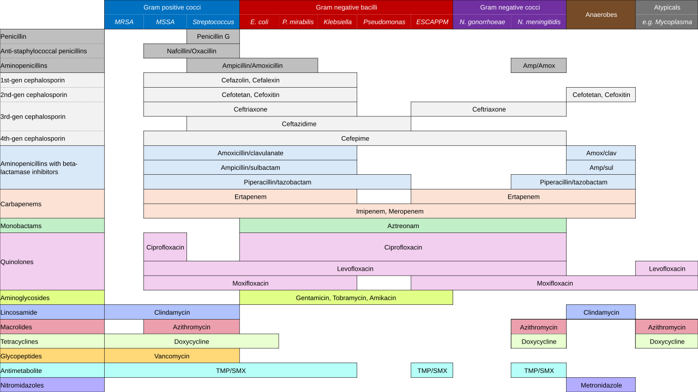
One drug, three names
A drug is any chemical that changes the way the body works. Every approved drug carries three names, and confusing them is one of the quiet sources of medication error. The chemical name describes the molecule — N-acetyl-para-aminophenol — and you will essentially never use it. The generic name (also called the nonproprietary or United States Adopted Name) is the drug's one true name: acetaminophen. It belongs to no company, it never changes, and it is what the order, the chart, and the reference book use. The trade name (brand or proprietary name) is the marketing name the manufacturer owns — Tylenol, and a dozen others.
Here is why this matters at the bedside. One generic drug can wear many trade names, and a patient arriving from home may know only the brand. A patient taking Tylenol, Percocet, and a nighttime cold remedy is taking acetaminophen three times and may sail past the maximum daily dose without ever recognizing the drug. Nurses work in generic names precisely because the generic name is the only name that cannot hide a duplicate.
Generic names also carry built-in clues. Most classes share a stem — a fragment of the name that tells you what the drug is before you look it up. If it ends in -olol it is a beta blocker; -pril, an ACE inhibitor; -statin, an HMG-CoA reductase inhibitor; -prazole, a proton pump inhibitor; -cillin, a penicillin; -sartan, an angiotensin II receptor blocker. Learning stems is one of the highest-yield hours you can spend in this book.
Classes: sorting drugs by what they do
A drug class (or pharmacologic class) is a group of drugs that share a mechanism of action, and therefore share effects, adverse effects, and nursing implications. This is the whole reason pharmacology is learnable. There are thousands of drugs and only a few dozen mechanisms that matter. You are not memorizing a list; you are learning a small number of stories and then recognizing which story a new drug belongs to.
Drugs can be grouped two ways, and both appear in practice. A therapeutic classification says what the drug is used for — antihypertensive, anticoagulant, analgesic. A pharmacologic classification says how it works — calcium channel blocker, vitamin K antagonist, opioid receptor agonist. One drug lives in both systems at once: metoprolol is therapeutically an antihypertensive and antianginal, and pharmacologically a beta1-selective adrenergic blocker.
Prototype drugs
Because a class shares a mechanism, each class has a prototype — the well-studied, representative member you learn cold, then use as the template for every other drug in the family. Learn morphine and you have most of hydromorphone, fentanyl, and oxycodone. Learn furosemide and bumetanide and torsemide hold few surprises. When you meet an unfamiliar drug, your first question is not "what does this do?" but "what class is this, and what is the prototype?"
| Class | Prototype | Key effect | Nursing alert |
|---|---|---|---|
| Beta blockers (-olol) | metoprolol | Blocks beta1 receptors → lower heart rate and blood pressure, less cardiac workload | Hold and notify for HR under 60 or SBP under 90; never stop abruptly (rebound tachycardia, angina, MI); may blunt hypoglycemia warning signs |
| ACE inhibitors (-pril) | lisinopril | Blocks formation of angiotensin II → vasodilation, lower BP, renal protection | Dry hacking cough, hyperkalemia, first-dose hypotension; angioedema is an emergency; contraindicated in pregnancy |
| Loop diuretics | furosemide | Blocks Na-K-2Cl reabsorption in the loop of Henle → brisk diuresis | Watch hypokalemia, hypotension, dehydration; push IV slowly (ototoxicity); daily weight is the best measure of fluid loss |
| Opioid agonists | morphine | Mu-receptor agonist → analgesia, sedation, euphoria | Respiratory depression is the killer — monitor rate and sedation; constipation never resolves, treat it; antidote is naloxone |
| Benzodiazepines (-azepam, -azolam) | lorazepam | Enhances GABAA → sedation, anxiolysis, seizure control | Additive CNS and respiratory depression with opioids and alcohol; fall risk in older adults; antidote is flumazenil (rarely used — it can precipitate seizures) |
| Anticoagulants | warfarin | Inhibits vitamin K epoxide reductase → less synthesis of factors II, VII, IX, X → less clotting | Monitor INR (usual target 2–3); antidote is vitamin K (phytonadione); teach consistent — not zero — leafy-green intake; enormous interaction list. Contrast heparin: acts immediately by potentiating antithrombin, monitored by aPTT (1.5–2.5 times control), reversed by protamine sulfate; watch for HIT (heparin-induced thrombocytopenia) |
| Statins (-statin) | atorvastatin | Inhibits HMG-CoA reductase → lower LDL cholesterol | Report unexplained muscle pain or weakness (myopathy, rhabdomyolysis); avoid grapefruit juice with several agents; monitor liver enzymes |
| Proton pump inhibitors (-prazole) | omeprazole | Irreversibly blocks the gastric H+/K+-ATPase → much less acid | Give before the first meal of the day; long-term use is linked to low magnesium and B12, fractures, and C. difficile; deprescribe when the indication ends |
- Every drug has a chemical, a generic, and one or more trade names; nurses work in generic names.
- Generic stems (-olol, -pril, -statin, -prazole, -sartan) identify the class on sight.
- A drug class shares a mechanism, so it shares effects, adverse effects, and nursing implications.
- Learn the prototype and you have the family; classify an unfamiliar drug before you try to memorize it.
Section 2Pharmacokinetics — what the body does to the drug
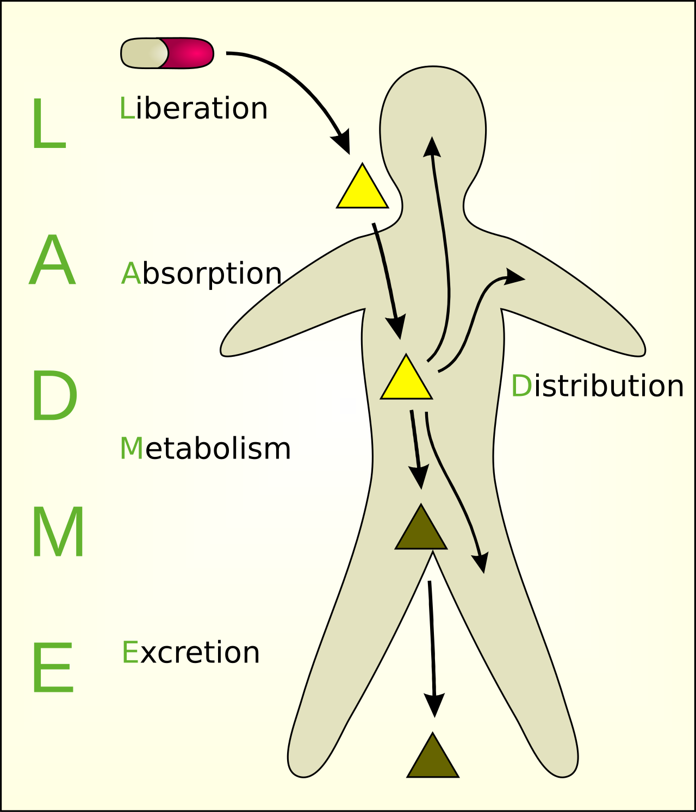
The four-step journey
Pharmacokinetics is the study of drug movement: how a drug gets in, where it goes, how it is chemically changed, and how it leaves. Four processes, remembered as ADME, run at once from the moment of administration: Absorption, Distribution, Metabolism, Excretion. Everything that determines how much drug reaches its target and for how long lives in these four steps — which is why the same 5 mg tablet behaves very differently in a young athlete and in an 88-year-old with heart failure and kidney disease.
Absorption is the movement of drug from the site of administration into the bloodstream. It depends on the route (IV is instant and complete; oral is slow and partial), on blood flow to the site (a shocked patient absorbs almost nothing from an intramuscular injection), on the drug's ability to cross membranes (lipid-soluble and un-ionized crosses easily), and on the presence of food. The fraction of a dose that actually reaches the systemic circulation intact is its bioavailability. By definition an IV dose is 100% bioavailable; an oral dose is always less.
Distribution is the drug's travel from blood into tissue. Blood flow decides who gets it first — heart, brain, liver, and kidney are perfused richly; fat and resting muscle far less. Two barriers matter clinically: the blood–brain barrier, which only lipid-soluble drugs cross easily (a reason some antihistamines sedate and others do not), and the placenta, which stops almost nothing. Distribution is also governed by protein binding: many drugs ride on albumin, and only the unbound (free) fraction is active. A patient with low albumin — malnourished, cirrhotic, elderly — has more free drug from the same dose and is at risk for toxicity at a "normal" dose.
Metabolism and the first-pass effect
Metabolism (biotransformation) chemically alters a drug, usually in the liver, usually via the cytochrome P450 (CYP450) enzyme family. Most of the time metabolism inactivates the drug and makes it water-soluble enough to be excreted. Sometimes it does the opposite: a prodrug is given inactive and must be metabolized to work — codeine must be converted to morphine by CYP2D6, and a patient who is a poor metabolizer gets little relief while an ultrarapid metabolizer can be dangerously overdosed.
The CYP450 system is where most drug–drug interactions live. An enzyme inducer (rifampin, phenytoin, carbamazepine, St. John's wort) speeds metabolism, so partner drugs fall to subtherapeutic levels — the classic disaster is an oral contraceptive or warfarin failing. An enzyme inhibitor (many azole antifungals, clarithromycin, amiodarone, grapefruit juice) slows metabolism, so partner drug levels climb toward toxicity.
The first-pass effect is the reason a route change is never a straight swap. Anything absorbed from the stomach or intestine drains into the portal vein and is carried through the liver before it reaches the rest of the body. The liver may destroy most of the dose on that first trip. Oral morphine is the textbook case: roughly three times the IV dose is needed by mouth for the same effect. Routes that bypass the portal circulation — IV, sublingual, transdermal, rectal (partially), inhaled — escape the first pass, which is exactly why nitroglycerin is placed under the tongue and not swallowed.
Excretion, half-life, and steady state
Excretion removes the drug, overwhelmingly through the kidneys. Reduced renal function — from age, dehydration, or kidney disease — means drug accumulates, so renally cleared drugs are dose-adjusted to creatinine clearance or eGFR. Smaller routes matter for specific drugs: bile and feces (some antibiotics), lungs (inhaled anesthetics), and breast milk, which is trivial in quantity but never trivial for the nursing infant.
The single most useful number in kinetics is the half-life (t½): the time for plasma concentration to fall by half. Half-life sets the dosing interval, and it drives two rules worth memorizing. It takes about four to five half-lives to reach steady state — the plateau where the amount going in equals the amount coming out, and where the drug is finally doing its full job. It also takes about four to five half-lives to clear a drug after the last dose. That is why a loading dose exists: when a patient cannot wait days for steady state, a large first dose fills the tank immediately, and smaller maintenance doses keep it there.
| Step | What happens | What slows or changes it | What the nurse does |
|---|---|---|---|
| Absorption | Drug enters the bloodstream from the administration site | Route, blood flow to the site, food, gastric pH, lipid solubility | Give on an empty stomach or with food as ordered; recognize that a hypotensive patient absorbs IM and SubQ drugs unreliably |
| Distribution | Drug travels from blood into tissue | Perfusion, protein binding, blood–brain barrier, placenta, body fat | Suspect toxicity at normal doses when albumin is low; assume the drug crosses the placenta and into breast milk |
| Metabolism | Liver enzymes (CYP450) alter the drug; prodrugs are activated | Liver disease, age (neonates and elders), inducers and inhibitors, genetics | Screen for CYP interactions; watch LFTs; know which drugs are prodrugs |
| Excretion | Drug leaves, mostly in urine | Renal function, urine pH, competition for tubular transport | Check creatinine and eGFR before renally cleared drugs; monitor intake and output |
- ADME — absorption, distribution, metabolism, excretion — is what the body does to the drug.
- Bioavailability is the fraction reaching circulation intact; IV is 100%, oral is always less.
- Only the free (unbound) drug is active — low albumin means more free drug and more toxicity risk.
- The first-pass effect destroys much of an oral dose in the liver; sublingual, transdermal, and IV routes bypass it.
- It takes 4–5 half-lives to reach steady state and 4–5 to clear; a loading dose shortcuts the wait.
Section 3Pharmacodynamics — what the drug does to the body
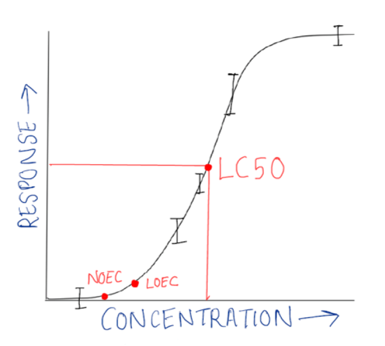
Receptors: the lock and the key
Pharmacodynamics is the other half of the story: once the drug arrives, what does it actually do? Almost always, it binds something. Most drugs act on a receptor — a protein, usually on a cell membrane, that the body built for its own signaling molecule. Drugs do not invent new functions. They borrow existing ones, turning the body's own switches up or down. Albuterol works because your lungs already have beta2 receptors waiting for epinephrine; morphine works because your nervous system already has mu receptors waiting for endorphins.
Two properties describe the fit. Affinity is how tightly a drug binds its receptor. Intrinsic activity is whether binding actually triggers a response. That pair generates the entire vocabulary below — and it explains selectivity, too. A drug is called selective when it prefers one receptor subtype, but selectivity is dose-dependent and never absolute: metoprolol is beta1-selective at ordinary doses, which is why it is the safer choice if a patient with asthma must take a beta blocker at all, but at higher doses it spills onto the beta2 receptors in the airway and can trigger bronchospasm anyway. Nonselective agents such as propranolol block beta2 from the first dose and are avoided in reactive airway disease.
Agonists, antagonists, and everything between
An agonist binds and activates — it mimics the body's own messenger and turns the response on. An antagonist binds and blocks — it has affinity but no intrinsic activity, so it occupies the receptor and prevents the natural messenger (or another drug) from acting. Antagonists have no effect of their own; their entire effect is the absence of someone else's. A partial agonist binds and activates only weakly, producing a submaximal response no matter how high the dose — a ceiling that can be a safety feature.
| Type | What it does at the receptor | Example | What it means at the bedside |
|---|---|---|---|
| Agonist | Binds and activates; mimics the natural ligand | albuterol (beta2), morphine (mu) | Expect the natural signal, amplified — albuterol gives bronchodilation and the tremor and tachycardia that come with it |
| Antagonist | Binds and blocks; affinity, no intrinsic activity | naloxone (mu), metoprolol (beta1) | The classic antidote mechanism; naloxone evicts opioid from the receptor and reverses respiratory depression — but it is shorter-acting than most opioids, so re-sedation is the danger and the patient must be watched |
| Partial agonist | Binds, activates weakly; has a ceiling | buprenorphine (mu) | Less respiratory depression at high doses, but it will displace a full agonist and can precipitate withdrawal |
| Non-receptor action | Works by physical or chemical means, no receptor | antacids, osmotic laxatives, mannitol, chelators | Do not look for a receptor story — the mechanism is chemistry or osmosis |
Dose–response, potency, efficacy, and the therapeutic index
Plot dose against effect and you get the dose–response curve: little happens at the bottom (below threshold), the response rises steeply through the useful middle, then flattens into a plateau where the receptors are saturated and more drug buys no more effect — only more toxicity. That plateau is why "the pain is still there, give more" eventually stops being pharmacology and starts being harm.
Two words students routinely swap. Potency is how much drug it takes to produce a given effect — a more potent drug works at a smaller dose. Efficacy is the maximum effect the drug can produce, no matter the dose. Efficacy is what you want; potency is only a milligram number. Hydromorphone is more potent than morphine (fewer milligrams needed) but not more efficacious. Meanwhile ibuprofen has a hard analgesic ceiling that no dose can escape: for severe pain, an opioid's greater efficacy is the point.
The therapeutic index (TI) compares the dose that poisons to the dose that helps — TD50/ED50, the dose toxic to half the population divided by the dose effective in half of it. A high TI means a wide, forgiving margin. A low (narrow) therapeutic index means the effective dose and the toxic dose are uncomfortably close, and these are the drugs that get serum levels drawn, get double-checked, and land patients in the ED. Learn the list: warfarin, digoxin, lithium, phenytoin, levothyroxine, theophylline, carbamazepine, vancomycin, aminoglycosides (gentamicin), and insulin. The therapeutic range is the concentration window between "not working" and "poisoning" — and for these drugs, that window is a canyon you can fall out of in either direction.
- Drugs act by binding receptors and turning the body's own signals up or down; affinity is the fit, intrinsic activity is whether it fires.
- Agonist activates, antagonist blocks (the antidote mechanism), partial agonist activates weakly with a ceiling.
- Potency = how many milligrams; efficacy = the maximum effect possible. Efficacy is what the patient feels.
- A narrow therapeutic index drug — warfarin, digoxin, lithium, phenytoin, insulin — needs levels, monitoring, and double-checks.
Section 4Safe medication administration
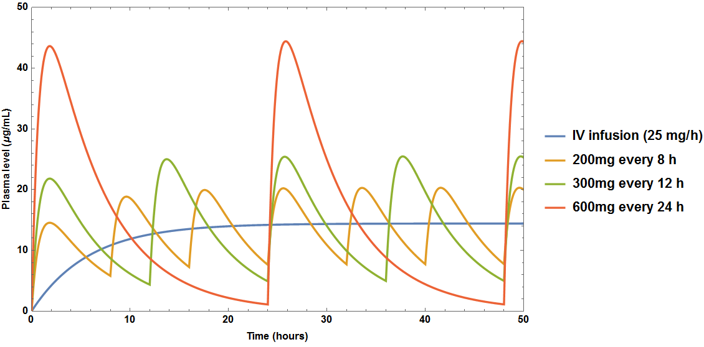
The rights of medication administration
Everything above is theory until you are standing at a bedside with a cup in your hand. The rights of medication administration are the checklist that turns knowledge into safety. The traditional five are right patient, right drug, right dose, right route, right time, and most programs and employers add several more: right documentation, right reason (indication), right response, right to refuse, and right education. Verify them at three points — when you pull the medication, when you prepare it, and again at the bedside before it goes in.
Two of these deserve emphasis because they are the ones most often skipped. Right patient means two identifiers — name and date of birth against the armband, never the room number, and never the patient's nod when you say the wrong name aloud. Right response means the job is not finished when the drug is given: you gave metoprolol, so you recheck the heart rate; you gave morphine, so you reassess pain and respiratory rate and sedation; you gave insulin, so you know when the glucose will bottom out. Documentation comes after administration, never before — charting a drug you have not yet given is how a dose gets given twice.
Routes
The route decides speed, completeness, and reversibility. The single most important safety principle in the table below is this: once it is in, you cannot take it back, and the faster the route, the more absolutely that is true. An oral overdose can sometimes be intercepted; an IV push cannot.
| Route | Onset | First pass? | Nursing notes |
|---|---|---|---|
| Oral (PO) | Slow (30–60 min) | Yes | Safest and cheapest; needs a swallow and a working gut. Never crush extended-release or enteric-coated tablets — crushing an ER product delivers the whole day's dose at once |
| Sublingual / buccal | Fast (1–5 min) | No | Nothing to swallow, nothing to drink; nitroglycerin is the prototype — a tingle suggests the tablet is still potent. Absolutely contraindicated with a PDE-5 inhibitor (sildenafil, tadalafil, vardenafil) — both drugs vasodilate and the combination causes catastrophic hypotension; ask before you give |
| Subcutaneous | Slow, sustained | No | Small volumes (usually 1 mL or less); insulin and heparin; rotate sites; do not massage after heparin (bruising) |
| Intramuscular | Moderate | No | Larger volumes; ventrogluteal is the safest adult site; absorption fails in shock or poor perfusion |
| Intravenous | Immediate | No | 100% bioavailable and irreversible — know the push rate, the compatibility, and the antidote before you start; watch for infiltration and extravasation |
| Transdermal | Slow, steady | No | Remove the old patch before applying the new one (stacked fentanyl patches have killed patients); date and initial; wear gloves; rotate sites |
| Inhaled | Fast, local | No | Local effect with small systemic dose; if both are ordered, bronchodilator before corticosteroid; rinse the mouth after inhaled steroids to prevent thrush |
| Rectal | Variable | Partial | Useful when the patient is vomiting or unconscious; absorption is unpredictable |
Orders and error prevention
A complete medication order names the patient, the date and time, the drug, the dose, the route, the frequency, and the prescriber's signature. If any element is missing, ambiguous, or simply does not make sense for this patient, the order is not valid and you do not give it — you clarify it. "The prescriber wrote it" has never been a defense; the nurse who administers is independently accountable for the drug.
High-alert medications are those that cause disproportionate harm when they go wrong: insulin, anticoagulants (heparin, warfarin), opioids, concentrated electrolytes (especially potassium chloride), chemotherapy, neuromuscular blockers, and sedatives. They earn an independent double-check — a second nurse who verifies the drug, dose, pump settings, and patient without being told what you already calculated. And a permanent rule: concentrated potassium chloride is never given IV push, ever. It must be diluted and infused.
Then there is how the numbers are written. Use a leading zero (0.5 mg, not .5 mg — a missed decimal point becomes a tenfold overdose) and never a trailing zero (5 mg, not 5.0 mg — which reads as 50). Spell out "units" rather than writing "U," which is misread as a zero. Avoid the abbreviations on your facility's do-not-use list. And know your look-alike/sound-alike (LASA) pairs: hydralazine and hydroxyzine, celecoxib and citalopram, metformin and metronidazole, lamotrigine and lamivudine, and — the pair that reaches the ICU — morphine and hydromorphone. Read the label three times — pulling it, preparing it, and returning or discarding it.
- The rights — patient, drug, dose, route, time, plus documentation, reason, response, refusal, education — are checked three times, and right patient means two identifiers.
- Route determines onset and reversibility; IV is immediate and cannot be undone; never crush ER or enteric-coated tablets.
- High-alert drugs (insulin, anticoagulants, opioids, concentrated KCl, chemo) need independent double-checks; KCl is never IV push.
- Use a leading zero, never a trailing zero; spell out "units"; know your LASA pairs.
- An unclear or incomplete order is clarified, not given — the administering nurse is independently accountable.
Section 5Herbal supplements & interactions
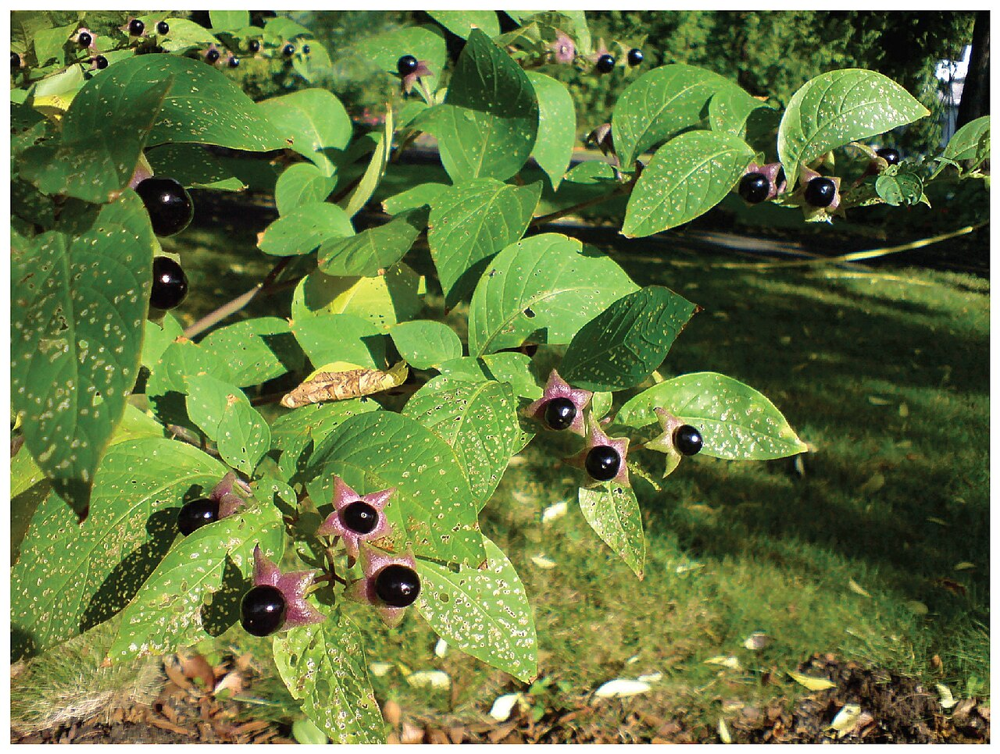
Supplements are drugs, whatever the label says
Roughly one in five adults takes an herbal product, and the majority never mention it to a clinician — because in their minds a supplement is food, not medicine. That belief is the hazard. A dietary supplement in the United States is regulated under the Dietary Supplement Health and Education Act (DSHEA) of 1994 as a food, not a drug. It requires no pre-market proof of safety or efficacy, and the FDA can act only after harm appears. Nobody verified the potency, the purity, or the contents of the bottle in your patient's bag.
Meanwhile, the pharmacology is entirely real. Digoxin comes from foxglove, aspirin from willow bark, morphine from the poppy, atropine from belladonna, and paclitaxel from the yew tree. Plants are chemists. "Natural" has never meant safe — hemlock is natural — and a compound potent enough to help is by definition potent enough to interact.
The interactions that actually matter
Herbal interactions cluster into three predictable mechanisms, which means you can reason instead of memorize. First, CYP450 and P-glycoprotein effects: St. John's wort is a powerful inducer and can wreck a drug regimen by driving levels down. Second, bleeding risk: the products with antiplatelet activity stack on top of anticoagulants, antiplatelets, and NSAIDs — the memorable cluster is the four G's plus feverfew (garlic, ginger, ginkgo, ginseng, feverfew). Third, additive pharmacology: kava and valerian pile onto CNS depressants; ginseng pushes glucose down on top of antidiabetics.
| Supplement | Common claimed use | Mechanism / concern | Nursing alert |
|---|---|---|---|
| St. John's wort | Depression, mood | Potent CYP3A4 and P-glycoprotein inducer; serotonergic activity | The most dangerous common supplement. Lowers levels of warfarin, oral contraceptives, cyclosporine, HIV protease inhibitors, digoxin, anticonvulsants — transplant rejection and unintended pregnancy are documented. With an SSRI or triptan, risk of serotonin syndrome |
| Ginkgo biloba | Memory, circulation | Inhibits platelet-activating factor → antiplatelet | Bleeding with warfarin, aspirin, clopidogrel, NSAIDs; lowers seizure threshold; typically stop 1–2 weeks before surgery |
| Garlic | Cholesterol, blood pressure | Antiplatelet; can reduce saquinavir levels | Additive bleeding risk; stop before surgery; may add to antihypertensives |
| Ginger | Nausea, motion sickness | Antiplatelet at higher doses | Reasonably safe in culinary amounts; bleeding risk with anticoagulants at supplement doses |
| Ginseng | Energy, "immune support" | Antiplatelet; lowers blood glucose; may reduce INR | Hypoglycemia with insulin or sulfonylureas; unpredictable warfarin effect; stimulant — insomnia, hypertension; interacts with MAOIs |
| Feverfew | Migraine prevention | Antiplatelet | Bleeding risk; abrupt discontinuation causes rebound headache |
| Kava | Anxiety, insomnia | Hepatotoxicity; CNS depression | Linked to severe liver injury and transplant; additive with benzodiazepines, alcohol, opioids; avoid with any hepatotoxic drug |
| Valerian | Insomnia | CNS depression (GABAergic) | Additive sedation with benzodiazepines, opioids, alcohol, antihistamines; fall risk in older adults |
| Echinacea | Colds, "immune support" | Immune stimulation; possible hepatotoxicity | Avoid in immunosuppression, transplant, autoimmune disease, and HIV; may oppose immunosuppressants |
| Black cohosh | Menopausal symptoms | Hepatotoxicity reports | Monitor liver enzymes; avoid with other hepatotoxic drugs; caution in hormone-sensitive cancer |
| Saw palmetto | Benign prostatic hyperplasia | Mild antiplatelet effect; hormonal activity | Bleeding risk; may lower PSA and mask prostate cancer screening — the prescriber must know the patient takes it |
| Milk thistle | Liver support | Generally well tolerated; modest CYP effects | Among the safer products; still verify against the patient's regimen, and it is not a treatment for liver disease |
| Grapefruit juice (not an herb, same problem) | Food | Intestinal CYP3A4 inhibitor | Raises levels of simvastatin, atorvastatin, amiodarone, many calcium channel blockers, some immunosuppressants; a single glass can matter and the effect lasts about 24 hours |
How to ask
The interview technique changes the answer. "Are you taking any medications?" reliably gets a "no" from a patient with three supplement bottles at home, because they do not classify them as medications. Ask instead: "What do you take that you buy without a prescription — vitamins, herbs, teas, powders, protein shakes, anything from the health-food aisle, anything a family member recommends?" Then ask them to bring in the actual bottles. Document each one on the medication list. And teach without judgment: the goal is not to talk the patient out of a supplement, it is to keep them from a bleed, a rejected transplant, or a serotonin crisis they never saw coming. Two teaching points earn their place in nearly every discharge: tell every prescriber about every supplement, and stop most herbal products one to two weeks before surgery.
- Supplements are regulated as food, not drugs — no pre-market proof of safety, efficacy, potency, or purity.
- St. John's wort is the highest-stakes common supplement: a CYP3A4/P-gp inducer that drives warfarin, contraceptives, cyclosporine, and antiretrovirals to failure, plus serotonin syndrome risk.
- The bleeding cluster — garlic, ginger, ginkgo, ginseng, feverfew — stacks with anticoagulants, antiplatelets, and NSAIDs; stop 1–2 weeks before surgery.
- Kava and black cohosh are hepatotoxic; valerian and kava add to CNS depressants; echinacea is a problem in immunosuppression.
- Ask specifically about non-prescription products and put every one on the medication list.
The chapter in one breath
- Every drug has a chemical, generic, and trade name; nurses work in generic names, and stems like -olol and -pril announce the class on sight.
- A class shares a mechanism, so it shares effects and nursing implications — learn the prototype and you own the family.
- Pharmacokinetics (ADME) is what the body does to the drug; bioavailability, protein binding, and the first-pass effect explain why the same dose behaves differently in different patients.
- Half-life drives the dosing interval: about 4–5 half-lives to reach steady state and 4–5 to clear; a loading dose skips the wait.
- Pharmacodynamics is what the drug does to the body: agonists activate, antagonists block (the antidote mechanism), partial agonists have a ceiling.
- Potency is milligrams, efficacy is the maximum effect; a narrow therapeutic index (warfarin, digoxin, lithium, phenytoin, insulin) demands levels and double-checks.
- Safe administration is the rights, two identifiers, the right route, an independent double-check for high-alert drugs, and never IV push potassium.
- Herbal supplements are unregulated drugs: St. John's wort induces CYP3A4 and wrecks regimens, the four G's plus feverfew bleed, kava and black cohosh injure the liver — so ask about the bottles no one prescribed.
ReferenceWords worth knowing
A quick reference for the terms in this chapter — skim it now, or circle back whenever a word trips you up.
- Absorption
- Movement of a drug from its administration site into the bloodstream; the first step of pharmacokinetics.
- Adverse drug reaction (ADR)
- A harmful, unintended response to a drug given at a normal dose; broader and more serious than a predictable side effect.
- Agonist
- A drug that binds a receptor and activates it, mimicking the body's own messenger.
- Antagonist
- A drug that binds a receptor and blocks it, producing no effect of its own; the mechanism behind antidotes such as naloxone.
- Bioavailability
- The fraction of an administered dose that reaches the systemic circulation intact; 100% for IV, always less for oral.
- Distribution
- Movement of a drug from the blood into tissues; shaped by perfusion, protein binding, and barriers such as the blood–brain barrier and placenta.
- Efficacy
- The maximum effect a drug can produce regardless of dose — what the drug is capable of.
- Excretion
- Removal of drug and metabolites from the body, chiefly by the kidneys.
- First-pass effect
- Metabolism of an orally absorbed drug by the liver before it reaches systemic circulation; bypassed by IV, sublingual, and transdermal routes.
- Half-life (t½)
- The time required for plasma drug concentration to fall by 50%; sets the dosing interval and predicts steady state and clearance.
- High-alert medication
- A drug that causes disproportionate harm when used in error — insulin, anticoagulants, opioids, concentrated electrolytes, chemotherapy — warranting an independent double-check.
- Loading dose
- A large initial dose given to reach a therapeutic concentration quickly, rather than waiting four to five half-lives.
- Metabolism (biotransformation)
- Chemical alteration of a drug, mostly by hepatic CYP450 enzymes; usually inactivates the drug, but activates a prodrug.
- Pharmacodynamics
- What the drug does to the body — receptor binding, mechanism of action, and the dose–response relationship.
- Pharmacokinetics
- What the body does to the drug — absorption, distribution, metabolism, and excretion.
- Potency
- The amount of drug required to produce a given effect; a more potent drug works at a lower dose. Not the same as efficacy.
- Prodrug
- An inactive drug that must be metabolized into its active form — codeine converted to morphine, for example.
- Prototype drug
- The representative, well-studied member of a class used as the template for the rest of the family.
- Side effect
- A predictable, dose-related effect other than the intended one; often tolerable, sometimes the reason a patient quits the drug.
- Steady state
- The plateau at which drug entering the body equals drug leaving it; reached after roughly four to five half-lives of regular dosing.
- Therapeutic index
- The ratio of the toxic dose to the effective dose; a low (narrow) index means a dangerously small margin for error.
- Trough level
- The lowest drug concentration in a dosing interval, drawn about 30 minutes before the next dose; the level that reveals accumulation.
Check yourself
Antimicrobial Drugs
Antimicrobials are the only drugs we give that are aimed at something that is not the patient. Everything else in the medication room — the beta blocker, the insulin, the opioid — changes the person in the bed. An antibiotic is meant to kill an invader while leaving that person untouched, and how well it manages that trick is the difference between a cure and a kidney injury. This chapter walks through how these drugs pick their target, how they are grouped by the machinery they break, why the microbes are learning to shrug them off, and what the nurse does at the bedside to make the whole thing work safely. Learn the classes as families and the details stop being memorization — they start being predictions you can make.
By the end of this chapter you can
- Explain selective toxicity and use it to predict which drugs are safe and which are not.
- Distinguish narrow- from broad-spectrum and bactericidal from bacteriostatic therapy.
- Describe the role of culture and sensitivity testing and why empiric therapy exists.
- Group antibacterials by mechanism — cell wall, protein synthesis, nucleic acid, and metabolic inhibitors — and name a prototype for each.
- Explain how resistance arises and identify MRSA, VRE, and other resistant organisms and their treatments.
- State the nurse's role in antimicrobial stewardship.
- Compare the major antifungal and antiviral classes and their signature toxicities.
- Describe the major antiprotozoal and anthelmintic drugs and the nursing care common to all antimicrobial therapy.
Section 1Principles of antimicrobial therapy
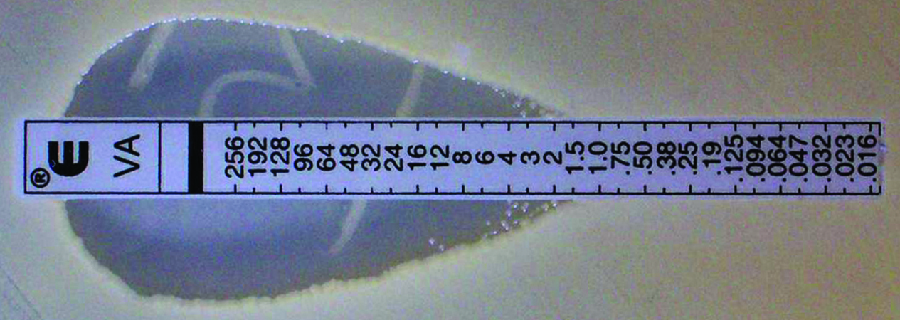
Selective toxicity: the whole game
Selective toxicity is the principle that makes antimicrobial therapy possible: the drug attacks a structure the microbe has and the patient does not. Bacteria build a peptidoglycan cell wall; your cells build no wall at all, so a drug that sabotages wall construction is nearly invisible to you. Bacteria run 70S ribosomes assembled from 30S and 50S subunits; your cells run 80S ribosomes, so a drug shaped to jam the bacterial one mostly ignores yours. Bacteria have to synthesize their own folate from scratch; you eat yours, so a drug that blocks the synthesis pathway starves the bacterium and skips you entirely.
Read that list backwards and you have predicted the side effects. Selective toxicity is never perfect. Human mitochondria carry ribosomes that resemble bacterial ones — which is exactly why linezolid suppresses bone marrow and why aminoglycosides damage the hair cells of the inner ear. The narrower the gap between microbe and host, the more toxic the drug. That is the single sentence that explains why penicillin is safe enough to give a toddler and amphotericin B has a nickname involving rigors.
Spectrum, and cidal versus static
Narrow-spectrum drugs hit a limited range of organisms; broad-spectrum drugs hit many. Students often assume broad is better. It is not. Broad-spectrum therapy clear-cuts the patient's normal flora along with the pathogen, opening the door to superinfection — Clostridioides difficile colitis, Candida thrush, vaginal yeast — and it applies selection pressure across a far wider bacterial population. Broad is a starting guess, not a goal. The goal is always the narrowest drug that covers the actual organism.
Bactericidal drugs kill outright (beta-lactams, aminoglycosides, fluoroquinolones, vancomycin, metronidazole). Bacteriostatic drugs stall replication and let the immune system finish the job (tetracyclines, macrolides, clindamycin, sulfonamides, linezolid). The distinction matters most when the immune system cannot help — endocarditis, meningitis, neutropenia — where a cidal drug is generally required.
Culture and sensitivity, and the empiric window
A culture and sensitivity (C&S) has two halves. The culture identifies the organism. The sensitivity panel exposes it to a series of drugs and reports the minimum inhibitory concentration (MIC) — the lowest concentration that stops growth — then labels each drug susceptible, intermediate, or resistant. A low MIC number alone does not mean "best drug"; the interpretation next to it does, because it factors in what concentration the drug actually reaches at the site of infection.
Cultures take 24 to 72 hours. A septic patient does not have 72 hours. So we start empiric therapy — an educated, broad guess based on the suspected site, the likely organisms for that site, the local antibiogram, and the patient's recent exposures. Then, when the C&S returns, therapy is de-escalated to a narrow drug that the organism is actually susceptible to. Empiric therapy is a bridge, not a destination, and a broad antibiotic still running on day five with a susceptibility report on the chart is a stewardship failure.
| Term | What it means | Why it matters at the bedside |
|---|---|---|
| Selective toxicity | Attacks a microbial-only target | The narrower the microbe–host gap, the more toxic the drug and the more you monitor |
| Narrow-spectrum | Few organisms covered | Preferred once the organism is known — spares flora, less resistance |
| Broad-spectrum | Many organisms covered | Empiric starting point; watch for C. difficile and yeast |
| Bactericidal | Kills the organism | Required when host defenses can't help: endocarditis, meningitis, neutropenia |
| Bacteriostatic | Stops replication | Needs a working immune system to finish the job |
| MIC | Lowest concentration that inhibits growth | Read the susceptible/resistant label, not just the number |
| Empiric therapy | Best guess before results | Start fast in sepsis — but plan to de-escalate |
| Prophylaxis | Prevention, not treatment | Surgical dose timed within 60 min before incision |
- Selective toxicity — a microbial-only target — makes the drug possible; where microbe and host overlap, toxicity appears.
- Narrow-spectrum is the goal; broad-spectrum is a temporary guess that costs flora and breeds resistance.
- Bactericidal kills; bacteriostatic stalls and needs an immune system.
- C&S names the organism and reports the MIC; empiric therapy covers the gap and is then de-escalated.
Section 2Antibiotics by mechanism

Cell wall inhibitors: break the box
Bacteria live under enormous internal osmotic pressure and are held together by a peptidoglycan mesh. Interrupt the cross-linking and the cell swells and bursts. All of these drugs are therefore bactericidal, and because human cells have no wall, they are among the safest antimicrobials we own.
The beta-lactams — named for the four-membered beta-lactam ring they share — include penicillins, cephalosporins, carbapenems, and the monobactam aztreonam. They bind the penicillin-binding proteins that do the cross-linking. Penicillins run from narrow (penicillin G, for strep and syphilis) to broader (amoxicillin, ampicillin) to antipseudomonal (piperacillin-tazobactam). Cephalosporins climb through generations — cefazolin (first, the classic surgical prophylaxis drug), ceftriaxone (third, meningitis and pneumonia), cefepime (fourth, Pseudomonas), ceftaroline (fifth, active against MRSA). Carbapenems (meropenem, ertapenem, imipenem-cilastatin) are the heavy artillery reserved for resistant gram-negatives. Aztreonam covers gram-negatives only and is the escape hatch for a patient with true penicillin anaphylaxis.
The non-beta-lactam wall drugs matter too. Vancomycin, a glycopeptide, blocks wall building at a different step and is a workhorse for MRSA. Daptomycin is a lipopeptide that punches holes in the gram-positive membrane rather than the wall; it is inactivated by lung surfactant, so it is never the answer for pneumonia.
Protein synthesis inhibitors: jam the ribosome
The bacterial 70S ribosome is a target with two halves, and the drugs sort by which half they grab. Hitting the 30S subunit: aminoglycosides (gentamicin, tobramycin, amikacin) and tetracyclines (doxycycline, minocycline). Hitting the 50S subunit: macrolides (azithromycin, erythromycin, clarithromycin), clindamycin, linezolid, and chloramphenicol. A useful mnemonic: "buy AT 30, CELL at 50" — Aminoglycosides and Tetracyclines at 30S; Chloramphenicol, Erythromycin/macrolides, Lincosamides (clindamycin), and Linezolid at 50S.
This is where selective toxicity gets thin, and the toxicities are the reason. Aminoglycosides are nephrotoxic and ototoxic — the hearing loss can be permanent — so they demand peak and trough levels and daily creatinine. Tetracyclines chelate calcium: they stain developing teeth (avoid under age 8 and in pregnancy) and are inactivated if the patient swallows them with milk, antacids, or an iron pill. Macrolides prolong the QT interval. Clindamycin is the classic C. difficile offender. Linezolid, working on a ribosome that looks like the one in your mitochondria, causes thrombocytopenia, optic and peripheral neuropathy, and — because it is a weak MAO inhibitor — serotonin syndrome when stacked on an SSRI.
Nucleic acid and metabolic inhibitors: break the blueprint, starve the factory
Fluoroquinolones (ciprofloxacin, levofloxacin, moxifloxacin) poison DNA gyrase and topoisomerase IV, the enzymes that untangle bacterial DNA. They are potent, oral, and carry more boxed warnings than almost anything else on the shelf: tendinitis and tendon rupture (Achilles, worse over 60, on steroids, or post-transplant), aortic aneurysm and dissection, peripheral neuropathy, CNS effects, QT prolongation, and blood glucose swings. Rifampin blocks bacterial RNA polymerase, turns urine, sweat, and tears orange (stains contact lenses), is hepatotoxic, and is a ferocious CYP450 inducer that can quietly defeat oral contraceptives and warfarin. Metronidazole is activated inside anaerobes and protozoa where it shreds DNA; it produces a metallic taste and a disulfiram-like reaction with alcohol.
The metabolic inhibitors starve the bacterium of folate. Sulfamethoxazole blocks dihydropteroate synthase and trimethoprim blocks dihydrofolate reductase — two sequential steps in one pathway, which is why the combination (TMP-SMX) is synergistic and bactericidal. Watch for rash that could become Stevens-Johnson syndrome, hyperkalemia, crystalluria (push fluids), photosensitivity, and a sharp rise in the INR of anyone on warfarin. Isoniazid, a first-line TB drug, blocks mycolic acid synthesis and causes peripheral neuropathy — which is why it is co-prescribed with pyridoxine (vitamin B6) — and hepatitis.
| Class | Prototype | Mechanism / key effect | Nursing alert |
|---|---|---|---|
| Penicillins | penicillin G, amoxicillin | Blocks cell wall cross-linking; bactericidal | True allergy vs. GI upset — ask what happened; observe 30 min after first dose; epinephrine available |
| Cephalosporins | cefazolin, ceftriaxone | Beta-lactam; generations broaden gram-negative reach | Cross-reactivity with penicillin is low (~1–2%) but ask; never mix ceftriaxone with calcium-containing IV in a neonate |
| Carbapenems | meropenem | Broadest beta-lactam; reserve drug | Seizure risk (highest with imipenem) — more so in renal impairment |
| Monobactam | aztreonam | Gram-negative only | Safe option in true penicillin anaphylaxis |
| Glycopeptide | vancomycin | Blocks wall synthesis; MRSA workhorse | Infuse over at least 60 min; nephrotoxic + ototoxic; monitor trough/AUC and creatinine |
| Lipopeptide | daptomycin | Disrupts gram-positive membrane | Monitor CPK weekly (myopathy); inactivated by surfactant — not for pneumonia |
| Aminoglycosides | gentamicin | 30S; bactericidal; gram-negatives | Nephrotoxic + ototoxic (may be permanent); peak & trough levels; daily creatinine; report tinnitus or vertigo |
| Tetracyclines | doxycycline | 30S; bacteriostatic; atypicals, tick-borne | Photosensitivity; teeth staining — avoid under age 8 and in pregnancy; separate from dairy, antacids, iron; full glass of water, sit upright 30 min |
| Macrolides | azithromycin | 50S; bacteriostatic; atypical pneumonia | QT prolongation; GI cramping; erythromycin/clarithromycin are CYP3A4 inhibitors |
| Lincosamide | clindamycin | 50S; anaerobes, skin/soft tissue | Classic C. difficile trigger — report new diarrhea immediately |
| Oxazolidinone | linezolid | 50S; MRSA and VRE; oral = IV | Thrombocytopenia (weekly CBC); serotonin syndrome with SSRIs; optic neuropathy on long courses; tyramine caution |
| Fluoroquinolones | ciprofloxacin | DNA gyrase / topoisomerase IV; bactericidal | Tendon rupture, aortic aneurysm, neuropathy, CNS effects, QT, glucose swings; separate from calcium/iron/antacids by 2–6 h |
| Rifamycin | rifampin | Blocks bacterial RNA polymerase; TB | Orange urine/sweat/tears (stains lenses — harmless); hepatotoxic; potent CYP inducer — warn about contraceptive failure |
| Nitroimidazole | metronidazole | Damages DNA of anaerobes/protozoa | No alcohol during and 3 days after — disulfiram-like reaction; metallic taste; darkened urine |
| Sulfonamide combo | TMP-SMX | Sequential folate blockade; synergistic | Rash → watch for SJS; hyperkalemia; push fluids for crystalluria; raises INR on warfarin; avoid in late pregnancy |
| Antitubercular | isoniazid | Blocks mycolic acid synthesis | Give pyridoxine (B6) to prevent neuropathy; hepatotoxic — teach dark urine, jaundice, RUQ pain; no alcohol |
- Cell wall drugs (beta-lactams, vancomycin) are bactericidal and the safest — humans have no cell wall.
- Protein synthesis drugs split by subunit: aminoglycosides and tetracyclines at 30S; macrolides, clindamycin, and linezolid at 50S.
- Nucleic acid drugs: fluoroquinolones (gyrase — tendon rupture), rifampin (RNA polymerase — orange fluids, CYP inducer), metronidazole (no alcohol).
- Metabolic drugs: TMP-SMX blocks two sequential folate steps — watch rash, potassium, and INR.
Section 3Resistance and stewardship

How resistance arises
Antibiotics do not create resistance. They select for it. In any large bacterial population a few cells already carry a gene that happens to blunt the drug — through random mutation, or borrowed wholesale from a neighbor. Give the antibiotic and you kill the susceptible majority, which is exactly the outcome you wanted, but you also hand the survivors an empty room with no competition. They multiply. This is ordinary natural selection running at bacterial speed, and every unnecessary dose accelerates it.
Bacteria are also promiscuous with DNA. Horizontal gene transfer lets a resistance gene jump between organisms that are not even related: conjugation passes a plasmid through a direct bridge, transformation scoops up free DNA from a dead cell, and transduction ferries genes by bacteriophage. One gut organism can donate a resistance plasmid to a passing pathogen overnight.
The mechanisms themselves come in four shapes, and you can read them straight off the resistance figure. Enzymatic inactivation — beta-lactamases chew open the beta-lactam ring; extended-spectrum beta-lactamases (ESBLs) chew a wider menu; carbapenemases chew even carbapenems. Target modification — MRSA's mecA gene builds an altered penicillin-binding protein (PBP2a) that ordinary beta-lactams cannot grip; VRE's vanA gene rebuilds the wall precursor so that its terminal D-alanine-D-alanine becomes D-alanine-D-lactate, which vancomycin can no longer bind. Efflux pumps bail the drug back out before it works. Reduced permeability shuts the porin doors so the drug never gets in.
The organisms you will meet
MRSA is Staphylococcus aureus that has become immune to the entire traditional beta-lactam class at once — not just methicillin — because PBP2a ignores penicillins, cephalosporins, and carbapenems alike. That single gene knocks out the safest, cheapest drugs you had and forces a move to vancomycin, linezolid, daptomycin, or ceftaroline — the one beta-lactam specifically engineered to bind PBP2a anyway. VRE pushes further, defeating the drug we reached for when MRSA appeared. ESBL-producing gram-negatives push therapy toward carbapenems; CRE defeat the carbapenems and leave a genuinely thin bench. And C. difficile, while not a resistance mechanism itself, is the price of collateral damage: the antibiotic wipes out the gut community and C. diff blooms in the vacancy.
Stewardship and the nurse
Antimicrobial stewardship is the coordinated effort to use these drugs only when needed, and then in the right drug, dose, route, and duration. It is often described as a pharmacy-and-physician program, which badly understates the nurse's role — the nurse is the person who actually gets the culture, notices the report, gives the dose, and hears the patient's story.
Concretely: get the cultures before the first dose. Take a real allergy history — "penicillin gave me an upset stomach at age six" is not an allergy, and roughly 9 in 10 people labeled penicillin-allergic are not, so that label costs them broader, more toxic, more expensive drugs for decades. Flag day 3: is the culture back, and is the patient still on the broad empiric drug? Push the IV-to-PO switch when the patient is eating and stable (linezolid, fluoroquinolones, metronidazole, doxycycline, and fluconazole are all essentially fully absorbed orally). Question the duration — evidence keeps shortening courses. Teach the patient that antibiotics do nothing for a cold, that leftovers are not to be saved or shared, and that the prescribed course should be taken as directed rather than stopped the moment they feel better. And do the unglamorous thing that prevents more resistant infections than any drug decision: wash your hands.
| Organism | Resistance mechanism | Treatment options | Nursing alert |
|---|---|---|---|
| MRSA | mecA → altered PBP2a; all traditional beta-lactams fail | vancomycin, linezolid, daptomycin, ceftaroline; TMP-SMX or doxycycline for skin | Contact precautions; nasal decolonization protocols; a standard cephalosporin such as cefazolin or ceftriaxone will not cover MRSA — ceftaroline is the lone exception |
| VRE | vanA/vanB → altered D-Ala-D-Ala binding site | linezolid, daptomycin | Contact precautions; survives on surfaces — dedicated equipment |
| ESBL gram-negatives | Extended-spectrum beta-lactamase inactivates penicillins/cephalosporins | Carbapenems (meropenem, ertapenem) | Escalation is appropriate here — a "susceptible" cephalosporin on the report may still fail |
| CRE | Carbapenemase (e.g., KPC) | ceftazidime-avibactam, meropenem-vaborbactam, sometimes colistin | Report to infection prevention; strict precautions; colistin is nephrotoxic |
| C. difficile | Not resistance — overgrowth after flora are destroyed | Oral vancomycin or fidaxomicin; fecal transplant for recurrence | Soap and water — alcohol gel does not kill spores; stop the offending antibiotic if possible; do not give antimotility agents |
- Antibiotics select for resistance rather than causing it; horizontal gene transfer spreads it between unrelated organisms.
- Four mechanisms: enzymes (beta-lactamase, ESBL, carbapenemase), target modification (MRSA's PBP2a, VRE's vanA), efflux pumps, reduced permeability.
- MRSA defeats every beta-lactam at once; VRE defeats the drug we replaced it with; CRE leaves very few options.
- The nurse's stewardship work: cultures first, accurate allergy history, day-3 review, IV-to-PO, right duration, patient teaching, hand hygiene.
Section 4Antifungals and antivirals
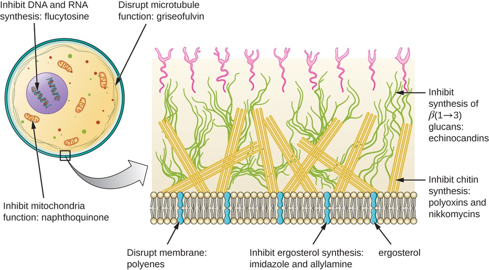
Antifungals: a much smaller gap
Fungi are eukaryotes. Their cells are built like yours — nucleus, 80S ribosomes, similar membranes — which means the pool of microbe-only targets is small and antifungal drugs are, as a group, markedly more toxic than antibacterials. Almost every antifungal exploits one of two genuine differences: fungal membranes use ergosterol where yours uses cholesterol, and fungal cell walls contain beta-(1,3)-D-glucan, which you do not make at all.
Amphotericin B (a polyene) binds ergosterol directly and rips pores in the membrane. It is powerful, and it is rough: infusion-related fevers, rigors, and shaking chills earned it the nickname "shake and bake," plus dose-limiting nephrotoxicity with potassium and magnesium wasting. Liposomal formulations are considerably gentler — and this is a genuine safety trap, because the conventional and liposomal doses are very different and are not interchangeable. Verify the formulation on the label against the order. The azoles (fluconazole, itraconazole, voriconazole, posaconazole, isavuconazole) block lanosterol 14-alpha-demethylase, the enzyme that makes ergosterol; they are the mainstay of oral therapy but bring hepatotoxicity, QT prolongation, and heavy CYP450 interactions with warfarin and statins. Voriconazole adds a distinctive transient visual disturbance — blurred or bright-tinged vision — and photosensitivity. The echinocandins (caspofungin, micafungin, anidulafungin) attack the beta-glucan wall, a target humans simply do not have, and are correspondingly well tolerated; they are first-line for invasive candidemia but are IV-only. Terbinafine treats nail and skin fungus over long courses — monitor liver function and warn about taste changes. Nystatin is topical: swish and swallow for thrush, and teach the patient to hold it in the mouth before swallowing.
Antivirals: the narrowest gap of all
A virus replicates using your cellular machinery, so there is almost nothing to attack that is not also yours. Antivirals work by targeting the handful of enzymes the virus brings itself — a viral polymerase, a protease, an integrase, a neuraminidase. They also suppress rather than cure most of the time, and they are exquisitely time-sensitive: antivirals started late usually do very little.
Acyclovir and its better-absorbed prodrug valacyclovir treat herpes simplex and varicella-zoster. The elegance is in the activation: acyclovir must be phosphorylated by viral thymidine kinase before it works, so it is essentially inert in an uninfected cell. IV acyclovir crystallizes in renal tubules, so hydrate the patient well and infuse over at least an hour. Ganciclovir and valganciclovir handle CMV and are bone-marrow suppressive. Oseltamivir blocks influenza neuraminidase and must start within about 48 hours of symptom onset to matter. For HIV, antiretroviral therapy combines drug classes — NRTIs (tenofovir, emtricitabine, abacavir), NNRTIs (efavirenz), protease inhibitors (usually boosted with ritonavir), and integrase inhibitors (dolutegravir, bictegravir), which are now first-line. Two nursing points dominate: abacavir requires HLA-B*5701 screening before the first dose because a positive result predicts a potentially fatal hypersensitivity reaction, and adherence is not a soft outcome — missed doses let the virus mutate into resistance. Hepatitis C is now curable in most patients with 8–12 weeks of direct-acting antivirals such as sofosbuvir-based or glecaprevir-pibrentasvir regimens; screen for hepatitis B first, since these drugs can reactivate it.
| Class | Prototype | Target | Nursing alert |
|---|---|---|---|
| Polyene | amphotericin B | Binds ergosterol → membrane pores | "Shake and bake" — premedicate per order; nephrotoxic; monitor K+ and Mg2+, creatinine; conventional vs. liposomal doses are not interchangeable |
| Azoles | fluconazole, voriconazole | Blocks ergosterol synthesis | Hepatotoxic (LFTs); QT prolongation; big CYP interactions — check warfarin and statins; voriconazole: visual changes, photosensitivity |
| Echinocandins | micafungin, caspofungin | Blocks beta-(1,3)-D-glucan wall synthesis | Best tolerated antifungal; IV only; first-line for invasive candidemia; infusion-site reactions |
| Allylamine | terbinafine | Blocks squalene epoxidase | Long courses for nails; baseline and periodic LFTs; taste and smell disturbance |
| Topical polyene | nystatin | Same as amphotericin, applied locally | Swish and swallow for thrush; hold in mouth, no food/drink 30 min after; treat the denture too |
| Anti-herpes | acyclovir, valacyclovir | Guanosine analog activated by viral thymidine kinase | Hydrate — IV form crystallizes in the kidney; infuse over ≥1 h; start within 72 h of a shingles rash |
| Anti-CMV | ganciclovir, valganciclovir | Inhibits CMV DNA polymerase | Myelosuppression — monitor CBC; hazardous drug handling |
| Neuraminidase inhibitor | oseltamivir | Traps influenza virions on the host cell | Must start within ~48 h of symptoms; nausea — take with food; not a substitute for the vaccine |
| NRTI | tenofovir, abacavir | Faulty nucleoside terminates viral DNA | HLA-B*5701 test before abacavir — hypersensitivity can be fatal; tenofovir: renal function and bone density |
| Integrase inhibitor | dolutegravir, bictegravir | Blocks integration into host DNA | First-line, well tolerated; weight gain; separate from antacids/calcium; adherence is everything |
| Protease inhibitor | ritonavir-boosted regimens | Blocks viral protein maturation | Ritonavir is a potent CYP3A4 inhibitor — screen every other medication; metabolic effects |
| HCV direct-acting | sofosbuvir-based, glecaprevir-pibrentasvir | Blocks the HCV NS3/4A protease, NS5A, or NS5B polymerase — regimens combine two targets | Cures >95% in 8–12 weeks; screen for hepatitis B — risk of HBV reactivation |
- Fungi are eukaryotes, so antifungals are more toxic; the real targets are ergosterol and beta-glucan.
- Amphotericin B = rigors and nephrotoxicity; azoles = liver, QT, CYP interactions; echinocandins = safest, IV only.
- Antivirals hit viral-only enzymes, mostly suppress rather than cure, and are highly time-dependent.
- Hydrate for IV acyclovir; screen HLA-B*5701 before abacavir; ART adherence prevents resistance.
Section 5Antiparasitics and nursing care
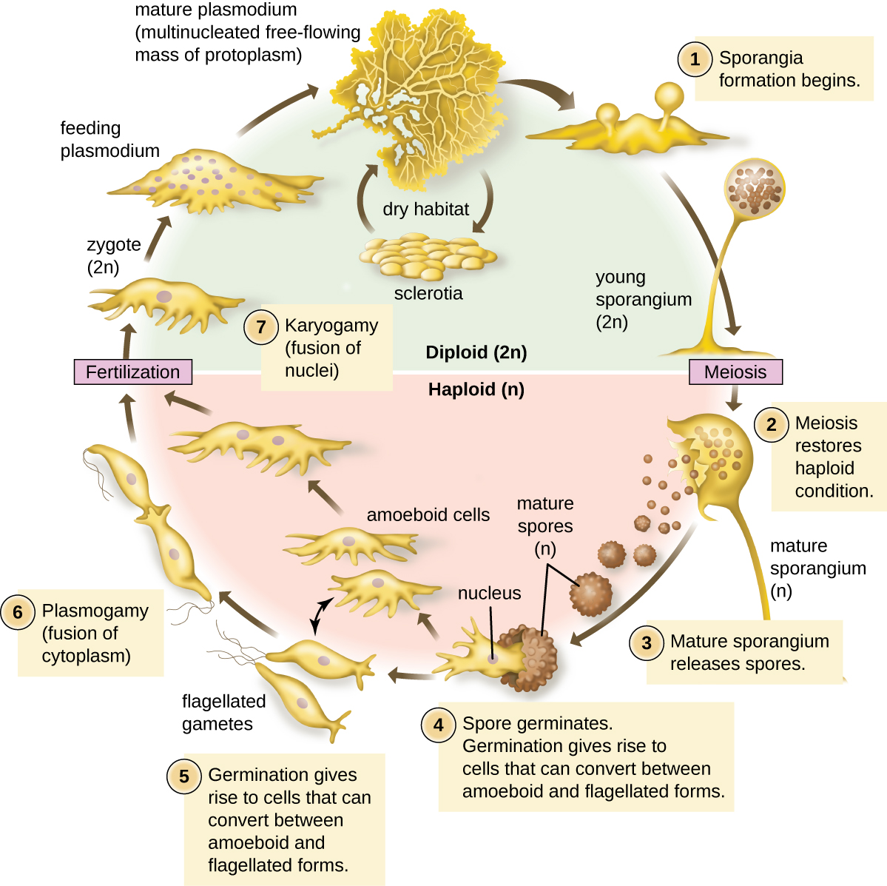
Antiprotozoals
Protozoa are eukaryotes too, so once again the safety margin is narrow and the drugs are chosen around the parasite's life stage rather than just its name. Malaria is the clearest example. Artemisinin-based combination therapy (artemether-lumefantrine) is first-line for uncomplicated P. falciparum and should be taken with fatty food, which dramatically improves absorption. Atovaquone-proguanil and doxycycline serve for prophylaxis; chloroquine still works where resistance is absent, and long-term use risks irreversible retinopathy. The critical piece is the dormant liver form, the hypnozoite, of P. vivax and P. ovale: treating the blood stage alone leaves it in place and the patient relapses months later. Clearing it requires primaquine or tafenoquine — and both cause severe hemolysis in G6PD deficiency, so screen G6PD before the dose, without exception.
Beyond malaria, metronidazole or tinidazole covers giardiasis, amebiasis, and trichomoniasis. For trichomoniasis, treat the partner too or the patient simply gets it back — and reinforce the alcohol warning, since these are the drugs behind the disulfiram-like reaction. Nitazoxanide covers Giardia and Cryptosporidium. TMP-SMX remains the drug of choice for Pneumocystis pneumonia (an organism reclassified as a fungus but still taught alongside this group), with pentamidine as an alternative that can cause severe hypoglycemia followed by hyperglycemia.
Anthelmintics
Worms are animals, and the drugs against them are mostly aimed at neuromuscular or cytoskeletal machinery the worm depends on. Albendazole and mebendazole block the worm's microtubule assembly, starving it; albendazole is absorbed far better with a fatty meal. Ivermectin opens glutamate-gated chloride channels, paralyzing the parasite — mammals have no such channels at all, and the blood-brain barrier keeps the drug away from the similar channels in the human CNS — it treats strongyloidiasis, onchocerciasis, and scabies. Praziquantel makes the tegument of flukes and tapeworms leak calcium, causing paralysis; take with food and warn about dizziness. Pyrantel pamoate is the over-the-counter pinworm option.
The teaching matters as much as the drug. Pinworm is a household diagnosis: treat all household members, repeat the dose in two weeks to catch newly hatched eggs, wash bed linens and underwear in hot water, cut and scrub fingernails, and collect the diagnostic tape test first thing in the morning before bathing. That set of instructions prevents more reinfection than any second prescription.
Nursing care that applies to every antimicrobial
Strip away the class differences and the same nursing spine holds up all of it. Before: take a real allergy history, get the culture, check renal and hepatic function against the drug and the dose, review interactions, and confirm pregnancy status where it matters. During: give doses on schedule and evenly spaced around the clock so blood levels stay above the MIC — a "late" antibiotic is not a trivial late medication. Stay with the patient for the first dose of anything new. Draw troughs immediately before the next dose and peaks at the specified interval after it, and chart the exact times, because a level drawn at the wrong moment is worse than no level at all: it will be acted upon. After: watch for the response you expect (fever curve, white count, the wound), for the toxicity you were warned about (creatinine, CBC, LFTs, hearing, tendons, QT), and for the superinfection you invited — new diarrhea, white patches in the mouth, vaginal itching.
| Nursing action | Why | Watch for |
|---|---|---|
| Real allergy history | "Rash" vs. "throat closed" are different drugs and different risks | Mislabeled penicillin allergy pushing the patient to broader, more toxic therapy |
| Cultures before first dose | One dose can sterilize the specimen and cost the organism's name | In sepsis: draw fast, but antibiotics still go in within the hour |
| Check creatinine and LFTs | Most antimicrobials are renally cleared or hepatically metabolized | Rising creatinine on vancomycin, gentamicin, amphotericin B, colistin |
| Even, around-the-clock dosing | Keeps concentration above the MIC between doses | Clustered or missed doses — a real cause of treatment failure |
| Correct level timing | Trough immediately before the next dose; peak at the specified time after | Mis-timed levels lead to wrong dose changes — chart exact draw times |
| Stay for the first dose | Anaphylaxis usually shows itself within 30 min | Flushing, itching, wheeze, throat tightness, drop in BP |
| Assess for superinfection | Antibiotics destroy the protective normal flora | New diarrhea (C. diff), oral white plaques, vaginal itching |
| Teach the course | Adherence prevents relapse and resistance | Stopping early when they feel better; saving or sharing leftovers |
| Teach the specific warning | Every class has one that changes daily life | Sun (doxycycline, TMP-SMX), alcohol (metronidazole), orange fluids (rifampin), tendon pain (fluoroquinolones) |
- Antimalarials are chosen by life stage; hypnozoite clearance needs primaquine/tafenoquine — screen G6PD first.
- Metronidazole covers giardiasis, amebiasis, trichomoniasis — treat the partner, no alcohol.
- Albendazole/mebendazole (microtubules), ivermectin (chloride channels), praziquantel (calcium influx); pinworm needs household treatment plus a repeat dose in two weeks.
- Universal nursing spine: allergy history, culture first, organ function, on-time evenly spaced dosing, correct level timing, watch for toxicity and superinfection, teach the course.
The chapter in one breath
- Selective toxicity makes antimicrobials possible; where microbe and host overlap, toxicity appears — which is why antifungals and antivirals are rougher than antibacterials.
- Narrow-spectrum is the goal, broad-spectrum is a temporary guess; bactericidal drugs are required when the immune system cannot help.
- C&S names the organism and reports the MIC; empiric therapy bridges the wait and must then be de-escalated.
- Antibacterials sort by mechanism: cell wall (beta-lactams, vancomycin), protein synthesis (30S: aminoglycosides, tetracyclines; 50S: macrolides, clindamycin, linezolid), nucleic acid (fluoroquinolones, rifampin, metronidazole), metabolic (TMP-SMX).
- Antibiotics select for resistance; enzymes, target modification, efflux, and reduced permeability produce MRSA, VRE, ESBL, and CRE.
- Stewardship is nursing work: cultures first, honest allergy history, day-3 review, IV-to-PO, right duration, teaching, and hand hygiene.
- Antifungals target ergosterol and beta-glucan; antivirals target viral-only enzymes, suppress rather than cure, and only help if started early.
- Across every antimicrobial, the nurse monitors organ function and levels, times doses evenly, watches for superinfection, and teaches the one warning that class carries.
ReferenceWords worth knowing
The vocabulary of antimicrobial therapy — skim it now, then come back whenever a term on a culture report or a drug label stops you.
- Aminoglycoside
- A bactericidal class (gentamicin, tobramycin, amikacin) that binds the 30S ribosomal subunit; nephrotoxic and ototoxic, requiring peak and trough monitoring.
- Anthelmintic
- A drug that kills or expels parasitic worms, e.g., albendazole, ivermectin, praziquantel.
- Antimicrobial stewardship
- The coordinated effort to use antimicrobials only when indicated, and then in the right drug, dose, route, and duration.
- Bactericidal
- Kills bacteria outright; required when host defenses are unavailable (endocarditis, meningitis, neutropenia).
- Bacteriostatic
- Inhibits bacterial replication and relies on the immune system to clear the organism.
- Beta-lactam
- Any drug built around the beta-lactam ring — penicillins, cephalosporins, carbapenems, and the monobactam aztreonam — that blocks cell wall cross-linking.
- Beta-lactamase
- A bacterial enzyme that inactivates beta-lactam drugs by opening the ring; extended-spectrum forms (ESBLs) inactivate a much wider range.
- Broad-spectrum
- Active against a wide range of organisms; useful empirically but destroys normal flora and drives resistance.
- Culture and sensitivity (C&S)
- A laboratory test that identifies the organism and reports which drugs inhibit it, with susceptible/intermediate/resistant interpretations.
- De-escalation
- Narrowing therapy from an empiric broad-spectrum drug to a targeted one once the culture and sensitivity result returns.
- Empiric therapy
- Treatment started before results are available, based on the likely organisms for that site and patient.
- Ergosterol
- The sterol in fungal cell membranes (humans use cholesterol); the target of polyenes and the azoles' synthesis pathway.
- Methicillin-resistant Staphylococcus aureus (MRSA)
- S. aureus carrying mecA, which builds an altered penicillin-binding protein (PBP2a) so that every beta-lactam fails at once.
- Minimum inhibitory concentration (MIC)
- The lowest drug concentration that prevents visible growth of an organism in vitro.
- Narrow-spectrum
- Active against a limited range of organisms; the goal once the pathogen is identified.
- Nephrotoxicity
- Drug-induced kidney injury; a signature risk of vancomycin, aminoglycosides, amphotericin B, and colistin.
- Ototoxicity
- Drug-induced damage to hearing or balance, classically from aminoglycosides; may be permanent, so report tinnitus or vertigo at once.
- Peak and trough
- Serum drug levels drawn at the expected maximum (peak) and immediately before the next dose (trough) to keep therapy effective and non-toxic.
- Prophylaxis
- Giving an antimicrobial to prevent infection rather than treat it, e.g., cefazolin within 60 minutes before surgical incision.
- Selective toxicity
- Harming the microbe while sparing the patient by attacking a structure the microbe has and human cells lack.
- Superinfection
- A new infection that appears during antimicrobial therapy because the protective normal flora were destroyed, e.g., C. difficile colitis or thrush.
- Vancomycin-resistant Enterococcus (VRE)
- Enterococcus that has altered the D-alanine binding site vancomycin depends on; usually treated with linezolid or daptomycin.
Check yourself
Immunomodulators & Antineoplastic Agents
Most drugs help a patient by turning a body system up or down a little. The drugs in this chapter do something far more consequential: they rewrite the terms on which the immune system operates, or they poison cell division itself. That power is exactly why they work — a transplanted kidney survives, a lupus flare quiets, a lymphoma melts away — and exactly why they hurt. An immunosuppressed patient cannot mount a fever the way you expect. A chemotherapy patient loses the lining of the gut and the blood-forming marrow along with the tumor. This chapter walks you through the drugs that quiet immunity, the drugs that wake it up, and the drugs that kill dividing cells — and, at every step, what the nurse watches, teaches, and refuses to let slide.
By the end of this chapter you can
- Name the major immunosuppressant classes, their prototypes, and their signature adverse effects.
- Explain why infection is the defining risk of immunosuppression and how that changes your assessment.
- Distinguish immunostimulants, biologics, and the main vaccine types, and state who must not receive a live vaccine.
- Describe the cell cycle and contrast cell-cycle–specific with cell-cycle–nonspecific antineoplastics.
- Explain why chemotherapy damages normal rapidly dividing tissues, and predict which ones.
- Identify the five chemotherapy classes with their prototypes and class-defining toxicities.
- Manage myelosuppression, nausea and vomiting, mucositis, alopecia, and extravasation at the bedside.
- Apply hazardous drug handling precautions to protect yourself, the patient, and the family.
Section 1Immunosuppressants
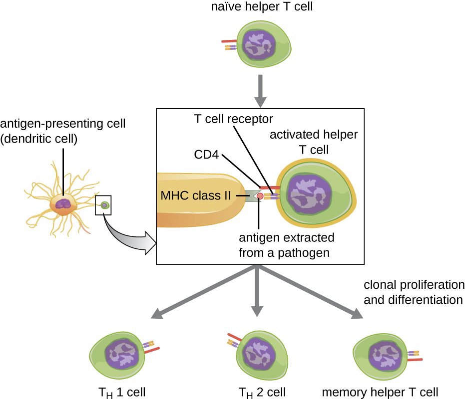
Why we deliberately weaken a defense system
The immune system is superb at one job: telling self from not-self and destroying the not-self. That instinct becomes a problem in exactly two situations. In transplantation, the donated organ is not-self, and an untreated immune system will reject it within days. In autoimmune disease — rheumatoid arthritis, lupus, Crohn disease, multiple sclerosis, psoriasis — the system has misfiled the patient's own tissue as foreign and is attacking it. In both cases we give drugs to turn the response down. There is no free lunch here: every bit of immunity we take away is immunity that was also guarding against bacteria, viruses, fungi, and cancer cells.
Transplant regimens are usually built in two stages. Induction therapy is heavy and brief, given around the time of surgery — basiliximab (an interleukin-2 receptor antagonist) or antithymocyte globulin. Maintenance therapy is lifelong and usually combines three drugs from different classes at lower doses each: a calcineurin inhibitor, an antiproliferative, and a corticosteroid. Using three mechanisms at modest doses beats using one at a huge dose, because the toxicities do not stack in the same organ.
The classes worth knowing cold
Calcineurin inhibitors — cyclosporine and tacrolimus — are the backbone of transplant care. They block the calcineurin signal that a T cell needs to make interleukin-2, so the T cell never proliferates. Both have a narrow therapeutic index: too little and the graft rejects, too much and the kidneys fail. Trough levels are drawn immediately before the next dose, and the whole regimen lives or dies on the patient taking it at the same times every day. Both are metabolized by CYP3A4, which is why grapefruit juice, azole antifungals, and clarithromycin raise levels dangerously, while rifampin, phenytoin, and St. John's wort drop them toward rejection.
Antiproliferatives starve lymphocytes of the DNA building blocks they need to divide. Mycophenolate is the modern standard; azathioprine is older and carries one of the most famous interactions in pharmacology — giving allopurinol alongside it blocks xanthine oxidase, the enzyme that clears azathioprine's active metabolite, so drug levels climb and can cause catastrophic marrow failure. mTOR inhibitors (sirolimus, everolimus) spare the kidney but impair wound healing, so they are typically held in the immediate post-op period. Corticosteroids blunt nearly every arm of inflammation and are effective, cheap, and toxic in a dozen directions; they are tapered, never stopped abruptly, because chronic use suppresses the adrenal axis.
On the autoimmune side, low-dose methotrexate is the anchor drug for rheumatoid arthritis, and here is the fact that saves lives: it is dosed once weekly, not daily. Daily dosing of a weekly methotrexate order has killed patients. Folic acid is given on the other days to reduce mucositis and marrow toxicity. Biologic DMARDs — the TNF inhibitors etanercept, adalimumab, and infliximab — are extraordinarily effective and require latent tuberculosis screening before the first dose, because knocking out TNF lets walled-off TB break loose.
| Class | Prototype | Key effect | Nursing alert |
|---|---|---|---|
| Calcineurin inhibitor | Tacrolimus; cyclosporine | Blocks IL-2 production → T cells cannot proliferate | Narrow TI — trough levels before the dose; nephrotoxicity, hypertension, tremor, hyperkalemia; hyperglycemia (tacrolimus); gum overgrowth and hirsutism (cyclosporine); no grapefruit juice |
| Antiproliferative | Mycophenolate; azathioprine | Blocks purine synthesis → lymphocytes cannot divide | GI upset, leukopenia; mycophenolate is teratogenic (pregnancy prevention required); azathioprine + allopurinol = marrow failure |
| mTOR inhibitor | Sirolimus; everolimus | Blocks the growth signal downstream of IL-2 | Impaired wound healing, hyperlipidemia, mouth ulcers, pneumonitis; kidney-sparing |
| Corticosteroid | Prednisone; methylprednisolone | Broad anti-inflammatory and lymphocyte suppression | Hyperglycemia, osteoporosis, mood change, masks fever and infection; taper — never stop abruptly |
| Biologic (induction) | Basiliximab; antithymocyte globulin | Targets IL-2 receptor or depletes T cells at transplant | Infusion reactions; premedicate; monitor closely during and after the infusion |
| Antimetabolite DMARD | Methotrexate | Folate antagonist; anti-inflammatory at low dose | WEEKLY dosing — a daily order is a lethal error; give folic acid; monitor CBC, LFTs, creatinine; teratogenic |
| TNF inhibitor | Adalimumab; etanercept; infliximab | Neutralizes tumor necrosis factor | Screen for latent TB and hepatitis B before the first dose; serious infection and lymphoma risk; hold during active infection |
| JAK inhibitor | Tofacitinib; baricitinib | Blocks intracellular cytokine signaling (oral) | Boxed warning: serious infection, thrombosis, cardiovascular events, malignancy; monitor CBC and lipids |
Infection is the whole risk
An immunosuppressed patient does not present the way your textbook patient presents. Steroids blunt fever. Neutropenia removes the cells that make pus, so a wound infection may show no drainage and pneumonia may show a nearly clear chest film. The classic signs of inflammation are, in part, the immune system working — and you have turned it off. This means the threshold for concern drops through the floor: a low-grade temperature, a new cough, a sore throat, a small area of redness, or simply "I don't feel right" all get taken seriously and reported.
Prophylaxis is standard rather than optional in this population — typically trimethoprim–sulfamethoxazole against Pneumocystis jirovecii, an antiviral against cytomegalovirus, and an antifungal in high-risk patients. Live vaccines are contraindicated in significant immunosuppression, and they should be brought up to date before transplant or before starting a biologic. Long-term, these patients also carry a real excess risk of malignancy — skin cancer above all — so sunscreen, protective clothing, and annual skin checks are legitimate nursing teaching, not filler.
- Transplant regimens layer three classes at lower doses — calcineurin inhibitor, antiproliferative, corticosteroid — so toxicities do not stack.
- Calcineurin inhibitors have a narrow therapeutic index: trough levels, nephrotoxicity, CYP3A4 interactions, no grapefruit.
- Methotrexate is weekly; azathioprine plus allopurinol causes marrow failure; TNF inhibitors require TB screening first.
- Immunosuppressed patients hide infection — blunted fever, no pus — and must not receive live vaccines.
Section 2Immunostimulants and vaccines
Drugs that wake the immune system up
If immunosuppressants turn the dial down, immunostimulants turn it up — either by rebuilding cells the immune system has lost, or by releasing a brake that a tumor has been exploiting. The most common ones you will hang are the colony-stimulating factors. Filgrastim and its long-acting cousin pegfilgrastim are manufactured versions of G-CSF; they tell the marrow to pump out neutrophils and are given after chemotherapy to shorten the window of dangerous neutropenia. The classic side effect is deep, aching bone pain — the marrow is literally working overtime — and it is usually managed with acetaminophen or an NSAID rather than by stopping the drug. Timing matters: these are given at least twenty-four hours after chemotherapy, never alongside it, because you do not want to hand freshly stimulated dividing marrow cells to a drug that kills dividing cells.
Erythropoiesis-stimulating agents (epoetin alfa, darbepoetin) raise hemoglobin but carry a boxed warning: pushed too high, they shorten survival in some cancers and cause thrombosis and stroke. They are used at the lowest dose that avoids transfusion, not to make the number look pretty. Interferons (interferon alfa-2b; interferon beta for multiple sclerosis) reliably produce flu-like symptoms — fever, chills, myalgia — and can cause depression severe enough to require screening. Interleukin-2 (aldesleukin) is powerful and dangerous, with capillary leak syndrome as its defining toxicity.
The most important recent class is the immune checkpoint inhibitors — pembrolizumab and nivolumab (anti–PD-1), atezolizumab (anti–PD-L1), and ipilimumab (anti–CTLA-4). Tumors survive partly by pressing the immune system's own "stand down" buttons; these drugs cut that wire. The result is a reawakened immune system that sometimes attacks the patient too, producing immune-related adverse events: colitis, pneumonitis, hepatitis, thyroiditis, dermatitis, hypophysitis. Any new diarrhea, cough, or shortness of breath in a patient on a checkpoint inhibitor is reported — these are treated with corticosteroids, and delay does real harm.
A quick decoder for biologic names, because it genuinely helps: -mab means monoclonal antibody, -cept means a receptor fusion protein, -nib means a small-molecule kinase inhibitor, and -kin or -grastim flags a cytokine or growth factor.
Vaccines: borrowing the memory without the disease
A vaccine is the most cost-effective drug there is. It shows the adaptive immune system a harmless preview of a pathogen so that memory B and T cells are already standing by when the real thing arrives — active immunity, slow to build but long-lasting. Contrast that with passive immunity, where we simply inject someone else's ready-made antibodies: immune globulin, Rho(D) immune globulin, rabies or tetanus immune globulin. Passive protection works within minutes and fades within weeks, because the patient made no memory of their own. Use active for prevention, passive for a threat that is already here.
| Vaccine type | Prototype | Key effect | Nursing alert |
|---|---|---|---|
| Live attenuated | MMR; varicella; rotavirus; intranasal influenza; yellow fever | Weakened but replicating organism — strongest, longest immunity | Contraindicated in pregnancy and significant immunosuppression; give before transplant or biologics, not during |
| Inactivated (killed) | Hepatitis A; injectable polio (IPV); rabies | Whole organism, killed — cannot replicate | Safe in immunosuppression; often needs boosters |
| Subunit / recombinant | Hepatitis B; HPV; recombinant zoster (Shingrix) | Only the pieces that matter, made in the lab | Safe in immunosuppression; recombinant zoster is notably reactogenic — warn about arm soreness and a day of feeling rough |
| Toxoid | Tetanus; diphtheria (Td, Tdap) | Inactivated toxin — immunity to the poison, not the bug | Booster every 10 years; Tdap in every pregnancy (27–36 weeks) to protect the newborn |
| Conjugate | Hib; pneumococcal (PCV); meningococcal | Sugar coat linked to a protein so infant immune systems respond | Essential for the very young and the asplenic |
| mRNA / viral vector | COVID-19 vaccines | Delivers the instructions; the patient's cells make the antigen | Not a live vaccine and does not alter DNA — a common patient question worth answering plainly |
| Passive (not a vaccine) | Immune globulin; Rho(D) immune globulin | Borrowed antibodies — immediate, temporary | Works within minutes, no memory made; used after exposure or for Rh-negative mothers |
Vaccine administration is a nursing skill with a few non-negotiables. Give the Vaccine Information Statement before the injection and document that you did. Have epinephrine immediately available and observe for at least fifteen minutes afterward, longer if there is any history of reaction. Document lot number, expiration, site, and route — this is one of the few places where charting is itself a public health function. Teach that soreness, a low-grade temperature, and fatigue for a day mean the vaccine is working, and treat them with acetaminophen; do not give aspirin to a child. And know the real contraindications from the false ones: a serious allergy to a vaccine component or a previous anaphylactic reaction is a genuine contraindication; a mild cold, a runny nose, breastfeeding, or a family history of reactions is not.
- Filgrastim/pegfilgrastim rebuild neutrophils after chemo — expect bone pain, and never give within 24 hours of chemotherapy.
- Checkpoint inhibitors (pembrolizumab, nivolumab, ipilimumab) release the immune brake; new diarrhea or dyspnea means an immune-related adverse event until proven otherwise.
- Live vaccines (MMR, varicella, rotavirus, LAIV, yellow fever) are contraindicated in pregnancy and immunosuppression.
- Active immunity (vaccines) is slow and lasting; passive immunity (immune globulin) is immediate and temporary.
Section 3Antineoplastic principles
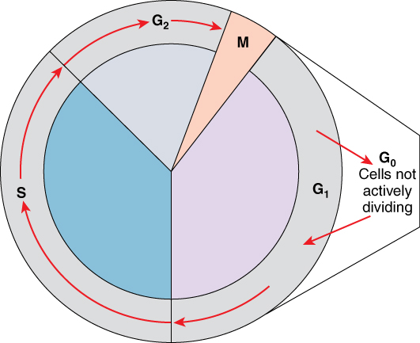
The cell cycle, and why it is the target
Cancer is, at bottom, a disease of division that will not stop. So the oldest and still most widely used strategy against it is to attack division itself. To understand where each drug lands, you need the cycle. G1 is growth: the cell enlarges and manufactures the enzymes it will need. S is synthesis: DNA is copied, and the cell is at its most chemically vulnerable here. G2 is the second growth phase, building the spindle apparatus and proofreading the new DNA. M is mitosis, when the chromosomes are pulled apart and the cell splits in two. And G0 is the resting state — the cell is alive and working but not dividing. G0 is the hiding place. Cell-cycle–specific drugs cannot touch a cell in G0 at all, and even the nonspecific ones work on it poorly — a resting cell is not copying DNA and has time to repair the damage it does take. That sanctuary is a large part of why cancers relapse years later.
That geography splits antineoplastics into two groups. Cell-cycle–specific (CCS) drugs only work on a cell that is in a particular phase: antimetabolites act in S, mitotic inhibitors act in M, bleomycin acts in G2. Because they need to catch the cell in the act, they work best against fast-growing tumors and are often given as a continuous infusion or in divided doses to widen the window. Cell-cycle–nonspecific (CCNS) drugs — alkylating agents, antitumor antibiotics, platinum compounds — damage DNA whenever they find it, including in G0. They are typically given as a single large bolus, because the damage is dose-dependent rather than timing-dependent.
Log kill, growth fraction, and why chemo comes in cycles
Here is the idea that explains the entire structure of a chemotherapy regimen: a given dose of a drug kills a constant percentage of tumor cells, not a constant number. This is the log kill hypothesis, sometimes called fractional kill. If a dose kills 99.9 percent of a billion cancer cells, a million are still alive. The next cycle kills 99.9 percent of the million, leaving a thousand. You can see immediately why one round is never enough, why the schedule is a schedule and not a suggestion, and why a patient who feels wonderful after two cycles still needs the other four.
The gaps between cycles are equally deliberate. Normal marrow recovers from chemotherapy faster than tumor does, so a rest period of two to three weeks lets the patient's blood counts climb back while the tumor gets comparatively less benefit. Combination chemotherapy follows the same logic from a different angle: drugs are chosen with different mechanisms, different resistance patterns, and — crucially — non-overlapping toxicities, so that no single organ takes the whole hit. Dosing is calculated by body surface area in mg/m2 rather than by weight, and carboplatin is dosed by target AUC using the patient's renal function. Small errors in these calculations are not small; this is why chemotherapy orders require an independent double-check by a second qualified clinician.
Why chemotherapy hurts the patient too
Traditional chemotherapy cannot tell a cancer cell from a healthy cell. It can only tell a dividing cell from a resting one. That is the entire tragedy of the drug class in one sentence — and it lets you predict every major side effect before you ever open the drug book. Ask yourself which normal tissues in the body divide fast, and you have your answer.
| Fast-dividing normal tissue | What chemo does to it | What the patient and nurse see |
|---|---|---|
| Bone marrow | Halts production of neutrophils, platelets, RBCs | Myelosuppression — infection risk, bleeding, fatigue; the dose-limiting toxicity of most regimens |
| GI mucosa (mouth to anus) | Lining is not replaced as it sloughs | Mucositis, stomatitis, esophagitis, diarrhea, nausea |
| Hair follicles | Matrix cells stop dividing; the shaft breaks | Alopecia — scalp, brows, lashes, body; temporary |
| Gonadal germ cells | Sperm and oocyte production impaired | Infertility, sometimes permanent — discuss banking before treatment starts |
| Skin and nails | Basal layer and nail matrix disrupted | Rash, photosensitivity, ridged or darkened nails, hand–foot syndrome |
| Fetal cells | Everything is dividing | Teratogenicity — pregnancy must be excluded; effective contraception is required |
Two more principles round out the picture. Growth fraction — the proportion of a tumor's cells actively cycling — predicts responsiveness: leukemias and lymphomas with high growth fractions melt away, while slow, bulky solid tumors respond far less. And drug resistance develops, most notoriously through multidrug resistance proteins such as P-glycoprotein, which sit in the cell membrane and pump the drug straight back out. Resistance is another reason we combine drugs and another reason we do not stretch out the schedule.
- The cycle is G1 → S → G2 → M, with G0 as the resting phase that cell-cycle–specific drugs cannot reach at all and nonspecific drugs reach poorly — the source of relapse.
- CCS drugs hit one phase (antimetabolites in S, mitotic inhibitors in M); CCNS drugs damage DNA in any phase, including G0.
- The log kill hypothesis — each dose kills a percentage, not a number — is why treatment comes in repeated cycles and why finishing the regimen matters.
- Chemo cannot distinguish cancer from healthy; it distinguishes dividing from resting, which is why marrow, gut, hair, and gonads suffer.
Section 4Chemotherapy classes
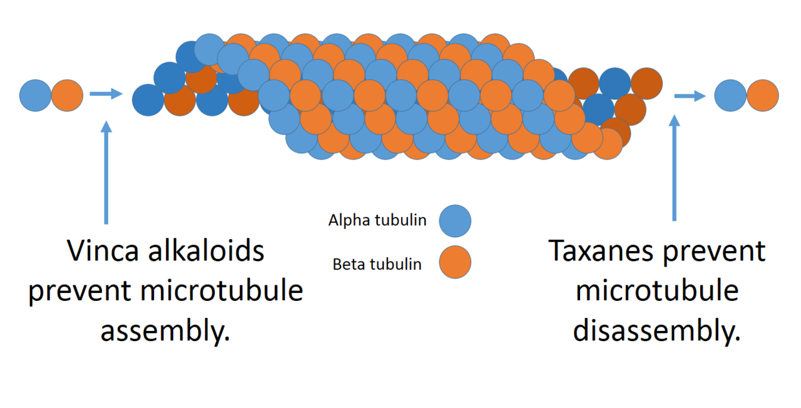
Damaging the DNA: alkylating agents and antitumor antibiotics
Alkylating agents are the oldest class — descendants of the sulfur mustard gas of the First World War, whose habit of destroying the bone marrow of exposed soldiers was the clue that led to the nitrogen mustards being tried against lymphoma in the 1940s. They attach an alkyl group to DNA, cross-linking the strands so the double helix can no longer unzip and copy itself. They are cell-cycle–nonspecific and broadly effective, and each subgroup carries a signature toxicity. Cyclophosphamide breaks down into acrolein, which sits in the bladder and burns it — hemorrhagic cystitis, prevented with aggressive hydration, frequent voiding, and the rescue agent mesna. Ifosfamide does the same and adds neurotoxicity. The nitrosoureas such as carmustine cross the blood–brain barrier (useful for brain tumors) and cause a notoriously delayed myelosuppression that nadirs four to six weeks out. The platinum compounds are grouped here by behavior: cisplatin is nephrotoxic, ototoxic, and one of the most emetogenic drugs in medicine; carboplatin trades that for marrow suppression; oxaliplatin produces a strange cold-triggered neuropathy — patients must be taught not to drink cold liquids or touch cold metal for days after a dose.
Antitumor antibiotics come from soil bacteria and intercalate into DNA, generating free radicals that shred it. The anthracyclines — doxorubicin, daunorubicin, epirubicin — are among the most useful drugs in oncology and among the most feared, because their cardiotoxicity is cumulative and largely irreversible. A lifetime dose ceiling (roughly 550 mg/m2 for doxorubicin) is tracked across the patient's entire history, a baseline ejection fraction is measured by echocardiogram or MUGA, and dexrazoxane may be given as a cardioprotectant. Doxorubicin is also a potent vesicant and turns urine red-orange for a day or two — harmless, but terrifying if nobody warned the patient. Bleomycin is the exception that proves the rule: it causes almost no myelosuppression, and instead causes pulmonary fibrosis, with its own cumulative lifetime limit and a baseline pulmonary function test.
Starving and stalling: antimetabolites and mitotic inhibitors
Antimetabolites are molecular impostors. They look enough like the natural building blocks of DNA that the cell picks them up and jams its own machinery — so they act in the S phase and are strongly cell-cycle–specific. Methotrexate blocks dihydrofolate reductase and starves the cell of folate; high-dose regimens are followed by leucovorin rescue, which restores folate to normal cells. Never give NSAIDs or salicylates with high-dose methotrexate — they delay its clearance and can cause fatal toxicity. 5-fluorouracil and its oral prodrug capecitabine cause mucositis, diarrhea, and the palms-and-soles redness of hand–foot syndrome. Cytarabine adds a distinctive cerebellar toxicity and a chemical conjunctivitis prevented with corticosteroid eye drops.
Mitotic inhibitors attack the spindle in the M phase, and they do it from opposite directions. The vinca alkaloids (vincristine, vinblastine) prevent microtubules from assembling; the taxanes (paclitaxel, docetaxel) do the reverse, freezing microtubules so they cannot disassemble. Either way, mitosis stops. Vincristine's dose-limiting problem is peripheral neuropathy — numb fingertips, foot drop, and an autonomic constipation that can progress to ileus, which is why a bowel regimen goes out with the drug. And vincristine carries the most absolute rule in oncology nursing: it is labeled "For intravenous use only — fatal if given by other routes," because intrathecal administration causes ascending paralysis and death. Taxanes cause hypersensitivity reactions from their solvent, so patients are premedicated with a corticosteroid, an antihistamine, and an H2 blocker, and paclitaxel is infused through non-PVC tubing with an in-line filter.
Aiming instead of carpet-bombing: targeted and hormonal therapy
Everything above kills dividing cells indiscriminately. Targeted therapy asks a better question: what is broken in this tumor specifically? Imatinib shuts down the BCR-ABL kinase that drives chronic myeloid leukemia and turned a fatal disease into a manageable one. Trastuzumab targets HER2-positive breast cancer and causes cardiotoxicity that is, unlike doxorubicin's, usually reversible — but the two together are a bad combination. Rituximab targets CD20 on B cells and can reactivate hepatitis B, so screening comes first. Bevacizumab starves tumors of blood supply by blocking VEGF, at the cost of hypertension, bleeding, impaired wound healing, and rare GI perforation. Targeted drugs are gentler on the marrow but not gentle — they simply trade one toxicity profile for another. Hormonal agents work the same logic on hormone-driven tumors: tamoxifen blocks estrogen at the breast (and raises the risk of endometrial cancer and clots), the aromatase inhibitors anastrozole and letrozole cut estrogen production in postmenopausal women (at the cost of joint pain and bone loss), and leuprolide suppresses testosterone in prostate cancer after an initial tumor flare.
| Class | Prototype | Key effect | Nursing alert |
|---|---|---|---|
| Alkylating agent | Cyclophosphamide | Cross-links DNA (CCNS) | Hemorrhagic cystitis — hydrate aggressively, void often, give mesna; report pink or red urine |
| Platinum compound | Cisplatin; carboplatin; oxaliplatin | Cross-links DNA (CCNS) | Cisplatin: nephro- and ototoxic, highly emetogenic — pre-hydrate, monitor creatinine and hearing; oxaliplatin: avoid all cold — drinks, air, metal |
| Antimetabolite | Methotrexate; 5-fluorouracil; cytarabine | Fake nucleotides jam DNA synthesis (S phase) | Leucovorin rescue after high-dose methotrexate; no NSAIDs/salicylates with it; mucositis and hand–foot syndrome; assess the mouth daily |
| Antitumor antibiotic | Doxorubicin | Intercalates DNA, generates free radicals (CCNS) | Cumulative irreversible cardiotoxicity — track lifetime dose, baseline echo/MUGA; potent vesicant; red-orange urine is harmless — warn the patient |
| Antitumor antibiotic | Bleomycin | DNA strand breaks (G2) | Pulmonary fibrosis with a lifetime dose limit; baseline PFTs; report any new cough or dyspnea; minimal myelosuppression |
| Vinca alkaloid | Vincristine | Blocks microtubule assembly (M phase) | FATAL IF GIVEN INTRATHECALLY — IV use only; peripheral neuropathy and constipation/ileus — start a bowel regimen; vesicant |
| Taxane | Paclitaxel; docetaxel | Freezes microtubules so mitosis cannot finish (M phase) | Hypersensitivity — premedicate with steroid, antihistamine, H2 blocker; non-PVC tubing with in-line filter; neuropathy |
| Topoisomerase inhibitor | Etoposide; irinotecan | Prevents DNA from re-sealing after unwinding | Irinotecan: early cholinergic diarrhea (atropine) vs late diarrhea (high-dose loperamide) — treat them differently |
| Targeted — kinase inhibitor | Imatinib; erlotinib | Blocks the specific driver signal in the tumor | Oral — adherence is the whole game; fluid retention, acneiform rash; many CYP3A4 interactions |
| Targeted — monoclonal antibody | Trastuzumab; rituximab; bevacizumab | Binds a surface marker or growth factor | Trastuzumab: cardiotoxicity (usually reversible) — monitor LVEF; rituximab: screen hepatitis B, infusion reactions; bevacizumab: hypertension, bleeding, poor wound healing |
| Hormonal | Tamoxifen; anastrozole; leuprolide | Removes the hormone signal a tumor depends on | Tamoxifen: VTE and endometrial cancer — report leg pain or vaginal bleeding; aromatase inhibitors: bone loss and arthralgia; leuprolide: expect an initial tumor flare |
- Alkylating agents and antitumor antibiotics damage DNA in any phase (CCNS); antimetabolites (S) and mitotic inhibitors (M) are phase-specific (CCS).
- Signature toxicities: cyclophosphamide → hemorrhagic cystitis (mesna); doxorubicin → cardiotoxicity; bleomycin → pulmonary fibrosis; vincristine → neuropathy and death if intrathecal; cisplatin → nephro/ototoxicity.
- Taxanes require premedication for hypersensitivity; irinotecan has two different diarrheas with two different treatments.
- Targeted and hormonal agents spare the marrow but bring their own risks — cardiac, hepatitis B reactivation, bleeding, clots, bone loss.
Section 5Chemotherapy toxicities and nursing care
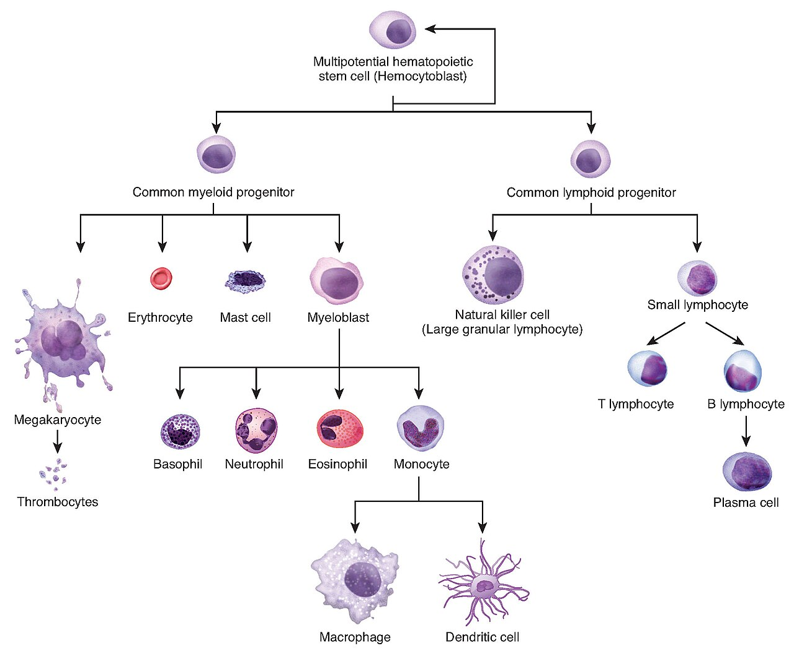
Myelosuppression: the toxicity that limits the dose
For most regimens, the marrow decides how much drug a patient can have. Counts fall after each cycle, hit bottom — the nadir — usually seven to fourteen days later, and recover over the following two to three weeks. The three cell lines fail on their own schedule, and each produces its own emergency.
Neutropenia is the deadliest. The absolute neutrophil count, not the white count, is what matters: an ANC below 1,000/mm3 is serious and below 500/mm3 is severe. Febrile neutropenia is an oncologic emergency — a single oral temperature of 38.3°C (101°F), or 38.0°C (100.4°F) sustained for an hour, in a neutropenic patient means blood cultures now and broad-spectrum antibiotics within one hour. Not after rounds. Not after the culture results. Within the hour, because there are no neutrophils to hold the line and a patient can go from a low fever to septic shock in a few hours. Teach the patient that fever at home means calling immediately and going to the emergency department, not waiting until morning.
Neutropenic precautions are largely about removing sources of organisms and removing breaks in the skin: meticulous hand hygiene by everyone, no fresh flowers or standing water, no unpasteurized or raw foods, no crowds or sick visitors, and — a favorite of exam writers because it is genuinely important — no rectal temperatures, suppositories, or enemas, since a tear in the rectal mucosa in a neutropenic patient is a direct line to the bloodstream. Thrombocytopenia brings bleeding precautions below roughly 50,000/mm3 and spontaneous bleeding risk below 20,000/mm3: electric razor, soft toothbrush, no aspirin or NSAIDs, no IM injections, no flossing, and fall prevention. Anemia is the least dramatic and the most complained about — profound fatigue, dyspnea on exertion, and a life shrunk down to the couch. Take it seriously; it is what patients remember.
Nausea, mouth, hair, and the things patients actually fear
Chemotherapy-induced nausea and vomiting comes in three flavors and they are managed differently. Acute emesis begins within a few hours. Delayed emesis starts more than twenty-four hours out and is the specialty of cisplatin and cyclophosphamide — patients get home, feel fine, and then are ambushed. Anticipatory nausea is conditioned: the patient vomits in the parking lot before the drug ever hangs, and the answer is a benzodiazepine such as lorazepam plus better control of the first cycle. The single most important principle is that antiemetics are given prophylactically and on a schedule, before the chemotherapy — never PRN, never chasing. Modern regimens combine a 5-HT3 antagonist (ondansetron — watch the QT interval), an NK-1 antagonist (aprepitant), dexamethasone, and often olanzapine.
Mucositis makes eating a misery and is a portal for infection. Assess the mouth every day, and teach a soft toothbrush, saline or sodium bicarbonate rinses several times daily, and no alcohol-based mouthwash — it is like pouring astringent on a burn. Oral cryotherapy (ice chips during a short 5-FU infusion) genuinely helps. Alopecia is not medically dangerous and is often the thing patients grieve most; it typically starts one to three weeks in, involves brows, lashes, and body hair as well as scalp, and it grows back — sometimes a different color or texture. Encourage choosing a wig or head covering before the hair falls, because matching it afterward is harder; scalp cooling reduces loss with some regimens. Teach scalp sun protection and gentle care.
Extravasation and the drugs you never take your eyes off
A vesicant is a drug that causes tissue necrosis if it leaks out of the vein. The anthracyclines, the vinca alkaloids, mechlorethamine, and mitomycin are the classic offenders, and the damage from a leak can go to tendon and bone and end in grafting or amputation. Prevention is the entire strategy: a central line for vesicants whenever possible, a fresh site with confirmed blood return, no site over a joint or in an antecubital fossa, and a nurse who stays and watches rather than starting it and stepping out.
If the patient reports burning or stinging, or you see swelling, redness, resistance to injection, or loss of blood return — stop the infusion immediately. Do not pull the needle out. Disconnect the tubing, attempt to aspirate residual drug through the catheter, notify the provider, mark and photograph the area, and elevate the limb. Then the antidote depends on which drug leaked, and the temperature is part of the antidote: for anthracyclines, apply cold and give dexrazoxane or topical DMSO; for vinca alkaloids, apply warm and give hyaluronidase. Cold for anthracyclines localizes the drug; warm for vincas disperses it. Reversing them makes the injury worse.
| Toxicity | Watch for | Nursing action |
|---|---|---|
| Febrile neutropenia | Temp 38.3°C once or 38.0°C for 1 hr; ANC <500 | Emergency — cultures then broad-spectrum antibiotics within 1 hour; no rectal temps, suppositories, or enemas |
| Thrombocytopenia | Platelets <50,000 (bleeding), <20,000 (spontaneous) | Electric razor, soft brush, no aspirin/NSAIDs, no IM injections, fall precautions |
| Nausea/vomiting | Acute, delayed (>24 hr), or anticipatory | Antiemetics scheduled before chemo; 5-HT3 + NK-1 + dexamethasone; lorazepam for anticipatory |
| Mucositis | Sore mouth, ulcers, dysphagia | Daily oral assessment, soft brush, saline/bicarb rinses; no alcohol-based mouthwash; ice chips with short 5-FU |
| Extravasation | Burning, swelling, no blood return, resistance | Stop, leave the needle in, aspirate, notify; anthracycline → cold + dexrazoxane; vinca → warm + hyaluronidase |
| Tumor lysis syndrome | Rising K+, phosphate, uric acid; falling calcium; AKI | Aggressive hydration, allopurinol or rasburicase, cardiac monitoring — highest risk in bulky, fast-growing tumors early in treatment |
| Infertility | Often permanent, especially alkylating agents | Raise sperm/oocyte banking before the first dose — afterward is too late |
Protecting yourself and the family
Chemotherapy agents are hazardous drugs: they are carcinogenic, mutagenic, or teratogenic to the people who handle them as well as to the patient. Preparation happens in a biological safety cabinet by trained pharmacy staff, never on a unit counter. Administration requires chemotherapy-rated double gloves and a lint-free, back-closing impermeable gown, eye protection when splashing is possible, and closed-system transfer devices. A spill kit stays where the drug is given, and all chemotherapy waste goes in the designated hazardous stream, not the regular sharps box. Nurses who are pregnant, trying to conceive, or breastfeeding should not handle these agents.
The precautions follow the patient home, because the drug leaves in body fluids. For roughly 48 hours after a dose, teach the family to wear gloves when handling urine, stool, vomit, or soiled linens; to close the toilet lid and flush twice; to wash contaminated laundry separately from the household's; and to wash hands thoroughly afterward. Say this out loud rather than handing over a pamphlet, and say why — families who understand the reason follow it, and families who think they are being told their loved one is "toxic" often feel shame instead. Finally, chemotherapy is a high-alert medication class: two qualified clinicians independently verify the order, the drug, the dose against the body surface area calculation, the route, and the patient's cumulative lifetime totals before anything is hung.
- The nadir arrives 7–14 days after a cycle; febrile neutropenia means cultures and antibiotics within one hour, and no rectal temps, suppositories, or enemas.
- Antiemetics are scheduled before chemotherapy, not PRN; delayed emesis (cisplatin) ambushes patients at home and anticipatory emesis responds to lorazepam.
- For extravasation: stop, leave the needle in, aspirate, notify — then cold for anthracyclines and warm for vinca alkaloids.
- Chemotherapy drugs are hazardous and high-alert: double gloves and gown, independent double-check, and body-fluid precautions at home for 48 hours.
The chapter in one breath
- Immunosuppressants keep a graft alive and quiet autoimmune disease by turning down the immune system — and every bit of immunity removed was also guarding against infection and cancer.
- Calcineurin inhibitors need trough levels and avoid grapefruit; methotrexate is weekly; azathioprine plus allopurinol is marrow failure; TNF inhibitors need TB screening first.
- Immunosuppressed patients hide infection — blunted fever, no pus — so any fever is an emergency, and live vaccines are contraindicated.
- Immunostimulants rebuild counts (filgrastim — bone pain) or release the brake (checkpoint inhibitors — immune-related colitis, pneumonitis, thyroiditis).
- Vaccines give slow, lasting active immunity; immune globulin gives immediate, temporary passive immunity; live vaccines are off-limits in pregnancy and immunosuppression.
- Chemotherapy targets the cell cycle; it cannot tell cancer from healthy, only dividing from resting — which predicts myelosuppression, mucositis, alopecia, and infertility.
- The log kill hypothesis — each dose kills a percentage, not a number — explains repeated cycles, rest periods, and combination therapy with non-overlapping toxicities.
- The class signatures: cyclophosphamide → hemorrhagic cystitis (mesna); doxorubicin → cumulative cardiotoxicity; bleomycin → pulmonary fibrosis; vincristine → fatal if intrathecal; cisplatin → nephro/ototoxicity.
- At the bedside: febrile neutropenia = antibiotics within one hour; antiemetics scheduled before the dose; for extravasation stop and leave the needle in, then cold for anthracyclines, warm for vincas; handle every agent as hazardous and high-alert.
ReferenceWords worth knowing
A quick reference for the terms in this chapter — skim it now, or circle back whenever a word trips you up.
- Absolute neutrophil count (ANC)
- The number of infection-fighting neutrophils per mm3; below 1,000 is serious, below 500 is severe neutropenia. The number that drives every precaution.
- Alkylating agent
- A cell-cycle–nonspecific drug that cross-links DNA so it cannot replicate; prototype cyclophosphamide.
- Antimetabolite
- A drug that mimics a normal DNA building block and jams synthesis in the S phase; prototypes methotrexate and 5-fluorouracil.
- Calcineurin inhibitor
- An immunosuppressant that blocks interleukin-2 production so T cells cannot proliferate; tacrolimus, cyclosporine.
- Cell-cycle–nonspecific (CCNS)
- Acts on cells in any phase, including resting G0; alkylating agents, antitumor antibiotics, platinums.
- Cell-cycle–specific (CCS)
- Acts only on cells in a particular phase; antimetabolites (S), mitotic inhibitors (M).
- Checkpoint inhibitor
- A monoclonal antibody that releases the immune system's brakes on a tumor (pembrolizumab, nivolumab, ipilimumab); causes immune-related adverse events.
- Extravasation
- Leakage of a drug out of the vein into surrounding tissue; with a vesicant, this causes necrosis.
- Febrile neutropenia
- Fever in a neutropenic patient — an oncologic emergency requiring cultures and broad-spectrum antibiotics within one hour.
- G0 phase
- The resting state, where a cell is alive but not dividing; cell-cycle–specific drugs cannot reach it and nonspecific drugs reach it poorly, which is why cancers relapse.
- Hazardous drug
- An agent carcinogenic, mutagenic, or teratogenic to handlers as well as patients; requires double gloves, gown, closed systems, and dedicated waste.
- Immune-related adverse event (irAE)
- Autoimmune injury — colitis, pneumonitis, hepatitis, thyroiditis — caused by a checkpoint inhibitor; treated with corticosteroids.
- Leucovorin rescue
- Giving reduced folate after high-dose methotrexate to restore normal cells while the tumor stays starved.
- Live attenuated vaccine
- A weakened but replicating organism (MMR, varicella, rotavirus, LAIV, yellow fever); contraindicated in pregnancy and significant immunosuppression.
- Log kill hypothesis
- Each chemotherapy dose kills a constant percentage of tumor cells, not a constant number — the reason treatment comes in repeated cycles.
- Mesna
- A rescue agent that binds acrolein in the bladder, preventing the hemorrhagic cystitis caused by cyclophosphamide and ifosfamide.
- Mucositis
- Inflammation and ulceration of the GI lining, mouth to anus, from loss of rapidly dividing mucosal cells.
- Myelosuppression
- Chemotherapy-induced shutdown of bone marrow production → neutropenia, thrombocytopenia, anemia; the dose-limiting toxicity of most regimens.
- Nadir
- The lowest point blood counts reach after a chemotherapy cycle, typically 7–14 days out.
- Passive immunity
- Protection from borrowed, ready-made antibodies (immune globulin); immediate but temporary, with no memory formed.
- Tumor lysis syndrome
- Massive cell breakdown releasing potassium, phosphate, and uric acid, dropping calcium and injuring the kidney; prevented with hydration and allopurinol or rasburicase.
- Vesicant
- A drug that causes tissue necrosis if it extravasates — anthracyclines, vinca alkaloids, mechlorethamine, mitomycin.
Check yourself
Pain & Substance Use
Pain is the reason most people come to us, and relieving it is one of the few things a nurse does that the patient feels within minutes. It is also one of the most dangerous things we do: the drugs that treat pain best are the drugs that stop breathing, poison livers, bleed stomachs, and, for some patients, begin a story that ends in a substance use disorder. This chapter walks the whole arc — how pain is generated and how we measure something we cannot see, the non-opioids with their hard ceilings and quiet toxicities, the opioids with no ceiling at all, the adjuvants that treat pain the classic analgesics cannot touch, and finally the substances people use and the withdrawal syndromes that land them in your care. Along the way, one theme repeats: the drug is only half of it. The other half is the nurse who assesses, monitors, teaches, and refuses to look away.
By the end of this chapter you can
- Describe the four steps of nociception and explain where each class of analgesic interrupts them.
- Distinguish acute from chronic pain and nociceptive from neuropathic pain, and match each to the drug that works.
- Select an appropriate pain scale for a verbal adult, a young child, a nonverbal patient, and a critically ill intubated patient.
- Explain the ceiling effect of non-opioid analgesics and the toxicities of acetaminophen and NSAIDs, including their antidotes and monitoring.
- Compare opioid full agonists, partial agonists, agonist-antagonists, and antagonists, and describe the nursing response to opioid-induced respiratory depression.
- Differentiate tolerance, physical dependence, and substance use disorder, and use accurate, non-stigmatizing language.
- Explain how adjuvant analgesics and triptans work, and teach a patient to use them safely.
- Recognize alcohol, opioid, sedative, and stimulant withdrawal, and name the treatment agents for each.
Section 1Pain and how we assess it

Nociception: four steps, four places to intervene
Pain begins as a physical event and ends as a personal one. The physical part, nociception, happens in four steps, and it is worth learning them as four steps because each analgesic class you will meet in this chapter interrupts a different one.
Transduction is the moment tissue injury becomes an electrical signal. Damaged cells spill potassium, hydrogen ions, bradykinin, histamine, and — importantly — prostaglandins, which do not cause pain so much as lower the threshold of the free nerve endings called nociceptors, so that even a light touch on sunburned skin screams. This is precisely where NSAIDs act: block prostaglandin production and you raise the threshold back toward normal.
Transmission carries that signal to the spinal cord along two very different fibers. Thin, myelinated A-delta fibers conduct fast and deliver the sharp, bright, well-localized "ouch" you feel the instant you touch a hot pan. Unmyelinated C fibers conduct slowly and deliver the dull, burning, aching, poorly localized misery that arrives a second later and stays. In the dorsal horn of the spinal cord, these fibers release glutamate and substance P onto second-order neurons, which cross the midline and ascend the spinothalamic tract to the thalamus. Opioids act mostly here and above, damping the release of substance P and hyperpolarizing the receiving neuron.
Perception is the thalamus relaying to the somatosensory cortex (where is it, how bad), the limbic system (how much do I hate it), and the frontal lobe (what does this mean for me). This is why the same stimulus hurts more when a patient is frightened, exhausted, or alone — and why a warm blanket, an explanation, and a hand on the shoulder are not "soft" interventions but real ones.
Modulation is the body pushing back. From the periaqueductal gray in the midbrain, descending fibers release serotonin and norepinephrine onto the dorsal horn and turn the volume down, and interneurons there release the body's own opioids — endorphins, enkephalins, and dynorphins — onto the very receptors that morphine occupies. Understanding modulation explains an otherwise strange fact: antidepressants that boost serotonin and norepinephrine relieve pain, not because the patient is depressed, but because they strengthen the body's own descending brake. It also explains gate control theory — rubbing a bumped elbow fires large touch fibers that partially close the dorsal-horn "gate" on the pain signal, which is the physiology behind massage, heat, cold, and TENS units.
Acute, chronic, nociceptive, neuropathic
Acute pain has an obvious cause, a predictable course, and an end: it protects, it warns, it resolves as tissue heals. It usually comes with a sympathetic surge — tachycardia, hypertension, diaphoresis, guarding. Chronic pain persists beyond the expected healing time, conventionally about three months. It has often outlived its usefulness, and here is the trap that costs patients dearly: the sympathetic signs are gone. The nervous system adapts. A patient with chronic pain can be sitting quietly with a heart rate of 68, smiling at her grandson on a video call, and be in genuine 8-out-of-10 pain. Nurses who use vital signs and facial expression as a lie detector will under-treat exactly the patients who suffer most.
Cutting a different direction: nociceptive pain comes from actual tissue damage detected by intact nerves and responds well to the classic analgesics. It splits into somatic (skin, muscle, bone — sharp, aching, easy to point to) and visceral (organs — cramping, squeezing, deep, poorly localized, often referred to a distant skin area, like the left arm in myocardial infarction). Neuropathic pain is different in kind: the nerve itself is damaged or misfiring, so the alarm rings with no fire. Patients describe it as burning, shooting, electric, pins-and-needles, or numb-but-painful, and — this is the clinically vital part — it responds poorly to opioids and NSAIDs and well to adjuvants (Section 4). Diabetic neuropathy, postherpetic neuralgia, phantom limb, sciatica, and chemotherapy-induced neuropathy all live here.
| Pain type | How patients describe it | Classic examples | What actually works |
|---|---|---|---|
| Somatic (nociceptive) | Sharp, aching, throbbing; easy to point to | Surgical incision, fracture, bone metastases | NSAIDs, acetaminophen, opioids |
| Visceral (nociceptive) | Cramping, squeezing, deep, diffuse; often referred | Bowel obstruction, renal colic, MI, labor | Opioids; antispasmodics; treat the cause |
| Neuropathic | Burning, shooting, electric, tingling, numb yet painful | Diabetic neuropathy, postherpetic neuralgia, phantom limb | Adjuvants — gabapentinoids, TCAs, SNRIs, lidocaine patch |
| Breakthrough | Sudden flare over controlled baseline pain | Cancer pain during a dressing change | Short-acting opioid on top of the long-acting baseline |
| Chronic (any origin) | Persistent past healing; normal vital signs | Low back pain, fibromyalgia, osteoarthritis | Multimodal: non-opioid + adjuvant + non-drug; opioids last |
Measuring something you cannot see
Pain is subjective. The patient's self-report is the gold standard — pain is whatever the experiencing person says it is, existing whenever they say it does. Your job is not to verify it but to characterize it, and a structured assessment does that: onset, provocation and palliation, quality, region and radiation, severity, timing, and effect on function (the mnemonics OLDCARTS and PQRST both get you there). The last item — function — is the one students skip and the one that matters most in chronic pain, where "Can you sleep? Can you get to the bathroom? Can you play with your grandkids?" is a better outcome measure than any number.
Then pick a scale that matches the patient in front of you. A number means nothing if the patient cannot give you one, and defaulting to the 0–10 scale for a toddler, a patient with advanced dementia, or an intubated ICU patient is how pain gets missed.
| Scale | Who it is for | What you actually do |
|---|---|---|
| Numeric rating (NRS) 0–10 | Verbal adults, older children | Ask for a number; also ask their acceptable goal (e.g., "a 3 lets me sleep") |
| Wong-Baker FACES / FPS-R | Children roughly 3 years and up; adults with language barriers | Patient points to a face — their face, not your read of their expression |
| FLACC | Nonverbal patients; children ~2 months to 7 years | Score Face, Legs, Activity, Cry, Consolability (0–10) |
| CRIES | Neonates | Crying, oxygen Requirement, Increased vitals, Expression, Sleeplessness |
| PAINAD | Advanced dementia | Observe breathing, vocalization, expression, body language, consolability |
| CPOT / BPS | Critically ill, intubated, sedated | Behavioral observation — never vital signs alone |
Assessment does not end when the pill is swallowed. Reassess: roughly 15–30 minutes after an IV dose, about 60 minutes after an oral dose, and at peak effect for anything else. Chart the reassessment. An unreassessed analgesic is an unfinished intervention, and in a court record it looks exactly like one.
Finally, the modern framework: multimodal analgesia. Rather than climbing the opioid dose, stack drugs with different mechanisms — scheduled acetaminophen plus an NSAID plus a nerve block plus gabapentin plus ice and repositioning — so each does part of the work at a lower, safer dose. The old WHO analgesic ladder (non-opioid → add weak opioid → strong opioid, with adjuvants at every rung) still teaches the principle: start low, add rather than replace, and never skip the non-drug rung.
- Nociception = transduction → transmission → perception → modulation; NSAIDs act at transduction, opioids at transmission/perception, adjuvants and endorphins at modulation.
- A-delta = fast, sharp, localized; C fibers = slow, dull, diffuse; both synapse in the dorsal horn and ascend the spinothalamic tract.
- Neuropathic pain responds poorly to opioids and NSAIDs and well to adjuvants — recognizing "burning, shooting, electric" changes the prescription.
- Self-report is the gold standard; match the scale to the patient (NRS, FACES, FLACC, CRIES, PAINAD, CPOT) and always reassess after the dose.
Section 2Non-opioid analgesics

The ceiling effect, and why it matters
Non-opioid analgesics share a property opioids do not have: a ceiling effect. Past a certain dose, the analgesia stops improving — the enzyme they inhibit is already fully inhibited — but the toxicity keeps climbing in a straight line. Six ibuprofen do not relieve more pain than three; they only bleed more stomachs. Six grams of acetaminophen do not relieve more pain than three; they only kill more hepatocytes. This is the single most important patient-teaching point in the whole class, because the intuitive human response to inadequate relief is to take more. The correct response is to add a different mechanism, not more of the same one.
Their other shared virtues: they do not cause respiratory depression, they do not cause dependence, they do not sedate, and they are the foundation the rest of the analgesic plan is built on. Scheduled acetaminophen around the clock after surgery measurably lowers the opioid a patient needs — that is called opioid sparing, and it is the whole point.
Acetaminophen: the gentle one that destroys livers
Acetaminophen (paracetamol; Tylenol) relieves pain and lowers fever, apparently by inhibiting cyclooxygenase centrally in the CNS. What it does not do is as important as what it does: it has essentially no anti-inflammatory effect, no antiplatelet effect, and it does not ulcerate the stomach or injure the kidney the way NSAIDs do. That makes it the analgesic of choice for people who cannot take NSAIDs — patients with peptic ulcer disease, chronic kidney disease, bleeding risk, anticoagulation, heart failure — and the first-line antipyretic for children. For osteoarthritis it is a reasonable first trial and the safest option when NSAIDs are contraindicated, but be honest about the evidence: current guidelines favor topical or oral NSAIDs, because acetaminophen's benefit in osteoarthritis is modest at best.
The danger is dose. Most acetaminophen is glucuronidated and sulfated into harmless metabolites, but a small fraction goes through CYP2E1 to a vicious intermediate called NAPQI, which glutathione immediately neutralizes. Overwhelm the dose — or start with a glutathione reserve already depleted by chronic alcohol use, malnutrition, or fasting — and NAPQI runs out of chaperones and binds hepatocytes directly, producing centrilobular hepatic necrosis. Acetaminophen is the leading cause of acute liver failure in the United States, and a great deal of it is accidental.
Accidental, because acetaminophen hides. It is inside oxycodone/acetaminophen and hydrocodone/acetaminophen tablets, inside nighttime cold-and-flu powders, inside sinus tablets and menstrual formulas. A patient who takes two Percocet every six hours and a NyQuil at bedtime and two Tylenol for a headache has not been careless — they have been sold a maze. Your job is to add up every source. The healthy-adult maximum is 4 g in 24 hours, but many clinicians teach a more conservative 3 g/day, and in chronic liver disease, chronic heavy alcohol use, or frailty, 2 g/day or less.
Overdose is deceptive in the first day: nausea, vomiting, diaphoresis, malaise, or nothing at all, while the liver is already being injured. At 24–72 hours the right upper quadrant hurts and AST/ALT climb; at 72–96 hours hepatotoxicity peaks with jaundice, coagulopathy, encephalopathy, and possibly death. The antidote is acetylcysteine, which restores glutathione stores — and it is dramatically most effective when started within 8–10 hours of ingestion. Do not wait for symptoms and do not wait for the level to be "impressive." Get a 4-hour post-ingestion level, plot it on the Rumack-Matthew nomogram, and start acetylcysteine if there is any doubt. Oral acetylcysteine smells and tastes like rotten eggs; the IV form can cause an anaphylactoid reaction (flushing, wheeze, hypotension) that is usually managed by slowing the infusion rather than stopping the drug.
NSAIDs: three drugs in one, and a toxicity for each organ
NSAIDs inhibit cyclooxygenase and so shut down prostaglandin synthesis. Because prostaglandins sensitize nociceptors, drive inflammation, and reset the hypothalamic thermostat, one drug buys you three effects: analgesic, anti-inflammatory, and antipyretic. That anti-inflammatory action is exactly what acetaminophen lacks and exactly why NSAIDs beat it for sprains, gout, dysmenorrhea, renal colic, and inflammatory arthritis.
The problem is that COX comes in two flavors and the useful one is not the only one you hit. COX-1 is the housekeeper: its prostaglandins protect gastric mucosa, maintain renal blood flow, and enable platelet aggregation (via thromboxane A2). COX-2 is mostly induced at sites of inflammation. A nonselective NSAID blocks both — you get the relief from COX-2 inhibition and the toxicity from COX-1 inhibition. That single sentence explains every adverse effect on the list:
- GI: dyspepsia, erosions, peptic ulcer, and painless GI bleeding (the drug is an analgesic — it masks the warning). Take with food or milk; add a PPI in high-risk patients; teach patients to report black tarry stools or coffee-ground emesis.
- Renal: prostaglandins dilate the afferent arteriole. Remove them from a patient who is dehydrated, elderly, or in heart failure and glomerular filtration falls — acute kidney injury. Watch for the "triple whammy": an ACE inhibitor or ARB + a diuretic + an NSAID together is a well-known recipe for AKI. Monitor creatinine, urine output, and weight.
- Cardiovascular: a boxed warning for increased risk of myocardial infarction and stroke, worse at higher doses and longer duration, and contraindicated for perioperative pain in CABG surgery. NSAIDs also cause sodium and water retention — they raise blood pressure and destabilize heart failure.
- Bleeding: impaired platelet function; hold before surgery per protocol; additive with anticoagulants.
- Respiratory: can trigger bronchospasm in aspirin-exacerbated respiratory disease (the asthma / nasal polyps / aspirin-sensitivity triad).
Celecoxib is COX-2 selective, so it spares the stomach considerably — but it still carries renal and cardiovascular risk, and because it is a sulfonamide, ask about sulfa allergy. Ketorolac is the outlier worth memorizing: an injectable NSAID with genuinely opioid-like potency for acute pain, which is wonderful, and a correspondingly brutal GI and renal risk profile, which is why total therapy — all routes combined — is limited to 5 days.
Aspirin belongs here but behaves differently. It inhibits COX irreversibly, so a single dose disables a platelet for its entire 7–10 day life — useless as a feature when you want analgesia, invaluable when you want cardioprotection at low dose. Two aspirin-specific alarms: Reye syndrome, an acute encephalopathy with fatty liver, means aspirin is avoided in children and teens with a viral illness (influenza, varicella), and salicylism — tinnitus, hearing loss, dizziness, hyperventilation — is the early warning of toxicity. Ringing in the ears is a drug level, not a coincidence.
| Drug (class) | Prototype effect | Key effect | Nursing alert |
|---|---|---|---|
| Acetaminophen | Central COX inhibition | Analgesic + antipyretic only; no anti-inflammatory, no antiplatelet | Add up every source; max 4 g/day healthy adult, 2 g/day or less in liver disease. Antidote: acetylcysteine |
| Ibuprofen (nonselective NSAID) | COX-1 + COX-2 inhibition | Analgesic, anti-inflammatory, antipyretic | Take with food; watch GI bleed, creatinine, BP; ceiling effect — more is not better |
| Naproxen (nonselective NSAID) | COX-1 + COX-2, long acting | Twice-daily dosing for arthritis | Same GI/renal/CV cautions; longer half-life means longer risk |
| Ketorolac (nonselective NSAID) | Potent injectable NSAID | Opioid-sparing for acute pain | 5-day maximum, all routes combined; high GI bleed and AKI risk |
| Celecoxib (COX-2 selective) | Spares COX-1 | Much less GI injury; no antiplatelet effect | Sulfonamide — ask about sulfa allergy; CV and renal risk remain |
| Aspirin (salicylate) | Irreversible COX inhibition | Antiplatelet for the platelet's 7–10 day life | Reye syndrome — avoid in febrile children/teens; tinnitus = early toxicity |
- Non-opioids have a ceiling effect: beyond the max dose, toxicity rises but analgesia does not. Add a mechanism, do not add milligrams.
- Acetaminophen = analgesic + antipyretic, no anti-inflammatory or antiplatelet action; the danger is cumulative dose and hidden combination products. Antidote is acetylcysteine, best within 8–10 hours.
- NSAIDs block COX → analgesic, anti-inflammatory, antipyretic; COX-1 blockade explains the GI, renal, bleeding, and heart-failure toxicity.
- Memory hooks: ketorolac 5 days, celecoxib = sulfa, aspirin = Reye + tinnitus, NSAID + ACE inhibitor + diuretic = AKI.
Section 3Opioids

One receptor family, every effect on the list
Opioids work because the body already has an opioid system — endorphins, enkephalins, and dynorphins acting at receptors we borrow. The one that matters most is the mu receptor, and nearly everything you need to know about opioids falls out of a single fact: analgesia and respiratory depression come from the same receptor. You cannot have one without risking the other. Mu activation gives analgesia, euphoria, sedation, respiratory depression, constipation, miosis, and physical dependence. Kappa activation gives analgesia and sedation but tends toward dysphoria rather than euphoria. Delta contributes to analgesia and mood.
Opioids come in four flavors, and knowing which one is in your hand tells you what will happen:
- Full agonists — morphine (the prototype), hydromorphone, fentanyl, oxycodone, hydrocodone, methadone, codeine, tramadol. These have no analgesic ceiling: increase the dose and you get more relief — and more respiratory depression. Nothing but the patient's tolerance and your monitoring stands between the two.
- Partial agonist — buprenorphine. It binds mu tightly but activates it only partly, so it has a ceiling on respiratory depression, which makes it comparatively safe. Because it binds so tightly, it will displace a full agonist and can precipitate withdrawal in someone who is opioid-dependent.
- Agonist-antagonists — butorphanol, nalbuphine (kappa agonist, mu antagonist). Ceiling on respiratory depression, lower abuse potential, more dysphoria — and, again, they can precipitate withdrawal in a patient on a full agonist. Never give nalbuphine casually to a patient on chronic morphine.
- Antagonists — naloxone, naltrexone, and the peripherally acting methylnaltrexone and naloxegol. They occupy the receptor and do nothing.
Respiratory depression: sedation comes first
Opioids blunt the medullary chemoreceptors' response to rising carbon dioxide, so the patient simply stops feeling the urge to breathe. Here is the point that saves lives and that students consistently get backwards on exams and at the bedside: sedation precedes respiratory depression. The respiratory rate is a late sign. By the time you count 6 breaths a minute, you are already late. The early sign is a patient who is unusually drowsy, who drifts off mid-sentence, who needs a shake instead of a word. That is why the POSS (Pasero Opioid-induced Sedation Scale) exists: assess sedation on every opioid check, and when the patient becomes difficult to arouse, hold the next dose and notify — before the rate falls.
Risk stacks: opioid-naive patients, the first 24 hours of therapy, obesity or untreated obstructive sleep apnea, age, renal or hepatic impairment, and above all co-administered CNS depressants — benzodiazepines, alcohol, sedating antihistamines, gabapentinoids, muscle relaxants. The opioid-plus-benzodiazepine combination carries a boxed warning for a reason.
The classic overdose triad is depressed level of consciousness, pinpoint pupils, and respiratory depression. The reversal agent is naloxone: IV onset in 1–2 minutes, also given IM, subcutaneously, or intranasally by a bystander. Two things about naloxone must be automatic. First, titrate to respiratory rate, not to consciousness — dumping a full dose into a patient in pain strips every receptor at once and produces agony, vomiting, hypertension, tachycardia, and in the opioid-dependent, violent precipitated withdrawal. Second, and more dangerous: naloxone's duration (roughly 30–90 minutes) is shorter than most opioids. The patient wakes up, everyone relaxes, the naloxone wears off, and the opioid that is still on board re-sedates them. Every naloxone administration is followed by continued monitoring and, often, repeat doses or an infusion. This is also the entire teaching point of take-home naloxone kits: give the dose, then call emergency services and stay.
The rest of the effect list, and the traps
Constipation deserves its own paragraph because it is the effect to which tolerance never develops. Every other opioid effect fades with time; the bowel does not adapt. A patient on chronic opioids without a bowel regimen is a patient headed for impaction. Start a stimulant laxative (senna) with or without a stool softener on the same order as the opioid, not after the problem appears. For refractory opioid-induced constipation, the peripherally acting antagonists — methylnaltrexone, naloxegol — block gut mu receptors without crossing into the brain, so the bowel moves and the analgesia stays.
Also expect nausea and vomiting (usually tolerance develops in days), pruritus and flushing from histamine release (worst with morphine — it is not an allergy), urinary retention, orthostatic hypotension, miosis, and biliary spasm.
Individual drugs carry individual traps. Morphine has an active metabolite that accumulates in renal impairment — prolonged sedation, so hydromorphone or fentanyl is usually preferred as kidney function falls. Meperidine produces the neurotoxic metabolite normeperidine, which causes tremors and seizures, and it is avoided in older adults and renal impairment; it has largely been abandoned. Codeine and tramadol are prodrugs activated by CYP2D6, which varies enormously between people: ultrarapid metabolizers generate a surge of active drug, which is why both are contraindicated in children under 12 and after tonsillectomy or adenoidectomy in anyone under 18. Tramadol also inhibits serotonin and norepinephrine reuptake — so it lowers the seizure threshold and can contribute to serotonin syndrome. Methadone has a long, unpredictable half-life (it accumulates for days after the pain relief has faded) and prolongs the QT interval. Fentanyl transdermal patches are for opioid-tolerant patients only — never opioid-naive, never acute pain: onset takes 12–24 hours, and heat (fever, heating pad, hot bath, sauna) accelerates absorption into an overdose. Remove the old patch when applying the new one, and teach patients to fold used patches sticky-side together and dispose of them safely — a used patch still contains enough drug to kill a child or a pet.
| Class | Prototype | Key effect | Nursing alert |
|---|---|---|---|
| Full agonist | Morphine | Mu agonism; no analgesic ceiling | Sedation before respiratory depression; active metabolite accumulates in renal failure; start a bowel regimen day one |
| Full agonist, potent | Fentanyl / hydromorphone | Rapid onset (fentanyl); high potency per mg | High-alert — do not confuse mg with mcg; patch is for opioid-tolerant only; heat increases patch absorption |
| Full agonist, prodrug | Codeine / tramadol | Needs CYP2D6 activation; tramadol also blocks serotonin/NE reuptake | Contraindicated <12 years and post-tonsillectomy <18; tramadol lowers seizure threshold, serotonin syndrome risk |
| Full agonist, long/variable | Methadone | Long, unpredictable half-life; used for OUD and pain | Accumulates for days; QT prolongation — get an ECG; for OUD, dispensed by certified programs |
| Partial agonist | Buprenorphine | Tight binding, ceiling on respiratory depression | Can precipitate withdrawal if given too soon after a full agonist — wait for moderate withdrawal |
| Agonist-antagonist | Nalbuphine / butorphanol | Kappa agonist, mu antagonist; ceiling on respiratory depression | Precipitates withdrawal in opioid-dependent patients; dysphoria |
| Antagonist | Naloxone | Reverses all opioid effects within 1–2 minutes IV | Duration is shorter than the opioid — the patient can re-sedate. Titrate to respiratory rate; keep monitoring |
| Antagonist, peripheral | Methylnaltrexone / naloxegol | Blocks gut mu receptors only | Relieves opioid-induced constipation without reversing analgesia |
Tolerance, dependence, and the words we use
Three phenomena get confused constantly, and the confusion harms patients. Tolerance is pharmacologic: the same dose produces less effect over time, so the dose must rise. Physical dependence is also pharmacologic: the body has adapted, and abrupt cessation or an antagonist produces a withdrawal syndrome. Both are expected, normal, predictable responses to sustained opioid exposure and neither one means addiction. Opioid use disorder is a diagnosable condition defined by compulsive use, loss of control, craving, and continued use despite harm. A patient with metastatic cancer on 200 mg of morphine a day is tolerant and physically dependent and, in all likelihood, not addicted at all. There is also pseudoaddiction: a genuinely under-treated patient who watches the clock, requests specific drugs, and looks "drug-seeking" — and whose behavior evaporates the moment the pain is adequately treated.
Opioids are high-alert medications. That means independent double checks per policy, careful attention to mg-versus-mcg, and, with patient-controlled analgesia (PCA), one absolute rule: only the patient presses the button. "PCA by proxy" — a well-meaning family member pushing the button for a sleeping patient — defeats the built-in safety feature (a patient too sedated to press cannot overdose themselves) and has killed people. Teach the patient and the family, keep naloxone and a bag-valve mask accessible, and monitor sedation, respiratory rate, and pulse oximetry (with capnography for high-risk patients).
- Mu receptor activation produces analgesia and respiratory depression — the benefit and the risk are inseparable; full agonists have no analgesic ceiling.
- Sedation precedes respiratory depression — assess sedation (POSS), not just respiratory rate. Overdose triad: depressed LOC, pinpoint pupils, slow breathing.
- Naloxone reverses in 1–2 minutes but lasts only 30–90 minutes — monitor for re-sedation and titrate to respiratory rate, not consciousness.
- Tolerance develops to nearly everything except constipation — start a stimulant laxative with the first opioid order.
- Tolerance and physical dependence are expected and are not addiction; opioid use disorder is compulsive use despite harm.
Section 4Adjuvants and migraine drugs

What an adjuvant is, and why it is not a consolation prize
An adjuvant analgesic (or co-analgesic) is a drug whose day job is something else — treating seizures, depression, inflammation, muscle spasm — but which relieves pain in particular situations. Students sometimes read that as "second string." It is the opposite. For neuropathic pain, adjuvants are first-line and opioids are the disappointing option. When a nerve is the problem, adding morphine mostly adds sedation and constipation; adding gabapentin or duloxetine adds relief.
The gabapentinoids, gabapentin and pregabalin, bind the alpha-2-delta subunit of voltage-gated calcium channels on overexcited neurons and reduce the release of excitatory neurotransmitters — they turn down a nerve that is shouting. They are used for diabetic neuropathy, postherpetic neuralgia, fibromyalgia (pregabalin), and increasingly as part of multimodal postoperative regimens. Expect dizziness, somnolence, ataxia, peripheral edema, weight gain, and blurred vision; both are renally cleared, so dose must be reduced in kidney impairment and older adults are far more sensitive. Two safety points: do not stop them abruptly (taper — abrupt withdrawal can trigger seizures in patients using them for epilepsy), and respect the labeled warning about serious respiratory depression when combined with opioids or other CNS depressants, especially in the elderly or in COPD. Pregabalin is a controlled substance (schedule V).
The antidepressants work by strengthening the descending inhibitory pathway from Section 1 — more serotonin and norepinephrine in the dorsal horn means a stronger brake. Tricyclics (amitriptyline, nortriptyline) are effective at doses well below antidepressant doses, and their anticholinergic burden is the limiting factor: dry mouth, constipation, urinary retention, blurred vision, orthostatic hypotension, sedation, and QT prolongation. Nortriptyline is better tolerated in older adults. SNRIs — duloxetine especially — are cleaner and carry indications for diabetic peripheral neuropathy, fibromyalgia, and chronic musculoskeletal pain. Teach patients that these are being given for pain, not because you think the pain is "in their head" — that single sentence prevents a great deal of nonadherence — and that relief takes days to weeks, unlike an analgesic.
Rounding out the toolbox: carbamazepine is first-line for trigeminal neuralgia (watch for hyponatremia, agranulocytosis, and severe skin reactions, with HLA-B*1502 screening in at-risk ancestries); corticosteroids such as dexamethasone shrink the inflammation around a compressed nerve, a bone metastasis, or a brain tumor; a lidocaine 5% patch numbs a localized area (postherpetic neuralgia) with almost no systemic exposure; capsaicin depletes substance P; bisphosphonates ease metastatic bone pain; low-dose ketamine blocks NMDA receptors for opioid-refractory and neuropathic pain; and muscle relaxants (cyclobenzaprine, tizanidine, baclofen) treat spasm-driven pain — with the standing warning that abrupt withdrawal of intrathecal baclofen is a life-threatening emergency.
Migraine: abort it or prevent it — two entirely different jobs
Migraine is not "a bad headache." It is a neurovascular event: trigeminal nerve activation releases calcitonin gene-related peptide (CGRP) and other neuropeptides, cranial vessels dilate, sterile perivascular inflammation follows, and the result is throbbing unilateral pain with nausea, photophobia, and phonophobia, sometimes preceded by aura. Drugs split cleanly into two jobs, and confusing them is the most common patient error you will correct.
Abortive (acute) therapy stops an attack in progress. Triptans — sumatriptan is the prototype — are serotonin 5-HT1B/1D agonists: they constrict the dilated cranial vessels, suppress the release of inflammatory neuropeptides, and quiet trigeminal transmission. The teaching is simple and non-negotiable: take it at the first sign of the headache, because a triptan given late into a full attack works poorly. Available oral, nasal, and subcutaneous — the injection matters when vomiting makes a pill useless. Expect flushing, tingling, warmth, and the classic "triptan sensations" of chest, neck, or jaw tightness. That chest tightness is usually benign, but because triptans constrict blood vessels, they are contraindicated in coronary artery disease, prior MI or stroke, uncontrolled hypertension, peripheral vascular disease, and hemiplegic or basilar migraine, and must not be combined with an ergot within 24 hours. Ergotamine and dihydroergotamine are older, less selective vasoconstrictors — more nausea, risk of ergotism, contraindicated in pregnancy and with strong CYP3A4 inhibitors. Newer options avoid vasoconstriction entirely: the gepants (ubrogepant, rimegepant) block the CGRP receptor and are usable in patients with cardiovascular disease, and the ditan lasmiditan targets 5-HT1F without constricting vessels but causes enough dizziness that patients must not drive for 8 hours.
Preventive (prophylactic) therapy is taken every day whether or not there is a headache, and is considered when attacks are frequent, disabling, or abortives are failing. The mainstays are propranolol or metoprolol, topiramate (paresthesias, cognitive fog, weight loss, kidney stones, teratogenic), valproate (contraindicated in pregnancy), amitriptyline, the CGRP monoclonal antibodies (erenumab, fremanezumab, galcanezumab, eptinezumab — monthly or quarterly injections), and onabotulinumtoxinA for chronic migraine. Set expectations: prevention is judged over 8–12 weeks and success means fewer, milder attacks, not zero.
One more thing to teach every migraine patient: medication overuse headache. Using acute treatments too often — roughly more than 10–15 days a month, depending on the drug — produces a chronic daily headache driven by the treatment itself. A patient reaching for a triptan or a combination analgesic most days needs prevention, not a bigger acute prescription.
| Class | Prototype | Key effect | Nursing alert |
|---|---|---|---|
| Gabapentinoid | Gabapentin / pregabalin | Binds alpha-2-delta calcium channel subunit; calms neuropathic firing | Dizziness, somnolence, edema; renal dose adjustment; fall risk; taper — do not stop abruptly; respiratory depression with opioids |
| Tricyclic antidepressant | Amitriptyline / nortriptyline | Boosts descending serotonin/NE inhibition at low doses | Anticholinergic effects, orthostasis, QT; give at bedtime; caution in older adults |
| SNRI | Duloxetine | Diabetic neuropathy, fibromyalgia, chronic musculoskeletal pain | Takes days to weeks; teach "this is for pain"; do not stop abruptly |
| Anticonvulsant | Carbamazepine | First-line for trigeminal neuralgia | Hyponatremia, agranulocytosis, severe rash (HLA-B*1502); many interactions |
| Corticosteroid | Dexamethasone | Shrinks inflammation around nerve, bone, or tumor | Hyperglycemia, infection risk, insomnia; give in the morning |
| Topical / local | Lidocaine 5% patch | Localized block with minimal systemic drug | Postherpetic neuralgia; apply to intact skin; follow on/off schedule |
| Triptan (abortive) | Sumatriptan | 5-HT1B/1D agonist — constricts cranial vessels, blocks neuropeptide release | Take at first sign; contraindicated in CAD, prior MI/stroke, uncontrolled HTN; chest tightness is common; no ergot within 24 h |
| Gepant / ditan (abortive) | Ubrogepant / lasmiditan | CGRP receptor block / 5-HT1F agonism — no vasoconstriction | Options when triptans are contraindicated; lasmiditan — no driving for 8 hours |
| Prophylaxis | Propranolol / topiramate / CGRP mAbs | Taken daily (or monthly) to reduce attack frequency | Not for an acute attack; judge over 8–12 weeks; topiramate and valproate are teratogenic |
- Adjuvants are first-line for neuropathic pain, not a fallback; opioids work poorly on damaged nerves.
- Gabapentin/pregabalin — renal dosing, dizziness and falls, taper on discontinuation, respiratory depression risk with opioids.
- TCAs and duloxetine relieve pain by strengthening descending inhibition, at analgesic doses lower and slower than antidepressant use.
- Triptans abort, they do not prevent — take at first sign; contraindicated in coronary artery disease and uncontrolled hypertension. Gepants and ditans avoid vasoconstriction.
- Acute migraine drugs used more than about 10–15 days a month cause medication overuse headache.
Section 5Substance use and withdrawal

The words come first
Substances of misuse are chemically unrelated to each other, but they converge on one circuit: the mesolimbic dopamine pathway that evolved to make food, safety, and connection feel worth repeating. Drugs flood it far harder than any natural reward, and with repetition the circuit rewires — the drug feels necessary and everything else feels flat. That is a description of a brain, not a character.
Which is why the language matters clinically, not just politely. Say a person with a substance use disorder, not "an addict"; a positive toxicology screen, not "dirty urine"; a person in recovery, not "clean." Patients hear stigma and stop disclosing, and a patient who will not tell you what they took is a patient you cannot keep alive. Carry Section 3's distinctions with you: tolerance (needs more for the same effect) and physical dependence (withdrawal on stopping) are pharmacology and happen to anyone; substance use disorder is compulsive use despite harm.
Alcohol: the withdrawal that kills
Alcohol is a CNS depressant that enhances inhibitory GABA-A transmission and blocks excitatory NMDA receptors. Chronically, the brain compensates by downregulating GABA and upregulating NMDA. Remove the alcohol and that compensation is suddenly unopposed — the brain is left in a state of raw excitation. That is the whole pathophysiology of alcohol withdrawal, and it is why it can be fatal.
The timeline is worth memorizing. Roughly 6–24 hours after the last drink: tremor, anxiety, insomnia, nausea, diaphoresis, tachycardia, hypertension. 12–24 hours: alcoholic hallucinosis — often visual, with the sensorium otherwise intact. 12–48 hours: withdrawal seizures, generalized tonic-clonic. 48–96 hours: delirium tremens — global confusion, agitation, hallucinations, fever, and severe autonomic instability, with real mortality even when treated. Use a validated tool (CIWA-Ar) and dose symptom-triggered.
Treatment substitutes a safer drug for the same receptor: benzodiazepines (lorazepam, diazepam, chlordiazepoxide) restore GABA tone and prevent seizures and DTs. Lorazepam is often chosen in liver disease because its metabolism is less affected. Add thiamine — and here is a rule to make reflexive: thiamine before glucose. A thiamine-depleted brain given a glucose load can be tipped into Wernicke encephalopathy (confusion, ataxia, ophthalmoplegia), which if missed becomes irreversible Korsakoff syndrome. Also replace folate and magnesium, and correct electrolytes.
For long-term treatment: naltrexone (opioid antagonist — blunts craving and reward; oral or monthly IM; requires an opioid-free interval and caution in hepatic disease), acamprosate (helps restore glutamate/GABA balance; renally dosed — useful when the liver is compromised), and disulfiram (blocks aldehyde dehydrogenase, so drinking causes an intolerable acetaldehyde reaction — flushing, throbbing headache, vomiting, tachycardia, hypotension). Disulfiram teaching is exhaustive and non-optional: no alcohol in anything — mouthwash, cough syrup, sauces, vinegars, aftershave, hand sanitizer — for at least 14 days after the last dose.
Opioids, sedatives, stimulants, nicotine
Opioid withdrawal is the mirror image of alcohol's: it is miserable but rarely lethal in an otherwise healthy adult. Yawning, lacrimation, rhinorrhea, mydriasis (the opposite of overdose's pinpoint pupils), piloerection — the gooseflesh that gives us "cold turkey" — myalgias, abdominal cramping, vomiting, diarrhea, restlessness, and profound anxiety. Score it with COWS. But do not let "not lethal" become "not important": untreated withdrawal is precisely what drives people back to use, and after even a short abstinence their tolerance has fallen — so the old dose is now a fatal dose. Withdrawal treated badly kills people at one remove.
The treatments are medications for opioid use disorder, and they are the evidence-based standard, not a moral failure: buprenorphine (usually with naloxone as an abuse deterrent) — and remember the partial-agonist trap from Section 3: give it too early and it displaces the full agonist and precipitates withdrawal, so you wait for objective moderate withdrawal; methadone, effective and dispensed for OUD through certified programs; naltrexone (extended-release IM) after a 7–10 day opioid-free interval; and clonidine or lofexidine, alpha-2 agonists that blunt the autonomic storm (watch for hypotension and sedation) without touching craving. And for every patient at risk — and their family — take-home naloxone with real teaching, not a pamphlet.
Sedative-hypnotics (benzodiazepines, barbiturates) behave like alcohol, because they share the GABA receptor: withdrawal can be life-threatening, with seizures and delirium. Never discontinue a chronic benzodiazepine abruptly — taper slowly. Flumazenil is the benzodiazepine antagonist, but it is used sparingly and rarely in chronic users or mixed overdose, because stripping GABA support can precipitate refractory seizures.
Stimulants (cocaine, methamphetamine, prescription amphetamines) do the opposite: sympathetic overdrive — hypertension, tachycardia, hyperthermia, dilated pupils, agitation, paranoia and psychosis, chest pain, myocardial infarction, stroke, and seizures. For cocaine-associated chest pain the classic teaching is benzodiazepines and nitroglycerin, and to avoid an unopposed beta blocker (blocking beta while alpha runs free can worsen coronary vasoconstriction and hypertension). Stimulant withdrawal is the "crash": not physically dangerous, but dysphoria, hypersomnia, hyperphagia, vivid dreams, agitation, ferocious craving, and depression with real suicide risk — screen for it. There is no approved pharmacotherapy; behavioral treatment and contingency management are what work.
Nicotine is the substance that drives the deadliest habit in this section. Nicotine itself is what causes the dependence; the body count comes from the combustion products inhaled alongside it, which is why smoking kills more people than every other drug here combined. Withdrawal — irritability, anxiety, poor concentration, increased appetite, craving — peaks in the first week. Treatment: nicotine replacement (a long-acting patch for the baseline plus a short-acting gum, lozenge, or inhaler for breakthrough craving is the most effective NRT strategy), varenicline (a partial agonist at the nicotinic receptor: it satisfies enough to blunt withdrawal while blocking the reward of a cigarette — expect nausea, vivid dreams, insomnia), and bupropion (which lowers the seizure threshold — contraindicated in seizure disorders and in eating disorders). Cannabis deserves a mention too: withdrawal is real if mild (irritability, insomnia, appetite loss), and cannabinoid hyperemesis syndrome — cyclic vomiting relieved by hot showers — shows up in emergency departments regularly.
| Substance | Withdrawal picture | Danger level | Treatment agents |
|---|---|---|---|
| Alcohol | Tremor/anxiety 6–24 h → seizures 12–48 h → DTs 48–96 h | Can be fatal | Benzodiazepines (CIWA-Ar guided) + thiamine before glucose, folate, magnesium; then naltrexone, acamprosate, disulfiram |
| Opioids | Yawning, lacrimation, rhinorrhea, mydriasis, piloerection, cramps, diarrhea, myalgias (COWS) | Miserable, rarely fatal — but relapse after lost tolerance is | Buprenorphine (wait for moderate withdrawal), methadone, naltrexone, clonidine/lofexidine; take-home naloxone |
| Benzodiazepines / sedatives | Anxiety, tremor, insomnia, seizures, delirium | Can be fatal | Slow taper; long-acting benzodiazepine substitution; flumazenil rarely (seizure risk) |
| Stimulants (cocaine, meth) | "Crash": dysphoria, hypersomnia, hyperphagia, craving, depression/suicidality | Not physically fatal; suicide risk is | No approved drug; contingency management. Intoxication: benzodiazepines, cooling; avoid unopposed beta blockade |
| Nicotine | Irritability, anxiety, poor concentration, appetite, craving; peaks in week 1 | Withdrawal not dangerous — but smoking is the deadliest habit here | NRT (patch + short-acting), varenicline, bupropion (lowers seizure threshold) |
| Cannabis | Irritability, insomnia, appetite loss, vivid dreams | Mild | Supportive; watch for cannabinoid hyperemesis syndrome |
- All substances of misuse converge on the mesolimbic reward pathway; use person-first, non-stigmatizing language — disclosure is a safety intervention.
- Alcohol withdrawal: tremor → seizures → delirium tremens (48–96 h) and can be fatal. Treat with benzodiazepines guided by CIWA-Ar, and give thiamine before glucose.
- Opioid withdrawal is rarely fatal but drives relapse into overdose; buprenorphine, methadone, and naltrexone are the evidence-based treatments — and buprenorphine given too early precipitates withdrawal.
- Benzodiazepine withdrawal can be fatal — always taper. Stimulant withdrawal is not physically dangerous, but screen for suicidality.
- Smoking cessation: NRT, varenicline, bupropion — and bupropion is contraindicated with seizure or eating disorders.
The chapter in one breath
- Nociception runs transduction → transmission → perception → modulation, and each analgesic class interrupts a different step — which is exactly why multimodal analgesia works better than a bigger dose of one drug.
- Self-report is the gold standard; match the scale to the patient, assess function, and reassess after every dose — vital signs are not a pain scale.
- Non-opioids have a ceiling effect: more milligrams buy toxicity, not relief. Acetaminophen hides in combination products and kills livers (antidote acetylcysteine); NSAIDs bleed stomachs, injure kidneys, and raise cardiovascular risk.
- Opioid mu agonism gives analgesia and respiratory depression from the same receptor, with no ceiling on either — and sedation always comes before the respiratory rate falls.
- Naloxone reverses in minutes but wears off before the opioid does; titrate to respiratory rate and keep monitoring for re-sedation. Tolerance never develops to constipation — order the laxative on day one.
- Neuropathic pain needs adjuvants — gabapentinoids, TCAs, duloxetine, lidocaine patch — not more opioid. Triptans abort migraine and are contraindicated in coronary artery disease; preventives are taken daily and judged over weeks.
- Tolerance and physical dependence are expected pharmacology; substance use disorder is compulsive use despite harm — and the words you choose determine whether the patient tells you the truth.
- Alcohol and sedative withdrawal can be fatal (benzodiazepines, CIWA-Ar, thiamine before glucose); opioid withdrawal rarely is, but it drives the relapse that kills — treat it, and send naloxone home.
ReferenceWords worth knowing
A quick reference for the terms in this chapter — skim it now, or circle back whenever a word trips you up.
- Adjuvant analgesic
- A drug whose primary indication is not pain but which relieves it in certain conditions — gabapentinoids, TCAs, SNRIs, corticosteroids; first-line for neuropathic pain.
- Agonist-antagonist
- An opioid that activates kappa receptors while blocking mu (nalbuphine, butorphanol); has a ceiling on respiratory depression and can precipitate withdrawal in opioid-dependent patients.
- Breakthrough pain
- A transient flare of pain over an otherwise controlled baseline, treated with a short-acting opioid in addition to the long-acting regimen.
- Ceiling effect
- The dose beyond which more drug produces no further effect. With non-opioids the ceiling is on analgesia while toxicity keeps climbing, so more milligrams buy only harm; with partial agonists such as buprenorphine the ceiling is on respiratory depression, which is a safety advantage.
- CIWA-Ar
- A validated scoring tool for alcohol withdrawal severity used to trigger benzodiazepine dosing.
- COWS
- The Clinical Opiate Withdrawal Scale, used to grade opioid withdrawal — including the moderate threshold required before starting buprenorphine.
- Cyclooxygenase (COX)
- The enzyme that makes prostaglandins; COX-1 protects stomach, kidney, and platelets, COX-2 drives inflammation, and NSAIDs inhibit one or both.
- Delirium tremens
- Severe alcohol withdrawal at roughly 48–96 hours — confusion, hallucinations, fever, autonomic instability; a medical emergency with real mortality.
- Endorphin
- An endogenous opioid peptide released as part of descending pain modulation; acts at the same receptors as morphine.
- Gate control theory
- The idea that stimulating large touch fibers partially closes a dorsal-horn "gate" on pain transmission — the rationale for massage, heat, cold, and TENS.
- Mu receptor
- The opioid receptor responsible for analgesia, euphoria, sedation, respiratory depression, constipation, miosis, and physical dependence — analgesia and respiratory depression come from the same receptor, which is why they cannot be separated.
- Multimodal analgesia
- Combining drugs with different mechanisms plus non-drug measures so each contributes at a lower, safer dose; the basis of opioid sparing.
- NAPQI
- The toxic acetaminophen metabolite normally neutralized by glutathione; in overdose it accumulates and causes hepatic necrosis.
- Neuropathic pain
- Pain from damaged or misfiring nerves — burning, shooting, electric — that responds poorly to opioids and NSAIDs and well to adjuvants.
- Nociception
- The physiologic detection and transmission of a noxious stimulus: transduction, transmission, perception, and modulation.
- Nociceptive pain
- Pain from actual tissue damage sensed by intact nerves; subdivided into somatic and visceral.
- Opioid-induced constipation
- Slowed gut motility from mu receptor activation; the one opioid effect to which tolerance does not develop, requiring a scheduled stimulant laxative.
- Physical dependence
- Physiologic adaptation such that abrupt cessation or an antagonist produces withdrawal; expected with sustained opioid therapy and not the same as addiction.
- Pseudoaddiction
- Drug-seeking behavior caused by inadequate pain treatment that resolves once the pain is adequately controlled.
- Reye syndrome
- Acute encephalopathy with fatty liver linked to aspirin use in children and teens during a viral illness; the reason aspirin is avoided in that group.
- Substance use disorder
- A diagnosable pattern of compulsive use, craving, loss of control, and continued use despite harm — distinct from tolerance and physical dependence.
- Tolerance
- A diminishing effect from the same dose over time, requiring dose escalation; expected pharmacology, not addiction.
Check yourself
Mental Health, Antiepileptic & Anesthetic Drugs
Every drug in this chapter works in the same place: the tiny gap between two nerve cells. Speed a chemical signal up, slow it down, or silence it entirely, and you change mood, thought, movement, awareness, and pain. That is enormous power, and it comes with enormous responsibility — these are the drugs that cause serotonin syndrome, that stop a seizure, that stop breathing. This chapter walks you from the synapse outward: what the neurotransmitters do, what each drug class does to them, and what you — the nurse holding the syringe and watching the monitor — do about it.
By the end of this chapter you can
- Describe how a chemical synapse works and name the four neurotransmitters most psychotropic drugs target.
- Compare SSRIs, SNRIs, TCAs, and MAOIs by mechanism, adverse effects, and teaching priorities.
- Recognize serotonin syndrome early and describe the nursing response.
- Explain why lithium is a high-alert drug and state its therapeutic range, toxicity signs, and monitoring plan.
- Distinguish typical from atypical antipsychotics, and identify EPS, tardive dyskinesia, and neuroleptic malignant syndrome.
- Describe how benzodiazepines work, why they are habit-forming, and what to do in an overdose.
- Explain the three mechanisms by which antiepileptic drugs stop seizures, and monitor the major agents safely.
- Compare general and local anesthesia and describe nursing priorities in each stage of anesthesia.
Section 1Neurotransmitters & drug targets

The synapse is the whole story
Neurons do not touch. Where one ends and the next begins there is a microscopic gap — the synaptic cleft — and the message crosses it as a puff of chemical called a neurotransmitter. The sending (presynaptic) neuron packages the transmitter into vesicles, dumps them into the cleft when an electrical impulse arrives, and the transmitter drifts across and binds receptors on the receiving (postsynaptic) neuron. Then it must be cleared, or the signal never turns off. Clearance happens two ways: the transmitter is vacuumed back into the sending neuron by a reuptake pump, or it is chopped up by an enzyme.
That handful of steps is your entire map of psychiatric pharmacology. There is no drug that "fixes depression." There are drugs that block a reuptake pump, drugs that inhibit a degrading enzyme, drugs that occupy a receptor so the real transmitter cannot, and drugs that make a receptor more responsive than it would otherwise be. Once you know which step a drug touches, its effects — wanted and unwanted — stop being a list to memorize and start being something you can reason out.
Two vocabulary words earn their keep here. An agonist binds a receptor and turns it on, imitating the natural transmitter. An antagonist binds the receptor and turns nothing on — it just sits there, blocking the real transmitter from docking. Most antipsychotics are antagonists. Most antidepressants are neither: they leave more transmitter in the cleft by blocking its removal.
The four transmitters that matter most
Serotonin (5-HT) is the mood, sleep, appetite, and anxiety transmitter — and, importantly, it is not confined to the brain. Most of the body's serotonin lives in the gut, which is exactly why serotonergic drugs cause nausea and diarrhea, and why too much serotonin produces the gastrointestinal storm you will read about shortly. Dopamine runs four different circuits: reward and motivation, fine motor control (the basal nuclei), hormone regulation (it suppresses prolactin), and a brainstem trigger zone for vomiting. Block dopamine and you will hit all four, which is why antipsychotics cause both the effect you want and the movement disorders you do not.
Norepinephrine (NE) is alertness, drive, energy, and blood pressure — the internal accelerator. Boost it and depressed patients gain energy; boost it too much and they get tachycardic, tremulous, and hypertensive. GABA (gamma-aminobutyric acid) is the brain's brake pedal, the main inhibitory transmitter. When GABA binds its receptor, chloride flows into the neuron and makes it harder to fire. Nearly every sedative, anxiolytic, many antiepileptics, and most general anesthetics work by pushing on that brake — which is also why they all stack on top of one another and why combining them can stop a patient's breathing.
| Transmitter | What it does | Too little looks like | Too much looks like |
|---|---|---|---|
| Serotonin | Mood, sleep, appetite, anxiety, GI motility | Depression, anxiety, poor sleep | Serotonin syndrome — agitation, clonus, hyperthermia, diarrhea |
| Dopamine | Reward, movement, prolactin suppression, vomiting trigger | Parkinsonism, flat affect, high prolactin (blockade) | Psychosis, hallucinations, dyskinesia |
| Norepinephrine | Alertness, drive, blood pressure | Fatigue, low motivation | Tachycardia, tremor, hypertension, insomnia |
| GABA | Main inhibitory brake; raises seizure threshold | Anxiety, seizures, withdrawal states | Sedation, ataxia, respiratory depression |
| Acetylcholine | Memory, GI motility, secretions, bladder emptying | Dry mouth, constipation, urinary retention, blurred vision, confusion | SLUDGE — salivation, lacrimation, urination, defecation, GI upset, emesis |
Notice that last row. Acetylcholine is not usually the target of these drugs — it is the innocent bystander. Older antidepressants and older antipsychotics block acetylcholine receptors by accident, and that accident produces the anticholinergic effects your patient will actually complain about: the cotton mouth, the constipation, the inability to urinate, and in an older adult, the confusion that gets mistaken for dementia.
- Transmitters cross the synaptic cleft, bind receptors, and are cleared by a reuptake pump or an enzyme — every psychotropic drug touches one of those steps.
- Agonists turn a receptor on; antagonists block it. Antidepressants mostly do neither — they block clearance.
- Serotonin = mood & gut; dopamine = reward, movement, prolactin, vomiting; norepinephrine = drive & blood pressure; GABA = the brake.
- Anticholinergic effects (dry mouth, constipation, retention, blurred vision, confusion) are usually an accident of older drugs, not their purpose.
Section 2Antidepressants & mood stabilizers

Four generations of the same idea
All four antidepressant classes raise the amount of serotonin and/or norepinephrine hanging around in the synapse. They differ almost entirely in how selectively they do it — and selectivity is safety. The classes came in the order they did because each generation learned to hit the target and miss the bystanders.
SSRIs (selective serotonin reuptake inhibitors) — fluoxetine, sertraline, escitalopram, paroxetine, citalopram — block only the serotonin pump. They are first-line because they are hard to die from, not because they work better than the old drugs. Expect nausea and headache in the first week (the gut is full of serotonin receptors), insomnia or drowsiness, and, in the long run, sexual dysfunction — the single most common reason patients quietly stop taking them. Ask about it directly and without embarrassment; a patient who feels able to say "this is ruining my sex life" is a patient who can be switched to something else instead of relapsing in silence.
SNRIs (venlafaxine, duloxetine) block the serotonin pump and the norepinephrine pump. That second target adds energy and blunts neuropathic pain — duloxetine is genuinely useful in diabetic neuropathy and fibromyalgia — but it also adds hypertension. Check a blood pressure at every visit on venlafaxine.
TCAs (amitriptyline, nortriptyline, imipramine) block both pumps too, but they also blunder into histamine, acetylcholine, and alpha-1 receptors. So: sedation, anticholinergic misery, and orthostatic hypotension. Their real danger is cardiac — in overdose they block sodium channels in the heart, widen the QRS, and cause fatal dysrhythmias. A widening QRS is the signal to act, and the treatment is IV sodium bicarbonate, which overcomes the sodium-channel blockade. A one-week supply can kill, which makes them a poor choice for a patient at risk of suicide. MAOIs (phenelzine, tranylcypromine, selegiline) take the enzyme route: they disable monoamine oxidase, the enzyme that destroys serotonin, norepinephrine, and dopamine. Effective, and hemmed in by a diet.
The MAOI diet, and why it is not optional
Monoamine oxidase in your gut wall exists to destroy tyramine, an amine in aged and fermented food. Disable that enzyme and tyramine walks into the bloodstream, floods nerve terminals, and dumps stored norepinephrine all at once. The result is a hypertensive crisis: a pounding occipital headache, blood pressure that can exceed 180/120, stiff neck, sweating, and the real possibility of a stroke. Teach the list — aged cheeses, cured and smoked meats, tap and craft beer, red wine, soy sauce, sauerkraut, fava beans, overripe fruit, yeast extracts — and teach it as though it were an allergy list, because functionally it is.
| Class | Prototype | Key effect | Nursing alert |
|---|---|---|---|
| SSRI | Fluoxetine, sertraline | Blocks serotonin reuptake only | Nausea & headache early; sexual dysfunction long-term; taper — do not stop abruptly |
| SNRI | Venlafaxine, duloxetine | Blocks serotonin and norepinephrine reuptake; helps neuropathic pain | Monitor blood pressure — venlafaxine raises it dose-dependently |
| TCA | Amitriptyline, nortriptyline | Blocks both pumps; also blocks histamine, ACh, alpha-1 | Lethal in overdose — widened QRS, dysrhythmias; treat with IV sodium bicarbonate. Sedation, anticholinergic effects, orthostasis |
| MAOI | Phenelzine | Inhibits the enzyme that destroys all three monoamines | Tyramine-free diet or hypertensive crisis; 2-week washout to/from serotonergic drugs — but 5 weeks after fluoxetine (long half-life) |
| Atypical | Bupropion | NE/dopamine reuptake; no sexual dysfunction; aids smoking cessation | Lowers seizure threshold — avoid in seizure disorder, bulimia, anorexia |
| Atypical | Mirtazapine | Sedating; increases appetite | Useful when depression comes with insomnia and weight loss; give at bedtime |
| Mood stabilizer | Lithium | Damps the highs and lows of bipolar disorder | High-alert: narrow therapeutic range 0.6–1.2 mEq/L; steady salt & fluid intake |
The two-week lie, and the black box
Every antidepressant raises transmitter levels within hours, yet mood does not lift for two to six weeks — the therapeutic effect requires slow receptor adaptation downstream. Patients do not know this. They take a pill for eight days, feel nothing but nausea, and quit. Telling them up front — "the side effects come first and fade, the benefit comes later and lasts" — is one of the highest-yield things a nurse says all shift.
The gap is also dangerous. Antidepressants carry a boxed warning for increased suicidal thinking in patients under 25, and there is a mechanical reason the risk is front-loaded: energy returns before mood does. A profoundly depressed patient may lack the drive to act on suicidal thoughts; two weeks in, the drive is back and the hopelessness is not. Assess suicidality at every contact during that window, not just at intake.
Two more habits. Do not stop an SSRI or SNRI abruptly — discontinuation syndrome (dizziness, flu-like aches, electric-shock "brain zaps," irritability) is miserable and easily avoided by tapering; paroxetine and venlafaxine are the worst offenders because of short half-lives. And screen for bipolar disorder before starting: an antidepressant given alone to a patient with undiagnosed bipolar disorder can flip them into mania.
Serotonin syndrome
Serotonin syndrome is too much serotonergic activity, usually from combining agents — an SSRI plus tramadol, plus triptans for migraine, plus linezolid, plus St. John's wort, plus an MAOI. It arrives fast, typically within hours of the new drug or dose increase, and it is recognized by a triad: mental status change (agitation, confusion), autonomic instability (fever, tachycardia, diaphoresis, diarrhea), and neuromuscular hyperactivity (tremor, hyperreflexia, and clonus — the most specific sign, often worst in the legs). Stop the serotonergic drugs, call the provider, support with cooling and IV fluids, benzodiazepines for agitation and rigidity, and cyproheptadine as the serotonin-blocking antidote in severe cases.
Lithium levels track a narrow road: 0.6–1.2 mEq/L for maintenance, with anything over 1.5 mEq/L counting as toxic and over 2.0 mEq/L a medical emergency. Draw levels as troughs, 12 hours after the evening dose. Expected effects at therapeutic levels are a fine hand tremor, mild thirst, and increased urination. Early toxicity is GI — nausea, vomiting, diarrhea — plus a coarse tremor and slurred speech; later comes ataxia, confusion, seizures, and cardiovascular collapse. There is no antidote; treatment is fluids and, at high levels, hemodialysis. Because lithium is cleared renally and affects the thyroid, baseline and periodic renal function, TSH, and pregnancy status belong in every monitoring plan. Valproate and lamotrigine also serve as mood stabilizers — both carry their own warnings, covered next section over.
- All antidepressants raise synaptic serotonin and/or norepinephrine; selectivity equals safety, which is why SSRIs are first-line.
- Mood lifts in 2–6 weeks while side effects come first — and the boxed warning for suicidality in patients under 25 exists because energy returns before mood.
- Serotonin syndrome = mental status change + autonomic instability + neuromuscular hyperactivity (clonus); stop the drug, cool, hydrate, benzodiazepines, cyproheptadine.
- Lithium is high-alert: range 0.6–1.2 mEq/L, trough draws, steady salt and fluid, watch NSAIDs, thiazides, and dehydration; monitor renal function and TSH.
Section 3Antipsychotics & anxiolytics

Typical antipsychotics: dopamine blockade, and the price of it
Typical (first-generation) antipsychotics — haloperidol, fluphenazine, chlorpromazine — are dopamine D2 antagonists, and they are good at exactly one thing: the positive symptoms of psychosis. Hallucinations, delusions, and disorganized thought are the "added" symptoms, and blocking dopamine strips them away. What these drugs barely touch are the negative symptoms — the flat affect, poverty of speech, social withdrawal, and lost motivation. That distinction matters at the bedside, because a patient whose voices are gone but who still cannot get out of bed is not treatment-resistant; they are inadequately treated.
The price is movement. Dopamine blockade in the basal nuclei — the circuit in the reference figure above — produces extrapyramidal symptoms (EPS), and they arrive in a predictable order that is worth knowing because the timing tells you what you are looking at.
| EPS type | When | What you see | Nursing action |
|---|---|---|---|
| Acute dystonia | Hours to days | Sudden muscle spasm — neck twisting, eyes rolled up (oculogyric crisis), laryngospasm | Emergency. Airway first; give IM/IV diphenhydramine or benztropine |
| Akathisia | Days to weeks | Unbearable inner restlessness; pacing, cannot sit still | Often mistaken for worsening psychosis — do not raise the dose. Beta blocker or benzodiazepine; consider switching |
| Parkinsonism | Weeks | Tremor, rigidity, bradykinesia, mask-like face, shuffling gait | Fall risk. Anticholinergic (benztropine) or amantadine; dose reduction |
| Tardive dyskinesia | Months to years | Involuntary lip-smacking, tongue-thrusting, facial grimacing, writhing | Often irreversible. Screen with AIMS — early detection is what preserves the chance of reversal. A VMAT2 inhibitor (valbenazine, deutetrabenazine) can treat it; anticholinergics make it worse |
Two other consequences follow straight from the dopamine map. Dopamine normally suppresses prolactin, so blocking it raises prolactin: expect galactorrhea, amenorrhea, gynecomastia, and sexual dysfunction — embarrassing effects that patients hide and then stop the drug over. And neuroleptic malignant syndrome (NMS) is the rare, life-threatening reaction: fever (often above 40 °C), lead-pipe rigidity, altered consciousness, autonomic instability, and a sky-high creatine kinase from muscle breakdown. Stop the antipsychotic, cool aggressively, hydrate, and expect dantrolene or bromocriptine. NMS and serotonin syndrome look alike; the tell is that NMS is rigid and slow (days, lead-pipe rigidity, hyporeflexia), while serotonin syndrome is fast and jumpy (hours, clonus, hyperreflexia, diarrhea).
Atypicals: fewer movements, more metabolism
Atypical (second-generation) antipsychotics — risperidone, olanzapine, quetiapine, aripiprazole, ziprasidone, clozapine — block dopamine D2 and serotonin 5-HT2A receptors (aripiprazole is the exception: it is a D2 partial agonist, which is why it is less sedating and rarely raises prolactin), and that second action buys them two advantages: less EPS and some genuine effect on negative symptoms. They did not, however, come free. They traded movement problems for metabolic syndrome: weight gain, new-onset type 2 diabetes, and dyslipidemia. Olanzapine and clozapine are the worst; ziprasidone and aripiprazole are gentler. That means metabolic monitoring is nursing work — baseline and periodic weight, waist circumference, blood pressure, fasting glucose or A1C, and a lipid panel.
Clozapine is the one to know cold. It is the most effective antipsychotic that exists, reserved for treatment-resistant schizophrenia, and it can cause severe neutropenia (agranulocytosis) — which is why it is dispensed only through a REMS program with mandatory absolute neutrophil count monitoring. A fever or a sore throat in a patient on clozapine is not a cold until an ANC proves it. It also causes myocarditis, seizures at higher doses, severe constipation that can progress to ileus, and, oddly, drooling. All antipsychotics carry a boxed warning against use in elderly patients with dementia-related psychosis because of increased mortality.
Benzodiazepines and the GABA brake
Benzodiazepines — lorazepam, diazepam, alprazolam, midazolam, clonazepam — do not open the chloride channel themselves. They are positive allosteric modulators: they sit alongside the GABA receptor and make GABA's own effect stronger, increasing how frequently the chloride channel opens when GABA binds. That mechanism has a built-in ceiling, and it is the reason a benzodiazepine alone is fairly hard to die from — without GABA present, the drug does nothing. Add an opioid or alcohol, which push on the same brake by other routes, and the ceiling disappears. Most benzodiazepine deaths are combination deaths.
They are excellent short-term drugs: rapid anxiety relief, sedation, muscle relaxation, seizure termination, and alcohol-withdrawal management. They are poor long-term drugs: tolerance develops, dependence follows, and abrupt withdrawal after chronic use can cause seizures and death — a benzodiazepine taper is not a courtesy, it is a safety measure. In older adults they are on the Beers list for a reason: falls, hip fractures, and confusion. Flumazenil reverses them, but use it cautiously — in a chronic user or a mixed overdose it can precipitate intractable seizures. The safer non-benzodiazepine option for chronic anxiety is buspirone: no sedation, no dependence, no reversal needed — but it takes weeks to work and is useless as a rescue.
- Typicals block dopamine — good for positive symptoms, heavy on EPS: dystonia (hours) → akathisia (days) → parkinsonism (weeks) → tardive dyskinesia (months, often irreversible).
- Atypicals block dopamine and serotonin — less EPS, more metabolic syndrome; monitor weight, glucose, and lipids.
- Clozapine is the most effective and the most dangerous — REMS-mandated ANC monitoring for agranulocytosis; treat fever or sore throat as an emergency.
- NMS = fever + lead-pipe rigidity + altered mental status; it is slow and stiff, while serotonin syndrome is fast and jumpy with clonus.
- Benzodiazepines amplify GABA (frequency of channel opening); dangerous with opioids/alcohol, never stop abruptly, reversal is flumazenil with caution.
Section 4Antiepileptic drugs

Three ways to stop a seizure
A seizure is a neuronal riot: a population of neurons firing too fast, too synchronously, and spreading that firing to their neighbors. There are only three fundamental ways a drug can quiet it, and essentially every antiepileptic drug (AED) — the word anticonvulsant is used interchangeably — uses at least one of them.
Slow the sodium channels. A neuron cannot fire without opening voltage-gated sodium channels, and after each firing those channels need a moment to reset. Phenytoin, carbamazepine, lamotrigine, and others prolong that inactive state, so a neuron can still fire at a normal rate but cannot fire at a runaway rate. That is elegant: normal traffic passes, the riot does not. Slow the calcium channels. The T-type calcium channels in the thalamus drive the rhythmic 3-per-second discharge of absence seizures; ethosuximide blocks them, which is why it works for absence seizures and nothing else. Boost GABA. More inhibition raises the seizure threshold for the whole brain — the mechanism of benzodiazepines, phenobarbital, and part of what valproate does.
Two nursing consequences fall out of this. First, most AEDs are broad brakes on brain excitability, so sedation, dizziness, and ataxia are class effects, and fall precautions and a no-driving-until-stable conversation belong in the plan. Second, AEDs are prevention, not rescue — missed doses are the single most common reason a controlled patient seizes. Never abruptly discontinue an AED; abrupt withdrawal can trigger status epilepticus in a patient with epilepsy, and withdrawal seizures even in a patient taking the drug for pain or mood who has never had a seizure in their life.
| Drug | Mechanism | Key effect / use | Nursing alert |
|---|---|---|---|
| Phenytoin | Na channel | Tonic-clonic & focal seizures | Level 10–20 mcg/mL; gingival hyperplasia (teach flossing), hirsutism, ataxia/nystagmus = toxicity; IV only in normal saline (precipitates in dextrose), push slowly — hypotension & dysrhythmia; many interactions |
| Fosphenytoin | Na channel | IV/IM prodrug of phenytoin | Safer IV option; dosed in PE (phenytoin equivalents) — a classic dosing error |
| Carbamazepine | Na channel | Focal seizures; trigeminal neuralgia; bipolar | Stevens–Johnson syndrome (screen HLA-B*1502 in patients of Asian descent); agranulocytosis, aplastic anemia; hyponatremia (SIADH); autoinduces its own metabolism |
| Valproic acid | Na, Ca, & GABA | Broad spectrum; bipolar; migraine prophylaxis | Level 50–100 mcg/mL; hepatotoxicity and pancreatitis; highly teratogenic — neural tube defects; monitor LFTs and ammonia |
| Lamotrigine | Na channel | Broad spectrum; bipolar maintenance | Titrate slowly — rapid escalation causes SJS/TEN; any rash stops the drug and gets reported same day |
| Levetiracetam | SV2A vesicle protein | Broad spectrum; few interactions; a workhorse | Behavioral effects — irritability, agitation, mood change; ask the family, not just the chart |
| Ethosuximide | T-type Ca channel | Absence seizures only | GI upset, drowsiness; ineffective for tonic-clonic |
| Phenobarbital | GABA (duration) | Refractory seizures; neonatal seizures | Heavy sedation; strong enzyme inducer; respiratory depression |
| Lorazepam / diazepam | GABA (frequency) | Acute seizure & status epilepticus — the rescue drugs | Watch respirations; have airway support ready; not for maintenance |
Monitoring, teaching, and the seizure itself
Phenytoin and valproic acid have narrow therapeutic ranges and get serum levels; lamotrigine and levetiracetam generally do not. Draw levels as troughs, just before the next dose, and remember that phenytoin is heavily protein-bound — in a patient with low albumin, the total level can look normal while the free (active) drug is toxic. If the number says fine and the patient has nystagmus, ataxia, and slurred speech, believe the patient.
Teaching carries real weight here. Take doses at the same times every day. Do not stop, even if seizure-free for years, without a supervised taper. Carry medical identification. Know your state's driving restrictions. Alcohol lowers the seizure threshold and stacks sedation. Many AEDs — carbamazepine, phenytoin, phenobarbital — are enzyme inducers that can render oral contraceptives ineffective, and valproate and carbamazepine are teratogenic, so contraception counseling is not optional for anyone of childbearing potential. AEDs also carry a class warning for suicidal thoughts; screen for mood changes at follow-up.
And when a seizure happens: your job is not to stop it with your hands. Stay, protect the head, turn the patient to the side, loosen tight clothing, clear the area, time it, and never force anything into the mouth. A generalized seizure lasting more than five minutes, or repeated seizures without a return to baseline, is status epilepticus — a true emergency treated with IV benzodiazepines first, then a loading agent such as fosphenytoin, valproate, or levetiracetam.
- AEDs stop seizures three ways: prolong sodium channel inactivation, block T-type calcium channels (absence), or boost GABA.
- Sedation, dizziness, and ataxia are class effects; never stop an AED abruptly — it can trigger status epilepticus.
- Phenytoin 10–20 mcg/mL, valproate 50–100 mcg/mL, drawn as troughs; check albumin before trusting a phenytoin level.
- Signature toxicities: phenytoin → gingival hyperplasia; carbamazepine → SJS, blood dyscrasias, hyponatremia; valproate → hepatotoxicity, pancreatitis, teratogenicity; lamotrigine → SJS if titrated fast; levetiracetam → behavior change.
- Status epilepticus = >5 minutes or no return to baseline — IV benzodiazepine first.
Section 5Anesthetics

Two entirely different jobs
The words sound related, but general and local anesthesia are opposites in strategy. General anesthesia takes away the brain: unconsciousness, amnesia, analgesia, and immobility, delivered systemically, with the patient's protective reflexes — including breathing — deliberately abolished. Local anesthesia leaves the brain entirely alone and cuts the wire instead: the drug blocks sodium channels in a specific nerve so the pain signal never leaves the tissue. The patient is awake and knows exactly what is happening. One takes the receiver offline; the other cuts the phone line.
Modern general anesthesia is almost never one drug — it is balanced anesthesia, a deliberate combination: an IV induction agent to go to sleep fast, an inhaled agent to stay asleep, an opioid for pain, and a neuromuscular blocker for immobility. Combining lets each drug be given at a lower, safer dose. Inhaled agents (sevoflurane, desflurane, isoflurane, nitrous oxide) are titrated breath by breath and eliminated by the lungs. IV agents include propofol — fast, smooth, antiemetic, and a potent respiratory depressant and vasodilator; ketamine — a dissociative that preserves airway reflexes and respiratory drive, valuable in trauma, with emergence delirium as its signature; etomidate — hemodynamically kind, so favored in unstable patients, but it suppresses adrenal function; and midazolam — for anxiolysis and amnesia.
Neuromuscular blockers deserve special fear. Succinylcholine (depolarizing, ultra-short, with fasciculations, hyperkalemia risk, and a link to malignant hyperthermia) and rocuronium or vecuronium (non-depolarizing, reversed with neostigmine or sugammadex) cause paralysis without any sedation or analgesia whatsoever. A paralyzed patient who is not adequately sedated is fully awake, in pain, and unable to signal it. These are high-alert drugs, stored separately, and given only where an airway can be secured immediately.
The stages of anesthesia
Guedel's four stages were described in the era of ether, when induction was slow enough to watch. Modern agents blow through the first three in under a minute — but the stages are still taught because they name what you are watching for, and because Stage II is where a patient can be hurt.
| Stage | Name | What you see | Nursing priority |
|---|---|---|---|
| I | Analgesia / induction | Awake but drowsy; pain sense dulled; can still follow commands | Quiet room, reassurance; the patient can still hear you |
| II | Excitement / delirium | Loss of consciousness with excitation — irregular breathing, struggling, dilated pupils; vomiting & laryngospasm risk | The dangerous stage. No noise, no stimulation. Suction ready, restrain gently for safety, get through it fast |
| III | Surgical anesthesia | Regular breathing, relaxed muscles, reflexes lost, pupils constricted | The target plane; positioning, warming, continuous monitoring |
| IV | Medullary depression / overdose | Respiratory arrest, circulatory collapse, fixed dilated pupils | Never intended. Stop the agent; ventilate and support circulation |
Emergence reverses the sequence, so the patient passes back through Stage II on the way out — which is why the PACU is quiet, why side-lying with suction at hand is standard, and why an emerging patient who thrashes is not "being difficult." Two emergencies live in this territory. Malignant hyperthermia is a genetic reaction to volatile agents and succinylcholine: uncontrolled calcium release in muscle produces masseter rigidity, a fast-rising end-tidal CO₂ (the earliest sign), rigidity, tachycardia, and a temperature that climbs alarmingly — treated with dantrolene, immediate cessation of the trigger, cooling, and treatment of hyperkalemia. Ask about family history of anesthesia problems before surgery; it is a question that saves lives. And aspiration is why NPO status exists — anesthesia strips the gag reflex.
Local anesthetics: the wire cut
Locals come in two chemical families and the difference is clinical. Esters (procaine, benzocaine, tetracaine) are broken down in plasma and cause more allergic reactions; benzocaine sprays also cause methemoglobinemia — suspect it when a patient is cyanotic with a normal PaO₂ and chocolate-brown blood, and treat with methylene blue. Amides (lidocaine, bupivacaine, ropivacaine — note the tell-tale second "i" in the name) are metabolized by the liver and rarely cause true allergy. They are given topically, by local infiltration, as a nerve block, epidurally, or spinally.
Epinephrine is often added to a local. It constricts vessels, which keeps the drug where you put it: longer block, less bleeding, less systemic absorption. The old teaching to avoid epinephrine-containing locals in fingers, toes, nose, ears, and penis has been substantially revised for the digits by modern evidence, but it remains a caution worth knowing and honoring wherever facility policy says so.
The danger of locals is systemic absorption — too much drug, or an accidental intravascular injection. Local anesthetic systemic toxicity (LAST) announces itself in the brain first: circumoral (around-the-mouth) numbness, a metallic taste, tinnitus, dizziness, and agitation, then seizures, then cardiac arrest. Bupivacaine is the most cardiotoxic and can go straight to arrest. Treatment is airway support, benzodiazepines for seizures, and IV lipid emulsion — which every unit doing blocks keeps at hand. After a spinal or epidural, watch for hypotension from sympathetic blockade, monitor the level of the block, keep the patient flat per protocol, and remember that the block recedes in the reverse of how it came on: the level drops from the top down, so the highest dermatomes wake up first and the toes come back last. A patient with moving toes and a wearing-off block is exactly the patient who tries to stand and falls — sensation and motor strength in the feet are the last things to return, and the fall risk lasts until they are fully back.
- General anesthesia abolishes consciousness and reflexes systemically; local anesthesia blocks sodium channels in one nerve and leaves the patient awake.
- Balanced anesthesia combines induction agent + inhaled agent + opioid + neuromuscular blocker so each can be dosed lower and safer.
- Neuromuscular blockers paralyze without sedating — high-alert, airway-ready use only.
- Stage II (excitement) is the dangerous stage — vomiting and laryngospasm; the patient passes back through it on emergence.
- Malignant hyperthermia (volatiles, succinylcholine) → dantrolene; LAST (circumoral numbness, metallic taste, tinnitus → seizures → arrest) → IV lipid emulsion.
The chapter in one breath
- Every drug here acts at the synapse — blocking a reuptake pump, an enzyme, a receptor, or an ion channel. Name the step and you can predict the effects.
- Serotonin drives mood and the gut; dopamine drives reward, movement, prolactin, and vomiting; norepinephrine is drive and blood pressure; GABA is the brake.
- Antidepressants take 2–6 weeks to lift mood while side effects come first — and suicide risk rises early because energy returns before mood does.
- Serotonin syndrome is fast, jumpy, and clonic; NMS is slow, rigid, and febrile. Telling them apart is a bedside skill.
- Lithium is high-alert: 0.6–1.2 mEq/L, steady salt and fluid, beware NSAIDs, thiazides, and dehydration; monitor renal function and TSH.
- Typicals cause EPS in a predictable timeline ending in irreversible tardive dyskinesia; atypicals trade that for metabolic syndrome; clozapine demands ANC monitoring.
- AEDs slow sodium or calcium channels or boost GABA, are never stopped abruptly, and carry signature toxicities — and any rash on lamotrigine or carbamazepine is reported today.
- General anesthesia removes the brain, local anesthesia cuts the wire; the emergencies to know are malignant hyperthermia (dantrolene) and LAST (lipid emulsion).
ReferenceWords worth knowing
The vocabulary of this chapter is the vocabulary of the report you will give and the order you will question — skim it now, and come back whenever a term stops you.
- Agonist
- A drug that binds a receptor and activates it, imitating the body's own transmitter.
- Akathisia
- An extrapyramidal effect of intolerable inner restlessness and an inability to sit still; commonly mistaken for worsening psychosis.
- Antagonist
- A drug that binds a receptor without activating it, blocking the natural transmitter from acting.
- Antiepileptic drug (AED)
- A drug that raises the seizure threshold by slowing sodium or calcium channels or enhancing GABA; also called an anticonvulsant.
- Balanced anesthesia
- Combining an induction agent, an inhaled agent, an opioid, and a neuromuscular blocker so each can be given at a lower, safer dose.
- Discontinuation syndrome
- Dizziness, flu-like aches, irritability, and "brain zaps" after abruptly stopping an SSRI or SNRI; prevented by tapering.
- Dystonia
- Sudden sustained muscle spasm — neck twisting, oculogyric crisis, or laryngospasm — occurring within hours to days of an antipsychotic; an emergency.
- Extrapyramidal symptoms (EPS)
- Movement disorders caused by dopamine blockade in the basal nuclei: dystonia, akathisia, parkinsonism, and tardive dyskinesia.
- Flumazenil
- The benzodiazepine reversal agent; used cautiously, as it can precipitate seizures in chronic users or mixed overdoses.
- GABA
- Gamma-aminobutyric acid, the brain's main inhibitory neurotransmitter; opening its chloride channel makes neurons harder to fire.
- Local anesthetic systemic toxicity (LAST)
- Toxicity from systemic absorption of a local anesthetic: circumoral numbness, metallic taste, and tinnitus progressing to seizures and cardiac arrest; treated with IV lipid emulsion.
- Malignant hyperthermia
- A genetic, life-threatening reaction to volatile anesthetics or succinylcholine causing rigidity, rising end-tidal CO₂, and hyperthermia; treated with dantrolene.
- Monoamine oxidase (MAO)
- The enzyme that degrades serotonin, norepinephrine, and dopamine — and dietary tyramine in the gut wall.
- Negative symptoms
- The "subtracted" symptoms of psychosis — flat affect, poverty of speech, withdrawal, lost motivation — poorly treated by typical antipsychotics.
- Neuroleptic malignant syndrome (NMS)
- A rare antipsychotic reaction of high fever, lead-pipe rigidity, altered consciousness, autonomic instability, and elevated creatine kinase.
- Neuromuscular blocker
- A high-alert drug that paralyzes skeletal muscle without producing any sedation or analgesia; requires a secured airway.
- Positive symptoms
- The "added" symptoms of psychosis — hallucinations, delusions, disorganized thought — that respond best to dopamine blockade.
- Reuptake pump
- The transporter that vacuums a neurotransmitter back into the presynaptic neuron; the target of SSRIs, SNRIs, and TCAs.
- Serotonin syndrome
- Excess serotonergic activity producing mental status change, autonomic instability, and neuromuscular hyperactivity with clonus; treated by stopping the agents, supportive care, and cyproheptadine.
- Status epilepticus
- A seizure lasting more than five minutes, or repeated seizures without a return to baseline; treated first with an IV benzodiazepine.
- Tardive dyskinesia
- Late-onset involuntary lip-smacking, tongue-thrusting, and grimacing after months to years of dopamine blockade; often irreversible.
- Tyramine
- An amine in aged, fermented, and cured foods that triggers a hypertensive crisis in a patient taking an MAOI.
Check yourself
Bone & Skin Drugs
Bone and skin look like the quiet parts of the body — scaffolding and wrapping paper. They are neither. Bone is a living, constantly rebuilt mineral bank that the body raids whenever blood calcium dips, and skin is a barrier that fails loudly and expensively when it is burned, inflamed, or broken. The drugs in this chapter are unusually dependent on you: a bisphosphonate swallowed the wrong way can burn a hole in an esophagus, methotrexate taken daily instead of weekly can kill, and a burn cream chosen carelessly can tip a patient into metabolic acidosis. Almost nothing here is about the pill itself. It is about how it is given, what you watch, and what you teach.
By the end of this chapter you can
- Explain bone remodeling and describe how PTH, vitamin D, and calcitonin hold serum calcium steady.
- Compare calcium salts and vitamin D preparations, apply the concept of elemental calcium, and give IV calcium safely.
- Teach the administration rules for oral bisphosphonates and recognize osteonecrosis of the jaw and atypical femoral fracture.
- Contrast antiresorptive and anabolic osteoporosis drugs, including denosumab, raloxifene, teriparatide, and romosozumab.
- Distinguish drugs that treat an acute gout flare from drugs that lower urate long term, and name the dangerous interactions of each.
- Describe the monitoring and safety teaching for methotrexate, hydroxychloroquine, and biologic DMARDs.
- Apply topical corticosteroid potency, vehicle, and quantity rules, and explain the iPLEDGE requirements for isotretinoin.
- Select and monitor topical burn antimicrobials and debriding agents, and state the signature toxicity of each.
Section 1Bone, calcium & vitamin D

Bone is never finished
The skeleton you have today is not the skeleton you had ten years ago. Bone is torn down and rebuilt continuously in a process called remodeling, carried out by two cell crews working in opposition. Osteoclasts are the demolition crew: they attach to a patch of bone, acidify it, and dissolve the mineral, releasing calcium into the blood. Osteoblasts are the construction crew: they lay down new collagen matrix and mineralize it. In a healthy adult the two are balanced. Tip the balance toward the clasts and bone thins; tip it toward the blasts and bone thickens.
The signal that decides the balance is worth memorizing because half the drugs in the next section act on it. Osteoblasts secrete a protein called RANK ligand (RANKL), which binds RANK receptors on osteoclast precursors and tells them to mature and start resorbing. Osteoblasts also secrete a decoy, osteoprotegerin, that mops up RANKL and shuts resorption down. Estrogen restrains RANKL — which is precisely why bone loss accelerates after menopause, when estrogen falls and the demolition crew works unsupervised.
The calcium thermostat
Serum calcium is defended within a narrow band (roughly 8.5–10.5 mg/dL total) because so much depends on it: nerve conduction, muscle contraction, clotting, and cardiac rhythm. Three hormones do the defending.
Parathyroid hormone (PTH) is the emergency responder. When calcium falls, the parathyroid glands release PTH, which pulls calcium out of bone, tells the kidney to reabsorb calcium (while dumping phosphate), and switches on the enzyme that activates vitamin D. Everything PTH does raises calcium. Vitamin D, once activated, is the absorber — it makes the gut take calcium in from food. Calcitonin, from the thyroid, is the brake: it "tones down" calcium by blocking osteoclasts. A simple way to hold it: PTH pulls calcium up, calcitonin tones it down.
Vitamin D deserves a moment because it is not really a vitamin — it is a hormone made in two steps. Skin makes cholecalciferol from sunlight, or the patient swallows cholecalciferol (D3) or ergocalciferol (D2). The liver then hydroxylates it to 25-hydroxyvitamin D — the storage form, and the one the lab measures when someone orders a "vitamin D level." Finally the kidney performs the activating step, producing calcitriol (1,25-dihydroxyvitamin D). That last step is the clinical punchline: a patient with advanced kidney disease cannot activate ordinary vitamin D no matter how much you give, so they are prescribed calcitriol or a related activated analog instead.
Giving calcium and vitamin D without causing harm
Calcium supplements are labeled by salt weight, but only part of that weight is usable elemental calcium. Calcium carbonate is about 40% elemental calcium — the most calcium per tablet, and cheap — but it needs stomach acid to dissolve, so it must be taken with food and it works poorly in patients on proton pump inhibitors or H2 blockers, or after gastric surgery. Calcium citrate is only about 21% elemental (more tablets), but it dissolves without acid, so it can be taken with or without food and is the right choice for the acid-suppressed patient. Either way, the gut can only absorb roughly 500–600 mg of elemental calcium at one time, so a 1,200 mg daily target must be split into two or three doses. Constipation is the near-universal side effect; fluids, fiber, and activity are part of the teaching, not an afterthought.
| Agent | Class / form | Key effect | Nursing alert |
|---|---|---|---|
| Calcium carbonate | Oral calcium salt (~40% elemental) | Highest calcium per tablet; also an antacid | Give with food — needs acid. Ineffective with PPIs. Constipation. Separate from levothyroxine, tetracyclines, fluoroquinolones, and iron by 2–4 h. |
| Calcium citrate | Oral calcium salt (~21% elemental) | Absorbed without gastric acid | Choice for patients on acid suppression or post-gastrectomy; may be taken any time. More tablets per dose. |
| Calcium gluconate | IV calcium (~9% elemental) | Corrects symptomatic hypocalcemia | Preferred peripherally. Give slowly by pump; cardiac monitor. Extravasation causes necrosis. |
| Calcium chloride | IV calcium (~27% elemental) | Three times the calcium of gluconate; fast | Central line strongly preferred — severe vesicant. Emergency/code use. Never confuse the two salts. |
| Cholecalciferol (D3) / ergocalciferol (D2) | Vitamin D precursor | Needs liver and kidney activation | Fat-soluble — it accumulates. Excess causes hypercalcemia. Check 25-OH vitamin D, not calcitriol. |
| Calcitriol | Activated vitamin D | Already active — bypasses the kidney step | For chronic kidney disease. Monitor calcium, phosphate, PTH. Hypercalcemia comes on faster than with D3. |
| Calcitonin-salmon | Hormone (nasal, SC) | Inhibits osteoclasts; lowers calcium | Adjunct in hypercalcemia and Paget disease; tachyphylaxis in days. Alternate nares; rhinitis is common. |
Two clinical pictures should be automatic. Hypocalcemia makes nerves twitchy: numbness and tingling around the mouth and fingers, muscle cramps, positive Chvostek (facial tap) and Trousseau (cuff-induced carpal spasm) signs, tetany, laryngospasm, seizures, and a prolonged QT. Hypercalcemia makes everything sluggish — "stones, bones, groans, thrones, and psychiatric overtones": kidney stones, bone pain, nausea and constipation, polyuria, lethargy and confusion, and a shortened QT.
- Osteoclasts resorb bone, osteoblasts build it; RANKL drives resorption and osteoprotegerin blocks it — the target of several drugs.
- PTH raises calcium (bone, kidney, vitamin D activation); calcitonin lowers it.
- Vitamin D is activated in the liver then kidney; kidney failure means giving calcitriol, not cholecalciferol.
- Only elemental calcium counts; carbonate needs acid and food, citrate does not; absorb no more than 500–600 mg per dose.
Section 2Osteoporosis drugs

Bisphosphonates: the first-line drugs, and the fussiest
Bisphosphonates — alendronate, risedronate, ibandronate, and IV zoledronic acid — are antiresorptive drugs. They bind tightly to the hydroxyapatite mineral of bone and sit there. When an osteoclast comes along and dissolves that patch, it swallows the drug, which poisons an enzyme (farnesyl pyrophosphate synthase) the osteoclast needs to survive. The osteoclast undergoes apoptosis. Demolition slows, the blasts keep building, and bone density climbs.
The problem is that oral bisphosphonates are absorbed miserably — well under 1% of the dose — and they are corrosive to the esophagus. That combination generates the most heavily tested administration rules in all of pharmacology, and they are not negotiable:
- Take first thing in the morning, on a completely empty stomach, before any other food, drink, or medication.
- Swallow with a full glass (6–8 oz) of plain water — not coffee, juice, mineral water, or milk. Calcium, iron, magnesium, and antacids block absorption entirely.
- Remain fully upright — sitting or standing, never lying down — for at least 30 minutes (a full 60 minutes for ibandronate).
- Wait that same interval before eating, drinking anything else, or taking other drugs.
- Do not give to a patient who cannot sit or stand upright for that long, or who has esophageal stricture, achalasia, or delayed emptying.
- Correct hypocalcemia and vitamin D deficiency first — an antiresorptive given to a calcium-depleted patient drives calcium lower.
Two rarer adverse effects earn their own teaching. Osteonecrosis of the jaw (ONJ) is exposed, non-healing jaw bone, most often after a dental extraction; the risk is highest with IV, high-dose, oncology-level therapy, and the nursing action is to arrange a dental exam and any needed extractions before therapy starts, then reinforce meticulous oral hygiene. Atypical femoral fracture is a transverse fracture of the femoral shaft after years of therapy, and it announces itself first: teach every patient that new, dull, aching thigh or groin pain must be reported immediately, because that prodrome is the window to catch it before the bone snaps.
IV zoledronic acid is once yearly, which solves adherence, but check renal function first (generally avoid if creatinine clearance is under about 35 mL/min), hydrate the patient well, and warn them about the acute phase reaction — a flu-like day or two of fever, myalgia, and headache after the first infusion, blunted by acetaminophen and unlikely to recur.
When a bisphosphonate is not the answer
Denosumab is a monoclonal antibody against RANKL — a manufactured osteoprotegerin. Given subcutaneously every 6 months, it is not cleared by the kidney, so it can be used at renal function where bisphosphonates are contraindicated — but that convenience comes with a warning. It carries a boxed warning for severe hypocalcemia in patients with advanced chronic kidney disease (including those on dialysis), so calcium and vitamin D must be repleted and serum calcium checked before each injection and monitored closely afterward in those patients. It also carries a rule that patients under-appreciate: it must not be stopped or delayed without a replacement antiresorptive, because withdrawal triggers a rebound surge of bone resorption and multiple vertebral fractures. ONJ occurs here too.
Raloxifene is a selective estrogen receptor modulator (SERM): an estrogen agonist at bone (density up) and an antagonist at breast (invasive breast cancer risk down), while sparing the uterus. Its price is estrogen's thrombotic risk — a boxed warning for venous thromboembolism and fatal stroke in women at risk. Teach that it should be stopped 72 hours before prolonged immobilization (surgery, long travel) and restarted only when fully mobile. Hot flashes and leg cramps are common.
Everything above slows demolition. Two drug groups actually build bone. Teriparatide and abaloparatide are PTH-pathway analogs, given as a daily subcutaneous injection; the trick is that intermittent PTH exposure stimulates osteoblasts, whereas the continuous exposure of hyperparathyroidism destroys bone. Watch for hypercalcemia, and warn about orthostatic hypotension with the first several doses — the patient should inject where they can sit or lie down immediately. Avoid in patients at baseline increased risk of osteosarcoma (Paget disease, prior skeletal radiation, unexplained elevated alkaline phosphatase). Romosozumab inhibits sclerostin, building bone while also slowing resorption, given monthly for 12 months only — but it carries a boxed warning for myocardial infarction, stroke, and cardiovascular death and must not be used in anyone who has had an MI or stroke within the past year.
| Class | Prototype | Key effect | Nursing alert |
|---|---|---|---|
| Bisphosphonate | Alendronate (also risedronate, ibandronate, IV zoledronic acid) | Antiresorptive — osteoclast apoptosis | Empty stomach, plain water, upright 30 min (60 for ibandronate). Report thigh/groin pain (atypical fracture). Dental exam first (ONJ). |
| RANKL inhibitor | Denosumab | Antiresorptive monoclonal antibody; SC q6 months | Not renally cleared — an option when bisphosphonates are not. Boxed warning: severe hypocalcemia in advanced CKD — correct calcium and vitamin D first, check calcium before each dose. Never stop abruptly — rebound vertebral fractures. ONJ risk. |
| SERM | Raloxifene | Estrogen agonist at bone, antagonist at breast | Boxed warning: VTE and fatal stroke. Stop 72 h before immobilization. Hot flashes, leg cramps. |
| PTH analog (anabolic) | Teriparatide, abaloparatide | Builds bone — daily SC injection | Orthostatic hypotension with early doses — sit or lie down. Monitor calcium. Rotate sites; refrigerate. |
| Sclerostin inhibitor (anabolic) | Romosozumab | Builds bone; monthly SC ×12 months | Boxed warning: MI, stroke, CV death. Contraindicated if MI or stroke within 1 year. |
| Calcitonin-salmon | Calcitonin nasal spray | Weak antiresorptive; some analgesia in vertebral fracture | Last-line. Rhinitis, epistaxis — alternate nares daily. Effect fades (tachyphylaxis). |
- Bisphosphonates are first-line: empty stomach, plain water, upright 30 min (60 for ibandronate), nothing else by mouth for that interval.
- Teach the two long-term signals: thigh/groin pain (atypical femoral fracture) and jaw pain or exposed bone (ONJ, so dental work goes first).
- Denosumab is not renally cleared, but carries a boxed warning for severe hypocalcemia in advanced CKD — correct calcium before each dose — and it cannot be stopped abruptly.
- Teriparatide, abaloparatide, and romosozumab build bone; everything else mostly slows its loss.
Section 3Gout & antiarthritis drugs

Gout: put out the fire, then lower the fuel
Gout is uric acid crystallizing in a joint. Two entirely separate jobs follow, and mixing them up is the classic error. Job one is stopping the acute flare — an anti-inflammatory problem. Job two is lowering serum urate for the long run, which does nothing for today's pain and can even provoke a flare when it starts.
For the flare, three options: an NSAID (naproxen, indomethacin), a corticosteroid (oral, or injected into a single hot joint), or colchicine. Colchicine is the interesting one. It binds tubulin, wrecking the microtubules that neutrophils need in order to crawl into the joint and unleash inflammation. It has no analgesic and no urate-lowering effect at all — it simply keeps the neutrophils away. Modern dosing is low: 1.2 mg at the first hint of a flare, then 0.6 mg one hour later. The signature toxicity is gastrointestinal — nausea, vomiting, and diarrhea are the first sign of toxicity, and the instruction is to stop the drug, not push through. Colchicine is cleared by CYP3A4 and P-glycoprotein, so combining it with clarithromycin, verapamil, diltiazem, cyclosporine, or a strong azole in a patient with kidney impairment has caused fatal marrow suppression and myopathy. Note also that aspirin is avoided in gout: low doses raise urate.
For the long run, allopurinol is the anchor. It inhibits xanthine oxidase, the enzyme that manufactures uric acid, so less is produced. Start low (100 mg, less in kidney disease) and titrate slowly to a serum urate under 6 mg/dL; encourage 2–3 L of fluid daily. Because starting it mobilizes urate and can set off a flare, patients are covered with low-dose colchicine or an NSAID for the first several months. Two allopurinol facts must be reflexes: any rash means stop the drug and call immediately (allopurinol is a leading cause of Stevens–Johnson syndrome, toxic epidermal necrolysis, and DRESS), and allopurinol blocks the metabolism of azathioprine and mercaptopurine, causing life-threatening bone marrow suppression unless those doses are slashed. Febuxostat is an alternative xanthine oxidase inhibitor for allopurinol-intolerant patients, but it carries a boxed warning for cardiovascular death and is second-line. Probenecid takes the other route — it is a uricosuric, blocking urate reabsorption in the renal tubule so more is excreted; it needs decent kidney function and generous fluids, and it is avoided if the patient has a history of stones. Pegloticase, an IV enzyme that dissolves urate directly, is reserved for refractory tophaceous gout: boxed warning for anaphylaxis, and it must never be given in G6PD deficiency (hemolysis, methemoglobinemia) — so screening comes first.
| Class | Prototype | Key effect | Nursing alert |
|---|---|---|---|
| Anti-inflammatory (flare) | Colchicine | Blocks neutrophil migration into the joint | GI upset = toxicity — stop the drug. Fatal interactions with clarithromycin, verapamil, cyclosporine. Reduce in renal impairment. No analgesic effect. |
| NSAID (flare) | Naproxen, indomethacin | Blocks prostaglandin-driven inflammation | GI bleeding, renal injury, fluid retention. Take with food. Do not use aspirin as the NSAID — low doses raise urate. |
| Corticosteroid (flare) | Prednisone; intra-articular triamcinolone | Broad anti-inflammatory | Hyperglycemia, infection risk, insomnia. Useful when NSAIDs and colchicine are contraindicated. |
| Xanthine oxidase inhibitor | Allopurinol | Makes less uric acid; target urate <6 mg/dL | Any rash → stop and report (SJS/TEN/DRESS). Deadly with azathioprine/mercaptopurine. Fluids 2–3 L/day. Expect early flares — cover with prophylaxis. |
| Xanthine oxidase inhibitor | Febuxostat | Alternative when allopurinol fails or is not tolerated | Boxed warning: cardiovascular death. Monitor LFTs. Second-line. |
| Uricosuric | Probenecid | Excretes more uric acid | Needs adequate renal function; push fluids; avoid with stone history. Salicylates cancel it. Raises penicillin levels. |
| Recombinant uricase | Pegloticase IV | Enzymatically destroys urate; for refractory tophaceous gout | Boxed warning: anaphylaxis — premedicate, monitor. Screen for G6PD deficiency first — contraindicated. |
DMARDs: changing the disease, not just the symptoms
Rheumatoid arthritis is not gout and it is not wear-and-tear osteoarthritis — it is an autoimmune attack on the synovium that erodes joints permanently. NSAIDs and steroids make an RA patient feel better while the joints quietly dissolve. Disease-modifying antirheumatic drugs (DMARDs) slow the disease itself, and the guiding principle is to start them early, within weeks of diagnosis, before erosion is done. They work slowly — weeks to months — which is a teaching point, because a patient who expects ibuprofen-speed relief will stop taking them.
Methotrexate is the anchor DMARD and the single most dangerous prescribing error in this chapter. At RA doses it is given once weekly. Taken daily by mistake — and this has happened, and patients have died — it produces catastrophic mucositis and pancytopenia. Confirm the weekly schedule out loud with the patient and with anyone taking a verbal order, and check that the pill bottle and the MAR say weekly. Daily folic acid (usually 1 mg, not on the methotrexate day in some regimens) blunts the mouth sores, GI upset, and marrow effects without blocking the benefit. Methotrexate carries boxed warnings for bone marrow suppression, hepatotoxicity, pulmonary toxicity, and embryo-fetal toxicity — it is contraindicated in pregnancy, and effective contraception is required for both partners. Monitor CBC, LFTs, and creatinine. Teach no alcohol, report a persistent dry cough or dyspnea (pneumonitis) and mouth ulcers (the earliest toxicity sign). Avoid trimethoprim/sulfamethoxazole, which is an additive antifolate and can produce pancytopenia. Leucovorin is the rescue agent.
Among the other conventional DMARDs, hydroxychloroquine is the gentlest — and the one with a memorable rule: it can deposit in the retina, so patients need a baseline and annual eye exam and must report changes in vision or color perception. Sulfasalazine is avoided in sulfa allergy and G6PD deficiency and turns urine orange-yellow (harmless, but tell them). Leflunomide is hepatotoxic and a potent teratogen with a very long half-life, requiring a cholestyramine washout if pregnancy occurs or is planned.
The biologic DMARDs — TNF inhibitors (etanercept, adalimumab, infliximab), plus IL-6, T-cell, and B-cell agents — are extraordinarily effective and share one governing safety idea: they take the brakes off infection. Every patient is screened for latent tuberculosis and hepatitis B before the first dose, boxed warnings cover serious infections and malignancy including lymphoma, live vaccines are contraindicated during therapy, and the drug is held during any active infection and usually around surgery. The oral JAK inhibitors (tofacitinib, baricitinib, upadacitinib) add boxed warnings for major adverse cardiovascular events, thrombosis, malignancy, and mortality.
- Gout has two separate jobs: quench the flare (colchicine, NSAID, steroid) and lower urate long term (allopurinol, febuxostat, probenecid) — urate-lowering drugs do nothing for today's pain.
- Colchicine GI upset = toxicity, stop; allopurinol rash = stop and report; allopurinol plus azathioprine/mercaptopurine can be fatal.
- Methotrexate is weekly with daily folic acid; monitor CBC/LFTs, no alcohol, contraindicated in pregnancy, mouth ulcers are the first sign of trouble.
- Before any biologic DMARD: screen for latent TB and hepatitis B, no live vaccines, hold for active infection.
Section 4Skin drugs

Acne: four problems, four drug jobs
Acne is not dirt. Four things go wrong in a follicle: sebum production rises (androgen-driven), the follicle lining sheds abnormally and plugs the pore, Cutibacterium acnes multiplies behind the plug, and inflammation follows. Every acne drug attacks one of those four, which is exactly why combinations work better than any single agent.
Benzoyl peroxide kills the bacteria by releasing free radicals — and crucially, bacteria do not develop resistance to it. Teach that it bleaches fabric: white towels and pillowcases, or ruined ones. Topical retinoids (tretinoin, adapalene, tazarotene) fix the plugging by normalizing follicular shedding; apply a pea-sized amount at bedtime to dry skin, expect an initial worsening and peeling for several weeks, use non-comedogenic moisturizer, and use sunscreen because they cause photosensitivity. Topical antibiotics (clindamycin, erythromycin) should essentially never be used alone — always pair with benzoyl peroxide to prevent resistance. Oral antibiotics for moderate inflammatory acne are usually doxycycline or minocycline: photosensitivity again, pill-induced esophagitis (full glass of water, stay upright), and contraindicated in pregnancy and in children under 8 (tooth staining). Hormonal options — combined oral contraceptives, spironolactone (monitor potassium) — target the androgen driver.
Isotretinoin is the only drug that hits all four mechanisms, and it is the most tightly controlled drug most nurses will ever handle. It is a severe teratogen, and dispensing runs through the iPLEDGE risk management program: patients who can become pregnant must use two forms of contraception beginning one month before, throughout, and for one month after therapy, with monthly negative pregnancy tests and monthly program authorization. There is no blood donation during therapy or for a month afterward, because a transfused unit could reach a pregnant recipient. Expected effects: cheilitis in nearly everyone (dry cracked lips), dry eyes and nose, epistaxis, myalgia, night-vision changes, elevated triglycerides, and hepatotoxicity — so monitor lipids and LFTs and teach no alcohol. Mood changes should be reported. And a hard rule: never combine isotretinoin with a tetracycline — the pair raises intracranial pressure (pseudotumor cerebri, presenting as headache, visual changes, and nausea).
Psoriasis: turning down an overdriven immune system
Psoriasis is immune-driven hyperproliferation — keratinocytes turning over in days instead of weeks, producing thick silvery plaques. Mild disease is topical: corticosteroids (the workhorse), vitamin D analogs like calcipotriene (do not exceed the weekly maximum — systemic absorption causes hypercalcemia; it is inactivated by salicylic acid, so do not layer them), tazarotene, coal tar, and calcineurin inhibitors (tacrolimus, pimecrolimus ointment) for the face and skin folds where steroids thin the skin. Moderate to severe disease escalates to phototherapy (narrowband UVB; or PUVA, where oral methoxsalen plus UVA requires UV-blocking eyewear for 24 hours after the dose) and systemic drugs: methotrexate, cyclosporine, acitretin (a retinoid, and a teratogen so persistent that pregnancy must be avoided for 3 years after and alcohol is forbidden because it regenerates a long-lived metabolite), apremilast, and the biologics — TNF inhibitors, IL-17 blockers (secukinumab, ixekizumab), and IL-23 blockers (guselkumab, risankizumab). All of the biologics carry the same TB-screening and infection precautions as in rheumatoid arthritis.
Topical corticosteroids: potency, vehicle, quantity, and time
Topical steroids are the most used and most misused drugs in dermatology, and the nursing content is four variables. Potency is ranked in classes from 1 (superpotent, e.g., clobetasol) to 7 (low, e.g., hydrocortisone 1%). Vehicle changes potency for the same molecule: ointments are the most potent because they occlude and hydrate (best for thick, dry, scaly skin), creams are middle-ground and cosmetically acceptable, and lotions, gels, solutions, and foams are for hairy areas and the scalp. Quantity is measured in the fingertip unit — the ribbon squeezed from the tip of an adult index finger to the first crease, about 0.5 g, which covers an area equal to two adult palms. Time matters because effects accumulate.
| Class | Prototype | Key effect | Nursing alert |
|---|---|---|---|
| Superpotent / high (I–II) | Clobetasol propionate 0.05% | Thick plaques on palms, soles, scalp, trunk | Never on face, groin, or axilla. Limit to ~2 weeks. HPA-axis suppression with large areas or occlusion. Do not exceed the labeled weekly gram limit. |
| Medium (III–V) | Triamcinolone acetonide 0.1% | Everyday eczema/dermatitis on the trunk and limbs | Thin layer, limited duration. Watch for atrophy, striae, telangiectasia in flexures. |
| Low (VI–VII) | Hydrocortisone 1–2.5% | Face, eyelids, groin, infants | Safest for thin skin. Even here, prolonged facial use causes perioral dermatitis and rebound. |
| Steroid-sparing topical | Tacrolimus / pimecrolimus ointment | Calcineurin inhibitor — no skin atrophy | For face and folds. Transient burning/stinging is expected. Boxed warning: possible malignancy risk. Strict sun protection. |
| Topical vitamin D analog | Calcipotriene | Normalizes keratinocyte turnover in psoriasis | Respect the weekly maximum — hypercalcemia. Inactivated by salicylic acid. Irritating on the face. |
| Systemic retinoid | Isotretinoin (acne); acitretin (psoriasis) | Definitive but teratogenic | iPLEDGE, two contraceptives, monthly pregnancy tests, no blood donation. Never with a tetracycline (pseudotumor cerebri). Acitretin: no pregnancy for 3 years, no alcohol. |
The adverse effects follow directly from what steroids do. Locally: skin atrophy, striae, telangiectasia, hypopigmentation, acneiform eruption, and tachyphylaxis (the drug stops working, so patients use more, which is the trap). Systemically, absorption is greatest where skin is thin (face, eyelids, genitals), where skin is inflamed and barrier-broken, where the surface area is large, and wherever the site is occluded. Children absorb disproportionately more because their body-surface-to-weight ratio is high. The rule set is short: lowest potency that works, thin layer, shortest duration, no occlusion unless it is ordered, and do not put a potent steroid on the face or in a skin fold.
- Acne drugs target four things: sebum, plugging (retinoids), bacteria (benzoyl peroxide — no resistance, bleaches fabric), and inflammation. Never use a topical antibiotic without benzoyl peroxide.
- Isotretinoin = iPLEDGE, two contraceptives, monthly pregnancy tests, no blood donation, monitor lipids/LFTs, and never with a tetracycline.
- Topical steroid strength depends on potency class, vehicle, quantity (fingertip unit), and occlusion — ointment > cream > lotion for the same molecule.
- Keep potent steroids off the face, groin, and axilla; watch for atrophy, tachyphylaxis, and HPA suppression, especially in children.
Section 5Burns & wound agents

Why burns get topical drugs instead of IV antibiotics
A deep burn produces eschar — dead, leathery, and, most importantly, avascular. No blood supply means no delivery: an IV antibiotic cannot reach the bacteria colonizing that surface, because the drug travels in blood and the blood does not go there. So the antimicrobial is put on the wound. Systemic antibiotics in burn care are reserved for documented invasive infection or sepsis, not prophylaxis — prophylactic systemic antibiotics simply select for resistant organisms while the wound surface stays untouched.
Three classic topical agents divide the work, and each has one toxicity that defines it.
Silver sulfadiazine is the traditional workhorse: broad-spectrum, soothing, painless to apply, spread about 1/16 inch thick with a sterile gloved hand. Its defining problem is transient leukopenia, typically appearing two to three days in — so the WBC count gets checked, and a dip is usually self-limiting. It is a sulfonamide, so it is contraindicated in sulfa allergy, and it is contraindicated in infants under 2 months and in near-term pregnancy because it displaces bilirubin and risks kernicterus. It does not penetrate eschar well, and it forms a gray pseudo-eschar that must be cleaned off before reapplication.
Mafenide acetate is the one that penetrates eschar and cartilage, which makes it the agent for burned ears and noses where cartilage is at risk. Two things follow. It hurts — a real burning pain on application, so premedicate. And it is a carbonic anhydrase inhibitor, so it causes metabolic acidosis; the patient compensates by hyperventilating, and a burn patient who becomes tachypneic on mafenide is telling you their pH is falling. Monitor acid-base status and watch the respiratory rate.
Silver nitrate 0.5% solution is applied on wet dressings that must be kept continuously moist (drying concentrates it into a caustic). It stains everything — skin, linens, walls — black or gray, which is alarming but harmless. Its real hazard is that it leaches electrolytes out of the wound: hyponatremia and hypochloremia, plus a risk of methemoglobinemia. Monitor electrolytes.
| Agent | Class | Key effect | Nursing alert |
|---|---|---|---|
| Silver sulfadiazine | Topical sulfonamide + silver | Broad-spectrum; painless; poor eschar penetration | Transient leukopenia — check CBC. Contraindicated in sulfa allergy, infants <2 months, near-term pregnancy. Remove pseudo-eschar before reapplying. |
| Mafenide acetate | Topical sulfonamide | Penetrates eschar and cartilage — ears, nose | Painful — premedicate. Carbonic anhydrase inhibition → metabolic acidosis; watch for tachypnea, monitor ABGs. |
| Silver nitrate 0.5% | Topical antiseptic solution | Broad surface antisepsis on wet dressings | Keep dressings continuously moist. Hyponatremia/hypochloremia — monitor electrolytes. Stains black. Methemoglobinemia risk. |
| Nanocrystalline silver dressing | Sustained-release silver | Broad-spectrum; stays on for several days | Moisten with sterile water, not saline — chloride inactivates silver. Fewer dressing changes means less pain. |
| Mupirocin | Topical antibacterial | Excellent anti-staphylococcal, including MRSA | Impetigo, small superficial wounds, nasal MRSA decolonization. Limit duration — resistance develops. |
| Bacitracin / polymyxin B | Topical antibacterial ointment | Superficial and facial burns; keeps the wound moist | Contact dermatitis is common with bacitracin. Not for deep or large burns. |
| Collagenase | Enzymatic debriding agent | Digests denatured collagen anchoring slough | Inactivated by silver, iodine, and other heavy metals — do not layer. Apply nickel-thick, once daily, to moist wound bed. |
| Becaplermin | Topical PDGF growth factor | Promotes granulation in diabetic foot ulcers | Boxed warning: increased malignancy mortality with ≥3 tubes. Adjunct only — offloading and debridement still do the work. |
Getting the dead tissue off
Nothing granulates under slough. Debridement is the removal of nonviable tissue, and it comes in flavors. Autolytic debridement uses the body's own enzymes trapped under a moisture-retentive dressing (hydrogel, hydrocolloid) — painless and selective, but slow, and not for infected wounds. Enzymatic debridement uses collagenase, applied daily; remember it is destroyed by silver and iodine products, so those two cannot share a wound bed. Mechanical debridement — the old wet-to-dry gauze — is nonselective and painful: it rips out healthy granulation along with the slough, and it has largely been abandoned for exactly that reason. Sharp/surgical debridement is fastest and is the standard for extensive burns. Biologic (larval) debridement is a real, occasionally used option for chronic wounds.
What actually heals a wound
The single most important idea in modern wound care is that a moist wound heals faster than a dry one. Old teaching let wounds "air out" and form a scab; we now know epithelial cells migrate across a moist bed and stall at a dry crust. The dressing's job is to hold moisture at the wound while wicking away excess — hence the working shorthand: if it's dry, moisten it; if it's wet, absorb it. Antiseptics deserve the same skepticism you would apply to any drug: full-strength povidone-iodine and hydrogen peroxide are cytotoxic to fibroblasts and have no place being poured routinely into a healing granulating wound.
The nursing work around these agents is as consequential as the agents themselves. Premedicate for pain 30 minutes before a dressing change — burn dressing changes are among the most painful procedures in the hospital, and in the acute phase with massive fluid shifts, analgesia must be given IV, because IM and subcutaneous absorption is unreliable and doses stack up unabsorbed until perfusion returns. Maintain strict aseptic technique, since the burn patient's greatest threat after the first 48 hours is infection. Verify tetanus status on every wound. Support nutrition aggressively — protein and calories are literally the raw material for granulation, and healing fails without them.
- Eschar is avascular, so IV antibiotics cannot reach it — burn antimicrobials are topical; systemic antibiotics are for documented infection, not prophylaxis.
- Silver sulfadiazine → leukopenia, no sulfa allergy, no infants <2 months. Mafenide → penetrates eschar/cartilage, painful, metabolic acidosis. Silver nitrate → keep moist, stains, hyponatremia.
- Collagenase is inactivated by silver and iodine; wet-to-dry debridement is nonselective and damages granulation tissue.
- Moist wounds heal faster; premedicate 30 minutes before dressing changes and give burn analgesia IV in the acute phase.
The chapter in one breath
- Bone is a living bank: osteoclasts withdraw, osteoblasts deposit, RANKL sets the rate, and PTH raises while calcitonin lowers serum calcium.
- Vitamin D needs liver then kidney activation — kidney failure means giving calcitriol; only elemental calcium counts, and no more than 500–600 mg absorbs per dose.
- Bisphosphonates are first-line for osteoporosis and live or die by administration: empty stomach, plain water, upright 30 minutes; teach thigh pain (atypical fracture) and pre-treatment dental care (ONJ).
- Denosumab must never be stopped abruptly; raloxifene risks clots; teriparatide, abaloparatide, and romosozumab are the drugs that actually build bone.
- Gout is two jobs: quench the flare (colchicine — GI upset means stop) and lower urate (allopurinol — rash means stop, and never casually with azathioprine).
- Methotrexate is weekly, not daily, with folic acid, CBC/LFT monitoring, no alcohol, and no pregnancy; every biologic DMARD gets TB and hepatitis B screening first.
- Topical steroid strength is potency × vehicle × quantity × occlusion — keep the potent ones off face and folds, and remember a diaper is an occlusive dressing.
- Burn eschar is avascular, so antimicrobials go on the wound: silver sulfadiazine drops the WBC, mafenide drops the pH, silver nitrate drops the sodium — and moist wounds heal fastest.
ReferenceWords worth knowing
A quick reference for the terms in this chapter — skim it now, or circle back whenever a word trips you up.
- Antiresorptive
- A drug that slows bone breakdown by suppressing osteoclasts; bisphosphonates, denosumab, raloxifene, and calcitonin. Contrast with anabolic drugs, which build new bone.
- Atypical femoral fracture
- A transverse fracture of the femoral shaft associated with long-term antiresorptive therapy, typically preceded for weeks by dull thigh or groin pain — a symptom patients must be taught to report.
- Bisphosphonate
- A drug that binds bone mineral and triggers osteoclast apoptosis when the cell resorbs it; first-line for osteoporosis, and requiring strict upright, empty-stomach, plain-water administration.
- Calcitriol
- 1,25-dihydroxyvitamin D — the fully activated hormone form of vitamin D, produced by the kidney. Given directly when the kidney can no longer perform that step.
- Debridement
- Removal of nonviable tissue from a wound; may be autolytic, enzymatic, mechanical, sharp/surgical, or biologic.
- Disease-modifying antirheumatic drug (DMARD)
- A drug that slows the underlying autoimmune joint destruction of rheumatoid arthritis rather than only relieving symptoms; works over weeks to months and is started early.
- Elemental calcium
- The amount of usable calcium in a supplement, as opposed to the total salt weight — roughly 40% for calcium carbonate and 21% for calcium citrate.
- Eschar
- Dead, leathery, avascular tissue over a deep burn; because no blood reaches it, systemic antibiotics cannot treat its surface bacteria.
- Fingertip unit
- The ribbon of topical medication from an adult fingertip to the first crease (about 0.5 g), which covers an area equal to two adult palms — the standard way to teach quantity.
- Hypercalcemia
- Serum calcium above the normal range, producing "stones, bones, groans, thrones, and psychiatric overtones," constipation, lethargy, and a shortened QT interval.
- Osteoblast
- The bone-building cell that lays down and mineralizes new matrix, and that also secretes RANKL and osteoprotegerin to regulate osteoclasts.
- Osteoclast
- The bone-resorbing cell that dissolves mineral and releases calcium into the blood; the target of every antiresorptive drug.
- Osteonecrosis of the jaw (ONJ)
- Exposed, non-healing jaw bone associated with bisphosphonates and denosumab, most often triggered by dental extraction — hence dental clearance before therapy.
- Parathyroid hormone (PTH)
- The hormone that raises serum calcium by resorbing bone, increasing renal calcium reabsorption, and activating vitamin D; its analogs, given intermittently, build bone.
- Photosensitivity
- Exaggerated sunburn response caused by a drug; expected with retinoids, tetracyclines, and several other agents in this chapter, and managed with sunscreen and covering clothing.
- RANK ligand (RANKL)
- The signal from osteoblasts that drives osteoclast maturation and bone resorption; blocked naturally by osteoprotegerin and pharmacologically by denosumab.
- Retinoid
- A vitamin A derivative that normalizes epithelial turnover; topical (tretinoin, adapalene) or systemic (isotretinoin, acitretin). All are photosensitizing and the systemic ones are potent teratogens.
- Selective estrogen receptor modulator (SERM)
- A drug that acts as an estrogen agonist in some tissues and an antagonist in others; raloxifene builds bone and blocks breast tissue while carrying estrogen's clot risk.
- Teratogen
- A substance that causes fetal malformation. Isotretinoin, acitretin, methotrexate, and leflunomide are among the most dangerous teratogens a nurse will handle.
- Tophus
- A visible deposit of urate crystals in soft tissue, seen in chronic untreated gout; its presence signals long-standing hyperuricemia needing urate-lowering therapy.
- Uricosuric
- A drug that lowers serum urate by increasing renal excretion rather than reducing production; probenecid is the prototype, and it requires adequate kidney function and generous fluids.
- Xanthine oxidase inhibitor
- A drug that blocks the enzyme making uric acid, lowering urate at the source; allopurinol is the prototype and febuxostat the alternative.
Check yourself
Autonomic Drugs
Your patient's heart rate, blood pressure, pupils, bladder, gut, and airways are all being quietly managed — second by second — by a nervous system nobody chose to switch on. Autonomic drugs work by pushing on that system: turning up the gas, stepping on the brake, or cutting a wire. Once you understand which receptor a drug lands on and what that receptor does to the organ underneath it, the adverse effects stop being a list to memorize and start being something you can predict from first principles. This is the chapter that makes the rest of pharmacology click, because so many drugs — for hypertension, asthma, glaucoma, overactive bladder, shock, and anesthesia — are simply autonomic drugs wearing a different name badge.
By the end of this chapter you can
- Contrast the sympathetic and parasympathetic divisions and predict each one's effect on the major organs.
- Match alpha-1, alpha-2, beta-1, beta-2, beta-3, muscarinic, and nicotinic receptors to their locations and responses.
- Explain how adrenergic agonists work, and describe the dose-dependent behavior of epinephrine.
- Describe the nursing implications of alpha blockers and beta blockers, including first-dose hypotension and abrupt-withdrawal rebound.
- Compare cholinergic agonists, acetylcholinesterase inhibitors, and anticholinergics, and recognize crisis states of each.
- Distinguish depolarizing from non-depolarizing neuromuscular blockade and explain why only one is reversible.
- Name the antidotes for cholinergic crisis, anticholinergic toxicity, and non-depolarizing blockade.
- Identify the high-alert autonomic drugs and the monitoring a nurse owns for each.
Section 1The autonomic nervous system

Two divisions, one body
The autonomic nervous system (ANS) runs everything you do not consciously decide: heart rate, vessel tone, breathing passages, digestion, sweating, pupil size, bladder emptying. It has two divisions that mostly oppose each other, and the classic shorthand is worth keeping because it is genuinely predictive. The sympathetic division is fight or flight — the body preparing to run from something. The parasympathetic division is rest and digest — the body settling down to housekeeping. Ask yourself what a person sprinting from danger needs, and sympathetic effects fall out on their own: faster heart, higher pressure, open airways, dilated pupils to see the threat, glucose released for fuel, blood shunted to muscle and away from gut and bladder. Ask what a person napping after a meal needs, and the parasympathetic list appears: slower heart, constricted pupils, active gut, a bladder that empties.
The two divisions differ in their chemistry, and that is where drugs get their leverage. Every autonomic pathway uses two neurons in series with a ganglion (a synapse) between them. At every ganglion, in both divisions, the transmitter is acetylcholine (ACh) acting on nicotinic receptors. What changes is the last step, at the organ itself. Parasympathetic nerves release acetylcholine onto muscarinic receptors — these are the cholinergic synapses. Most sympathetic nerves release norepinephrine onto adrenergic receptors. Two important sympathetic exceptions are worth memorizing now, because they explain odd drug effects later: the adrenal medulla is a modified ganglion that dumps epinephrine straight into the blood as a hormone, and the sweat glands are sympathetic but use acetylcholine on muscarinic receptors — which is exactly why anticholinergic drugs make patients hot and dry.
The receptor map — the single most useful table in pharmacology
Nearly everything in this chapter is an application of the table below. A drug does not have effects because of its name; it has effects because of which receptor it hits and where that receptor lives. Learn the receptor and you have learned the drug, the therapeutic use, and the adverse effect profile in one stroke.
| Receptor | Transmitter | Where it lives | What happens when stimulated |
|---|---|---|---|
| Alpha-1 | Norepinephrine | Vascular smooth muscle, pupil (radial muscle), bladder neck & prostate | Vasoconstriction → raised BP; pupil dilation (mydriasis); urinary retention |
| Alpha-2 | Norepinephrine | Presynaptic nerve terminals; CNS (brainstem) | Negative feedback — less norepinephrine released → lower BP, sedation |
| Beta-1 | Norepinephrine | Heart (“1 heart”); kidney juxtaglomerular cells | Faster rate, stronger contraction, faster conduction; renin release |
| Beta-2 | Epinephrine (circulating) | Lungs (“2 lungs”); skeletal-muscle vessels; uterus; liver | Bronchodilation; vasodilation; uterine relaxation; glycogenolysis |
| Beta-3 | Norepinephrine | Bladder detrusor muscle; fat cells | Detrusor relaxation (bladder holds more); lipolysis |
| Muscarinic | Acetylcholine | Heart, gut, bladder detrusor, airways, glands, eye, sweat glands | SLUDGE — slower heart, gut motility, bladder emptying, secretions, bronchoconstriction, miosis |
| Nicotinic (NN) | Acetylcholine | All autonomic ganglia; adrenal medulla | Transmission through the ganglion; catecholamine release |
| Nicotinic (NM) | Acetylcholine | Skeletal muscle end plate (somatic, not autonomic) | Muscle contraction — the target of neuromuscular blockers |
Two memory hooks pay for themselves all semester. “One heart, two lungs” puts beta-1 in the heart and beta-2 in the lungs and never lets you mix them up — and it instantly explains why a nonselective beta blocker is dangerous in asthma. SLUDGE (Salivation, Lacrimation, Urination, Defecation, GI upset, Emesis) is the muscarinic picture; the anticholinergic picture is simply its mirror image, which students remember as dry as a bone, red as a beet, blind as a bat, mad as a hatter, hot as a hare.
Four things a drug can do
Every drug in this chapter falls into one of four buckets, and the vocabulary is worth pinning down now. A sympathomimetic (adrenergic agonist) mimics the sympathetic system. A sympatholytic (adrenergic antagonist, or blocker) blocks it. A parasympathomimetic (cholinergic agonist) mimics the parasympathetic system. A parasympatholytic (anticholinergic) blocks it. Notice the elegance hiding in there: blocking one division looks a great deal like stimulating the other. A beta blocker slows the heart, and so does a cholinergic drug — different receptor, same bradycardia on your monitor. Do not let the clinical picture alone tell you which drug your patient took.
- The sympathetic division is fight-or-flight (mostly norepinephrine on adrenergic receptors); the parasympathetic is rest-and-digest (acetylcholine on muscarinic receptors).
- All ganglia in both divisions use acetylcholine on nicotinic receptors; the divisions differ at the organ, not the ganglion.
- One heart (beta-1), two lungs (beta-2); alpha-1 constricts vessels; alpha-2 is presynaptic negative feedback that lowers BP.
- Sympathetic sweat glands are cholinergic — the reason anticholinergics cause dry, hot skin.
Section 2Adrenergic agonists

Turning up the sympathetic gas
An adrenergic agonist, or sympathomimetic, produces the effects the sympathetic nervous system would produce. Some do it directly, by binding the receptor themselves (epinephrine, norepinephrine, phenylephrine, albuterol). Others do it indirectly, by causing the nerve terminal to dump its own stored norepinephrine or by blocking its reuptake (ephedrine, which is mixed direct and indirect; amphetamines; cocaine). Either way the receptor sees more signal, and the organ responds.
What makes this class confusing at first is that a single drug can hit several receptors at once, so its effect depends on which receptors it reaches and at what dose. Selectivity is the whole game. A drug that hits only beta-2 opens airways without racing the heart; one that hits everything opens airways and races the heart and clamps down the vessels. Selectivity is also dose-dependent — push the dose high enough and a “selective” drug starts spilling onto its neighbors. This is precisely why an asthmatic patient who overuses albuterol develops tachycardia and tremor: at high doses the beta-2 selectivity leaks onto beta-1.
Epinephrine: the drug that changes personality with dose
Epinephrine is the prototype and the one to know cold. It is a nonselective agonist — alpha-1, alpha-2, beta-1, and beta-2 — but its receptors have different sensitivities, so the drug behaves differently at different doses. At low doses, beta effects dominate: the heart speeds up, contractility rises, and airways open while skeletal-muscle vessels actually dilate, which can drop the diastolic pressure. At high doses, alpha-1 effects take over and vasoconstriction wins, driving blood pressure up hard. This dose-dependent split is why the same molecule is used for anaphylaxis, for cardiac arrest, for shock, and (in dental and local anesthetic mixtures) to keep lidocaine from washing away.
In anaphylaxis, epinephrine is doing three jobs simultaneously, and the nurse should be able to name all three: alpha-1 constricts vessels to reverse the catastrophic drop in blood pressure and reduce airway edema; beta-1 supports cardiac output; beta-2 dilates the bronchi and stabilizes mast cells against further mediator release. No other drug does all of that. Antihistamines and steroids are adjuncts and never the first move. The first-line route for anaphylaxis is intramuscular into the vault of the lateral thigh (vastus lateralis), because that muscle's rich blood supply absorbs the drug faster and more reliably than subcutaneous tissue or the deltoid.
The workhorses, drug by drug
| Drug | Receptors | Main use | Nursing alert |
|---|---|---|---|
| Epinephrine | Alpha-1/2, beta-1/2 | Anaphylaxis, cardiac arrest, severe asthma, shock | High alert. Anaphylaxis dose is IM lateral thigh. Concentration errors are classic and lethal — verify with an independent double-check. |
| Norepinephrine | Alpha-1 >> beta-1 | Septic shock — first-line vasopressor | High alert, central line preferred. Watch the site continuously; extravasation causes tissue necrosis — antidote is phentolamine infiltrated locally. |
| Dopamine | Dose-dependent: dopaminergic → beta-1 → alpha-1 | Shock, symptomatic bradycardia | Same extravasation risk; monitor urine output and rhythm continuously. |
| Dobutamine | Beta-1 selective | Acute decompensated heart failure — inotropic support | Raises contractility; can cause tachycardia and drop BP through mild beta-2 vasodilation. |
| Phenylephrine | Alpha-1 selective | Hypotension, nasal decongestant, mydriatic drops | Raises BP with reflex bradycardia; caution in BPH (retention) and glaucoma. |
| Albuterol | Beta-2 selective (short-acting) | Rescue bronchodilator in asthma/COPD | Tremor, tachycardia, hypokalemia (drives K+ into cells). Rescue, not maintenance — rising use signals poor control. |
| Salmeterol, formoterol | Beta-2 selective (long-acting) | Asthma/COPD maintenance | Never for an acute attack; in asthma must be paired with an inhaled corticosteroid, never used alone. |
| Clonidine | Alpha-2 agonist (central) | Hypertension, ADHD, opioid/nicotine withdrawal | Counterintuitive: stimulating alpha-2 lowers BP. Sedation, dry mouth; never stop abruptly — rebound hypertensive crisis. |
| Terbutaline | Beta-2 selective | Bronchospasm; off-label short-term tocolysis | Maternal tachycardia and hyperglycemia; not for prolonged tocolysis. |
Look again at clonidine, because it trips up nearly everyone. It is an agonist, yet it lowers blood pressure. The reason is where its receptor sits: alpha-2 receptors are presynaptic brakes. Stimulating them tells the nerve terminal to release less norepinephrine. So an alpha-2 agonist functionally behaves like a sympathetic blocker — a good reminder that receptor location matters as much as receptor type.
- Sympathomimetics mimic the sympathetic system directly (receptor binding) or indirectly (transmitter release/reuptake block).
- Epinephrine is dose-dependent: beta effects at low doses, alpha vasoconstriction at high doses; anaphylaxis dose is IM lateral thigh.
- Beta-2 agonists (albuterol) rescue airways but cause tremor, tachycardia, and hypokalemia; long-acting agents are never rescue drugs.
- Clonidine is an alpha-2 agonist that lowers BP via presynaptic feedback — and rebounds dangerously if stopped abruptly.
- Vasopressor extravasation causes necrosis; the antidote is local phentolamine.
Section 3Adrenergic antagonists
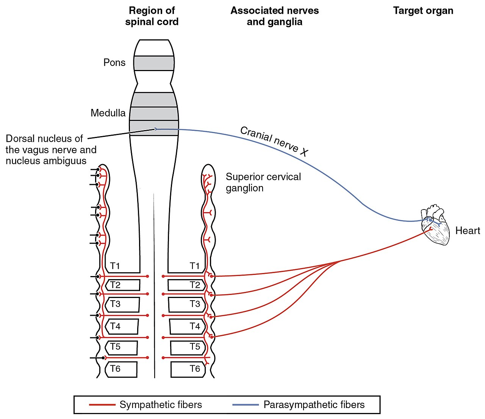
Alpha blockers: releasing the vessels
An alpha-1 blocker stops norepinephrine from constricting vascular smooth muscle. The vessels relax, resistance falls, and blood pressure comes down. The same receptor sits in the bladder neck and prostatic smooth muscle, so blocking it also relaxes the outflow tract — which is why the “-osin” drugs are workhorses in benign prostatic hyperplasia (BPH), letting men empty a bladder that a big prostate had been squeezing shut. Tamsulosin is relatively uroselective and drops pressure less; doxazosin, terazosin, and prazosin lower blood pressure more and are sometimes used for that purpose (prazosin is also used off-label for PTSD-related nightmares, though the trial evidence is mixed).
The signature hazard is first-dose orthostatic hypotension. The first dose — or the first dose after any increase — can drop a patient's pressure sharply enough to cause syncope, and a syncopal fall in an older adult is a hip fracture waiting to happen. The nursing response is concrete: give the first dose at bedtime, teach the patient to rise slowly and to sit on the edge of the bed before standing, warn them not to drive after the first dose, and check orthostatic vitals. Phentolamine is a nonselective alpha blocker used differently — as the antidote for vasopressor extravasation and in the management of catecholamine excess such as pheochromocytoma.
Beta blockers: the “-olol” family
A beta blocker occupies beta receptors so catecholamines cannot. Blocking beta-1 slows the heart rate, weakens contraction, slows AV conduction, and suppresses renin release — the combination that lowers blood pressure, quiets angina by cutting myocardial oxygen demand, controls rate in atrial fibrillation, and, most importantly, improves survival after myocardial infarction and in chronic heart failure. That last point deserves emphasis because it is counterintuitive: a drug that weakens contraction helps the failing heart, because it protects it from years of catecholamine flogging. In heart failure the beta blocker is started at a low dose and titrated up slowly — and never started during an acute decompensation.
The critical distinction in this class is cardioselectivity. Cardioselective agents (metoprolol, atenolol, bisoprolol, esmolol — the ones that start with A through M) block mainly beta-1 and largely spare the lungs. Nonselective agents (propranolol, nadolol, timolol, sotalol — N through Z) block beta-2 as well, which means they can constrict bronchi. That is the mechanism behind the caution in asthma and COPD. The A–M letter trick is a study aid, not a rule — carvedilol and labetalol are the classic exceptions, since both begin in the first half of the alphabet yet block beta-1, beta-2, and alpha-1. Cardioselectivity is also relative, not absolute, and is lost at higher doses, so even a “cardioselective” blocker gets used cautiously in reactive airway disease.
| Class / drug | Blocks | Main use | Nursing alert |
|---|---|---|---|
| Tamsulosin | Alpha-1 (uroselective) | BPH | Orthostasis, dizziness, retrograde ejaculation; flag before cataract surgery (floppy iris syndrome). |
| Prazosin, doxazosin, terazosin | Alpha-1 | Hypertension, BPH; prazosin off-label for PTSD nightmares | First-dose syncope — give at bedtime, rise slowly, check orthostatics. |
| Phentolamine | Alpha-1 & alpha-2 | Vasopressor extravasation; pheochromocytoma | Reflex tachycardia; infiltrate the extravasation site promptly. |
| Metoprolol, atenolol, bisoprolol | Beta-1 (cardioselective) | Hypertension, angina, post-MI, heart failure, rate control | Hold and reassess if HR under 60 or SBP low per parameters; never stop abruptly. |
| Esmolol | Beta-1 (ultra-short IV) | Acute rate control, perioperative | Continuous cardiac and BP monitoring; effect ends within minutes of stopping. |
| Propranolol, nadolol | Beta-1 & beta-2 (nonselective) | Hypertension, migraine prophylaxis, tremor, performance anxiety, thyroid storm | Caution in asthma/COPD (bronchospasm); masks hypoglycemia signs. |
| Timolol (ophthalmic) | Beta-1 & beta-2 | Glaucoma — reduces aqueous production | Eye drops are systemic drugs. Apply punctal occlusion for 1–2 minutes; bradycardia and bronchospasm are real. |
| Carvedilol, labetalol | Beta plus alpha-1 | Heart failure (carvedilol); hypertensive urgency and pregnancy (labetalol) | Added alpha blockade means more orthostasis; take carvedilol with food. |
The three cautions a nurse must own
First, never stop a beta blocker abruptly. Chronic blockade upregulates beta receptors, and yanking the drug away exposes a hypersensitized heart to circulating catecholamines — rebound tachycardia, severe hypertension, angina, and infarction have all been documented. Taper over one to two weeks, and teach the patient this explicitly, because a patient who feels fine and stops on their own is the one who ends up in the emergency department.
Second, beta blockers mask hypoglycemia. The trembling, racing heart, and anxiety that warn a diabetic patient their glucose is falling are beta-mediated sympathetic signals — block beta and the warning goes silent. Sweating is the one sign that survives, because sweat glands are cholinergic. Teach patients on beta blockers with diabetes to check their glucose rather than trust how they feel, and never assume a patient without tremor is safe.
Third, hold parameters are yours to enforce. Take an apical pulse for a full minute before every dose. If the heart rate is under 60 or the blood pressure is below the ordered threshold, hold the dose and notify the prescriber — do not simply give it and chart the vitals. Beta blockers also blunt the compensatory tachycardia of hypovolemia, so a bleeding patient on metoprolol may not mount the heart rate you would otherwise expect. In beta blocker overdose — profound bradycardia and hypotension unresponsive to atropine — the specific antidote is glucagon, which raises cardiac cAMP by a route that bypasses the blocked receptor entirely.
- Alpha-1 blockers (“-osin”) relax vessels and the bladder outlet — hypertension and BPH — and cause first-dose orthostatic syncope; dose at bedtime.
- Cardioselective beta blockers (A–M: metoprolol, atenolol) spare beta-2; nonselective ones (N–Z: propranolol) risk bronchospasm in asthma/COPD.
- Beta blockers improve survival post-MI and in chronic heart failure, but are started low and titrated slowly — not during acute decompensation.
- Never stop abruptly (rebound crisis); they mask hypoglycemia except sweating; check apical pulse and honor hold parameters.
- Beta blocker overdose antidote: glucagon. Vasopressor extravasation antidote: phentolamine.
Section 4Cholinergic and anticholinergic drugs
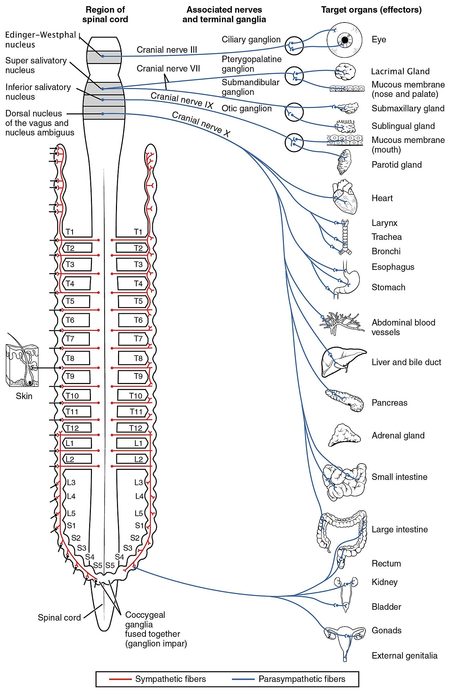
Cholinergic agonists: turning up rest-and-digest
A cholinergic agonist (parasympathomimetic) reproduces what acetylcholine does at muscarinic receptors, and the resulting picture is SLUDGE: salivation, lacrimation, urination, defecation, GI cramping, emesis — plus bradycardia, bronchoconstriction, and miosis. Written out that way it sounds purely like a poisoning, and at high doses it is. Used deliberately at therapeutic doses, though, two of those effects are useful. Bethanechol selectively stimulates the bladder detrusor and gut, which makes it the drug for urinary retention that is not caused by an obstruction — a distinction that matters enormously, because squeezing a bladder against a blocked outlet risks rupture. Pilocarpine, given as eye drops, constricts the pupil and opens the drainage angle in glaucoma, and orally it stimulates saliva in xerostomia. Cholinergic agonists are contraindicated in asthma (bronchoconstriction), in bradycardia or heart block, in peptic ulcer disease, and in bowel or bladder obstruction.
AChE inhibitors: making the body's own acetylcholine last longer
Acetylcholinesterase (AChE) is the enzyme that chews up acetylcholine in the synapse within milliseconds. Block the enzyme and acetylcholine lingers, so the same signal hits harder — an indirect cholinergic agonist. This is the mechanism behind three quite different therapies. In myasthenia gravis, where autoantibodies have destroyed nicotinic receptors at the muscle end plate, pyridostigmine keeps acetylcholine around long enough for the surviving receptors to work, restoring strength; the timing of doses around meals matters so patients can chew and swallow safely. In Alzheimer disease, donepezil, rivastigmine, and galantamine raise central acetylcholine — they modestly improve or stabilize symptoms for a time, but they neither cure the disease nor halt the underlying neurodegeneration. And in anesthesia, neostigmine reverses non-depolarizing neuromuscular blockade, which Section 5 takes up.
Push cholinergic stimulation too far and you get cholinergic crisis: profound SLUDGE with bradycardia, bronchoconstriction, copious secretions, and — the part that kills — muscle weakness and respiratory failure from a depolarized, overwhelmed end plate. This is the mechanism of organophosphate poisoning (insecticides and nerve agents), which irreversibly inactivates AChE. The treatment is two drugs, not one: atropine to block the muscarinic effects and dry the secretions, and pralidoxime to pull the organophosphate off the enzyme before the bond “ages” and becomes permanent. Atropine alone will not fix the nicotinic muscle weakness — a fact worth understanding rather than memorizing.
The cruel clinical trap in myasthenia is that myasthenic crisis (too little drug) and cholinergic crisis (too much) both present as severe weakness and respiratory failure. The differentiator is the company the weakness keeps: cholinergic crisis brings SLUDGE — drooling, tearing, cramping, tiny pupils, bradycardia — while myasthenic crisis does not. Either way the airway comes first.
Anticholinergics: blocking rest-and-digest
An anticholinergic (antimuscarinic, parasympatholytic) blocks muscarinic receptors, so the picture is SLUDGE in reverse: dry mouth, no sweat, blurred near vision and dilated pupils, tachycardia, constipation, and urinary retention, with confusion when the drug reaches the brain. Atropine is the prototype — the drug you push for symptomatic bradycardia, use to dry secretions preoperatively, and reach for in organophosphate poisoning. Ipratropium and tiotropium are inhaled anticholinergics that bronchodilate in COPD by a route completely different from albuterol's, which is why the two are often combined. Oxybutynin, tolterodine, and solifenacin quiet an overactive bladder. Scopolamine patches prevent motion sickness. Benztropine and trihexyphenidyl rebalance the dopamine–acetylcholine seesaw in Parkinson disease and in drug-induced extrapyramidal symptoms.
| Class / drug | Action | Main use | Nursing alert |
|---|---|---|---|
| Bethanechol | Direct muscarinic agonist | Non-obstructive urinary retention | Contraindicated in obstruction (rupture risk) and asthma; keep a urinal/commode within reach — it works fast. |
| Pilocarpine | Direct muscarinic agonist | Glaucoma; xerostomia | Miosis causes dim, blurred vision — fall risk, caution at night. |
| Pyridostigmine | AChE inhibitor | Myasthenia gravis | Time doses 30–60 min before meals; watch for cholinergic vs myasthenic crisis. |
| Donepezil, rivastigmine, galantamine | Central AChE inhibitors | Alzheimer disease | Eases symptoms modestly; does not cure or stop progression. Nausea, diarrhea, bradycardia, weight loss, vivid dreams. |
| Neostigmine | AChE inhibitor | Reverses non-depolarizing blockade | Always paired with an antimuscarinic (glycopyrrolate/atropine) to prevent bradycardia. |
| Atropine | Antimuscarinic | Symptomatic bradycardia; preop drying; organophosphate poisoning | Bradycardia dose is 1 mg IV push rapidly, repeat q3–5 min to a 3 mg max — a slow push or an underdose can paradoxically worsen bradycardia. Anticholinergic toxicity antidote: physostigmine. |
| Ipratropium, tiotropium | Inhaled antimuscarinic | COPD — ipratropium short-acting (also added to albuterol in acute exacerbation); tiotropium long-acting maintenance | Dry mouth — sugar-free gum, sips of water; caution with peanut/soy allergy for some inhaler formulations. |
| Oxybutynin, tolterodine, solifenacin | Antimuscarinic | Overactive bladder | Dry mouth, constipation, retention, confusion in older adults; a Beers-list concern. |
| Scopolamine | Antimuscarinic (patch) | Motion sickness, secretions | Wash hands after handling — touching the eye causes unilateral mydriasis; remove old patch before applying new. |
| Benztropine | Central antimuscarinic | Parkinson disease; drug-induced EPS | Anticholinergic burden, especially cognitive effects in older adults. |
Every one of those anticholinergic effects is predictable from the table in Section 1, and so is the danger. Anticholinergic burden is the additive load of every drug with antimuscarinic activity a patient is taking — and it is not just the drugs above. Many antihistamines, tricyclic antidepressants, and antipsychotics carry hidden antimuscarinic activity. Stack three or four in an 80-year-old and you get confusion, falls, retention, and constipation that get misread as “dementia” or “just getting older.” Counting up anticholinergic burden on a medication list is one of the highest-yield things a nurse can do for an older patient.
- Cholinergic agonists produce SLUDGE; bethanechol for non-obstructive retention, pilocarpine for glaucoma and dry mouth.
- AChE inhibitors raise the body's own acetylcholine: pyridostigmine (myasthenia), donepezil (Alzheimer), neostigmine (reversal).
- Cholinergic crisis = SLUDGE plus weakness and respiratory failure; organophosphate poisoning is treated with atropine plus pralidoxime.
- Anticholinergics are the mirror image: dry, hot, red, blurred, tachycardic, retaining, confused. Antidote for toxicity: physostigmine.
- Anticholinergic burden stacks across drug classes and drives confusion, falls, and retention in older adults.
Section 5Neuromuscular blockers
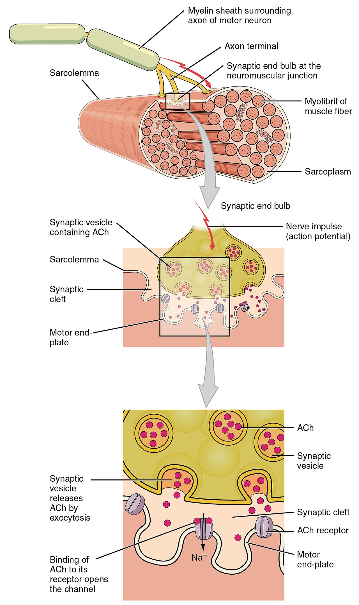
A different synapse, a much higher stake
Neuromuscular blocking agents (NMBAs) are technically somatic, not autonomic, but they belong here because they work on the same molecule — acetylcholine — at a nicotinic receptor. They act at the neuromuscular junction, on the NM receptor of the skeletal muscle end plate, to produce flaccid paralysis for intubation, surgery, and mechanical ventilation.
Three facts must be absolutely fixed before any of the pharmacology matters. These drugs do not sedate. They do not relieve pain. They do not cause amnesia. A paralyzed patient who has not been given adequate sedation and analgesia is fully awake, feeling everything, and unable to move a finger or make a sound to tell you — among the most terrifying experiences medicine can inflict. NMBAs are high-alert medications, stored separately with auxiliary warnings, and they are never given except where the airway can be secured and mechanical ventilation is immediately available. Paralysis always includes the diaphragm. The nurse's obligations are non-negotiable: confirm deep sedation and analgesia are running first, never allow paralysis without a secured airway, provide eye lubrication and taping (the blink is gone), reposition to prevent pressure injury, provide DVT prophylaxis, and keep talking to the patient because hearing is unaffected.
Depolarizing blockade: succinylcholine
Succinylcholine is the only depolarizing agent in common use, and it works by an odd trick: it is an agonist that paralyzes. It binds the nicotinic receptor and opens it — producing an initial wave of disorganized contractions called fasciculations — but unlike acetylcholine it is not broken down by acetylcholinesterase, so it sits on the receptor and holds the end plate depolarized. A depolarized membrane cannot fire again, and the muscle goes flaccid. Onset is under a minute and the effect wears off in five to ten minutes as plasma pseudocholinesterase metabolizes it, which is exactly the profile you want for rapid sequence intubation.
Three hazards define it. First, there is no reversal agent — you wait it out, ventilating the patient the whole time. Giving an AChE inhibitor would only prolong the block by adding more acetylcholine to an already depolarized plate. Second, the depolarization leaks potassium out of every muscle cell in the body, so succinylcholine is contraindicated in patients with existing hyperkalemia, and in burns, crush injury, denervation, spinal cord injury, or prolonged immobility beyond roughly 24–48 hours, where receptor upregulation can produce a potassium surge large enough to cause cardiac arrest. Third, succinylcholine is a leading trigger of malignant hyperthermia in genetically susceptible patients — a hypermetabolic crisis whose earliest reliable sign is a rising end-tidal CO2, with masseter rigidity, tachycardia, and a late temperature spike. The antidote is dantrolene, which must be immediately available wherever the drug is used. A rare patient with atypical pseudocholinesterase stays paralyzed for hours; the management is simply continued ventilation and sedation until it clears.
Non-depolarizing blockade: the “-curium” and “-curonium” drugs
Rocuronium, vecuronium, cisatracurium, and atracurium take the more intuitive route: they are competitive antagonists that occupy the nicotinic receptor without activating it, so acetylcholine cannot get in. There are no fasciculations, onset is slower (though a large dose of rocuronium approaches succinylcholine's speed), and the block lasts much longer. Because the blockade is competitive, it is reversible — flood the junction with enough acetylcholine and it outcompetes the drug. That is what neostigmine does, and it is always given with glycopyrrolate or atropine, because the extra acetylcholine spilling onto muscarinic receptors would otherwise cause bradycardia and drowning secretions. Sugammadex is the newer and cleaner option: it physically encapsulates rocuronium or vecuronium molecules and drags them out of circulation, reversing even deep blockade in minutes without touching the cholinergic system at all. Cisatracurium earns a special mention because it degrades spontaneously in plasma (Hofmann elimination) rather than through liver or kidney, making it the agent of choice in organ failure.
| Feature | Depolarizing (succinylcholine) | Non-depolarizing (rocuronium, vecuronium, cisatracurium) |
|---|---|---|
| Mechanism | Agonist — opens the receptor and holds it depolarized | Competitive antagonist — occupies the receptor, blocks ACh |
| Fasciculations | Yes, then flaccid paralysis | No |
| Onset / duration | Under 1 min / 5–10 min | 1–3 min / 30–60+ min |
| Reversal | None — ventilate and wait | Neostigmine + glycopyrrolate, or sugammadex (roc/vec) |
| Effect of AChE inhibitor | Prolongs the block | Reverses the block |
| Key dangers | Hyperkalemia, malignant hyperthermia, myalgias, bradycardia in children | Prolonged paralysis, residual weakness; potentiated by aminoglycosides, magnesium, hypothermia |
| Typical use | Rapid sequence intubation | Surgical relaxation, ventilated ICU patients |
Monitoring is where the nurse lives with these drugs. Train-of-four (TOF) peripheral nerve stimulation delivers four small shocks and counts the resulting twitches; the depth of blockade is titrated to a target, commonly one to two twitches out of four for a continuous infusion. Fewer twitches means deeper block and a longer, harder recovery. Before extubation, recovery is judged by objective criteria — sustained head lift, adequate tidal volume and grip, the ability to protect the airway — and never by appearance alone, because a patient can look awake while still too weak to breathe. Remember too that several common drugs deepen and prolong blockade: aminoglycoside antibiotics, magnesium sulfate, calcium channel blockers, inhaled anesthetics, hypothermia, and acidosis. A postpartum patient on a magnesium drip is a different pharmacologic problem than the same patient without it.
- NMBAs act at the nicotinic (NM) receptor of the motor end plate; they are high-alert drugs that paralyze the diaphragm.
- They provide no sedation, no analgesia, no amnesia — sedation and pain control must run first and continuously.
- Succinylcholine depolarizes: fasciculations, ultra-short action, no reversal; risks hyperkalemia and malignant hyperthermia (antidote dantrolene).
- Non-depolarizers compete: no fasciculations, longer action, reversible with neostigmine + glycopyrrolate or sugammadex.
- Monitor depth with train-of-four; aminoglycosides and magnesium prolong blockade; confirm real strength before extubation.
The chapter in one breath
- The autonomic nervous system has a sympathetic (fight-or-flight, adrenergic) and a parasympathetic (rest-and-digest, cholinergic) division; all ganglia are nicotinic.
- The receptor map does the work: alpha-1 constricts, alpha-2 feeds back to lower BP, beta-1 is the heart, beta-2 is the lungs, muscarinic is SLUDGE.
- Epinephrine is dose-dependent (beta low, alpha high) and is the first-line, IM-lateral-thigh drug in anaphylaxis; vasopressor extravasation is reversed with phentolamine.
- Beta-2 agonists rescue airways at the price of tremor, tachycardia, and hypokalemia; long-acting agents are maintenance only.
- Alpha blockers cause first-dose syncope (dose at bedtime); beta blockers save lives post-MI and in heart failure but must never be stopped abruptly and mask hypoglycemia except sweating.
- AChE inhibitors amplify the body's own acetylcholine (myasthenia, Alzheimer, reversal); overshoot is cholinergic crisis, treated with atropine + pralidoxime in organophosphate poisoning.
- Anticholinergics are dry, hot, red, blurred, tachycardic, and confused — and their burden stacks dangerously in older adults; the antidote is physostigmine.
- Neuromuscular blockers paralyze without sedating: succinylcholine depolarizes and cannot be reversed (hyperkalemia, malignant hyperthermia → dantrolene); non-depolarizers compete and reverse with neostigmine + glycopyrrolate or sugammadex.
ReferenceWords worth knowing
A quick reference for the terms in this chapter — skim it now, or circle back whenever a word trips you up.
- Acetylcholine (ACh)
- The transmitter at all autonomic ganglia, at parasympathetic organ synapses, at sympathetic sweat glands, and at the skeletal muscle end plate.
- Acetylcholinesterase (AChE)
- The enzyme that breaks down acetylcholine in the synapse; blocking it amplifies and prolongs cholinergic signaling.
- Alpha-1 receptor
- Receptor on vascular smooth muscle, pupil, and bladder neck; stimulation causes vasoconstriction, mydriasis, and urinary retention.
- Alpha-2 receptor
- Presynaptic and central receptor whose stimulation reduces norepinephrine release, lowering blood pressure (clonidine).
- Anticholinergic (antimuscarinic)
- A drug that blocks muscarinic receptors, producing dry mouth, blurred vision, tachycardia, constipation, retention, and confusion.
- Anticholinergic burden
- The cumulative antimuscarinic load from all of a patient's drugs, a major cause of confusion and falls in older adults.
- Autonomic nervous system
- The involuntary nervous system controlling heart, vessels, airways, gut, bladder, glands, and pupils.
- Beta-1 receptor
- Cardiac (“one heart”) and renal receptor; stimulation raises rate, contractility, conduction, and renin release.
- Beta-2 receptor
- Pulmonary (“two lungs”), vascular, uterine, and hepatic receptor; stimulation causes bronchodilation and vasodilation.
- Cardioselective
- Describing a beta blocker that acts mainly on beta-1 and largely spares beta-2; selectivity is relative and lost at high doses.
- Cholinergic crisis
- Excess cholinergic stimulation causing SLUDGE plus muscle weakness and respiratory failure; the mirror trap of myasthenic crisis.
- Depolarizing blocker
- A neuromuscular blocker (succinylcholine) that activates and then holds the end plate depolarized; has no reversal agent.
- Extravasation
- Leakage of a vesicant such as a vasopressor into surrounding tissue, risking necrosis; reversed locally with phentolamine.
- Malignant hyperthermia
- A hypermetabolic crisis triggered by succinylcholine or volatile anesthetics; earliest sign is rising end-tidal CO2; antidote is dantrolene.
- Muscarinic receptor
- The acetylcholine receptor on parasympathetic target organs; stimulation produces the SLUDGE picture.
- Neuromuscular blocking agent (NMBA)
- A high-alert drug that paralyzes skeletal muscle at the nicotinic end plate without sedating or relieving pain.
- Nicotinic receptor
- The acetylcholine receptor at autonomic ganglia (NN) and at the skeletal muscle end plate (NM).
- Non-depolarizing blocker
- A competitive nicotinic antagonist (rocuronium, vecuronium, cisatracurium) reversible with neostigmine or sugammadex.
- Parasympathetic division
- The rest-and-digest division; acetylcholine on muscarinic receptors slows the heart and activates gut and bladder.
- SLUDGE
- Salivation, Lacrimation, Urination, Defecation, GI upset, Emesis — the muscarinic (cholinergic excess) picture.
- Sympathetic division
- The fight-or-flight division; mostly norepinephrine on adrenergic receptors, plus adrenal epinephrine release.
- Train-of-four (TOF)
- Peripheral nerve stimulation delivering four impulses to gauge the depth of neuromuscular blockade by counting twitches.
Check yourself
Endocrine Drugs
The endocrine system runs on chemical messages sent slowly, in tiny amounts, through the bloodstream — and endocrine pharmacology is mostly the art of replacing a message the body has stopped sending, or muffling one it is sending too loudly. That sounds simple until you meet the feedback loop, which quietly turns off the patient's own gland the moment you supply the hormone from outside. Almost every endocrine drug error a nurse will ever see traces back to that one fact, or to a decimal point in an insulin dose. This chapter walks through the pituitary, the thyroid, the adrenal cortex, and the pancreas — the four glands you will medicate most — and the safety habits that keep those drugs from hurting the person you gave them to.
By the end of this chapter you can
- Explain negative feedback and predict what happens to a patient's own gland when you give the hormone from outside.
- Describe the major pituitary agents — including desmopressin and octreotide — and their monitoring.
- Teach a patient how to take levothyroxine correctly and recognize under- and over-replacement.
- Compare methimazole and propylthiouracil and name the adverse effect that must be reported immediately.
- List the major adverse effects of glucocorticoids and explain why long-term therapy must be tapered.
- State the onset, peak, and duration of each insulin class and use peak times to anticipate hypoglycemia.
- Recognize and treat hypoglycemia, including glucagon rescue in an unresponsive patient.
- Describe metformin and the other oral antidiabetic classes, with the nursing alert unique to each.
Section 1Hormone principles and the pituitary

What makes a hormone drug different
A hormone is a chemical messenger released by a gland into the blood, carried to a distant tissue, and recognized there by a receptor built to fit it. Two features of that arrangement matter enormously at the bedside. First, hormones work at vanishingly small concentrations — a therapeutic dose of levothyroxine is measured in micrograms, a thousandth of the milligram doses you are used to — so a decimal slip is not a small error, it is a hundredfold one. Second, hormones come in two chemical families that behave completely differently as drugs.
Lipid-soluble hormones (thyroid hormone and the steroid hormones such as cortisol) slip straight through the cell membrane and act on receptors inside the cell, changing which genes get transcribed. Because they work by building new proteins, their effects come on over hours to days and linger after the drug is gone — and because they are fat-soluble, they survive the gut and can be given by mouth. Water-soluble hormones (insulin, growth hormone, glucagon, vasopressin, and the other peptides) cannot cross the membrane; they dock on a receptor on the cell surface and trigger a fast intracellular signaling cascade. They act in minutes — and they are proteins, which means digestive enzymes destroy them. That single chemical fact is why insulin cannot be a pill. It is not a marketing decision or a gap in the science; a swallowed peptide is simply lunch.
Negative feedback: the idea the whole chapter rests on
Endocrine glands are governed by negative feedback, a thermostat arrangement. The hypothalamus signals the anterior pituitary, the pituitary signals the target gland, the target gland releases its hormone — and that circulating hormone travels back and switches off the hypothalamus and pituitary that ordered it. The classic example is the thyroid axis: TRH → TSH → thyroid hormone → suppression of TRH and TSH. The adrenal axis works the same way: CRH → ACTH → cortisol → suppression of CRH and ACTH.
Here is the clinical consequence, and it is worth reading twice. The loop cannot tell the difference between hormone made by the patient and hormone you injected. When you give prednisone daily for two months, the patient's hypothalamus sees plenty of steroid, stops sending CRH, the pituitary stops sending ACTH, and the adrenal cortex — unused, unstimulated — atrophies. Stop the prednisone abruptly and there is no cortisol from either source: the drug is gone and the gland cannot answer. That is adrenal crisis, and it is the reason you will hear "never stop a steroid suddenly" for the rest of your career. The same logic explains why replacement doses are titrated against the pituitary's signal — a TSH level is really the pituitary's opinion of whether your levothyroxine dose is right.
Drugs that act at the pituitary
The pituitary is two glands in one coat. The anterior pituitary manufactures its own hormones — growth hormone, TSH, ACTH, prolactin, FSH, LH. The posterior pituitary manufactures nothing; it is a storage tank for two hormones made in the hypothalamus, antidiuretic hormone (ADH, vasopressin) and oxytocin. Pituitary drugs either replace a missing signal or shut down an excessive one.
| Class | Prototype | Key effect | Nursing alert |
|---|---|---|---|
| Growth hormone | somatropin | Replaces GH in deficiency; promotes linear growth in children | Subcutaneous only; rotate sites. Monitor growth velocity and blood glucose — GH is hyperglycemic. Report limp or hip/knee pain (slipped epiphysis). |
| Somatostatin analog | octreotide | Inhibits GH release; treats acromegaly, carcinoid, variceal bleeding | Monitor glucose (can swing either way), watch for gallstones, bradycardia, steatorrhea/cramping. Check IGF-1 for response. |
| Dopamine agonist | cabergoline, bromocriptine | Dopamine inhibits prolactin, so these lower prolactin and shrink prolactinomas | Orthostatic hypotension — first dose at bedtime, rise slowly. Nausea; take with food. Watch for compulsive behaviors. |
| ADH replacement | desmopressin (DDAVP) | Synthetic ADH; treats diabetes insipidus, nocturnal enuresis, mild hemophilia A/von Willebrand | Water intoxication and hyponatremia. Monitor daily weight, I&O, urine specific gravity, serum sodium. Report headache, confusion, seizure. |
| Vasopressin | vasopressin | ADH plus potent vasoconstriction; used in DI and in shock | IV in critical care; monitor BP, sodium, and the site — extravasation causes tissue necrosis. |
| Oxytocic | oxytocin | Stimulates uterine contraction and milk let-down | High-alert drug. Always on a pump, always titrated; monitor contraction pattern and fetal heart rate. Antidiuretic at high doses — watch sodium. |
Notice the pattern hiding in that table: diabetes insipidus and SIADH are mirror images, and so are their drugs. In diabetes insipidus there is too little ADH, so the kidney cannot hold water — the patient pours out liters of pale, dilute urine, the specific gravity is low, and the serum sodium climbs. You give desmopressin. In SIADH there is too much ADH, water is retained, urine is scant and concentrated, and the sodium falls. Give too much desmopressin and you have simply converted the first problem into the second — which is why the monitoring for desmopressin is not the urine output alone but the sodium.
- Hormones act at microgram concentrations — decimal errors are catastrophic; peptide hormones like insulin are digested, so they cannot be oral.
- Negative feedback cannot distinguish the patient's hormone from yours, so exogenous hormone suppresses and atrophies the patient's own gland.
- The pituitary drugs either replace (somatropin, desmopressin) or suppress (octreotide, cabergoline).
- Desmopressin's danger is water intoxication — monitor serum sodium, daily weight, and neuro status, not just urine output.
Section 2Thyroid drugs
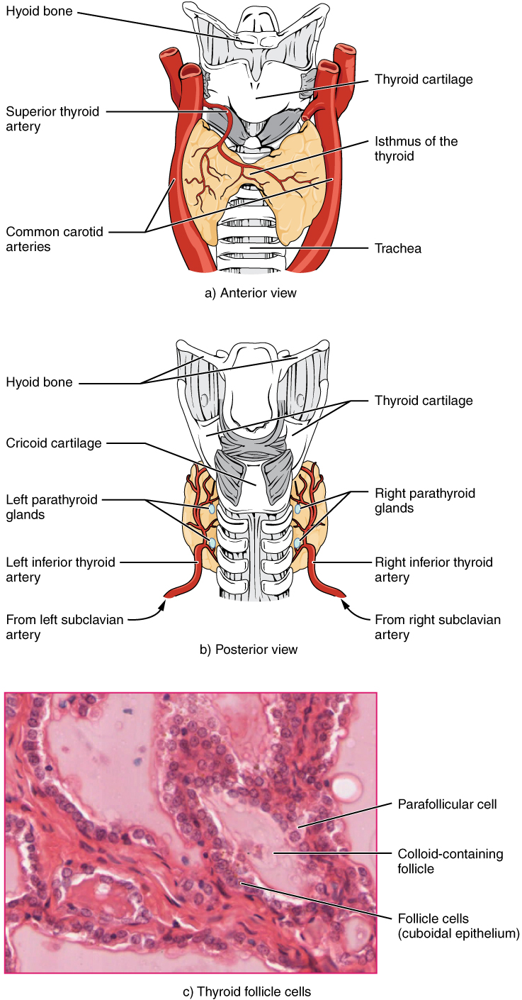
Levothyroxine: replacing what is missing
Thyroid hormone sets the body's metabolic idle speed. Too little and everything slows — the patient is cold, constipated, bradycardic, gaining weight, thinking through fog. Levothyroxine (T4) is the synthetic replacement, and it is one of the most-prescribed drugs in the country. It is chemically identical to the T4 the thyroid makes, and the body converts it to the more active T3 at the tissues, which is exactly why T4 is preferred over giving T3 directly: the patient's own tissues decide how much active hormone they need. Levothyroxine has a long half-life (about 7 days), so it is a once-daily drug, effects take weeks to appear, and a single missed dose is not an emergency.
It is also a narrow therapeutic index drug, which drives everything about how it is taken. Give it on an empty stomach with water, 30–60 minutes before breakfast, at the same time every day. Food — especially soy, walnuts, high-fiber meals, and coffee — blunts absorption. Calcium, iron, multivitamins, antacids, sucralfate, and cholestyramine bind it in the gut; separate those by at least 4 hours. Because absorption is so finicky, patients should stay on the same product and not switch brands casually. Dose is titrated against the TSH, rechecked about 6–8 weeks after any change — sooner is just measuring noise, because the hormone has not reached steady state.
Teach the patient what over-replacement feels like, because it looks exactly like hyperthyroidism: tachycardia, palpitations, nervousness, insomnia, heat intolerance, tremor, unintended weight loss. In older adults, an excessive dose brings two real hazards — atrial fibrillation and, over years, osteoporosis. This is why an older patient, or anyone with coronary artery disease, is started on a deliberately low dose and increased slowly: a suddenly faster heart in an already-narrowed coronary artery can precipitate angina or infarction. Two more teaching points that come up constantly: levothyroxine is lifelong — feeling better is evidence it is working, not permission to stop — and requirements increase during pregnancy, so a pregnant patient needs her dose and her TSH revisited early.
Antithyroid agents: turning the gland down
Hyperthyroidism is the opposite picture — racing heart, weight loss despite eating, heat intolerance, tremor, anxiety, diarrhea. The thionamides, methimazole and propylthiouracil (PTU), block the enzyme that builds thyroid hormone. They do not touch hormone already stored in the gland, so the patient does not improve for several weeks — a fact worth telling them up front, or they will decide the drug does not work and quit.
Methimazole is first-line: it is more potent, dosed once daily, and better tolerated. PTU is reserved for three situations — the first trimester of pregnancy (methimazole carries a teratogenic risk in early pregnancy), thyroid storm (PTU has the extra benefit of blocking peripheral T4-to-T3 conversion), and patients who cannot take methimazole — because PTU carries a boxed warning for severe hepatotoxicity, including liver failure. Both drugs share the effect you must burn into memory: agranulocytosis. If a patient on a thionamide reports a sore throat, fever, or mouth ulcers, that is not a cold. Hold the drug, notify the provider, and get a CBC with differential.
| Class | Prototype | Key effect | Nursing alert |
|---|---|---|---|
| Thyroid replacement | levothyroxine (T4) | Restores metabolic rate; converted to T3 peripherally | Empty stomach, 30–60 min before breakfast; separate calcium/iron/antacids by 4 h. Titrate to TSH q6–8 wk. Report chest pain, palpitations, weight loss. Lifelong. |
| T3 replacement | liothyronine (T3) | Faster onset, shorter half-life; myxedema coma, selected cases | More cardiac stimulation than T4 — monitor HR and rhythm closely. |
| Thionamide | methimazole | Blocks hormone synthesis; first-line for hyperthyroidism | Agranulocytosis — report sore throat/fever at once. Avoid in first trimester. Effect takes weeks. |
| Thionamide | propylthiouracil (PTU) | Blocks synthesis and peripheral T4→T3 conversion | Boxed warning: hepatotoxicity. Report jaundice, dark urine, RUQ pain, anorexia. Reserved for first trimester and thyroid storm. |
| Iodine solution | potassium iodide (SSKI, Lugol's) | High-dose iodine transiently shuts down hormone release; shrinks/firms gland pre-op | Give 1 hour after the thionamide. Dilute in juice, use a straw (stains teeth). Metallic taste. Short-term use only. |
| Radioactive iodine | iodine-131 | Destroys thyroid tissue permanently | Contraindicated in pregnancy/lactation. Radiation precautions; expect eventual hypothyroidism and lifelong levothyroxine. |
| Beta blocker | propranolol | Does not treat the thyroid — blocks the adrenergic symptoms | Symptom relief while thionamides take effect. Monitor HR and BP; caution in asthma. |
- Levothyroxine: empty stomach 30–60 min before breakfast, separate binders by 4 h, titrate to TSH every 6–8 weeks, lifelong, start low in older/cardiac patients.
- Over-replacement mimics hyperthyroidism — tachycardia, weight loss, insomnia; long term it risks atrial fibrillation and osteoporosis.
- Methimazole is first-line; PTU is for the first trimester and thyroid storm and carries a hepatotoxicity boxed warning.
- Both thionamides can cause agranulocytosis — sore throat, fever, or mouth ulcers means hold the drug and draw a CBC.
Section 3Corticosteroids

Two jobs in one gland
The adrenal cortex makes two kinds of steroid that matter here. Glucocorticoids — cortisol is the natural one — raise blood glucose, suppress inflammation, dampen the immune system, and help the body survive stress. Mineralocorticoids — aldosterone is the natural one — make the kidney retain sodium and water and excrete potassium. Every corticosteroid drug you give is a blend of those two activities, and the blend is the whole reason there are so many of them.
Hydrocortisone is essentially cortisol, with both activities, which makes it the drug of choice when you are replacing a missing adrenal gland. Prednisone and methylprednisolone are mostly glucocorticoid with a little mineralocorticoid — the everyday anti-inflammatories. Dexamethasone is nearly pure glucocorticoid, very potent, long-acting, and carries almost no salt-retaining effect, which is why it is chosen for cerebral edema and for situations where fluid retention would be a problem. Fludrocortisone is the mirror image: chosen for its mineralocorticoid punch, to replace aldosterone. One more thing about prednisone worth knowing: it is a prodrug, activated by the liver into prednisolone, so a patient in liver failure may be given prednisolone directly.
| Agent | Equivalent dose | Glucocorticoid / mineralocorticoid | Typical use & nursing alert |
|---|---|---|---|
| hydrocortisone | 20 mg | Both, roughly balanced | Adrenal insufficiency replacement; IV stress dosing. Short-acting. |
| prednisone | 5 mg | Mostly gluco, some mineralo | Oral workhorse (asthma, RA, IBD). Prodrug — needs a working liver. Give with food. |
| methylprednisolone | 4 mg | Gluco > mineralo | IV equivalent of prednisone; dose packs taper by design — teach the schedule. |
| dexamethasone | 0.75 mg | Almost pure gluco; long-acting | Most potent; cerebral edema, croup, antiemetic. Little salt retention. Big glucose spikes. |
| fludrocortisone | — | Chosen for mineralo | Addison's disease. Monitor BP, weight, edema, and potassium — it drives K+ out. |
The adverse effects: predictable, and all one story
Every classic steroid side effect is just cortisol's normal job, turned up too far and left on too long. Cortisol raises glucose → steroids cause hyperglycemia, and a diabetic patient started on prednisone will need more insulin, not less. Cortisol suppresses immunity → steroids bring infection risk, and worse, they mask the signs: they blunt fever and inflammation, so a serious infection can be well advanced before it announces itself. Cortisol is catabolic → long-term use brings muscle wasting, thin fragile skin, easy bruising, poor wound healing, and osteoporosis. Redistributed fat gives the cushingoid look: moon face, buffalo hump, truncal obesity on thin limbs. Add mood changes (euphoria, agitation, insomnia, occasionally frank psychosis), GI irritation and ulcer risk (worse with concurrent NSAIDs), cataracts and glaucoma, growth suppression in children, and — from the mineralocorticoid side — fluid retention, hypertension, and hypokalemia.
The nursing translation is short and concrete: check blood glucose even in patients who are not diabetic, take daily weights and blood pressures, monitor potassium, give oral doses with food, watch for any infection with a low index of suspicion, and teach the patient to avoid crowds and sick contacts and to report any fever. Live vaccines are generally avoided in patients on immunosuppressive doses. Doses are usually given in the morning, mimicking the body's natural cortisol peak — which both reduces insomnia and disturbs the axis a little less. And every patient on chronic steroids should carry medical identification.
Tapering, and the crisis that follows if you don't
Return to the feedback loop from Section 1. After roughly two to three weeks of systemic steroid at a meaningful dose, the HPA axis is suppressed and the adrenal cortex begins to atrophy. It cannot resume production on demand. So a course of more than about two weeks is tapered — the dose stepped down gradually over days to weeks — giving the hypothalamus, pituitary, and adrenal time to wake up in sequence. Stop abruptly and the patient falls into acute adrenal insufficiency (adrenal crisis): hypotension, shock, weakness, nausea and vomiting, abdominal pain, hypoglycemia, hyponatremia with hyperkalemia. It is a genuine emergency treated with IV hydrocortisone and fluids.
The same physiology explains stress dosing. A healthy adrenal gland pumps out extra cortisol during surgery, trauma, or serious infection; a suppressed one cannot. So patients on chronic steroids need increased doses during physiologic stress — and this is exactly when a well-meaning patient with a stomach flu decides to skip their pills because they feel too sick to eat. Teach the reverse: sick days are when the dose matters most, and if they cannot keep it down, they need to be seen.
- Glucocorticoids (cortisol/prednisone) raise glucose and suppress inflammation; mineralocorticoids (aldosterone/fludrocortisone) retain sodium and water and waste potassium.
- Potency ladder: hydrocortisone 20 mg = prednisone 5 mg = methylprednisolone 4 mg = dexamethasone 0.75 mg (most potent, least salt-retaining).
- Adverse effects are cortisol's job overdone: hyperglycemia, infection risk with masked signs, osteoporosis, cushingoid changes, mood swings, GI ulcer, cataracts, fluid retention, hypokalemia.
- Never stop abruptly after >2–3 weeks — taper, and increase the dose during illness, surgery, or trauma to prevent adrenal crisis.
Section 4Insulins
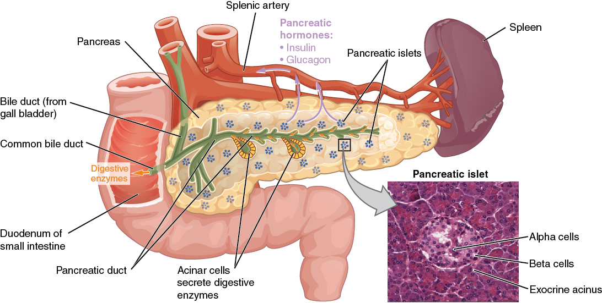
The highest of the high-alert drugs
Insulin is the hormone that lets glucose out of the blood and into cells, and it is the drug that appears on every "high-alert" list in every hospital in the country — not because it is unpredictable, but because the consequences of a wrong dose are immediate and can be fatal. The safety practices are non-negotiable and worth stating plainly. Use an insulin syringe (U-100) or an insulin pen — never a tuberculin or general-purpose syringe. Never write or accept the abbreviation "U" for units; a hand-written "10U" reads as "100" often enough that the abbreviation is banned outright. Most facilities require an independent double-check by a second nurse before administration. And because insulin names look and sound alike — glargine, glulisine, lispro, degludec, detemir — read the vial label, not the shelf position.
Insulin is given subcutaneously for routine use; the abdomen absorbs fastest and most predictably, then the arm, thigh, and buttock. Rotate within one anatomic area rather than hopping between areas, so absorption stays consistent, and space injections about an inch apart to prevent lipohypertrophy — the rubbery fatty lumps that form in an overused site and absorb insulin erratically. Do not massage the site, and do not exercise the injected limb right away; both speed absorption and can drop the glucose faster than expected. Unopened vials live in the refrigerator; the in-use vial or pen can stay at room temperature and is generally discarded after 28 days (check the specific product). Never give cold insulin from the fridge if you can help it — it stings.
Onset, peak, duration: the numbers that prevent hypoglycemia
Every insulin is the same molecule; what differs is how fast it is absorbed out of the subcutaneous tissue. The peak is the number that matters clinically, because the peak is when the patient will go low. Learn the peaks and you can predict hypoglycemia instead of discovering it.
| Class | Prototype | Onset / peak / duration | Nursing alert |
|---|---|---|---|
| Rapid-acting | lispro, aspart, glulisine | ~15 min / 1–2 h / 3–5 h | Give with the meal in front of the patient (within 15 min). If the tray does not come, the patient goes low. |
| Short-acting | regular insulin | ~30 min / 2–3 h / 5–8 h | Give 30 min before the meal. The only insulin given IV — DKA drips, hyperkalemia. Clear. |
| Intermediate | NPH (isophane) | 1–2 h / 4–12 h / 14–24 h | The only cloudy insulin — roll gently, never shake. Broad peak means a real risk of nocturnal hypoglycemia. Can be mixed with regular. |
| Long-acting | glargine, detemir | 1–2 h / no true peak / ~24 h | Basal coverage, usually once daily — detemir's duration is dose-dependent and is often given twice daily. Never mix with any other insulin and never give IV. Clear — do not mistake for rapid-acting. |
| Ultra-long | degludec | 1 h / no peak / >42 h | Very flat and forgiving; do not mix. Steady state takes ~3 days. |
| Premixed | 70/30 (NPH/regular), 75/25 | Combines both profiles | Cloudy — roll to resuspend. Convenience at the cost of flexibility; meals must be on time. |
When two insulins are drawn into one syringe — classically NPH plus regular — the sequence is fixed: inject air into the cloudy (NPH) vial, inject air into the clear (regular) vial, withdraw the clear first, then the cloudy. Clear before cloudy — or, as generations of students have said it, regular before NPH. The reason is contamination: a trace of clear regular insulin carried into the NPH vial is harmless, but a trace of NPH's protamine carried into the regular vial would slow the action of your fast insulin, and you would never know it happened.
Hypoglycemia
A blood glucose below 70 mg/dL is hypoglycemia and it is the acute danger of every insulin. The early signs are adrenergic — the body's alarm system firing: shaky, sweaty, tachycardic, anxious, hungry, pale. If it drops further, the brain runs out of fuel and the signs turn neuroglycopenic: confusion, slurred speech, blurred vision, odd behavior, seizure, coma. That second set is often mistaken for intoxication or a stroke, and an unresponsive diabetic patient gets a fingerstick before anything else. Note that a patient on a beta blocker may lose the adrenergic warning entirely — the tremor and tachycardia are blocked — and will present with confusion as the first sign. Diaphoresis usually still comes through.
Treatment is the rule of 15: if the patient is awake and can swallow, give 15 grams of fast-acting carbohydrate — 4 ounces of juice or regular soda, 3–4 glucose tablets, a tablespoon of honey — wait 15 minutes, and recheck. Repeat until above 70, then give a snack with protein and a complex carbohydrate if the next meal is more than an hour away, so the glucose does not simply fall again. If the patient cannot safely swallow, nothing goes in the mouth: give IV dextrose 50% if there is access, or glucagon (IM, SC, or intranasal) if there is not.
- Insulin is a high-alert drug: insulin syringe or pen only, never abbreviate "units," independent double-check, read the label — the names look alike.
- The peak predicts the hypoglycemia. Rapid ~1–2 h, regular 2–3 h, NPH 4–12 h (nocturnal lows), glargine/detemir/degludec have no true peak.
- Regular is the only IV insulin; NPH is the only cloudy one; long-acting insulins are never mixed. Draw clear before cloudy.
- Hypoglycemia <70 mg/dL → rule of 15 if awake; D50 IV or glucagon if not. Beta blockers hide the early adrenergic warning signs.
Section 5Oral antidiabetics and glucagon
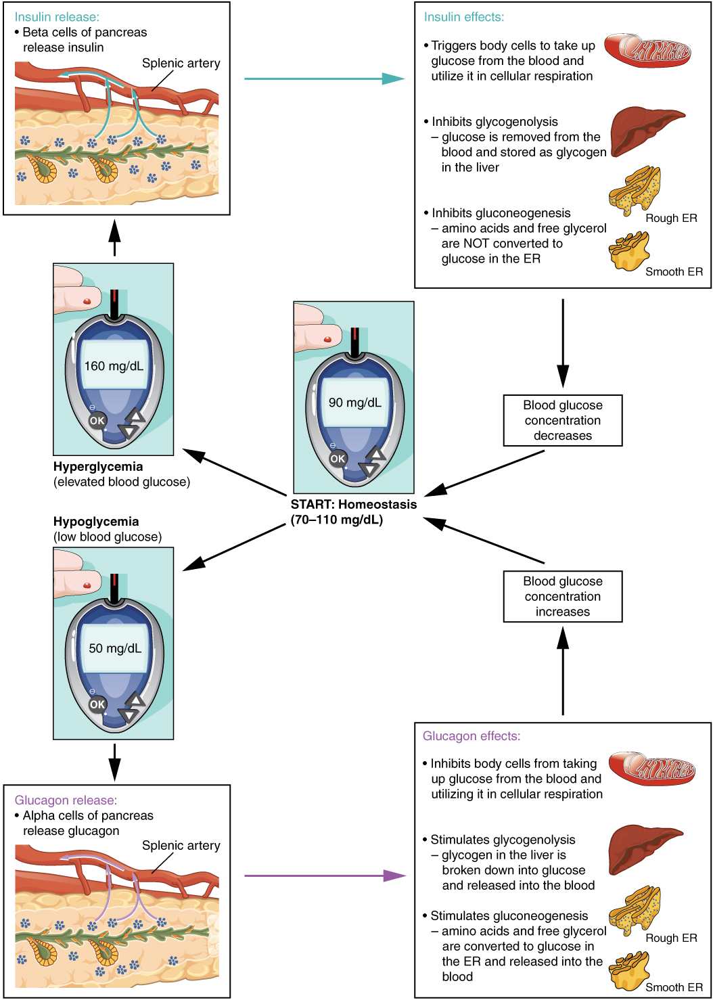
Metformin: the one to know cold
Type 2 diabetes is a problem of resistance — there is insulin, but the tissues have stopped listening, and the liver keeps pouring out glucose it does not need to. Metformin, a biguanide, is first-line therapy for almost every newly diagnosed adult, and it is worth knowing better than any other oral agent. It works in three ways: it decreases hepatic glucose production (its main effect), it decreases intestinal glucose absorption, and it increases the sensitivity of muscle and fat to the insulin already present.
Read that list again and notice what is absent: metformin does not squeeze more insulin out of the pancreas. That is why metformin alone does not cause hypoglycemia — a point tested relentlessly and, more importantly, a point that changes how you teach. It is also weight-neutral to modestly weight-reducing, which is a genuine advantage. Its everyday problem is the gut: nausea, diarrhea, cramping, metallic taste, largely solved by taking it with food, starting low, and using the extended-release form. Long-term use can cause vitamin B12 deficiency, so B12 is checked periodically — particularly if a patient develops anemia or neuropathy.
The rare but serious effect is lactic acidosis, which carries a boxed warning. It happens when metformin accumulates, so the risk sits with anything that impairs clearance or oxygenation: renal impairment (metformin is contraindicated at eGFR <30), acute heart failure, hypoxia, sepsis, dehydration, liver disease, and heavy alcohol use. Teach the signs, because they are vague and easy to dismiss: unusual muscle aches, deep or labored breathing, unusual sleepiness, abdominal pain, feeling generally unwell. This is also the reason metformin is held before and after iodinated contrast studies — contrast can injure the kidney, the kidney is the exit route, and the drug is typically stopped at the time of the study and resumed 48 hours later once renal function is confirmed acceptable.
The other classes, and the one alert that defines each
| Class | Prototype | Key effect | Nursing alert |
|---|---|---|---|
| Biguanide | metformin | ↓ hepatic glucose output; ↑ insulin sensitivity | No hypoglycemia alone. Take with food. Hold for contrast; avoid eGFR <30. Watch B12; teach lactic acidosis signs. |
| Sulfonylurea | glipizide, glimepiride, glyburide | Stimulate beta cells to release insulin | Hypoglycemia — the big one, especially glyburide in older adults. Take with breakfast. Weight gain; sulfa allergy caution; alcohol may cause flushing. |
| Meglitinide | repaglinide, nateglinide | Short, fast insulin release for the meal | Take with each meal — skip the meal, skip the dose. Hypoglycemia risk. |
| Thiazolidinedione | pioglitazone | ↑ insulin sensitivity at muscle/fat | Boxed warning: heart failure. Fluid retention — report weight gain, edema, dyspnea. Monitor LFTs. Slow onset (weeks). |
| DPP-4 inhibitor | sitagliptin | Prolongs the body's own incretins → glucose-dependent insulin release | Well tolerated, weight-neutral. Report severe persistent abdominal pain (pancreatitis); joint pain. |
| GLP-1 agonist | semaglutide, liraglutide, dulaglutide | Incretin mimic: ↑ insulin, ↓ glucagon, slows gastric emptying, ↓ appetite | Injectable (some oral). Nausea is dose-limiting; significant weight loss. Boxed warning: thyroid C-cell tumors — avoid with personal/family history of medullary thyroid cancer or MEN 2. Pancreatitis; delayed gastric emptying. |
| SGLT2 inhibitor | empagliflozin, dapagliflozin | Blocks renal glucose reabsorption → glucose out in the urine | Proven heart-failure and kidney benefit. Genital mycotic infections and UTIs — teach hygiene, encourage fluids. Volume depletion/orthostasis. Euglycemic DKA — ketoacidosis with a near-normal glucose. |
| Alpha-glucosidase inhibitor | acarbose, miglitol | Slows carbohydrate digestion → blunts the post-meal spike | Take with the first bite. Flatulence, diarrhea. If hypoglycemic on a combination, treat with glucose tablets, not table sugar or juice — sucrose cannot be broken down. |
A few threads run through that table. The agents that push the pancreas — sulfonylureas and meglitinides — are the oral drugs that cause hypoglycemia; the rest are much safer alone, though any of them can contribute when combined with insulin. Two classes now get prescribed as much for the heart and kidney as for the sugar: SGLT2 inhibitors and GLP-1 agonists both showed cardiovascular and renal benefit in outcome trials, which is why you will find them on the medication list of patients whose A1C is nearly at goal. And the euglycemic DKA of the SGLT2 drugs deserves a moment: because the drug dumps glucose into the urine, a patient can be in genuine ketoacidosis — nauseated, breathing deeply, acidotic — with a glucose of 180. A normal fingerstick does not rule it out.
Glucagon: the rescue
Glucagon is insulin's opposite number, the other hormone of the islets. When glucose falls, alpha cells release it, and it tells the liver to break down stored glycogen into glucose and release it into the blood. As a drug it is the rescue for severe hypoglycemia in a patient who cannot safely swallow and has no IV access — a seizing patient, an unresponsive patient, a child at home. It is given IM, subcutaneously, or intranasally, and it works in roughly 10–15 minutes.
Three things about glucagon must be taught to the family, not just charted. First, it works by emptying the liver's glycogen stores — so it fails or works poorly in a patient with no stores: chronic alcohol use, starvation, prolonged fasting, advanced liver disease. Those patients need IV dextrose. Second, vomiting is common after glucagon, so turn the patient onto their side before it takes effect to protect the airway. Third, the effect is temporary — the liver's stores are finite and the insulin that caused the low is often still working. As soon as the patient is awake and can swallow, they need oral carbohydrate, and they still need to be evaluated. Rescuing someone with glucagon and leaving is how a patient goes low a second time an hour later.
- Metformin is first-line, lowers hepatic glucose output, does not cause hypoglycemia alone, is taken with food, held for iodinated contrast, avoided at eGFR <30, and carries a lactic acidosis boxed warning; monitor B12.
- Sulfonylureas and meglitinides squeeze the pancreas — they are the oral agents that cause hypoglycemia; skip the meal, skip the meglitinide.
- Class-defining alerts: pioglitazone → heart failure; GLP-1 agonists → nausea, weight loss, thyroid C-cell boxed warning; SGLT2 inhibitors → genital infections and euglycemic DKA; acarbose → treat lows with glucose only.
- Glucagon mobilizes hepatic glycogen for severe hypoglycemia without IV access; it causes vomiting (turn the patient), is temporary (follow with oral carbs), and fails without glycogen stores.
The chapter in one breath
- Negative feedback is the master idea: hormone given from outside suppresses and atrophies the patient's own gland, which is why steroids are tapered and why a TSH tells you if a levothyroxine dose is right.
- Peptide hormones are digested — insulin can never be a pill; lipid-soluble hormones (thyroid, steroids) act slowly on genes and can be swallowed.
- Pituitary agents replace (somatropin, desmopressin) or suppress (octreotide, cabergoline); desmopressin's hazard is water intoxication and hyponatremia.
- Levothyroxine: empty stomach 30–60 min before breakfast, binders separated by 4 hours, TSH every 6–8 weeks, lifelong, start low in older and cardiac patients.
- Methimazole (first-line) and PTU (first trimester, thyroid storm, hepatotoxicity warning) both risk agranulocytosis — sore throat and fever means hold and draw a CBC.
- Corticosteroid adverse effects are cortisol overdone: hyperglycemia, infection with masked signs, osteoporosis, cushingoid changes, mood, ulcers, fluid retention — and abrupt withdrawal after >2–3 weeks causes adrenal crisis.
- Insulin is high-alert: know the peaks, because the peak is when the patient goes low; regular is the only IV insulin, NPH the only cloudy one, long-acting are never mixed, and hypoglycemia <70 gets the rule of 15 or, if unable to swallow, D50 or glucagon.
- Metformin leads oral therapy and causes no hypoglycemia alone; each other class is defined by one alert — sulfonylurea lows, pioglitazone heart failure, GLP-1 nausea and C-cell warning, SGLT2 euglycemic DKA, acarbose needing pure glucose to treat a low.
ReferenceWords worth knowing
A quick reference for the terms in this chapter — skim it now, or circle back whenever a word trips you up.
- Adrenal crisis
- Acute, life-threatening cortisol deficiency — hypotension, shock, weakness, vomiting, hypoglycemia — classically triggered by abruptly stopping a chronic steroid or by physiologic stress in a patient with a suppressed axis. Treated with IV hydrocortisone and fluids.
- Agranulocytosis
- A dangerous fall in neutrophils, leaving the patient defenseless against infection; the reason a sore throat, fever, or mouth ulcer on methimazole or PTU is an emergency, not a cold.
- Antidiuretic hormone (ADH, vasopressin)
- The posterior pituitary hormone that makes the kidney conserve water. Too little causes diabetes insipidus; too much causes SIADH.
- Basal insulin
- Long-acting, peakless insulin (glargine, detemir, degludec) that covers the body's constant background need between meals and overnight.
- Biguanide
- The class containing metformin; lowers hepatic glucose production and improves insulin sensitivity without stimulating the pancreas.
- Duration
- How long an insulin continues to lower glucose after it is given.
- Euglycemic DKA
- Diabetic ketoacidosis occurring with a near-normal blood glucose, seen with SGLT2 inhibitors because the drug excretes glucose in the urine; a normal fingerstick does not rule it out.
- Glucagon
- The pancreatic alpha-cell hormone that mobilizes hepatic glycogen to raise blood glucose; used as rescue for severe hypoglycemia when the patient cannot swallow.
- Glucocorticoid
- A steroid whose main actions are raising blood glucose and suppressing inflammation and immunity; cortisol is the natural one, prednisone and dexamethasone the common drugs.
- High-alert medication
- A drug that carries a heightened risk of significant patient harm when used in error — insulin is the archetype — and therefore requires extra safeguards such as an independent double-check.
- Hypoglycemia
- Blood glucose below 70 mg/dL; early adrenergic signs (shaky, sweaty, tachycardic, hungry) give way to neuroglycopenic ones (confusion, slurred speech, seizure, coma).
- Incretin
- A gut hormone (chiefly GLP-1) released with a meal that stimulates insulin, suppresses glucagon, and slows gastric emptying; mimicked by GLP-1 agonists and prolonged by DPP-4 inhibitors.
- Lactic acidosis
- The rare, serious metformin toxicity that occurs when the drug accumulates; suspect it with muscle aches, deep or labored breathing, unusual sleepiness, and abdominal pain.
- Lipohypertrophy
- Rubbery fatty thickening at an overused injection site that absorbs insulin unpredictably; prevented by rotating within an anatomic area.
- Mineralocorticoid
- A steroid whose main action is sodium and water retention with potassium loss; aldosterone is the natural one, fludrocortisone the drug.
- Narrow therapeutic index
- A drug whose effective dose and toxic dose sit uncomfortably close together, demanding precise dosing and monitoring — levothyroxine and insulin both qualify.
- Negative feedback
- The thermostat arrangement in which a hormone shuts off the signals that ordered it; the loop cannot tell exogenous hormone from the patient's own.
- Onset
- How long after administration an insulin begins to lower blood glucose.
- Peak
- When an insulin exerts its maximum effect — and therefore when hypoglycemia is most likely.
- Rule of 15
- Treatment of hypoglycemia in a patient who can swallow: 15 grams of fast-acting carbohydrate, wait 15 minutes, recheck, repeat as needed.
- Taper
- The gradual stepwise dose reduction used to end corticosteroid therapy, allowing the suppressed HPA axis and atrophied adrenal cortex to resume production.
- Thionamide
- The antithyroid class — methimazole and propylthiouracil — that blocks thyroid hormone synthesis; effects take weeks because stored hormone is unaffected.
Check yourself
Cardiovascular Drugs I
Blood has one job that is nearly impossible: stay liquid everywhere, and turn solid in exactly one place, at exactly the right moment. The drugs in this chapter live on both sides of that line — some thin the blood, some help it clot, some rebuild it, and some quietly lower the pressure that is grinding down a patient's arteries year after year. Almost every one of them is a high-alert medication, meaning an error does not produce a rash, it produces a hemorrhage or a stroke. This chapter walks the clotting cascade, the anticoagulants and antiplatelets that interrupt it, the antidotes that reverse them, the agents that rebuild blood, and the antihypertensives you will hang, titrate, hold, and teach more than any other class in your career.
By the end of this chapter you can
- Describe hemostasis — vasoconstriction, the platelet plug, and the clotting cascade — and locate where each anticoagulant acts.
- Compare heparin, low–molecular-weight heparin, warfarin, and the DOACs by mechanism, monitoring test, and antidote.
- Explain how aspirin and clopidogrel differ from anticoagulants, and why dual antiplatelet therapy must not be stopped casually.
- State the nursing priorities for alteplase, including time windows, contraindications, and bleeding surveillance.
- Describe erythropoiesis-stimulating agents, filgrastim, and the major blood products, with their key warnings and transfusion safety steps.
- Explain how cardiac output, systemic vascular resistance, baroreceptors, and the RAAS set arterial blood pressure.
- Identify the prototype, key effect, and signature adverse effect of each major antihypertensive class.
- Assess for orthostatic hypotension and build a realistic adherence plan with a patient who feels perfectly fine.
Section 1Hemostasis and anticoagulants
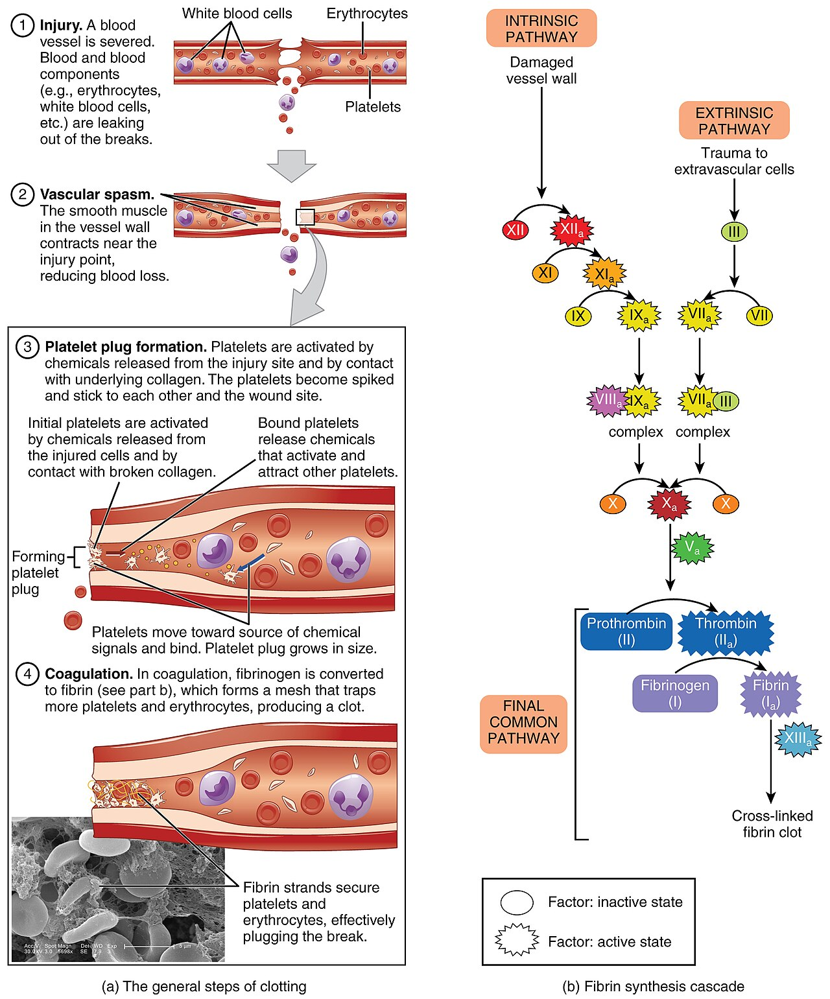
How the body builds a clot
Cut a vessel and three things happen in sequence. First, the vessel wall clamps down — vasoconstriction — narrowing the hole. Second, platelets stick to the exposed collagen, activate, change shape, and glue themselves to one another into a soft, temporary platelet plug. That plug will stop a paper cut, but it is fragile; a cough or a blood pressure spike blows it off. So third, the body reinforces it with the coagulation cascade, a chain of plasma proteins that ends by weaving a mesh of fibrin through the platelet plug and locking it in place.
The cascade has two on-ramps and one shared exit. The extrinsic pathway is the fast one: damaged tissue releases tissue factor, which activates factor VII. The intrinsic pathway is the slower one, triggered by contact with a damaged surface inside the vessel. Both funnel into the common pathway, where factor X becomes factor Xa, Xa converts prothrombin (factor II) into thrombin, and thrombin converts fibrinogen into fibrin. Thrombin is the engine of the whole system, and factor Xa is the gate just upstream of it — which is exactly why so many drugs aim at those two proteins.
Two lab tests map onto those two on-ramps, and you will read them for the rest of your career. PT/INR follows the extrinsic and common pathways — it is the warfarin test. aPTT follows the intrinsic and common pathways — it is the heparin test. A memory hook that works: PeT the extrinsic dog (PT → extrinsic → warfarin); the PTT is for the intrinsic tubing (aPTT → intrinsic → heparin).
One more idea before the drugs: nothing here dissolves a clot that already exists. Anticoagulants prevent clots from forming and from growing. They do not melt the clot in the patient's leg — the body's own fibrinolytic system does that slowly over weeks. When a patient asks, "Is this shot breaking up my clot?", the honest answer is that it is holding the line while the body cleans up.
Heparins — fast, injectable, reversible
Unfractionated heparin (UFH) works indirectly: it binds antithrombin and makes it roughly a thousand times better at inactivating thrombin and factor Xa. Because it does not touch the liver's factor production, it works within minutes — IV heparin is essentially instant, which is why it is the drug of choice when you need anticoagulation now and might need to shut it off just as fast. Its half-life is short (about 60–90 minutes), so stopping the drip is itself a partial reversal. Monitor with aPTT (goal typically 1.5–2.5 times control) or an anti-Xa level, per your facility's protocol and nomogram. The antidote is protamine sulfate.
The complication that defines heparin is heparin-induced thrombocytopenia (HIT). It is counterintuitive and it kills people: an antibody response, typically 5–10 days in, drops the platelet count by 50% or more and paradoxically causes clotting, not bleeding. A falling platelet count on heparin is never something to watch overnight. Heparin is stopped — all of it, including flushes and coated catheters — and a non-heparin anticoagulant such as argatroban is started. Baseline and serial platelet counts are a nursing responsibility, not a lab formality.
Low–molecular-weight heparin (LMWH) — prototype enoxaparin (Lovenox) — is heparin chopped into shorter chains that inhibit factor Xa much more than thrombin. That gives a predictable, weight-based subcutaneous dose, no routine aPTT, a longer half-life, and a lower HIT risk, which is what let anticoagulation move out of the hospital. Give it deep subcutaneously in the abdominal "love handle," at least 2 inches from the umbilicus, and do not expel the air bubble in the prefilled syringe — that bubble clears the drug from the needle track and reduces bruising. Do not aspirate and do not massage the site. LMWH is cleared renally, so it accumulates dangerously in kidney impairment; it also carries a boxed warning about spinal/epidural hematoma with neuraxial anesthesia or spinal puncture — a warning shared by fondaparinux and the DOACs, so timing around an epidural is always a team decision. Fondaparinux is a synthetic indirect factor Xa inhibitor given subcutaneously — like heparin it works through antithrombin, which is why it is not a DOAC and why protamine does not reverse it. It has essentially no reliable reversal agent, which is a real consideration when choosing it.
Warfarin — slow, oral, and endlessly interactive
Warfarin (Coumadin) blocks vitamin K epoxide reductase, the enzyme that recycles vitamin K in the liver. Without recycled vitamin K, the liver cannot finish building the vitamin K–dependent factors — II, VII, IX, and X (the "1972" factors), plus the natural anticoagulants protein C and protein S. Notice what that means: warfarin does nothing to the factors already circulating. It takes 3–5 days for the existing factors to decay before the patient is truly anticoagulated, which is why a patient with an acute clot is bridged with heparin or LMWH until the INR is therapeutic on two consecutive days.
Monitor with PT/INR. The usual goal is an INR of 2.0–3.0; a mechanical mitral valve or certain higher-risk indications may target 2.5–3.5. The antidote is vitamin K (phytonadione), and for serious or life-threatening bleeding, 4-factor prothrombin complex concentrate (PCC), which replaces the missing factors in minutes rather than hours. Fresh frozen plasma is an older alternative when PCC is unavailable.
Warfarin is the great interaction magnet — it is highly protein-bound and metabolized by CYP450, so antibiotics, amiodarone, azole antifungals, NSAIDs, herbals, alcohol, and even a change in appetite can move the INR. The teaching point students most often get backwards: patients are not told to avoid vitamin K foods. They are told to be consistent. A patient who eats a salad every day is easy to dose; a patient who eats no greens for a month and then goes on a kale kick will swing from bleeding to clotting. Warfarin is also a teratogen — contraindicated in pregnancy (heparin/LMWH do not cross the placenta and are used instead).
DOACs — the modern default
Direct oral anticoagulants skip the liver-synthesis detour and block a clotting protein directly. Dabigatran (Pradaxa) is a direct thrombin inhibitor; apixaban (Eliquis), rivaroxaban (Xarelto), and edoxaban are direct factor Xa inhibitors. The "-xaban" suffix literally names the target: Xa ban. They have a fast onset, few food interactions, fixed dosing, and no routine INR monitoring — which patients love and which quietly removes the safety net that regular lab visits used to provide.
Reversal exists now: idarucizumab (Praxbind) for dabigatran, and andexanet alfa (Andexxa) for apixaban and rivaroxaban. Nursing specifics matter here. Dabigatran must stay in its original bottle or blister — it absorbs moisture and degrades, and the opened bottle is discarded after 4 months; capsules are never opened or crushed (doing so hugely increases absorption). Rivaroxaban's treatment doses are taken with food for absorption. DOACs are renally cleared to varying degrees and need dose adjustment or avoidance in kidney disease, and they are not used for mechanical heart valves or moderate-to-severe mitral stenosis — those patients still get warfarin. Missing doses matters more than it does with warfarin, because the short half-life means an unanticoagulated patient within a day — which is exactly why every DOAC carries a boxed warning that premature discontinuation raises the risk of thrombotic events.
| Class | Prototype | Key effect | Monitor | Antidote | Nursing alert |
|---|---|---|---|---|---|
| Unfractionated heparin | heparin (IV/SC) | Potentiates antithrombin → blocks thrombin and Xa | aPTT or anti-Xa; platelets | Protamine sulfate | Watch for HIT — falling platelets means stop, don't wait. High-alert; independent double check. |
| LMWH | enoxaparin | Mostly anti-Xa; predictable SC dosing | None routine; anti-Xa if obese/renal/pregnant | Protamine (partial only) | Deep SC in abdomen, don't expel the bubble, don't massage. Renal dosing. Spinal hematoma warning. |
| Indirect Xa inhibitor | fondaparinux | Selective Xa inhibition via antithrombin (not a DOAC) | None routine; anti-Xa if needed | None reliable — protamine does not work | Avoid in significant renal impairment; no reversal is a real risk. Spinal hematoma warning. |
| Vitamin K antagonist | warfarin | Blocks synthesis of factors II, VII, IX, X + protein C/S | PT/INR (goal 2–3) | Vitamin K; 4-factor PCC for major bleed | Onset 3–5 days → bridge. Consistent vitamin K intake. Huge interaction list. Teratogenic. |
| Direct thrombin inhibitor | dabigatran | Blocks thrombin directly | None routine | Idarucizumab | Original bottle only; discard 4 months after opening; never crush or open capsules. |
| Direct Xa inhibitor | apixaban, rivaroxaban | Blocks factor Xa directly | None routine; renal function | Andexanet alfa | Rivaroxaban treatment doses with food. Not for mechanical valves. Missed doses matter fast. |
| Parenteral DTI (HIT) | argatroban | Direct thrombin inhibition, hepatic clearance | aPTT | None | The go-to when heparin is off the table for HIT. |
- Hemostasis = vasoconstriction → platelet plug → fibrin mesh; thrombin and factor Xa are the drug targets.
- aPTT → heparin (intrinsic); PT/INR → warfarin (extrinsic). Antidotes: protamine and vitamin K.
- Anticoagulants prevent clot formation and extension — they do not dissolve an existing clot.
- HIT causes thrombosis, not bleeding — a 50% platelet drop on heparin means stop heparin entirely.
- Warfarin needs 3–5 days and bridging; DOACs need no routine monitoring but need renal dosing and adherence.
Section 2Antiplatelets and thrombolytics

Two kinds of clot, two kinds of drug
Here is the distinction that makes this section click. Clots in fast-moving arterial blood are built mostly of platelets — they form on a ruptured atherosclerotic plaque and cause heart attacks and most strokes. Clots in slow-moving venous blood are built mostly of fibrin — they form in a leg vein or a fibrillating atrium and cause DVT, PE, and cardioembolic stroke. That is why a patient with a coronary stent goes home on aspirin and clopidogrel while a patient with atrial fibrillation goes home on apixaban. Different clot, different drug. Giving the wrong one is not a small miss.
Aspirin and the P2Y12 inhibitors
Aspirin irreversibly acetylates cyclooxygenase-1 (COX-1) inside the platelet, shutting off thromboxane A2, the signal platelets use to recruit and aggregate one another. "Irreversibly" is the whole story: a platelet has no nucleus, so it cannot make new COX. That single dose disables that platelet for its entire 7–10 day lifespan, and the effect only wears off as the marrow releases fresh platelets. Practical consequences: a low dose (81 mg) is enough for prevention, aspirin is typically held about 7 days before elective surgery, and a patient who took aspirin this morning is still "aspirinized" next week. In suspected MI, the patient chews a non-enteric-coated tablet — 162–325 mg, commonly four 81 mg tablets or one 325 mg tablet — because chewing gets it absorbed in minutes when minutes matter, and an enteric coating defeats the whole point.
Aspirin's costs are GI: dyspepsia, ulcers, and GI bleeding, plus tinnitus as an early sign of salicylate toxicity. It is contraindicated in children and teens with viral illness because of Reye syndrome, and it is avoided in aspirin-exacerbated respiratory disease (the asthma/nasal polyp/aspirin triad).
Clopidogrel (Plavix) blocks the platelet's P2Y12 ADP receptor — a different aggregation signal, which is why aspirin plus clopidogrel is genuinely additive and is called dual antiplatelet therapy (DAPT). Clopidogrel is a prodrug that must be activated by CYP2C19; patients who are poor metabolizers, or who take a strong CYP2C19 inhibitor like omeprazole, get less protection (pantoprazole is the safer PPI pairing). Prasugrel is more potent but is contraindicated after prior stroke/TIA because of intracranial bleeding; ticagrelor is reversible, dosed twice daily, and famously causes dyspnea that is benign but alarming to patients — and its aspirin partner must stay at a low dose. The glycoprotein IIb/IIIa inhibitors (eptifibatide, tirofiban) block the final common step of aggregation and are IV, cath-lab drugs.
The most important DAPT teaching in nursing: a patient with a recent coronary stent must not stop DAPT on their own. Stopping early can thrombose the stent and cause a massive MI. If a dentist or surgeon wants it held, that decision goes back to cardiology — it is not a bedside call, and it is not the patient's call.
Thrombolytics — the clot-busters
Thrombolytics are the one group here that actually dissolves a clot. Alteplase (tPA) and tenecteplase (TNK) are tissue plasminogen activators: they convert plasminogen into plasmin, the enzyme that digests fibrin. That is fantastic when the fibrin is blocking a cerebral artery and catastrophic when the fibrin is the scab holding a recent surgical site together — and the drug cannot tell the difference. Every contraindication follows from that one fact.
Time is the drug. For acute ischemic stroke, IV alteplase is given within 3 hours of last known well, extended to 4.5 hours in selected patients; a noncontrast head CT must first rule out hemorrhage, because giving a thrombolytic into a bleeding brain is fatal. For STEMI, thrombolysis is the fallback when primary PCI cannot be delivered in time, ideally within 30 minutes of arrival. Absolute contraindications cluster around bleeding you cannot compress: any prior intracranial hemorrhage, known cerebral vascular malformation or malignancy, ischemic stroke within 3 months, active internal bleeding, suspected aortic dissection, significant closed head trauma within 3 months.
Nursing during and after a thrombolytic is essentially a bleeding watch with a neuro exam stapled to it. Establish IV access, draw labs, and place any lines before the infusion. Then leave the patient alone: no arterial punctures, no IM injections, no indwelling catheter or NG placement unless truly necessary, hold pressure far longer than usual. Frequent neuro checks and blood pressure — BP is kept below the ordered threshold because hypertension on tPA drives hemorrhagic conversion. A sudden headache, vomiting, altered mental status, or a new neuro deficit means stop the infusion and call. Also keep bleeding precautions in mind: soft toothbrush, electric razor, no rectal temperatures or suppositories, fall precautions.
| Class | Prototype | Key effect | Nursing alert |
|---|---|---|---|
| COX-1 inhibitor | aspirin | Irreversibly blocks thromboxane A2 for the platelet's 7–10 day life | Chew 162–325 mg non-enteric for suspected MI. GI bleed, tinnitus. No aspirin in children with viral illness (Reye). Hold ~7 days pre-op. |
| P2Y12 inhibitor | clopidogrel | Blocks ADP-mediated aggregation; prodrug via CYP2C19 | Pair with pantoprazole, not omeprazole. Never stop DAPT after a stent without cardiology. |
| P2Y12 (others) | prasugrel, ticagrelor | More potent/reversible ADP blockade | Prasugrel contraindicated with prior stroke/TIA. Ticagrelor → dyspnea, BID dosing, low-dose ASA only. |
| GP IIb/IIIa inhibitor | eptifibatide, tirofiban | Blocks the final common aggregation step | IV, cath-lab; monitor platelets — can drop profoundly. |
| Other antiplatelet | cilostazol, dipyridamole | PDE inhibition → antiplatelet + vasodilation | Cilostazol for claudication; contraindicated in heart failure. Headache is common. |
| Thrombolytic | alteplase, tenecteplase | Plasminogen → plasmin → digests existing fibrin | Head CT first. Stroke window 3–4.5 h. Lines/labs before infusing. No punctures. Neuro + BP checks. Sudden headache = stop. |
- Arterial clots are platelet-rich (antiplatelets); venous clots are fibrin-rich (anticoagulants).
- Aspirin's COX-1 block is irreversible — one dose lasts that platelet's 7–10 day lifespan.
- Clopidogrel is a CYP2C19 prodrug; pair with pantoprazole, and never stop DAPT after a stent without cardiology.
- Alteplase actually dissolves fibrin: CT first, tight time window, lines before infusion, obsessive neuro and bleeding checks.
Section 3Hematopoietic agents and blood products
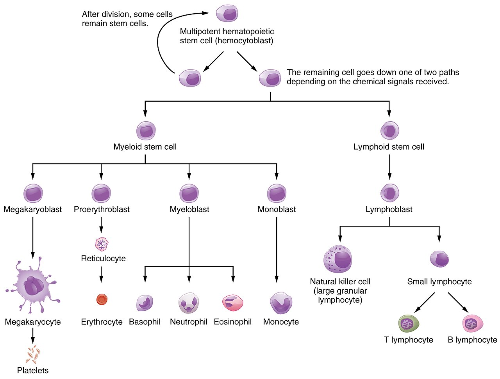
Pushing the marrow
Every blood cell descends from one hematopoietic stem cell in the bone marrow, and each branch of that family tree has its own growth-factor signal. Drug companies made recombinant copies of those signals, so we can now push a specific line: red cells with erythropoietin, neutrophils with filgrastim, platelets with romiplostim. These are not transfusions — they are instructions. They take days to weeks to work, and they only work if the marrow is capable of responding and has the raw materials on hand.
Erythropoiesis-stimulating agents (ESAs) — epoetin alfa (Epogen, Procrit) and the longer-acting darbepoetin alfa (Aranesp) — replace the erythropoietin a failing kidney can no longer make. They are used mainly in anemia of chronic kidney disease and in chemotherapy-induced anemia. Their boxed warning is one you must understand rather than memorize: pushing hemoglobin too high or too fast increases death, MI, stroke, venous thromboembolism, and tumor progression. Thicker blood clots. So we do not normalize hemoglobin — we use the lowest dose needed to avoid transfusion, and we hold or reduce for a hemoglobin above roughly 11 g/dL or a rise of more than about 1 g/dL in 2 weeks. ESAs also raise blood pressure, so BP is checked before dosing. And ESAs fail without iron: you can shout at the marrow all day, but if there is no iron, ferritin, or transferrin saturation to work with, no hemoglobin gets built. Assess iron stores first. Do not shake the vial — it is a protein and shaking denatures it.
Filgrastim (Neupogen) is granulocyte colony-stimulating factor (G-CSF); it drives the marrow to pump out neutrophils, shortening the neutropenic window after chemotherapy and reducing febrile neutropenia. Pegfilgrastim (Neulasta) is the pegylated once-per-cycle version. Timing is the classic exam point: give it at least 24 hours after the chemotherapy dose, not with it — chemotherapy kills dividing cells, and you have just told the marrow to divide. The signature adverse effect is bone pain, often deep in the sternum and pelvis, and it is a sign the drug is working; it usually responds to acetaminophen or an NSAID (if not contraindicated). Watch for the rare but serious splenic rupture (left upper quadrant or shoulder-tip pain) and ARDS. The nursing outcome is measured with the absolute neutrophil count (ANC), not the white count. Sargramostim (GM-CSF) is broader; romiplostim and eltrombopag are thrombopoietin agonists for immune thrombocytopenia.
Blood products — when you cannot wait for the marrow
Growth factors take days. When a patient is bleeding now, you give them the cells. Each product answers a different question, and matching the product to the deficit is the point. Packed red blood cells carry oxygen. Platelets plug. Fresh frozen plasma supplies all the clotting factors. Cryoprecipitate is the concentrated fibrinogen fraction. Albumin holds volume in the vascular space and carries no clotting or oxygen benefit at all.
Transfusion safety is one of the most protocolized things a nurse does, and for good reason: the deaths come from human identification errors, not from the biology. The bones of it, always following your facility's policy: verify the order and consent; type and crossmatch; a large-bore IV (18–20 g for red cells); only 0.9% normal saline through the Y-tubing, because dextrose lyses cells and lactated Ringer's contains calcium that can clot the line; a two-person verification at the bedside comparing the patient's ID band, the unit, and the paperwork; baseline vital signs. Then start slowly and stay with the patient for the first 15 minutes, because that is when a fatal acute hemolytic reaction announces itself. Recheck vitals per policy, complete each unit within 4 hours, and never add medication to blood.
Learn the reactions by their fingerprints. Acute hemolytic (ABO mismatch): within minutes — fever, chills, flank or back pain, dark urine, hypotension, a sense of impending doom. Febrile nonhemolytic: the most common — a fever rise with chills, from donor leukocytes. Allergic: hives and itching (mild) up to anaphylaxis (more likely in IgA deficiency). TACO (circulatory overload): dyspnea, crackles, JVD, hypertension — too much volume too fast, classically in the small, elderly, or heart-failure patient. TRALI: acute lung injury within 6 hours with dyspnea, hypoxia, and hypotension — and it is a leading cause of transfusion death. TACO and TRALI both drown the patient; the blood pressure is what separates them at the bedside.
The first action for any suspected reaction never changes: stop the transfusion, keep the IV open with normal saline using new tubing, assess and take vitals, and notify the provider and the blood bank. Send the unit, tubing, and the required samples back. Stopping first is not optional — every additional milliliter of an incompatible unit is more hemolysis.
| Product / agent | Prototype | Key effect | Nursing alert |
|---|---|---|---|
| ESA | epoetin alfa, darbepoetin | Stimulates red cell production (days–weeks) | Boxed warning: death, MI, stroke, VTE, tumor progression if Hgb pushed too high. Hold if Hgb > ~11. Check iron and BP. Don't shake the vial. |
| G-CSF | filgrastim, pegfilgrastim | Raises neutrophils → shortens neutropenia | Give ≥ 24 h after chemo. Bone pain = working. Follow the ANC. Splenic rupture is rare but real. |
| TPO agonist | romiplostim, eltrombopag | Raises platelet count in ITP | Monitor platelets; rebound thrombocytopenia on abrupt stop. |
| Packed RBCs | — | Restores oxygen-carrying capacity | Type & cross, NS only, two-person check, stay 15 min, finish in 4 h. |
| Platelets | — | Corrects thrombocytopenia / platelet dysfunction | Infuse briskly; never refrigerate; check post-transfusion count. |
| Fresh frozen plasma | — | Replaces all clotting factors | Must be thawed; ABO compatible; watch for TACO with volume. |
| Cryoprecipitate | — | Concentrated fibrinogen, VIII, XIII, vWF | Think fibrinogen replacement — DIC, massive transfusion. |
| Albumin | 5% / 25% | Pulls and holds fluid in the vascular space | No clotting factors, no oxygen carriage. Fluid overload risk — watch lungs. |
- Growth factors instruct the marrow and take days; blood products replace cells now.
- ESAs carry a boxed warning — don't normalize hemoglobin, check iron and BP, hold if Hgb > ~11 g/dL.
- Filgrastim goes at least 24 h after chemo; bone pain means it's working; follow the ANC.
- Transfusion: NS only, two-person ID check, stay 15 minutes, 4-hour limit, and stop first for any reaction.
- TACO = hypertensive overload; TRALI = hypotensive lung injury.
Section 4Blood pressure and antihypertensives
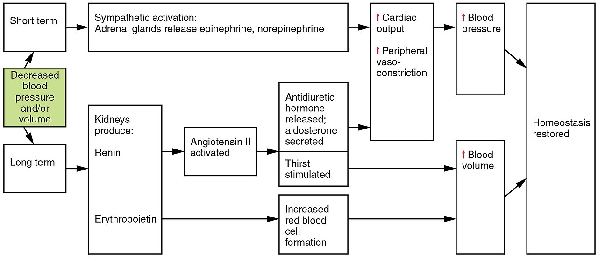
What actually sets the pressure
Every antihypertensive drug in existence works by moving one of two numbers in a single equation:
Blood pressure = cardiac output × systemic vascular resistance. And cardiac output is itself heart rate × stroke volume, where stroke volume depends on preload (the volume coming back), contractility (squeeze), and afterload (what the ventricle pushes against). So there are exactly four levers: drain the tank (diuretics reduce volume → preload), slow and soften the pump (beta-blockers reduce rate and contractility), widen the pipes (vasodilators, CCBs, ACE inhibitors, ARBs reduce resistance), or cut the hormonal signal telling the body to do all of the above (RAAS blockers). Once you see a drug's lever, you can predict both its benefit and its adverse effects without memorizing them separately.
The body defends its pressure with two systems you will fight constantly. The baroreceptor reflex is the fast one: stretch receptors in the carotid sinus and aortic arch sense a pressure drop within seconds and fire the sympathetic system — heart rate up, vessels constricted. This is the reflex that catches you when you stand up, and it is the reflex that produces reflex tachycardia when a vasodilator drops pressure abruptly. The RAAS is the slow one: the kidney senses low perfusion and releases renin, renin converts angiotensinogen to angiotensin I, ACE (largely in the lung) converts it to angiotensin II — a ferocious vasoconstrictor — and angiotensin II triggers aldosterone, which retains sodium and water, and ADH, which retains water. Pressure up. Blocking this loop at any point is the backbone of modern antihypertensive therapy.
Why bother? Because hypertension does its damage silently for decades and then presents as a stroke, a myocardial infarction, heart failure, kidney failure, or blindness. The patient feels nothing. That single fact — that the disease is invisible and the treatment has side effects the patient can feel — is the whole clinical problem, and it is the subject of the next section.
The classes, and what each one costs
Thiazide diuretics (hydrochlorothiazide, chlorthalidone) block the sodium-chloride symporter in the distal convoluted tubule; less sodium means less water, less volume, less preload, and over time some vasodilation. They are cheap, oral, first-line, and their price is metabolic: hypokalemia above all, plus hyponatremia, hypercalcemia, hyperuricemia (gout flares), hyperglycemia, and hyperlipidemia. Loop diuretics (furosemide) are stronger, work at the thick ascending limb of the loop of Henle, keep working in kidney impairment, and are the drug of volume overload and heart failure rather than routine hypertension; they waste potassium and calcium and can cause ototoxicity, especially when pushed IV too fast. Potassium-sparing agents (spironolactone, an aldosterone antagonist) hold potassium back — useful, and the reason spironolactone's main danger is hyperkalemia, along with gynecomastia. Give all diuretics in the morning so the patient is not up all night.
ACE inhibitors (lisinopril — the "-pril" family) block conversion of angiotensin I to II. Less angiotensin II means vasodilation and less aldosterone, and they are protective in heart failure, in diabetic kidney disease, and after MI. ACE also degrades bradykinin, so blocking it lets bradykinin build up — which is why 10–20% of patients get the maddening dry, hacking cough, and why a small number get angioedema, a swelling of the lips, tongue, and airway that is a true emergency. Because less aldosterone means less potassium excretion, expect hyperkalemia, and teach patients to avoid potassium-based salt substitutes. First-dose hypotension is real. ACE inhibitors are contraindicated in pregnancy — fetal renal injury and death.
ARBs (losartan — the "-sartan" family) block the angiotensin II receptor instead of the enzyme. Same downstream benefit, but bradykinin is untouched, so no cough — which is exactly why patients get switched from a "-pril" to a "-sartan." They still cause hyperkalemia and are still contraindicated in pregnancy. ACE inhibitors and ARBs are not combined.
Calcium channel blockers split into two personalities. The dihydropyridines (amlodipine — the "-dipine" family) act on vascular smooth muscle: pure vasodilation, so expect peripheral edema, flushing, headache, and reflex tachycardia. The non-dihydropyridines (diltiazem, verapamil) act on the heart too: they slow conduction and reduce contractility, so expect bradycardia, heart block, worsened heart failure, and verapamil's notorious constipation. Grapefruit juice raises levels of several of these.
Beta-blockers (metoprolol, atenolol — the "-olol" family) blunt sympathetic drive: heart rate down, contractility down, renin release down. Cardioselective agents (metoprolol, atenolol, bisoprolol) prefer beta-1 in the heart; nonselective agents (propranolol) also hit beta-2 and can bronchoconstrict in asthma. Watch for bradycardia, fatigue, and the sneaky one: beta-blockers mask the tachycardia and tremor of hypoglycemia, so a diabetic patient may lose their early warning (sweating still gets through). Never stop a beta-blocker abruptly — rebound tachycardia, hypertension, angina, even MI. Alpha-1 blockers (doxazosin — "-osin") relax vessels and the prostate, and cause a dramatic first-dose orthostatic syncope, so the first dose is given at bedtime. Central alpha-2 agonists (clonidine) reduce central sympathetic outflow, cause sedation and dry mouth, and cause severe rebound hypertension if stopped suddenly — patch and pill both. Direct vasodilators (hydralazine, minoxidil) relax arterioles directly and provoke reflex tachycardia and fluid retention, so they are usually paired with a beta-blocker and a diuretic. Sodium nitroprusside is the ICU emergency drip: near-instant, titrated to an arterial line, light-protected, and it can accumulate as cyanide/thiocyanate with prolonged high-dose use.
| Class | Prototype (suffix) | Key effect | Nursing alert |
|---|---|---|---|
| Thiazide diuretic | hydrochlorothiazide | ↓ Na/water → ↓ preload; first-line | Hypokalemia, hyponatremia, ↑ glucose, ↑ uric acid (gout). Dose in the morning. Sulfa cross-sensitivity. |
| Loop diuretic | furosemide | Potent volume removal; works in renal impairment | K and Ca loss; ototoxicity if pushed fast IV. Daily weight is the best measure. |
| K-sparing / aldosterone antagonist | spironolactone | Blocks aldosterone → keeps K | Hyperkalemia — no salt substitutes, no routine K supplement. Gynecomastia. |
| ACE inhibitor | lisinopril (-pril) | Blocks angiotensin I → II; renal + cardiac protection | Cough, angioedema (airway emergency), hyperkalemia, first-dose hypotension. Contraindicated in pregnancy. |
| ARB | losartan (-sartan) | Blocks the angiotensin II receptor | No cough — the swap for ACE intolerance. Still hyperkalemia; still contraindicated in pregnancy. |
| CCB — dihydropyridine | amlodipine (-dipine) | Vasodilation only | Peripheral edema, flushing, headache, reflex tachycardia. Grapefruit. |
| CCB — non-dihydropyridine | diltiazem, verapamil | Vasodilation + ↓ rate and contractility | Bradycardia, heart block, worsens HF. Verapamil → constipation. Hold for low HR per parameters. |
| Beta-blocker | metoprolol (-olol) | ↓ HR, ↓ contractility, ↓ renin | Bradycardia, fatigue; masks hypoglycemia; nonselective agents worsen asthma. Never stop abruptly. |
| Alpha-1 blocker | doxazosin (-osin) | Vasodilation; relaxes prostate | First-dose syncope — give at bedtime, rise slowly. |
| Central alpha-2 agonist | clonidine | ↓ Central sympathetic outflow | Sedation, dry mouth; severe rebound hypertension if stopped abruptly. Rotate patch sites. |
| Direct vasodilator | hydralazine, minoxidil | Direct arteriolar relaxation | Reflex tachycardia + fluid retention → usually paired with a beta-blocker and a diuretic. |
| Nitrovasodilator (IV) | nitroprusside | Immediate, titratable arterial + venous dilation | ICU only; arterial line; protect from light; cyanide/thiocyanate toxicity with prolonged high dose. |
- BP = CO × SVR; every antihypertensive drains volume, slows the pump, widens the pipes, or blocks the RAAS.
- The baroreceptor reflex defends pressure in seconds (reflex tachycardia); the RAAS defends it over hours.
- ACE inhibitors → cough, angioedema, hyperkalemia; ARBs → same benefit, no cough; both are contraindicated in pregnancy.
- Dihydropyridine CCBs → edema; non-dihydropyridines → bradycardia and constipation.
- Beta-blockers mask hypoglycemia and must never be stopped abruptly; clonidine causes rebound hypertension.
Section 5Antihypertensive nursing care

The number you write down is a nursing intervention
An antihypertensive is titrated against a number that you produce. If the number is wrong, the dose is wrong — and a bad technique can move a reading by 10 to 30 mmHg, which is more than most single drugs do. So the technique is not a formality:
- Cuff size is the biggest error. A cuff that is too small reads falsely high; too large reads falsely low. The bladder should encircle about 80% of the arm.
- Patient seated 5 minutes, back supported, feet flat on the floor (crossed legs raise the reading), arm bare and supported at heart level (a dangling arm reads high), and no talking during the reading.
- No caffeine, smoking, or exercise for 30 minutes; bladder empty.
- Take two readings a minute or more apart and average them. Check both arms at the initial visit and use the higher arm thereafter.
- Know your hold parameters before you pour the pill — and if there is no parameter for a drug that can bottom out a pressure, that is a question worth asking, not assuming.
Around the drug itself, follow the class-specific labs and vitals: potassium and renal function for ACE inhibitors, ARBs, spironolactone, and diuretics; apical pulse for a full minute before a beta-blocker or a non-dihydropyridine CCB (commonly hold for a pulse under 60 or per order); daily weight at the same time on the same scale in the same clothing for anyone on a diuretic — because a 1 kg change is about a liter of fluid and weight beats a lung exam for catching it early. Assess ankles for the amlodipine patient, ask about cough for the lisinopril patient, and look at the tongue and lips of anyone new on an ACE inhibitor.
Orthostatic hypotension: the side effect that breaks hips
Nearly every drug in the last section can drop a patient's pressure when they stand up. Orthostatic hypotension is a fall of ≥ 20 mmHg systolic or ≥ 10 mmHg diastolic within 3 minutes of standing, and it is not an academic definition — it is the mechanism behind the 3 a.m. fall, the fractured hip, the head bleed on the patient who is also anticoagulated. The physiology is simple: standing dumps about half a liter of blood into the legs, and the baroreceptor reflex normally corrects it in seconds. Beta-blockers blunt the heart-rate half of that reflex, alpha-blockers blunt the vasoconstriction half, and diuretics remove the volume the reflex needs to work with. The patient's own compensation has been pharmacologically disabled.
Measure it properly: BP and pulse supine after a few minutes of rest, then sitting, then standing at 1 minute and again at 3 minutes — and stay with the patient with a gait belt or a chair behind them, because the point of the test is to reproduce a near-faint. Ask about the symptom, not just the number: lightheadedness, gray or tunnel vision, a "wave" on standing.
What you teach is what protects them. Change positions slowly and use the three-stage rise: lie, then sit, then dangle the legs for a full minute, then stand with support. Pump the ankles before rising. Rise from a hot shower or a big meal with extra care — both pool blood away from the brain. First doses and dose increases — especially alpha-blockers — go at bedtime. Call for help before getting up at night; put the light on. Adequate fluid unless restricted, no alcohol on top of the drug, and compression stockings if ordered. And keep the environment honest: bed low, call light in reach, path clear, non-skid footwear.
Adherence: the hardest part of the whole chapter
Roughly half of patients on long-term antihypertensives are not taking them as prescribed a year in, and it is not because they are careless. Look at it from their side: the disease has no symptoms, and the drug has plenty. Before you were treated you felt fine; now you are dizzy, tired, coughing, urinating all day, swollen at the ankles, and possibly having sexual side effects nobody warned you about — all to prevent a stroke you cannot imagine having. Stopping is a rational response to that math. Your job is to change the math, not to lecture.
What actually helps: name the trade honestly ("this doesn't make you feel better — it keeps you from having a stroke"); predict the side effects out loud so that when they arrive they feel expected rather than like a betrayal; teach that a side effect is a reason to call, not to quit (a cough becomes an ARB; edema becomes a lower dose); pair the dose with something they already do every day; hand them a home BP log, because a patient with numbers becomes a participant instead of a subject; simplify to once-daily or combination pills where possible; and ask about cost, plainly, because the most common reason a prescription is not taken is that it was never filled.
And teach the non-negotiables. Never stop a beta-blocker or clonidine abruptly — rebound hypertension, tachycardia, angina, MI, and with clonidine a hypertensive crisis. No potassium salt substitutes on an ACE inhibitor, ARB, or spironolactone. Beware over-the-counter NSAIDs (they blunt antihypertensives and stress the kidney) and decongestants like pseudoephedrine (they raise pressure). Grapefruit juice with certain CCBs. Get up slowly, always. Report a persistent cough, any facial or tongue swelling (go to the ED), a pulse under 60, weight gain over 2–3 lb in a day or 5 lb in a week, or fainting. If pregnancy is possible, discuss it before starting an ACE inhibitor or an ARB. And do not stop taking it because the numbers look good — the numbers look good because of it.
| If the patient is on… | Assess / monitor | Teach |
|---|---|---|
| Thiazide or loop diuretic | K, Na, renal function, daily weight, I&O, orthostatics | Take in the morning; potassium-rich foods; report muscle cramps, weakness, palpitations; rise slowly. |
| Spironolactone | K (hyperkalemia), renal function | No salt substitutes or K supplements; report breast tenderness. |
| ACE inhibitor / ARB | K, creatinine, BP, cough, lips & tongue | Cough → call (switchable). Swelling of face/tongue → ED now. No salt substitutes. Not in pregnancy. |
| Amlodipine (dihydropyridine) | Ankle/pedal edema, BP, headache | Elevate legs; report worsening swelling; avoid grapefruit juice. |
| Diltiazem / verapamil | Apical pulse 1 full minute, BP, HF signs, bowel pattern | Report pulse < 60 or dizziness; fiber and fluid for constipation. |
| Beta-blocker | Apical pulse, BP, glucose in diabetics, wheeze | Never stop abruptly. Hypoglycemia may feel different — check the meter, don't trust the tremor. |
| Doxazosin / clonidine | Orthostatic BP, sedation, fall risk | First dose at bedtime; dangle before standing; never stop clonidine abruptly; rotate patch sites. |
- An accurate BP is an intervention: right cuff, 5 minutes of rest, feet flat, arm at heart level, no talking, average two readings.
- Orthostatic hypotension = ≥ 20 systolic or ≥ 10 diastolic drop within 3 minutes of standing — measure supine, sitting, standing at 1 and 3 min, and guard the patient.
- Teach the slow three-stage rise with a full minute of dangling; first doses of alpha-blockers at bedtime.
- Non-adherence is rational when the disease is silent and the drug is not — predict side effects, teach "call, don't quit," and use a home BP log.
- Never abruptly stop a beta-blocker or clonidine; avoid potassium salt substitutes, NSAIDs, and decongestants.
The chapter in one breath
- Hemostasis is vasoconstriction → platelet plug → fibrin mesh; nearly every drug here aims at thrombin or factor Xa, and nearly every one is high-alert.
- aPTT tracks heparin (antidote protamine); PT/INR tracks warfarin (antidote vitamin K, plus PCC for major bleeding); DOACs need no routine monitoring but do need renal dosing, adherence, and their own reversal agents.
- A falling platelet count on heparin is HIT — it clots rather than bleeds, and heparin comes off completely.
- Arterial clots are platelet-rich (aspirin, clopidogrel, DAPT after a stent — never stopped casually); venous clots are fibrin-rich (anticoagulants); only thrombolytics dissolve fibrin already formed, on a brutal clock and with a long list of contraindications.
- ESAs and filgrastim instruct the marrow over days — don't normalize hemoglobin, check iron and BP, and give G-CSF at least 24 hours after chemo; blood products replace cells now, under NS-only, two-person-check, stay-15-minutes, 4-hour rules.
- Any suspected transfusion reaction: stop the transfusion first. TACO is hypertensive overload; TRALI is hypotensive lung injury.
- BP = CO × SVR; drugs drain the tank, slow the pump, widen the pipes, or block the RAAS — and the suffix (-pril, -sartan, -dipine, -olol, -osin) tells you the class, the adverse effect, and the teaching.
- The nursing work of hypertension is an accurate cuff, an orthostatic assessment, and an honest adherence conversation with a patient whose disease has never once made them feel sick.
ReferenceWords worth knowing
A quick reference for the terms in this chapter — skim it now, or circle back whenever a word trips you up.
- Absolute neutrophil count (ANC)
- The number of infection-fighting neutrophils in circulation; the value that tells you whether filgrastim is working and whether a patient is neutropenic.
- Afterload
- The resistance the ventricle must push against to eject blood; lowered by vasodilators, CCBs, ACE inhibitors, and ARBs.
- Angioedema
- Rapid swelling of the lips, tongue, face, or airway; an airway emergency and an absolute reason to stop an ACE inhibitor permanently.
- Anticoagulant
- A drug that prevents fibrin clots from forming or extending — it does not dissolve an existing clot.
- Antiplatelet
- A drug that keeps platelets from aggregating; the treatment for platelet-rich arterial clots.
- aPTT
- Activated partial thromboplastin time — the test that follows the intrinsic and common pathways, used to monitor unfractionated heparin.
- Baroreceptor reflex
- The second-to-second reflex from the carotid sinus and aortic arch that restores blood pressure by raising heart rate and constricting vessels; blunted by many antihypertensives.
- Cardiac output
- Heart rate × stroke volume; one of the two factors that, with systemic vascular resistance, determines blood pressure.
- DAPT (dual antiplatelet therapy)
- Aspirin plus a P2Y12 inhibitor, standard after coronary stenting; stopping it early risks stent thrombosis.
- DOAC
- Direct oral anticoagulant — dabigatran (thrombin) or the "-xaban" agents (factor Xa); no routine monitoring, renally dosed, with specific reversal agents.
- Fibrinolysis
- Breakdown of a fibrin clot by plasmin; the process thrombolytics accelerate.
- Hemostasis
- The body's stepwise stopping of bleeding: vasoconstriction, platelet plug, then a reinforcing fibrin mesh.
- Heparin-induced thrombocytopenia (HIT)
- An immune reaction to heparin, usually 5–10 days in, that drops platelets by ≥ 50% and paradoxically causes thrombosis; all heparin must stop.
- High-alert medication
- A drug that carries a heightened risk of significant harm when used in error — anticoagulants, thrombolytics, and IV antihypertensives all qualify.
- INR
- International normalized ratio — the standardized PT used to dose warfarin; usual target 2.0–3.0.
- Orthostatic hypotension
- A drop of ≥ 20 mmHg systolic or ≥ 10 mmHg diastolic within 3 minutes of standing; the mechanism behind medication-related falls.
- Preload
- The volume of blood returning to and stretching the ventricle before contraction; reduced by diuretics and venodilators.
- RAAS
- Renin–angiotensin–aldosterone system — the hormonal loop (renin → angiotensin II → aldosterone) that raises blood pressure and that most first-line antihypertensives interrupt.
- Systemic vascular resistance (SVR)
- The resistance of the arterioles to blood flow; the "width of the pipes" half of the blood pressure equation.
- TACO
- Transfusion-associated circulatory overload — dyspnea, crackles, JVD, and hypertension from too much volume too fast.
- Thrombolytic
- A drug such as alteplase that converts plasminogen to plasmin and dissolves fibrin already formed; the highest-bleeding-risk drug class in this chapter.
- TRALI
- Transfusion-related acute lung injury — dyspnea and hypoxia with hypotension within 6 hours of transfusion; a leading cause of transfusion death.
Check yourself
Cardiovascular Drugs II
The first cardiovascular chapter was about pressure and volume. This one is about the heart muscle itself — the plaque that starves it, the pain that warns you, the pump that fails, and the electricity that keeps it honest. These are the drugs that live on your high-alert list: digoxin with its razor-thin therapeutic window, nitroglycerin that can drop a blood pressure through the floor, amiodarone that quietly scars a lung over months, and statins that most of your patients will take for the rest of their lives. What makes a nurse valuable here is not memorizing every drug — it is knowing which number to check before you push, which symptom means stop, and which sentence, said clearly at discharge, keeps a patient out of the emergency department. That is what this chapter teaches.
By the end of this chapter you can
- Explain how statins lower LDL, and describe the muscle and liver monitoring a nurse performs.
- Compare the non-statin lipid agents — ezetimibe, PCSK9 inhibitors, fibrates, niacin, bile acid sequestrants — and their signature adverse effects.
- Teach a patient to use sublingual nitroglycerin safely, including storage, dosing intervals, and when to call 911.
- Identify the drugs in the acute coronary syndrome bundle and the nursing priorities for each.
- Describe the four pillars of heart failure therapy and the monitoring each one demands.
- Recognize digoxin toxicity early, name its antidote, and explain why potassium is the drug's hidden partner.
- Classify antiarrhythmics by Vaughan Williams class and state what each class does to the cardiac action potential.
- Perform and document an apical pulse, and state the parameters that mean hold the dose and call.
Section 1Dyslipidemia drugs
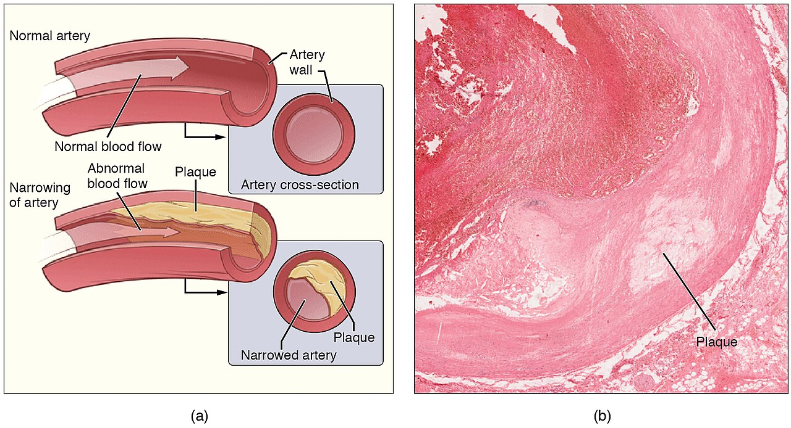
Why we chase a number the patient cannot feel
Dyslipidemia is the quietest diagnosis in the chart. Nobody feels a high LDL. There is no pain, no shortness of breath, no reason to take a pill every night for thirty years — and that is exactly the nursing problem. Low-density lipoprotein (LDL) is the particle that carries cholesterol into the arterial wall, where it oxidizes, recruits inflammatory cells, and builds the plaque you saw in the figure above. High-density lipoprotein (HDL) carries cholesterol back out toward the liver. Triglycerides are a separate problem: at very high levels (roughly above 500 mg/dL) they stop being a cardiac issue and become a pancreatitis issue.
Modern lipid management is not really about hitting a magic number. It is about risk: how likely is this person to have a heart attack or stroke in the next ten years, and how hard should we push? A patient who has already had a myocardial infarction gets high-intensity therapy without much debate. A healthy 45-year-old with a borderline panel gets a conversation. Your job is to make sure that conversation includes the truth: this drug does nothing you will notice, and it works only if you keep taking it.
Statins: the backbone
The HMG-CoA reductase inhibitors — every drug ending in -statin — block the rate-limiting enzyme the liver uses to make cholesterol. Starved of homemade cholesterol, the liver cell puts more LDL receptors on its surface and pulls LDL out of the blood. That is the whole mechanism, and it is remarkably effective: atorvastatin 40–80 mg or rosuvastatin 20–40 mg (the two high-intensity regimens) drop LDL by roughly half. Statins also stabilize existing plaque and damp vascular inflammation, which is why they are started in the hospital during an acute coronary syndrome even when the LDL looks acceptable.
Timing depends on half-life, and students get this backwards constantly. The liver makes most of its cholesterol overnight, so the short-acting statins — simvastatin, lovastatin, fluvastatin — are given in the evening. The long-acting ones — atorvastatin, rosuvastatin, pitavastatin — have half-lives long enough that they can be taken at any consistent hour, which is a gift for adherence.
Statins are metabolized largely by CYP3A4, which is why grapefruit juice matters. Grapefruit inhibits intestinal CYP3A4 and raises drug levels — the effect is real for simvastatin and lovastatin (avoid entirely), modest for atorvastatin (an occasional glass is usually tolerated), and essentially absent for pravastatin, rosuvastatin, and pitavastatin. If a patient loves grapefruit and refuses to give it up, that is a reason to switch statins, not a reason to lose the patient.
Myopathy: the thing you are actually watching for
Muscle complaints are the reason statins get stopped. They sit on a spectrum, and knowing where a patient falls on it is a genuinely useful nursing skill.
Myalgia is muscle aching or weakness with a normal creatine kinase — common, uncomfortable, not dangerous. Myopathy or myositis means symptoms plus a rising creatine kinase (CK). Rhabdomyolysis is the emergency: CK typically more than ten times the upper limit of normal, muscle protein spilling into the blood, and myoglobin clogging the renal tubules into acute kidney injury. The teaching sentence is short and specific: "If your muscles hurt badly, feel weak, and your urine turns the color of cola or tea, stop the drug and call today." Dark urine is the line between an annoyance and a hospitalization.
What do you actually monitor? Less than students expect. Check a lipid panel at baseline and again about 4–12 weeks after starting or changing a dose, then periodically. Check liver enzymes (ALT) at baseline — routine repeat LFTs are no longer recommended, only checked if symptoms of hepatotoxicity appear. Do not draw a routine CK either; get a baseline CK only in high-risk patients (older adults, kidney disease, hypothyroidism, multiple interacting drugs), and draw one whenever a patient reports muscle symptoms. Risk climbs with age, small body frame, renal impairment, untreated hypothyroidism, heavy alcohol use, and CYP3A4 inhibitors like clarithromycin, some azole antifungals, and certain HIV protease inhibitors.
Statins are also traditionally stopped in pregnancy and during breastfeeding. The labeling has been softened to allow individualized use in a narrow group of very-high-risk patients, but the practical bedside expectation remains: a patient who becomes pregnant or is planning pregnancy stops the statin and calls the prescriber. Always ask about pregnancy plans in patients of childbearing potential before discharge.
When a statin is not enough
Statins do the heavy lifting; everything else is an add-on for patients who cannot reach goal, cannot tolerate statins, or have a triglyceride problem instead of an LDL problem.
| Class | Prototype | Key effect | Nursing alert |
|---|---|---|---|
| HMG-CoA reductase inhibitor (statin) | atorvastatin, rosuvastatin | LDL down 30–55%; stabilizes plaque | Muscle pain plus dark urine = rhabdomyolysis. Draw CK if symptoms. Short-acting statins at night; avoid grapefruit with simvastatin/lovastatin |
| Cholesterol absorption inhibitor | ezetimibe | Blocks NPC1L1 in gut; adds another 15–25% LDL drop | Very well tolerated; myopathy risk rises slightly when paired with a statin. Give 2 h before or 4 h after a bile acid sequestrant |
| PCSK9 inhibitor (monoclonal antibody) | alirocumab, evolocumab | Frees LDL receptors for recycling; LDL down another ~50% | Subcutaneous every 2–4 weeks. Injection-site reactions; teach self-injection and refrigerated storage (warm to room temperature first) |
| Small interfering RNA | inclisiran | Silences PCSK9 synthesis in the liver | Subcutaneous, given in the office — then only twice a year. A powerful option for the nonadherent patient |
| ATP-citrate lyase inhibitor | bempedoic acid | LDL down ~15–25%; prodrug activated in liver, not muscle | Useful in statin intolerance. Watch uric acid (gout flares) and rare tendon rupture |
| Fibrate | fenofibrate, gemfibrozil | Best triglyceride reduction (~40–50%); modest HDL rise | Never combine gemfibrozil with a statin — severe myopathy. Fenofibrate is the safer partner. Gallstones; monitor renal function |
| Nicotinic acid (niacin) | niacin (extended release) | Raises HDL, lowers TG and LDL | Flushing is near-universal: aspirin 325 mg 30 min before, take with food, avoid alcohol and hot drinks. Also hyperglycemia, hyperuricemia, hepatotoxicity |
| Bile acid sequestrant | cholestyramine, colesevelam | Binds bile acids in the gut; liver burns cholesterol to replace them | Constipation, bloating. Binds other drugs — give other medications 1 h before or 4 h after. Can raise triglycerides |
| Omega-3 fatty acid | icosapent ethyl | Lowers triglycerides; reduces events in select patients | Bleeding risk with anticoagulants; small increase in atrial fibrillation. Fishy aftertaste and burping drive nonadherence |
- Statins inhibit HMG-CoA reductase, forcing the liver to pull LDL out of the blood; they also stabilize plaque.
- Give short-acting statins (simvastatin, lovastatin) in the evening; atorvastatin and rosuvastatin any consistent time.
- Monitor lipids at baseline and 4–12 weeks; ALT at baseline only; draw CK when muscle symptoms appear, not routinely.
- Muscle pain plus cola-colored urine equals rhabdomyolysis — hold the drug and report the same day.
Section 2Angina and acute coronary syndrome

Supply versus demand, and nothing else
Every antianginal drug ever invented does one of two things: it increases the oxygen supply reaching the myocardium, or it lowers the myocardial oxygen demand. That is the entire logic of this section, and if you hold onto it, the drug list organizes itself.
Demand rises with heart rate, contractility, and wall tension (which reflects preload and afterload). So a drug that slows the heart, softens the squeeze, or drains the ventricle before it contracts will lower demand. Supply depends on coronary flow, which happens mostly during diastole — another reason slowing the heart helps, since a slower heart spends proportionally more time in diastole.
Stable angina is predictable: it comes on with exertion or emotion and goes away with rest or nitroglycerin, because a fixed plaque cannot pass enough blood when demand climbs. Unstable angina is new, worsening, or occurs at rest — the plaque has ruptured and a clot is forming. Vasospastic (Prinzmetal) angina is coronary spasm in an artery that may be nearly normal, classically at rest and in the early morning. Acute coronary syndrome (ACS) is the umbrella over unstable angina, NSTEMI, and STEMI — and the distinction between them lives in the troponin and the ST segment, not in how loudly the patient complains.
Nitrates: the drug your patient carries in a pocket
Nitrates are converted to nitric oxide in vascular smooth muscle, which relaxes it. At usual doses the effect is mostly venodilation: blood pools in the veins, less returns to the heart, preload falls, the ventricle wall is under less tension, and demand drops. At higher doses arteries dilate too, lowering afterload, and the coronary arteries themselves relax — which is why nitrates are excellent for vasospastic angina.
Sublingual nitroglycerin teaching is one of the most testable and most genuinely life-saving conversations you will have. Sit or lie down first — this drug drops blood pressure and people faint standing in kitchens. Place one 0.4 mg tablet under the tongue (or one spray onto or under the tongue) and let it dissolve; do not swallow it, do not chew it. A tingling or burning sensation may occur but its absence does not mean the tablet is dead. If the pain is unimproved or worsening 5 minutes after the first dose, call 911 — then continue up to a total of three doses, 5 minutes apart, while help is on the way. That order matters: the old teaching of "three doses, then call" delayed too many people.
Storage sinks a lot of prescriptions. Tablets belong in their original amber glass bottle, tightly capped, away from heat, light, and moisture — not in a pill organizer, not in a pocket against body heat, not in a steamy bathroom cabinet or a hot car. Once the bottle is opened, replace it about every 6 months. The metered spray is more stable and often the better choice for someone who rarely uses it. Expect headache — it is the most common effect, it means the drug is working, and acetaminophen usually handles it. Warn about dizziness and orthostasis.
Other nitrate forms have their own traps. Transdermal patches and long-acting isosorbide mononitrate/dinitrate cause tolerance if given around the clock, so the regimen builds in a nitrate-free interval of 10–12 hours — usually the patch goes on in the morning and comes off in the evening. Remove the old patch before applying a new one, rotate sites, and wear gloves so you do not dose yourself with a headache. Intravenous nitroglycerin is titrated to pain and blood pressure and traditionally requires non-PVC (polyethylene or glass) tubing, because the drug adsorbs to standard PVC.
The rest of the antianginal cabinet
Beta blockers (metoprolol, atenolol, bisoprolol) are first-line for chronic stable angina and reduce mortality after MI: they cut heart rate and contractility, so demand falls and diastolic filling time lengthens. Hold and reassess for bradycardia, hypotension, or acute decompensated heart failure, and never stop them abruptly — rebound tachycardia and angina can trigger an infarct. One classic exception: avoid beta blockers in cocaine-associated chest pain, where unopposed alpha stimulation can worsen coronary spasm; benzodiazepines and nitrates are used instead.
Calcium channel blockers dilate coronary and systemic arteries. Amlodipine and other dihydropyridines mainly vasodilate (ankle edema, reflex tachycardia, flushing). Verapamil and diltiazem also slow the heart and reduce contractility, which makes them useful when a beta blocker is not tolerated — but combining them with a beta blocker risks serious bradycardia and heart block. CCBs are the drugs of choice for vasospastic angina. Ranolazine is a later-line option for chronic angina that inhibits the late sodium current; it barely touches heart rate or blood pressure, which is its selling point, but it prolongs the QT interval and is never used for an acute attack.
The ACS bundle
When a patient with crushing chest pain hits the door, a familiar set of drugs goes in fast. Older courses teach the mnemonic MONA (morphine, oxygen, nitrates, aspirin) — keep the letters, but update the practice: morphine has been deprioritized (it may blunt antiplatelet absorption and can mask ongoing ischemia), and oxygen is given only if the SpO2 is below about 90%, because routine oxygen in a non-hypoxic patient offers no benefit and may cause harm. Aspirin remains the one drug that saves lives in the first minutes.
| Role | Prototype | Key effect | Nursing alert |
|---|---|---|---|
| Antiplatelet (immediate) | aspirin 162–325 mg | Irreversible COX-1 blockade; stops thromboxane A2 | Chewed, not swallowed — faster absorption. Non-enteric-coated. Give first, ask questions second |
| P2Y12 inhibitor | clopidogrel, ticagrelor, prasugrel | Blocks ADP-mediated platelet aggregation | Ticagrelor causes dyspnea (not heart failure) and requires aspirin ≤100 mg/day. Prasugrel is contraindicated with prior stroke/TIA. Hold before CABG |
| Anticoagulant | heparin, enoxaparin, bivalirudin | Stops clot propagation | High-alert. Monitor aPTT (heparin), platelets for HIT, bleeding at all sites. Antidote for heparin: protamine sulfate |
| Nitrate | nitroglycerin SL, then IV | Lowers preload; relieves pain and spasm | Ask about PDE5 inhibitors. Hold for SBP <90 or RV infarction. Continuous BP monitoring on the drip |
| Beta blocker | metoprolol | Lowers demand; reduces mortality and reinfarction | Start within 24 h if stable. Hold for bradycardia, hypotension, decompensated HF, cocaine use |
| High-intensity statin | atorvastatin 80 mg | Stabilizes plaque; reduces recurrent events | Started in hospital regardless of the LDL number. Teach that this is a lifetime drug |
| ACE inhibitor | lisinopril | Limits ventricular remodeling after infarct | Start within 24 h if stable, especially with reduced EF. Watch first-dose hypotension, K+, creatinine, cough |
| Fibrinolytic | alteplase, tenecteplase | Dissolves the clot when PCI is unavailable | Screen hard for bleeding contraindications. Door-to-needle ≤30 min; PCI door-to-balloon ≤90 min |
| Analgesia (selective) | morphine | Pain and anxiety relief; mild venodilation | Now reserved for pain refractory to nitrates. Monitor BP and respirations; naloxone available |
- Every antianginal either raises supply or lowers demand; nitrates work mainly by dropping preload.
- Sublingual nitroglycerin: sit down, one dose, call 911 if unimproved at 5 minutes, up to 3 doses 5 minutes apart. Amber glass, replace every 6 months. Headache is expected.
- Nitrates plus PDE5 inhibitors can kill — ask about sildenafil (24 h) and tadalafil (48 h) before every dose.
- ACS: chewed aspirin immediately, P2Y12 inhibitor, anticoagulant, beta blocker, high-intensity statin; oxygen only if SpO2 <90%; morphine deprioritized.
Section 3Heart failure drugs
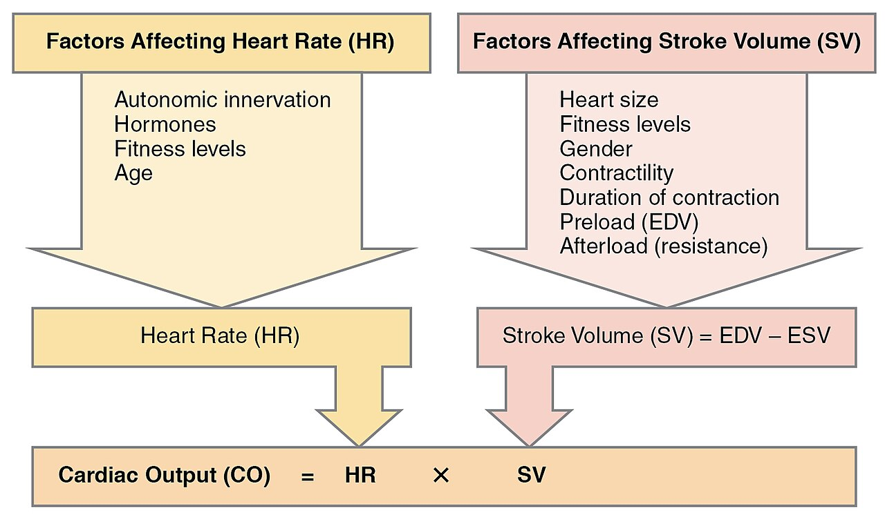
What a failing heart is actually doing
In heart failure with reduced ejection fraction (HFrEF), the ventricle cannot eject enough blood, and the body — sensing what looks like low volume — does exactly the wrong thing. The sympathetic nervous system fires, raising heart rate and afterload. The renin–angiotensin–aldosterone system (RAAS) switches on, retaining sodium and water and driving vasoconstriction. Over months, angiotensin II and aldosterone remodel the ventricle into a dilated, fibrotic, poorly functioning bag. The compensation becomes the disease.
That is why modern heart failure therapy looks strange at first glance: the cornerstone drugs are ones that slow the heart and block the very hormones the body is producing. We are not helping the heart work harder. We are calling off the neurohormonal siege. And the payoff is not just symptom relief — these are mortality drugs, which is why titrating them to target doses matters more than almost anything else on the outpatient side.
The four pillars
Guideline-directed medical therapy for HFrEF now rests on four drug classes, all started early and titrated up as tolerated. Students should be able to name all four cold.
| Pillar | Prototype | Key effect | Nursing alert |
|---|---|---|---|
| ARNI (or ACE inhibitor / ARB) | sacubitril/valsartan; lisinopril; losartan | Blocks RAAS; ARNI also blocks neprilysin, preserving natriuretic peptides | 36-hour washout between an ACE inhibitor and an ARNI — overlapping causes angioedema. Never give both. Monitor BP, K+, creatinine. Fetal toxicity — contraindicated in pregnancy |
| Beta blocker (evidence-based only) | carvedilol, metoprolol succinate, bisoprolol | Blocks sympathetic overdrive; reverses remodeling; lowers mortality | Start low, go slow. Symptoms may worsen for weeks before improving — warn the patient or they will quit. Do not start during acute decompensation. Metoprolol tartrate is not a heart failure drug |
| Mineralocorticoid receptor antagonist | spironolactone, eplerenone | Blocks aldosterone; antifibrotic; potassium-sparing | Hyperkalemia — check K+ and creatinine about 1 week and 1 month after start/titration. Spironolactone causes gynecomastia; eplerenone rarely does. No salt substitutes |
| SGLT2 inhibitor | dapagliflozin, empagliflozin | Improves outcomes in HF with or without diabetes | Genital mycotic infections (teach perineal hygiene), volume depletion, rare euglycemic DKA. Hold with acute illness or prolonged fasting |
Around the pillars sit useful extras. Hydralazine plus isosorbide dinitrate is added for patients who remain symptomatic (with proven benefit in self-identified Black patients) and is a fallback when ACE inhibitors and ARBs cannot be used because of renal function or hyperkalemia. Ivabradine slows the SA node's funny current for patients in sinus rhythm with a heart rate still at or above 70 despite a maximally tolerated beta blocker; it causes luminous visual phenomena (phosphenes) that alarm patients unless you warn them. Vericiguat is an option after a worsening event.
The ACE inhibitor profile deserves its own list, because it recurs everywhere: a persistent dry, hacking cough from bradykinin accumulation (switch to an ARB — ARBs do not cause it), angioedema (a true emergency; airway first; a lifetime contraindication to the whole class and to ARNI), hyperkalemia, first-dose hypotension (give the first dose at bedtime, hold diuretics if possible), a rise in creatinine, and fetal toxicity.
Diuretics: symptom control, not survival
Diuretics are the drugs patients feel working — and they are also the ones that do not, by themselves, prolong life. They exist to pull water off a congested patient who cannot breathe.
Loop diuretics (furosemide, bumetanide, torsemide) block the Na-K-2Cl transporter in the thick ascending limb and are powerful enough to work even when the GFR is poor. Their costs are electrolytic: hypokalemia, hypomagnesemia, hyponatremia, hypocalcemia, metabolic alkalosis, hyperuricemia, hyperglycemia, and dehydration with orthostatic hypotension. Ototoxicity — tinnitus and hearing loss, usually reversible — is linked to rapid IV administration and high doses, which is why IV furosemide is pushed slowly (commonly no faster than about 20 mg/min) and why loop plus aminoglycoside is a bad pairing. Loops are sulfonamide-derived; ethacrynic acid is the alternative for a true sulfa allergy. Give the morning dose early and the second dose by mid-afternoon so the patient is not up all night.
Thiazides (hydrochlorothiazide, chlorthalidone) are weaker and fail below a GFR of roughly 30. Metolazone is the exception used for diuretic resistance: it is given about 30 minutes before the loop dose, and the combination is potent enough to strip potassium dangerously fast — watch the K+ closely. Potassium-sparing agents (spironolactone, eplerenone, triamterene, amiloride) go the other way and retain potassium.
Digoxin and its narrow window
Digoxin is the oldest drug in this chapter and the one most likely to hurt someone. It inhibits the sodium–potassium ATPase in cardiac myocytes. Sodium builds up inside the cell, the sodium–calcium exchanger runs less efficiently, intracellular calcium rises, and the contraction gets stronger — a positive inotropic effect. Separately, digoxin increases vagal tone at the AV node, slowing conduction and heart rate — a negative chronotropic and negative dromotropic effect. That combination is why it is used both for symptomatic HFrEF (fewer hospitalizations, but no mortality benefit) and for rate control in atrial fibrillation, particularly in a hypotensive patient who cannot tolerate a beta blocker.
The therapeutic range is classically 0.5–2.0 ng/mL, but in heart failure the modern target is a narrower 0.5–0.9 ng/mL — higher levels increase mortality without adding benefit. Draw the level as a trough, at least 6–8 hours after the last dose (12 hours or immediately before the next dose is cleanest); a level drawn too early looks alarmingly high and reflects distribution, not toxicity.
The signs of toxicity are famous because they are exam gold and because they are easy to miss at 3 a.m.
| System | What you see | Why it matters |
|---|---|---|
| Gastrointestinal | Anorexia first, then nausea, vomiting, abdominal pain | Loss of appetite is the earliest sign — ask about it every visit |
| Visual | Blurred or yellow-green vision, halos around lights | Nearly pathognomonic; patients rarely mention it unless asked |
| Neurologic | Fatigue, weakness, confusion, delirium | In older adults, new confusion is often the only sign |
| Cardiac | Bradycardia, AV block, any arrhythmia (classically bidirectional VT, or atrial tachycardia with block) | The lethal endpoint. Digoxin can cause the very rhythms it treats |
| Electrolytes | Hypokalemia, hypomagnesemia, hypercalcemia | Each one potentiates toxicity at a normal drug level |
That last row is the concept students most often miss. Potassium and digoxin compete for the same binding site on the Na+/K+ ATPase. When potassium falls — and what drug does your heart failure patient also take? A loop diuretic — digoxin binds more avidly and the patient can become toxic with a "therapeutic" level on the lab report. A normal digoxin level does not rule out digoxin toxicity. Interacting drugs raise levels too: amiodarone, verapamil, quinidine, and clarithromycin all push digoxin up, and the dose is typically cut roughly in half when amiodarone is added.
Treatment of significant toxicity is digoxin immune Fab (DigiFab) — antibody fragments that bind digoxin and pull it out of tissue — used for life-threatening arrhythmia, severe hyperkalemia from acute overdose, or hemodynamic instability. After Fab is given, total serum digoxin levels become uninterpretable (they measure bound drug), so treat the patient, not the number. Correct hypokalemia and hypomagnesemia; in acute overdose with hyperkalemia, calcium is generally avoided.
- Heart failure therapy blocks the body's own compensation: the four pillars are ARNI/ACEi/ARB, an evidence-based beta blocker, an MRA, and an SGLT2 inhibitor.
- Allow a 36-hour washout from an ACE inhibitor before an ARNI; ACE inhibitor cough means switch to an ARB; angioedema means stop the class forever.
- Loop diuretics relieve congestion but waste potassium and magnesium and are ototoxic if pushed fast; MRAs and ACE inhibitors retain potassium — know which way each drug pulls.
- Digoxin: target 0.5–0.9 ng/mL in HF, trough drawn 6–8+ h post-dose; anorexia is the first sign; hypokalemia potentiates toxicity; antidote is digoxin immune Fab.
Section 4Antiarrhythmics
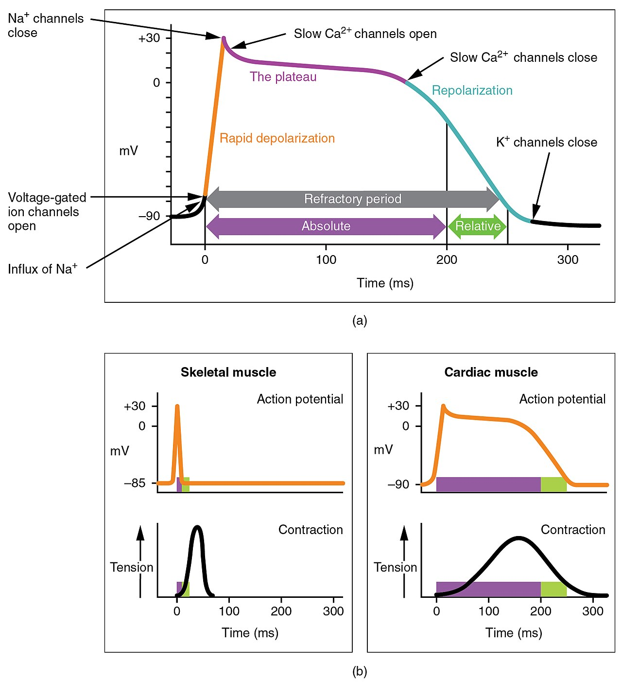
The five phases, and why anyone should care
Antiarrhythmics are frightening to learn because the classification looks arbitrary. It is not. Each class is named for the ion channel it blocks, and each channel owns a phase of the action potential. Learn the phases once and the classes become obvious.
In a working ventricular myocyte: Phase 0 is the rapid upstroke — sodium rushes in and the cell depolarizes. Phase 1 is a brief notch as potassium leaks out. Phase 2 is the long plateau unique to cardiac muscle — calcium enters and drives contraction, and this is what keeps the heart from tetanizing. Phase 3 is repolarization as potassium floods out. Phase 4 is the resting membrane potential — except in pacemaker cells (SA and AV nodes), where phase 4 is a slow spontaneous drift upward (the "funny current") that sets the heart rate, and where phase 0 is driven by calcium, not sodium. That last detail explains why calcium channel blockers act on nodes while sodium channel blockers act on the working muscle.
The Vaughan Williams classes
| Class | Prototype | Key effect | Nursing alert |
|---|---|---|---|
| IA — Na+ block (moderate) | procainamide, quinidine, disopyramide | Slows phase 0; prolongs repolarization → widened QRS and longer QT | Procainamide: drug-induced lupus (arthralgia, butterfly rash — check ANA), agranulocytosis, hypotension on rapid IV. Quinidine: cinchonism (tinnitus, headache, vertigo), diarrhea, raises digoxin. Watch for torsades |
| IB — Na+ block (weak) | lidocaine, mexiletine | Slows phase 0 slightly; shortens repolarization; targets ischemic ventricular tissue | Ventricular arrhythmias only — useless in atrial fibrillation. Toxicity is neurologic: perioral numbness, tinnitus, confusion, twitching, seizures. Never use the lidocaine with epinephrine formulation IV |
| IC — Na+ block (strong) | flecainide, propafenone | Markedly slows phase 0; minimal effect on repolarization | Contraindicated with structural heart disease or prior MI — increases mortality. Used in structurally normal hearts, sometimes as a "pill in the pocket" for AF |
| II — beta blockers | metoprolol, esmolol, atenolol | Blunt sympathetic drive; slow phase 4 in the SA node and slow AV conduction | Rate control workhorses. Hold for bradycardia or hypotension; caution in asthma (use cardioselective); mask hypoglycemia symptoms in diabetes; never stop abruptly |
| III — K+ block | amiodarone, sotalol, dofetilide, ibutilide, dronedarone | Prolong phase 3 repolarization → longer refractory period and longer QT | QT prolongation and torsades. Dofetilide and sotalol require inpatient telemetry initiation. Sotalol is also a beta blocker. See amiodarone below |
| IV — non-dihydropyridine Ca2+ block | verapamil, diltiazem | Slow phase 0 in nodal tissue; slow AV conduction and rate | Bradycardia, heart block, hypotension, constipation (verapamil). Avoid in HFrEF (negative inotropes) and use caution with a beta blocker |
| Unclassified | adenosine, digoxin, magnesium, atropine | Adenosine transiently blocks the AV node; magnesium treats torsades; atropine treats symptomatic bradycardia | See adenosine below. Magnesium is the answer for torsades de pointes. Atropine 1 mg IV for unstable bradycardia |
Two drugs that deserve their own paragraph
Amiodarone is the most useful and most toxic antiarrhythmic in the building. It blocks potassium channels (class III) but also has sodium-blocking, beta-blocking, and calcium-blocking activity — it is all four classes in one molecule, which is why it works on almost anything. It is also lipophilic and stored in fat, giving it a half-life of roughly 40–60 days: side effects can appear months after starting and persist months after stopping. Monitoring is a systems tour — pulmonary fibrosis (the feared one; baseline chest X-ray and pulmonary function, then investigate any new dry cough or dyspnea), thyroid dysfunction in either direction because the molecule is loaded with iodine (baseline and periodic TSH), hepatotoxicity (LFTs), corneal microdeposits (usually benign; annual eye exam; report visual halos), and blue-gray skin discoloration with severe photosensitivity (sunscreen and covering clothing — a real quality-of-life issue patients are not warned about often enough). It raises digoxin and warfarin levels, so both doses come down when amiodarone goes up. IV amiodarone can cause hypotension and phlebitis — use a central line or large vein and an inline filter for continuous infusions.
Adenosine is the drug that makes new nurses gasp. Given for stable SVT, it briefly blocks the AV node and the monitor shows a few seconds of asystole before sinus rhythm resumes. Its half-life is under 10 seconds, so it must be given as a rapid IV push — 6 mg, immediately followed by a 20 mL saline flush, ideally through a proximal large-bore line with the arm elevated (a two-syringe or stopcock technique). Warn the patient first: they will feel chest pressure, flushing, and a sense of doom for a few seconds. Have the defibrillator nearby and a rhythm strip running — the strip is diagnostic even when the drug does not convert.
- Vaughan Williams: I = sodium (phase 0), II = beta blockers (phase 4/AV node), III = potassium (phase 3, QT), IV = calcium (nodal phase 0).
- IA prolongs repolarization (procainamide → lupus-like syndrome), IB shortens it and is ventricular-only (lidocaine → seizures), IC is contraindicated in structural heart disease.
- Amiodarone works on everything and damages everything: lungs, thyroid, liver, cornea, skin. Half-life 40–60 days; cut digoxin and warfarin doses.
- Adenosine is a rapid push with a 20 mL flush — warn the patient, expect a brief asystolic pause. Magnesium is the answer for torsades. Watch the QTc on every class III drug.
Section 5Cardiovascular monitoring and nursing care
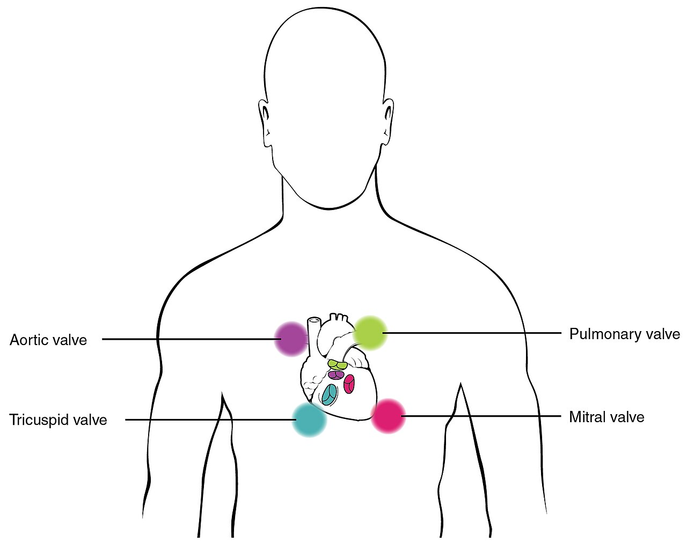
The apical pulse: a 60-second skill that prevents harm
Before digoxin and before beta blockers and non-dihydropyridine calcium channel blockers, you take an apical pulse. Not a radial pulse, not the monitor's number, and not for fifteen seconds times four. Place the diaphragm at the fifth intercostal space, midclavicular line — the point of maximal impulse — and count for a full minute. The full minute is not ritual: these are exactly the patients with irregular rhythms and a pulse deficit, where weak beats generate a heart sound but no radial pulse, and a 15-second sample can be wrong by 20 beats.
Then apply the parameter. Hold digoxin and notify the prescriber if the apical rate is below 60 in an adult (below 70 in a child, below 90–110 in an infant), or if the rate is above 100, or if the rhythm has newly changed. Document the rate, the rhythm, what you held, and who you called. If a patient is discharged on digoxin, they take their own radial pulse for a full minute before every dose — watch them do it, do not just tell them.
Levels, potassium, and the numbers that matter
| What you check | Normal / target | When to check | Nursing alert |
|---|---|---|---|
| Apical pulse | 60–100 bpm | Before every dose of digoxin, beta blocker, verapamil, diltiazem | Hold and call if <60 (adult). Full minute, fifth ICS midclavicular |
| Digoxin level | 0.5–2.0 ng/mL overall; 0.5–0.9 in heart failure | Trough — 6–8+ h after the dose, or just before the next one | A normal level does not rule out toxicity if K+ is low. Antidote: digoxin immune Fab |
| Potassium | 3.5–5.0 mEq/L | Baseline, then with every diuretic, ACEi/ARB/ARNI, or MRA change; ~1 week and 1 month after an MRA start | Low K+ → digoxin toxicity and torsades. High K+ → bradycardia and arrest. Both directions kill |
| Magnesium | 1.5–2.5 mg/dL | With loop diuretics; with any QT-prolonging drug; in refractory hypokalemia | You cannot correct potassium until magnesium is corrected. Magnesium is the treatment for torsades |
| Serum creatinine / eGFR | Baseline-dependent | Before and after starting ACEi/ARB/ARNI/MRA/SGLT2i; with diuretic changes | Digoxin is renally cleared — falling GFR means rising digoxin. A modest early creatinine rise on an ACE inhibitor is often acceptable |
| Blood pressure (with orthostatics) | Individualized | Before nitrates, ACEi/ARNI first doses, and any titration | Hold nitrates for SBP <90. A drop of ≥20 systolic or ≥10 diastolic on standing is orthostatic hypotension — a fall risk |
| QTc interval | <450 ms (men), <460 ms (women) | Baseline and with class IA/III drugs, ranolazine, and dose changes | QTc >500 ms or a rise >60 ms → call. Check K+ and Mg2+ at the same time |
| Daily weight | Patient's dry weight | Every morning at home in heart failure | 2–3 lb in a day or 5 lb in a week → call the clinic. Weight beats edema as an early warning |
| Lipid panel | Risk-based LDL goal | Baseline; 4–12 weeks after a change; then periodically | Fasting is often unnecessary now. Adherence, not the number, is the usual reason a panel disappoints |
| Creatine kinase (CK) | Lab-specific | Only when a statin patient reports muscle symptoms (plus baseline in high-risk patients) | CK >10× ULN with symptoms and dark urine = rhabdomyolysis. Hold the statin |
The potassium row is the one to internalize, because your heart failure patient is often on drugs pulling potassium in both directions at once: a loop diuretic dumping it and an ACE inhibitor plus spironolactone holding it. The net result is unpredictable in any individual, which is why we measure rather than assume. Two teaching points fall out of this. First, salt substitutes are potassium chloride — a patient dutifully avoiding sodium with a shaker of "lite salt" while taking lisinopril and spironolactone can arrive hyperkalemic and bradycardic. Ask specifically. Second, potassium-rich foods (bananas, oranges, potatoes, tomatoes, spinach, avocado) are advice for the patient on a loop diuretic alone, and can be exactly wrong for the patient on an MRA.
What you say before they walk out the door
Cardiovascular drugs fail at home, not in the hospital. These are asymptomatic conditions treated with drugs that cause symptoms — and the patient will do the arithmetic. Discharge teaching is the intervention.
| Drug or class | What the patient must know |
|---|---|
| Statin | Take it forever; it works invisibly. Report muscle pain, weakness, and especially dark urine. Evening dosing for simvastatin/lovastatin. Grapefruit warning where it applies. Stop and call if pregnancy is possible |
| Sublingual nitroglycerin | Sit down. One dose under the tongue; if not better in 5 minutes, call 911, then up to 3 doses total, 5 minutes apart. Amber glass bottle, cool and dark, replace every 6 months. Headache is normal. No erectile dysfunction drugs |
| Nitroglycerin patch | Apply in the morning, remove in the evening for a 10–12 h nitrate-free interval. Remove the old patch first, rotate sites, wash hands |
| Beta blocker | Never stop suddenly — rebound angina, tachycardia, or infarct. Check your pulse before doses. Rise slowly. In diabetes, it can mask the shakiness of hypoglycemia — check glucose, do not rely on feel |
| ACE inhibitor / ARB / ARNI | A dry nagging cough is worth reporting (it is fixable). Any swelling of the lips, tongue, or throat is a 911 emergency. No salt substitutes. Not in pregnancy — call the day you find out |
| Loop diuretic | Morning doses so you can sleep. Weigh yourself daily, same time, same scale, after voiding, before breakfast. 2–3 lb in a day or 5 lb in a week → call. Report ringing in the ears, cramps, or dizziness |
| Spironolactone / eplerenone | No salt substitutes, no potassium supplements unless told. Report breast tenderness or enlargement (there is an alternative). Keep the lab appointments — they are how we catch high potassium before it hurts you |
| Digoxin | Take your pulse for a full minute before every dose; hold and call if under 60. Report loss of appetite, nausea, blurred or yellow-green vision, halos, or new confusion. Never double a missed dose. Keep potassium labs |
| Amiodarone | Report any new cough or shortness of breath right away. Sunscreen and covering clothes — you will burn badly. Keep the thyroid, liver, and eye follow-ups. Tell every prescriber you take it, because it changes other drug levels |
| Antiplatelets / anticoagulants | Soft toothbrush, electric razor, no contact sports. Report black tarry stools, blood in urine, unusual bruising, or a headache after a fall. Never stop a P2Y12 inhibitor after a stent without calling the cardiologist — the stent can clot |
One more layer sits underneath all of it: several drugs in this chapter are formally high-alert medications — IV anticoagulants, IV antiarrhythmics, IV inotropes, and digoxin among them. High-alert does not mean used more often incorrectly; it means when an error happens, the harm is catastrophic. That is what justifies the independent double-check, the smart pump limits, and the habit of saying the dose out loud with another nurse. Use them. Nobody has ever been disciplined for verifying a drip.
- Take an apical pulse for a full minute at the fifth ICS midclavicular line before digoxin, beta blockers, verapamil, and diltiazem; hold and call if <60.
- Draw digoxin levels as a trough ≥6–8 h after the dose; target 0.5–0.9 ng/mL in heart failure. A normal level does not exclude toxicity when potassium is low.
- Potassium is the master variable — loops dump it, MRAs and ACE inhibitors hold it, salt substitutes are potassium chloride, and both extremes are lethal.
- Teach daily weights (2–3 lb/day or 5 lb/week means call), never stopping a beta blocker abruptly, and never combining nitrates with PDE5 inhibitors.
The chapter in one breath
- Statins block HMG-CoA reductase and pull LDL out of the blood; watch for myopathy, draw a CK only when muscles hurt, and treat muscle pain plus dark urine as rhabdomyolysis until proven otherwise.
- Non-statin agents fill gaps: ezetimibe (absorption), PCSK9 inhibitors and inclisiran (receptor recycling), bempedoic acid (statin intolerance), fibrates and icosapent ethyl (triglycerides), niacin (flushing — pretreat with aspirin), sequestrants (separate other drugs by 1–4 hours).
- Antianginals either raise supply or lower demand; nitrates drop preload, cause headache, and are lethal with PDE5 inhibitors — sit down, one dose, call 911 at 5 minutes, three doses maximum, amber glass, replace every 6 months.
- The ACS bundle is chewed aspirin, a P2Y12 inhibitor, an anticoagulant, a beta blocker, a high-intensity statin, and an ACE inhibitor; oxygen only if SpO2 <90%, morphine deprioritized, reperfusion within 30 (needle) or 90 (balloon) minutes.
- Heart failure therapy calls off the body's own neurohormonal siege: the four pillars are ARNI/ACEi/ARB, an evidence-based beta blocker, an MRA, and an SGLT2 inhibitor; diuretics relieve symptoms but do not prolong life.
- Digoxin is a positive inotrope and negative chronotrope with a razor-thin window: anorexia first, then nausea, yellow-green vision, confusion, and arrhythmia; hypokalemia potentiates it; the antidote is digoxin immune Fab.
- Antiarrhythmics are named for the channel they block — I sodium, II beta, III potassium, IV calcium — and every one of them is also proarrhythmic; amiodarone works everywhere and damages lungs, thyroid, liver, cornea, and skin.
- The nursing core is small and it holds: full-minute apical pulse, trough digoxin levels, potassium and magnesium, daily weights, QTc, and the discharge sentences that keep the patient alive at home.
ReferenceWords worth knowing
A quick reference for the terms in this chapter — skim it now, or circle back whenever a word trips you up.
- Acute coronary syndrome (ACS)
- The umbrella term for unstable angina, NSTEMI, and STEMI — all caused by plaque rupture and thrombus in a coronary artery.
- Afterload
- The resistance the ventricle must overcome to eject blood; lowering it reduces cardiac workload.
- Angioedema
- Rapid swelling of the lips, tongue, or airway; a rare but life-threatening reaction to ACE inhibitors and ARNIs, and a permanent contraindication to the class.
- Apical pulse
- The heart rate counted with a stethoscope at the fifth intercostal space, midclavicular line, for a full minute — required before digoxin and rate-slowing drugs.
- Chronotropic effect
- An effect on heart rate; digoxin and beta blockers are negative chronotropes.
- Cinchonism
- Quinidine toxicity: tinnitus, headache, vertigo, and visual disturbance.
- Creatine kinase (CK)
- A muscle enzyme that rises with muscle injury; drawn when a statin patient reports muscle symptoms.
- Digoxin immune Fab
- Antibody fragments that bind and inactivate digoxin; the antidote for life-threatening digoxin toxicity.
- Guideline-directed medical therapy (GDMT)
- The evidence-based drug regimen for heart failure, built on four pillars and titrated to target doses.
- High-alert medication
- A drug that causes catastrophic harm when given in error — digoxin, heparin, IV antiarrhythmics — warranting an independent double-check.
- Inotropic effect
- An effect on the force of cardiac contraction; digoxin is a positive inotrope.
- Low-density lipoprotein (LDL)
- The particle that delivers cholesterol into the arterial wall; the primary target of lipid therapy.
- Myopathy
- Muscle pain or weakness accompanied by a rising CK; the middle of the statin muscle spectrum, between benign myalgia and rhabdomyolysis.
- Nitrate tolerance
- Loss of nitrate effect from continuous exposure; prevented by a daily nitrate-free interval of 10–12 hours.
- Preload
- The volume stretching the ventricle at end-diastole; nitrates and diuretics reduce it.
- Proarrhythmia
- A new or worsened arrhythmia caused by an antiarrhythmic drug — a risk of every drug in the class.
- Pulse deficit
- The difference between the apical and radial rates, caused by beats too weak to reach the periphery.
- QT interval (QTc)
- The ECG measure of ventricular repolarization; prolongation predisposes to torsades de pointes.
- Rhabdomyolysis
- Severe muscle breakdown with markedly elevated CK and myoglobinuria (dark, cola-colored urine), risking acute kidney injury.
- Torsades de pointes
- A polymorphic ventricular tachycardia arising from a prolonged QT; treated with intravenous magnesium.
- Vasospastic (Prinzmetal) angina
- Chest pain from coronary artery spasm, often at rest; treated with nitrates and calcium channel blockers, not beta blockers.
- Vaughan Williams classification
- The system that sorts antiarrhythmics by the ion channel they block: I sodium, II beta-adrenergic, III potassium, IV calcium.
Check yourself
Diuretics, IV Fluids & Poisoning
Almost everything in this chapter comes down to water and the particles dissolved in it. Diuretics pull water out of a patient by tricking one specific stretch of the kidney tubule; IV fluids push water back in, and where that water lands depends entirely on the tonicity printed on the bag. Electrolyte replacement sits in the middle — the corrections that fix a dangerous lab value can, given too fast, stop a heart. And when the wrong substance gets into a patient by accident or on purpose, a small handful of antidotes can reverse what would otherwise be fatal. These are among the highest-alert drugs a nurse handles, and the nurse's monitoring is usually what makes them safe.
By the end of this chapter you can
- Trace filtrate through the nephron and name the segment each diuretic class blocks.
- Compare loop, thiazide, potassium-sparing, osmotic, and carbonic anhydrase inhibitor diuretics by prototype, potency, and electrolyte fallout.
- Anticipate and monitor the characteristic adverse effects of each diuretic class, especially hypokalemia and hyperkalemia.
- Classify an IV solution as isotonic, hypotonic, or hypertonic and predict which fluid compartment it will fill.
- Select an appropriate IV fluid for common bedside scenarios and name the danger of each type.
- Replace potassium, calcium, and magnesium safely, including the rules that must never be broken.
- Match common poisonings to their antidotes and describe the nurse's role in each reversal.
- Explain why diuretics, concentrated electrolytes, and reversal agents are treated as high-alert medications.
Section 1The nephron & where diuretics act
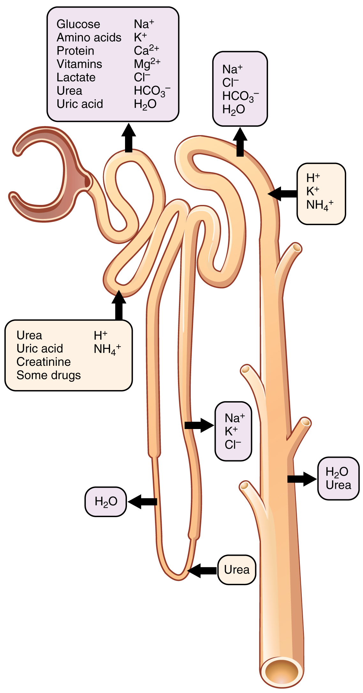
One million tiny filters
Each kidney holds roughly a million nephrons, and each nephron is a factory that does the same four jobs: filtration, reabsorption, secretion, and excretion. Blood arrives at the glomerulus, a tuft of capillaries wedged inside Bowman's capsule, and pressure squeezes water and small solutes out into the tubule. That filtrate is enormous — about 180 liters a day. Since nobody urinates 180 liters, the obvious conclusion is the important one: the nephron's real work is not making urine, it is taking almost all of it back. Roughly 99 percent of the filtered water is reabsorbed. Urine is the leftover 1 percent.
This is the single insight that makes diuretics make sense. A diuretic does not squeeze more fluid out of the blood. It interferes with reabsorption. Water follows sodium, so any drug that blocks sodium from being pulled back out of the tubule leaves that sodium in the filtrate, and the water stays with it and leaves as urine. Every diuretic in this chapter is a variation on that one theme: block sodium reabsorption somewhere, and water comes along.
The segments, in order
Filtrate leaves Bowman's capsule and enters the proximal convoluted tubule (PCT), the workhorse, where about 65 percent of filtered sodium and water — plus glucose, amino acids, and bicarbonate — are reclaimed. Next comes the loop of Henle, which dives into the salty medulla; its thick ascending limb pumps out another 20–25 percent of the sodium using the Na⁺-K⁺-2Cl⁻ cotransporter. Then the distal convoluted tubule (DCT) reclaims perhaps 5–10 percent through a sodium-chloride cotransporter. Finally the collecting duct fine-tunes the last 2–3 percent under hormonal control: aldosterone tells it to keep sodium and dump potassium, and antidiuretic hormone (ADH) tells it to keep water by inserting aquaporins.
The percentages tell you the potency ranking before you learn a single drug name. Block the loop, where a quarter of the sodium is handled, and you get a powerful diuresis. Block the DCT, where under a tenth is handled, and you get a moderate one. Block the collecting duct, which is only fine-tuning, and you get a weak diuresis — but exquisite control over potassium.
| Segment | Sodium reclaimed | Transporter / control | Diuretic that acts here |
|---|---|---|---|
| Proximal tubule | ~65% | Na⁺/H⁺ exchange; carbonic anhydrase; osmotic gradient | Carbonic anhydrase inhibitors; osmotic diuretics |
| Thick ascending limb | ~20–25% | Na⁺-K⁺-2Cl⁻ cotransporter | Loop diuretics — most potent |
| Distal convoluted tubule | ~5–10% | Na⁺-Cl⁻ cotransporter | Thiazides — moderate |
| Collecting duct | ~2–3% | Aldosterone-driven Na⁺ channels (ENaC); ADH/aquaporins | Potassium-sparing — weak, but K⁺-protective |
Why potassium is always in the conversation
Look at the collecting duct again. Aldosterone reabsorbs sodium there and trades it for potassium, which goes out into the urine. Now imagine a loop or thiazide diuretic upstream, dumping a flood of sodium into the collecting duct. More sodium arriving means more sodium–potassium trading, which means more potassium lost. That is why loop and thiazide diuretics cause hypokalemia — it is not a random side effect, it is arithmetic. And drugs that block that trade at the collecting duct do the reverse: they hold potassium in, which is why they are called potassium-sparing and why their signature danger is hyperkalemia.
- The nephron filters ~180 L/day and reabsorbs about 99% of it; urine is the remainder.
- Diuretics work by blocking sodium reabsorption — water follows sodium out.
- Potency tracks the segment: loop > thiazide > potassium-sparing, because that is the order of how much sodium each segment handles.
- The collecting duct trades sodium for potassium under aldosterone — the reason most diuretics wreck potassium in one direction or the other.
Section 2Diuretic classes

Loop diuretics — the fire hose
Furosemide is the prototype, joined by bumetanide, torsemide, and ethacrynic acid. They block the Na⁺-K⁺-2Cl⁻ cotransporter in the thick ascending limb, and the result is the most powerful diuresis in pharmacology — up to 20–25 percent of filtered sodium out the door. IV furosemide begins working within minutes, which is exactly what you want in acute pulmonary edema, when a patient is drowning in their own fluid and cannot wait. Loops also keep working when kidney function is poor, unlike thiazides, so they are the diuretic of chronic kidney disease. Their classic uses: heart failure with fluid overload, pulmonary edema, edema of renal or hepatic origin.
The trade-off is that a fire hose flushes out everything. Loops waste potassium, magnesium, calcium, sodium, and chloride and can cause dehydration, orthostatic hypotension, and metabolic alkalosis. They are also ototoxic — tinnitus and hearing loss, made far more likely by rapid IV push or by pairing with an aminoglycoside. Push IV furosemide slowly, no faster than about 20 mg/minute in an adult, and slower still in the elderly. Because furosemide is a sulfonamide derivative, ask about sulfa allergy; ethacrynic acid is the non-sulfa alternative.
Thiazides — the everyday drug
Hydrochlorothiazide is the prototype; chlorthalidone (longer-acting, generally preferred for blood pressure) and metolazone round out the group. They block the Na⁺-Cl⁻ cotransporter in the distal tubule — a smaller job, so a gentler diuresis, but the mild sustained vasodilation that comes with it makes thiazides a cornerstone of hypertension therapy. They are also, delightfully, the only diuretic that retains calcium, which makes them useful in calcium-based kidney stones and mildly protective of bone. Note the ceiling: thiazides lose effectiveness once the glomerular filtration rate falls below roughly 30 mL/min. That is when the prescriber switches to a loop. Metolazone is the exception worth knowing — it keeps working at a low GFR, which is why it is deliberately added to a loop diuretic when a patient stops responding to the loop alone. That combination is potent enough to be dangerous: expect a brisk diuresis and watch potassium and volume status closely.
Teach patients the metabolic mischief: thiazides raise glucose, uric acid (watch for gout flares), lipids, and calcium, while lowering potassium, sodium, and magnesium. Thiazide-induced hyponatremia is a real and underappreciated cause of confusion and falls in older adults.
Potassium-sparing — the counterweight
Two mechanisms, one result. Spironolactone and eplerenone are aldosterone antagonists: they block aldosterone's receptor in the collecting duct. Amiloride and triamterene block the sodium channel directly without touching the receptor. Either way, sodium leaves and potassium stays. The diuresis is weak, so these are rarely used alone for fluid — they are used with a loop or thiazide to blunt potassium loss, and, in the case of spironolactone and eplerenone, because they independently reduce mortality in heart failure with reduced ejection fraction by blocking aldosterone-driven cardiac remodeling. Spironolactone is also standard for the ascites of cirrhosis.
The danger is hyperkalemia — and it is a lethal one. Teach patients to avoid salt substitutes, which are largely potassium chloride, and never to add a potassium supplement without being told to. Combining a potassium-sparing diuretic with an ACE inhibitor or ARB stacks the risk. Spironolactone is also non-selective at steroid receptors, so it causes gynecomastia, breast tenderness, and menstrual irregularity; eplerenone is selective and largely avoids this.
Osmotic and carbonic anhydrase inhibitors — the specialists
Mannitol is an osmotic diuretic: a sugar alcohol that is filtered but not reabsorbed, so it drags water with it osmotically all the way down the tubule. Its real job is usually not the urine — it is pulling water out of swollen tissue. Mannitol is used for increased intracranial pressure, cerebral edema, and acutely raised intraocular pressure. Because it expands plasma volume before it diureses, it can precipitate heart failure and pulmonary edema in a vulnerable patient. Mannitol crystallizes in cold solution, so always use an in-line filter and inspect the bag; warm it if crystals are present.
Acetazolamide blocks carbonic anhydrase in the proximal tubule, dumping bicarbonate. Weak as a diuretic, but useful in glaucoma, altitude sickness, and to alkalinize urine. It predictably causes a metabolic acidosis — which is sometimes the point.
| Class | Prototype | Site & key effect | Nursing alert |
|---|---|---|---|
| Loop | Furosemide (bumetanide, torsemide, ethacrynic acid) | Blocks Na⁺-K⁺-2Cl⁻ in thick ascending limb; most potent; works in renal impairment | Hypokalemia, hypomagnesemia, hypocalcemia, dehydration, orthostasis; ototoxic — push IV slowly (≤20 mg/min), avoid with aminoglycosides; daily weight & I&O; sulfa cross-sensitivity |
| Thiazide | Hydrochlorothiazide (chlorthalidone, metolazone) | Blocks Na⁺-Cl⁻ in distal tubule; moderate; first-line for HTN; spares calcium | Hypokalemia, hyponatremia, hyperglycemia, hyperuricemia (gout), hyperlipidemia; ineffective if GFR <30 mL/min (metolazone excepted — still works, and is added to a loop for diuretic resistance); give in the morning |
| Potassium-sparing (aldosterone antagonist) | Spironolactone (eplerenone) | Blocks aldosterone receptor in collecting duct; weak diuresis; mortality benefit in HFrEF; ascites | Hyperkalemia — no salt substitutes, no K⁺ supplements; caution with ACE inhibitors/ARBs; gynecomastia (spironolactone) |
| Potassium-sparing (channel blocker) | Triamterene (amiloride) | Blocks collecting-duct Na⁺ channels directly; weak | Hyperkalemia; often combined with HCTZ to balance potassium; triamterene can tint urine blue-green |
| Osmotic | Mannitol | Filtered, not reabsorbed; osmotically drags water; reduces ICP and cerebral/ocular edema | In-line filter required (crystallizes); transient volume expansion may cause pulmonary edema/HF; monitor serum osmolality, neuro status, hourly urine output |
| Carbonic anhydrase inhibitor | Acetazolamide | Blocks proximal carbonic anhydrase; dumps bicarbonate; glaucoma, altitude sickness | Predictable metabolic acidosis; hypokalemia; paresthesias; sulfa derivative |
- Loops (furosemide) are the most potent, work in renal failure, and are ototoxic if pushed fast.
- Thiazides (hydrochlorothiazide) are first-line for hypertension, spare calcium, and fail below a GFR of ~30.
- Potassium-sparing agents cause hyperkalemia; spironolactone adds a survival benefit in heart failure and causes gynecomastia.
- Mannitol treats increased ICP, needs an in-line filter, and can transiently worsen heart failure.
- Loops and thiazides drop potassium; potassium-sparing agents raise it — and they are frequently paired for exactly that reason.
Section 3IV fluids

Tonicity is a comparison, not a property
Tonicity describes how a solution's solute concentration compares to that inside the patient's cells. Normal serum osmolality is roughly 275–295 mOsm/kg, and that is the reference point for everything below. Water always moves toward the higher concentration of solute, so the tonicity of the bag decides which way water travels once it is in the vein. That is the whole lesson. An isotonic fluid matches serum, so no net water movement occurs and the fluid simply stays where you put it — expanding the extracellular space. A hypotonic fluid is more dilute than serum, so water leaves the vessel and moves into the cells, swelling them. A hypertonic fluid is more concentrated, so it pulls water out of the cells and into the vessel.
Remember it physically: isotonic stays, hypotonic enters the cell, hypertonic exits the cell. Now attach the danger to each. Too much isotonic fluid overloads the circulation → pulmonary edema. Too much hypotonic fluid swells cells → cerebral edema. Too much hypertonic fluid drags water into an already-full vasculature → fluid overload and shriveled cells.
The bags you will actually hang
0.9% sodium chloride (normal saline) and lactated Ringer's (LR) are the isotonic workhorses: resuscitation, hypovolemia, hemorrhage, dehydration, surgery, and a keep-vein-open line. Normal saline is the only fluid compatible with blood products. Large volumes of it, though, produce a hyperchloremic metabolic acidosis, because you are pouring in far more chloride than plasma normally carries. Lactated Ringer's is more physiologic — it carries potassium, calcium, and lactate that the liver converts to bicarbonate — but avoid it in liver failure (lactate is not cleared) and in significant hyperkalemia, and never run it in the same line as blood, because its calcium can trigger clotting in the tubing. D5W is a special case: isotonic in the bag, but the dextrose is metabolized within minutes and what remains is free water, so it behaves as hypotonic once infused. Do not use it for resuscitation, and do not use it in a patient at risk of cerebral edema.
0.45% sodium chloride (half-normal saline) is the everyday hypotonic fluid, used for cellular dehydration and as maintenance in a patient with hypernatremia or diabetic ketoacidosis after initial resuscitation. Hypotonic fluids are contraindicated in head injury, stroke, and any raised ICP — the last thing a swollen brain needs is more water inside its cells. 3% sodium chloride is the hypertonic fluid you will see in an ICU for symptomatic hyponatremia or cerebral edema; it is a high-alert drug, usually needs a central line and a pump, and demands frequent sodium checks. Correcting sodium too fast is its own catastrophe — generally not more than 8–10 mEq/L in 24 hours — because rapid correction of chronic hyponatremia can cause osmotic demyelination syndrome, a devastating and irreversible brain injury. D5½NS and D5LR are hypertonic maintenance fluids that provide some calories.
| Fluid | Tonicity | Where the water goes / when to use | Nursing alert |
|---|---|---|---|
| 0.9% NaCl (normal saline) | Isotonic | Stays extracellular; resuscitation, hypovolemia, blood administration, KVO | Only fluid compatible with blood products; large volumes → hyperchloremic metabolic acidosis; overload risk in HF/renal disease |
| Lactated Ringer's | Isotonic | Stays extracellular; surgery, burns, trauma, GI losses; lactate → bicarbonate | Avoid in liver failure and hyperkalemia; never with blood (calcium clots the line) |
| D5W | Isotonic in the bag, hypotonic in the body | Dextrose burns off → free water; free-water replacement, drug diluent, hypernatremia | Not for resuscitation; contraindicated in raised ICP; monitor glucose |
| 0.45% NaCl (½NS) | Hypotonic | Water enters cells; cellular dehydration, hypernatremia, DKA maintenance | Cerebral edema risk — contraindicated in head injury/stroke/raised ICP; can cause hypotension & vascular collapse |
| 3% NaCl | Hypertonic | Pulls water out of cells; symptomatic hyponatremia, cerebral edema | High-alert; pump + frequent Na⁺; correct ≤8–10 mEq/L per 24 h to avoid osmotic demyelination; watch for overload |
| D5½NS / D5LR / D5NS | Hypertonic | Maintenance with calories; post-op fluid | Fluid overload; monitor glucose; not for a patient already fluid-overloaded |
- Isotonic stays, hypotonic enters the cell, hypertonic exits the cell — every fluid decision starts here.
- Normal saline is the only fluid to hang with blood; lactated Ringer's is avoided in liver failure and never runs with blood.
- D5W is isotonic in the bag but functionally hypotonic in the patient — never for resuscitation, never in raised ICP.
- Hypotonic fluids risk cerebral edema; hypertonic fluids risk fluid overload and, if sodium is corrected faster than ~8–10 mEq/L/day, osmotic demyelination.
Section 4Electrolyte replacement
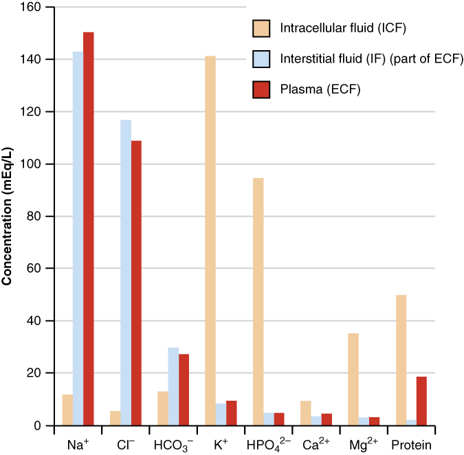
Potassium — the one that will kill you fastest
Normal serum potassium is 3.5–5.0 mEq/L, and that narrow window is not an accident: almost all the body's potassium lives inside cells, so the small amount in serum is a razor-thin margin between a beating heart and a stopped one. Both directions are dangerous. Hypokalemia flattens T waves, produces U waves, and invites ventricular dysrhythmias — and it dramatically potentiates digoxin toxicity, so a patient on both a loop diuretic and digoxin deserves a hard look at every potassium result. Hyperkalemia gives peaked T waves, a widening QRS, and eventually cardiac arrest.
The replacement rules exist because people have died from breaking them, and they are worth memorizing exactly:
- Never give potassium IV push. Never. Not ever. IV push potassium causes fatal cardiac arrest. It is always diluted and always infused.
- Always on a pump, never by gravity, and never as a bolus.
- Peripheral infusion generally does not exceed 10 mEq/hour; higher rates require central access and continuous cardiac monitoring per institutional policy.
- Never exceed the facility's maximum concentration — commonly 10 mEq per 100 mL peripherally.
- Verify urine output (a common threshold is at least 30 mL/hour) before infusing — potassium is renally excreted, and giving it to an anuric patient stacks it up.
- Potassium burns. Phlebitis and infiltration are common; assess the site frequently and stop for pain.
- Oral potassium irritates the GI tract — give with food and a full glass of water, and teach that extended-release tablets are not crushed.
For hyperkalemia, the order of operations matters. IV calcium gluconate comes first — it does not lower potassium at all, it stabilizes the cardiac membrane so the heart survives the next few minutes. Then insulin with dextrose (and sometimes albuterol or sodium bicarbonate) shifts potassium into cells temporarily. Only then do you actually remove it, with a binder such as sodium zirconium cyclosilicate or patiromer, a loop diuretic, or dialysis. Stabilize, shift, eliminate.
Calcium — the muscle and the vein
Normal total serum calcium is roughly 8.5–10.5 mg/dL, and remember that about half of it is bound to albumin — a low albumin makes total calcium look falsely low, so check an ionized calcium when it matters. Hypocalcemia produces the classic neuromuscular irritability: tingling around the mouth and fingertips, muscle cramps, Trousseau's sign (carpal spasm when the blood-pressure cuff inflates) and Chvostek's sign (facial twitch when the cheek is tapped), and, at the extreme, laryngospasm and tetany. Hypercalcemia does the opposite — the muscles and mind go slack: weakness, lethargy, constipation, kidney stones, confusion.
Two IV forms exist and they are not interchangeable. Calcium chloride carries about three times the elemental calcium of calcium gluconate and is far more damaging if it extravasates, so gluconate is preferred peripherally and chloride is generally reserved for central access in an emergency. Either way, push slowly — a fast push causes bradycardia and hypotension — and keep the patient on a cardiac monitor. Do not mix calcium with sodium bicarbonate or phosphate, which precipitate in the line. Calcium also potentiates digoxin and can precipitate toxicity. Teach oral calcium with vitamin D for absorption, spaced away from certain antibiotics it chelates.
Magnesium — check the reflexes
Normal magnesium runs about 1.5–2.5 mEq/L. It is quietly essential: magnesium is a cofactor for hundreds of enzymes, and — critically for the bedside — you cannot correct a potassium until you have corrected the magnesium. Refractory hypokalemia is almost always undiagnosed hypomagnesemia, because low magnesium drives renal potassium wasting no matter how much potassium you give. Hypomagnesemia causes hyperreflexia, tremor, positive Chvostek and Trousseau signs, and torsades de pointes — for which IV magnesium is itself the treatment. It is common in chronic alcohol use, malnutrition, and loop diuretic therapy.
Hypermagnesemia is the mirror image and is the risk you manage during any magnesium infusion. Watch the sequence: loss of deep tendon reflexes comes first, then respiratory depression, then hypotension and bradycardia, then cardiac arrest. That is why the reflex check is not busywork — a diminished patellar reflex is the early warning that buys you time. During IV magnesium (for eclampsia, for example) monitor reflexes, respiratory rate, blood pressure, and urine output, and keep calcium gluconate at the bedside as the antidote.
| Electrolyte | Normal range | Deficiency & excess | Nursing alert |
|---|---|---|---|
| Potassium | 3.5–5.0 mEq/L | Low: flat T waves, U waves, dysrhythmias, digoxin toxicity. High: peaked T waves, wide QRS, arrest | NEVER IV push; dilute, pump, ≤10 mEq/h peripherally; confirm urine output; watch the site (burns); do not crush ER tablets |
| Calcium | 8.5–10.5 mg/dL total | Low: perioral tingling, cramps, Trousseau & Chvostek, tetany, laryngospasm. High: weakness, lethargy, constipation, stones | Gluconate peripherally, chloride centrally; push slowly on a monitor; never mix with bicarbonate or phosphate; potentiates digoxin; check ionized Ca if albumin is low |
| Magnesium | 1.5–2.5 mEq/L | Low: hyperreflexia, tremor, torsades, refractory hypokalemia. High: reflexes lost → respiratory depression → arrest | Check deep tendon reflexes — first sign of toxicity; monitor RR, BP, urine output; calcium gluconate is the antidote; fix Mg before you can fix K⁺ |
- Potassium is never given IV push — always diluted, always on a pump, generally ≤10 mEq/h peripherally, and only with adequate urine output.
- Hyperkalemia is treated stabilize (calcium) → shift (insulin + dextrose) → eliminate (binders, diuretic, dialysis).
- Calcium gluconate is safer peripherally than calcium chloride; push slowly, never with bicarbonate or phosphate.
- Correct magnesium before potassium; during magnesium infusion, loss of deep tendon reflexes is the first warning and calcium gluconate is the antidote.
Section 5Poisoning & antidotes
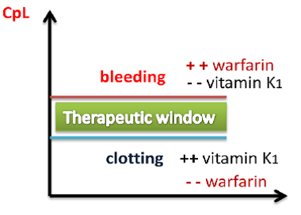
The patient comes before the poison
The first instinct in a poisoning is to hunt for the antidote. Resist it. Most poisonings have no antidote at all, and the patients who survive do so because of supportive care: airway, breathing, circulation, glucose, and time. So the sequence is ABCs first, decontamination second, antidote third if one exists, and enhanced elimination last. Along the way, call Poison Control — in the United States, 1-800-222-1222 — early rather than late. They do this all day.
For decontamination, activated charcoal is the mainstay, and it works by adsorbing the poison in the gut before it is absorbed. It is most useful within about an hour of ingestion, and it is contraindicated in a patient with a depressed level of consciousness or an unprotected airway, because aspirated charcoal causes a severe pneumonitis. It also does not bind everything: the classic misses are iron, lithium, alcohols, and the strong acids and alkalis — and corrosives should never be given charcoal anyway, since it obscures endoscopy. Do not induce vomiting. Syrup of ipecac is obsolete; it causes harm and does not improve outcomes.
The antidotes worth knowing cold
Learn these as pairs, because they are the ones that show up on exams and in real emergencies. Acetaminophen overdose is the leading cause of acute liver failure in the United States, and it is deceptively quiet — the patient may look fine for a day while a toxic metabolite is destroying hepatocytes. Acetylcysteine replenishes glutathione and is dramatically effective when started early, ideally within 8–10 hours; use the Rumack-Matthew nomogram to decide after a single acute ingestion. Warn patients that the oral form smells like rotten eggs; the IV form can cause an anaphylactoid reaction.
Opioid overdose is diagnosed at the bedside by the triad of respiratory depression, pinpoint pupils, and a depressed level of consciousness. Naloxone reverses it within minutes — but its duration is shorter than most opioids, so the patient can re-sedate, and repeat doses or an infusion may be needed. Never leave a reversed patient unmonitored. In an opioid-dependent patient, naloxone precipitates acute withdrawal, which is miserable but not fatal; respiratory arrest is. Benzodiazepine overdose has an antidote too, flumazenil, but it is used cautiously and rarely: in a chronic benzodiazepine user or a mixed overdose it can precipitate intractable seizures.
The anticoagulants each have a partner. Warfarin is reversed by vitamin K (phytonadione), and, when the bleeding is life-threatening, by prothrombin complex concentrate. Heparin is reversed by protamine sulfate. Dabigatran has idarucizumab; the factor Xa inhibitors apixaban and rivaroxaban have andexanet alfa. Digoxin toxicity — nausea, visual halos or yellow-green vision, bradycardia, confusion — is treated with digoxin immune Fab, and remember that hypokalemia makes digoxin toxicity far more likely, which loops right back to Section 2. Organophosphate or cholinergic poisoning presents as the SLUDGE picture (salivation, lacrimation, urination, defecation, GI upset, emesis) and is treated with atropine plus pralidoxime. And iron, a top cause of pediatric poisoning deaths, is chelated with deferoxamine.
| Poison / drug | Antidote | Key toxic signs | Nursing alert |
|---|---|---|---|
| Acetaminophen | Acetylcysteine | Quiet early phase, then RUQ pain, rising AST/ALT, hepatic failure | Most effective within 8–10 h; oral form smells of sulfur (dilute, use a straw); IV can cause anaphylactoid reaction; use the Rumack-Matthew nomogram |
| Opioids | Naloxone | Respiratory depression + pinpoint pupils + ↓LOC | Shorter duration than the opioid — re-sedation risk, repeat doses/infusion; precipitates withdrawal in dependence; keep monitoring |
| Benzodiazepines | Flumazenil | Sedation, ataxia, slurred speech; respiratory depression if mixed | Use cautiously — may precipitate seizures in chronic users or mixed (e.g., TCA) overdose |
| Warfarin | Vitamin K (phytonadione) | Bleeding, elevated INR, bruising, hematuria | Onset takes hours — PCC/FFP for life-threatening bleed; monitor INR; teach consistent vitamin K intake |
| Heparin | Protamine sulfate | Bleeding, elevated aPTT, thrombocytopenia (HIT) | Give slowly — rapid administration causes hypotension & anaphylaxis; only partially reverses LMWH |
| Digoxin | Digoxin immune Fab | Nausea, anorexia, yellow-green/halo vision, bradycardia, confusion | Hold for apical pulse <60; hypokalemia potentiates toxicity; narrow therapeutic range (0.5–2 ng/mL) |
| Organophosphates / cholinergics | Atropine + pralidoxime | SLUDGE, bronchorrhea, bradycardia, miosis | Decontaminate the skin — protect yourself with PPE; large repeated atropine doses may be needed |
| Iron | Deferoxamine | Vomiting, GI bleeding, shock, later hepatic failure; leading pediatric poisoning death | Charcoal does not bind iron; urine may turn reddish-brown ("vin rosé"); teach childproof storage |
| Dabigatran | Idarucizumab | Bleeding | Factor Xa inhibitors (apixaban, rivaroxaban) use andexanet alfa instead |
| Most oral ingestions | Activated charcoal (adsorbent, not an antidote) | — | Within ~1 h; contraindicated with ↓LOC or unprotected airway; does not bind iron, lithium, alcohols, corrosives; never induce vomiting |
- Supportive care first — ABCs, then decontamination, then antidote; call Poison Control early.
- Activated charcoal works within about an hour, is contraindicated with a depressed LOC, and misses iron, lithium, alcohols, and corrosives; never induce vomiting.
- Learn the pairs: acetaminophen–acetylcysteine, opioids–naloxone, warfarin–vitamin K, heparin–protamine, digoxin–immune Fab, organophosphates–atropine + pralidoxime, iron–deferoxamine.
- Naloxone's duration is shorter than the opioid's — expect re-sedation and keep monitoring.
The chapter in one breath
- The nephron reabsorbs ~99% of what it filters; every diuretic works by blocking sodium reabsorption at one segment, and water follows sodium.
- Potency follows the segment: loop > thiazide > potassium-sparing, because that is the order of how much sodium each segment handles.
- Furosemide is the fire hose (ototoxic if pushed fast, wastes K⁺); hydrochlorothiazide is the everyday antihypertensive (spares calcium, fails below GFR 30); spironolactone spares K⁺ and saves lives in heart failure; mannitol pulls water off a swollen brain.
- Isotonic stays, hypotonic enters the cell, hypertonic exits the cell — and the danger of each is overload, cerebral edema, and overload again, respectively.
- Normal saline is the only fluid to hang with blood; D5W acts hypotonic once the dextrose burns off; 3% NaCl is high-alert and sodium must not rise faster than ~8–10 mEq/L per day.
- Potassium is never IV push — always diluted, pumped, rate-limited, and given only with adequate urine output.
- Hyperkalemia goes stabilize → shift → eliminate; fix magnesium before potassium; during magnesium infusion, lost reflexes are the first warning and calcium gluconate is the antidote.
- In poisoning, supportive care beats antidote-hunting — but know the pairs cold, and remember that naloxone wears off before the opioid does.
ReferenceWords worth knowing
A quick reference for the terms in this chapter — skim it now, or circle back whenever a word trips you up.
- Activated charcoal
- An adsorbent given orally to bind an ingested poison before absorption; useful within about an hour, contraindicated with a depressed level of consciousness, and ineffective against iron, lithium, alcohols, and corrosives.
- Aldosterone antagonist
- A potassium-sparing diuretic (spironolactone, eplerenone) that blocks aldosterone's receptor in the collecting duct, retaining potassium and reducing mortality in heart failure with reduced ejection fraction.
- Chvostek's sign
- A facial muscle twitch elicited by tapping over the facial nerve; a sign of hypocalcemia.
- Collecting duct
- The final nephron segment, where aldosterone drives sodium reabsorption in exchange for potassium and ADH controls water reabsorption.
- Diuretic
- A drug that increases urine output by blocking sodium reabsorption somewhere along the nephron.
- Glomerulus
- The capillary tuft inside Bowman's capsule where blood is filtered to form filtrate.
- High-alert medication
- A drug carrying a heightened risk of significant harm when used in error — concentrated potassium, hypertonic saline, insulin, and anticoagulants among them.
- Hyperkalemia
- Serum potassium above about 5.0 mEq/L; produces peaked T waves, a widening QRS, and cardiac arrest; the signature risk of potassium-sparing diuretics.
- Hypertonic
- A solution more concentrated than serum; it pulls water out of cells and into the vascular space.
- Hypokalemia
- Serum potassium below about 3.5 mEq/L; causes flattened T waves, U waves, dysrhythmias, and potentiates digoxin toxicity; the signature risk of loop and thiazide diuretics.
- Hypotonic
- A solution more dilute than serum; water moves into cells, swelling them — the reason these fluids are contraindicated in raised intracranial pressure.
- Isotonic
- A solution matching serum osmolality; it stays in the extracellular space and causes no net water shift across cell membranes.
- Loop diuretic
- The most potent diuretic class (furosemide, bumetanide, torsemide); works even in renal impairment and is ototoxic if infused rapidly.
- Loop of Henle
- The nephron segment whose thick ascending limb reabsorbs 20–25% of filtered sodium via the Na⁺-K⁺-2Cl⁻ cotransporter; the target of loop diuretics.
- Nephron
- The functional unit of the kidney, performing filtration, reabsorption, secretion, and excretion; each kidney holds roughly a million.
- Osmotic demyelination syndrome
- Irreversible brain injury caused by correcting chronic hyponatremia too rapidly; prevented by limiting sodium correction to roughly 8–10 mEq/L in 24 hours.
- Osmotic diuretic
- A filtered, non-reabsorbed solute (mannitol) that osmotically drags water along the tubule; used to reduce intracranial and intraocular pressure.
- Ototoxicity
- Damage to hearing or balance; a loop diuretic risk that rises with rapid IV administration and with concurrent aminoglycosides.
- Potassium-sparing diuretic
- A weak diuretic acting at the collecting duct that retains potassium; the class whose defining danger is hyperkalemia.
- Thiazide diuretic
- A moderate diuretic (hydrochlorothiazide, chlorthalidone) acting on the distal tubule's Na⁺-Cl⁻ cotransporter; first-line for hypertension, spares calcium, ineffective below a GFR of about 30 mL/min.
- Tonicity
- A solution's solute concentration compared with that inside the body's cells; it determines which direction water moves after infusion.
- Trousseau's sign
- Carpal spasm provoked by inflating a blood-pressure cuff on the upper arm; a sign of hypocalcemia.
Check yourself
Respiratory Drugs & Eye/Ear
Breathing is the one thing a patient cannot postpone. When an airway narrows, the clock starts, and the drugs you reach for in the next sixty seconds are not the same drugs the patient takes every morning to keep that airway from narrowing in the first place. This chapter sorts respiratory pharmacology into that single most important division — rescue versus controller — then walks the bronchodilators, the inhaled steroids, and the crowded shelf of cough, cold, and allergy products that patients buy without asking anyone. It closes with eye and ear drops, because a drop is a real drug with real systemic effects, and because instillation technique is nursing work that nobody else in the building will do. Learn the two airway targets first; every drug that follows is aimed at one of them.
By the end of this chapter you can
- Explain bronchoconstriction and airway inflammation as the two separate drug targets in asthma and COPD.
- Distinguish a rescue drug from a controller drug and explain why the difference is a safety issue, not a vocabulary issue.
- Compare SABAs, LABAs, anticholinergics, and theophylline by onset, role, and key adverse effects.
- Teach correct metered-dose inhaler technique, spacer use, and the rinse-and-spit rule for inhaled corticosteroids.
- Interpret peak flow zones and recognize rescue-inhaler overuse as a marker of poor control.
- Compare first- and second-generation antihistamines, and counsel safely on decongestants, antitussives, and expectorants.
- Describe how glaucoma agents lower intraocular pressure and why topical timolol can slow a heart or close an airway.
- Perform and teach correct eye drop and otic drop instillation, including punctal occlusion and pinna positioning.
Section 1Airway physiology, asthma & COPD
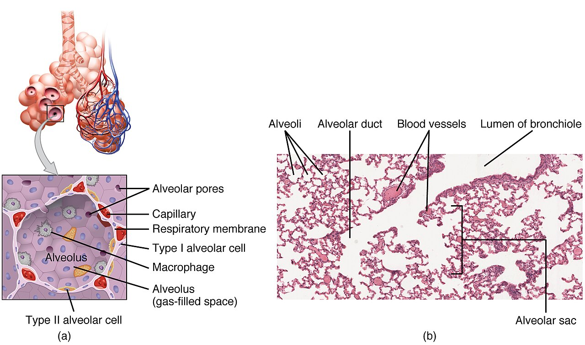
A tube with a muscle around it
Picture the airway as a branching tree of tubes that gets narrower with every division. From the mid-sized bronchi down to the terminal bronchioles, each tube is wrapped in a ring of bronchial smooth muscle. That muscle has a job — it fine-tunes where air goes — and it takes its orders from the autonomic nervous system. The parasympathetic nerves release acetylcholine onto M3 muscarinic receptors, and the muscle squeezes: bronchoconstriction, plus a squirt of mucus. Circulating epinephrine hits beta-2 adrenergic receptors, and the muscle relaxes: bronchodilation. Two switches, opposite directions. Nearly every bronchodilator in this chapter either pushes the beta-2 switch on or holds the M3 switch off.
Airflow through a tube is exquisitely sensitive to that tube's radius. Narrow a bronchiole a little and resistance climbs steeply — which is why a patient can go from talking in sentences to talking in single words in a matter of minutes, and why a drug that widens the tube even modestly produces a dramatic clinical improvement. It also explains why the same disease is far more dangerous in a toddler, whose airways are small to begin with.
Asthma and COPD: same organ, different problem
Asthma is two problems stacked on top of each other. The dramatic one is bronchoconstriction — the muscle clamping down in response to a trigger (cold air, exercise, dander, smoke, aspirin, a viral infection). The quiet one, running underneath at all times, is chronic airway inflammation: a swollen, edematous airway lining, mucus plugging, and an infiltrate of eosinophils and mast cells. The muscle spasm is what the patient feels. The inflammation is what makes the muscle twitchy in the first place — a state called airway hyperresponsiveness. Treat only the spasm and you are mopping the floor with the faucet running. Critically, asthma obstruction is largely reversible; that reversibility is what a bronchodilator demonstrates on spirometry.
COPD — chronic bronchitis plus emphysema, most often from tobacco — is a different animal. Here the obstruction is largely irreversible: alveolar walls have been destroyed, elastic recoil is gone, and airways collapse on exhalation, trapping air. Inflammation is present but is more neutrophil-driven and much less steroid-responsive than asthma's. So the emphasis flips. In asthma, the inhaled steroid is the backbone. In COPD, the long-acting bronchodilators are the backbone, and inhaled steroids are added selectively — mostly for frequent exacerbators — because in COPD they carry a real pneumonia risk.
| Feature | Asthma | COPD |
|---|---|---|
| Typical cause | Allergy / hyperresponsive airways; often starts young | Tobacco smoke (or long-term irritant exposure); usually after 40 |
| Obstruction | Largely reversible with a bronchodilator | Largely irreversible and progressive |
| Dominant cells | Eosinophils, mast cells | Neutrophils, macrophages |
| Course | Episodic — well between attacks | Daily symptoms with acute exacerbations |
| Backbone drug | Inhaled corticosteroid (controller) | Long-acting bronchodilator (LAMA and/or LABA) |
| Steroid response | Strong | Weak; ICS raises pneumonia risk |
Two targets, two jobs
Everything downstream follows from this: because there are two problems, there are two kinds of drugs, and patients must be able to tell them apart. A rescue (reliever) drug relaxes muscle right now and does nothing for inflammation. A controller (maintenance) drug calms inflammation over days to weeks and does nothing in an attack. Patients die from this confusion — reaching for a steroid inhaler during an attack and waiting for relief that is not coming, or feeling fine on their rescue inhaler and quietly abandoning the controller that was keeping them fine.
- Bronchial smooth muscle constricts via M3 muscarinic receptors and relaxes via beta-2 receptors — the two levers every bronchodilator pulls.
- Asthma = reversible bronchoconstriction layered on chronic inflammation; COPD = largely irreversible, smoking-driven, less steroid-responsive.
- Two targets means two drug jobs: rescue (relax muscle now) and controller (reduce inflammation over weeks).
- A silent chest, exhaustion, drowsiness, or single-word speech in an asthma attack signals impending respiratory failure.
Section 2Bronchodilators
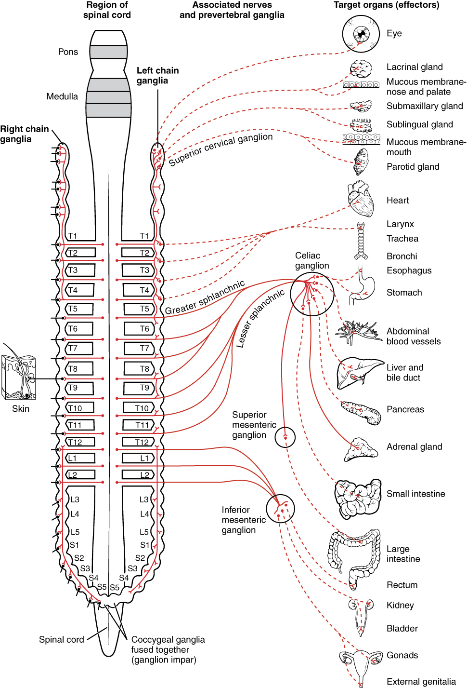
Beta-2 agonists: the fastest way to open a tube
A beta-2 agonist imitates epinephrine at the beta-2 receptor on bronchial smooth muscle, relaxing it within minutes. The prototype short-acting beta-2 agonist (SABA) is albuterol (known as salbutamol outside the United States) — onset within about 5 minutes, duration 4 to 6 hours. This is the rescue inhaler. It is also the drug given before exercise for exercise-induced bronchospasm, and the drug nebulized continuously in a severe attack. Levalbuterol is the purified isomer, marketed as gentler on the heart; in practice the difference is modest.
The adverse effects are simply beta stimulation leaking beyond the lung. Expect tremor (the most common complaint — warn patients, it is not an allergy), tachycardia and palpitations, restlessness, and headache. Two metabolic effects matter more than students expect: beta-2 stimulation drives potassium into cells, so repeated or continuous albuterol causes hypokalemia — watch the potassium and the monitor in status asthmaticus — and it raises blood glucose. That intracellular potassium shift is exactly why albuterol is also used, off the respiratory service entirely, as an adjunct in acute hyperkalemia.
Long-acting beta-2 agonists (LABAs) — salmeterol and formoterol — hold the receptor for about 12 hours; newer ultra-long agents such as vilanterol and indacaterol last 24. They are maintenance drugs, dosed on a schedule, and salmeterol's slow onset makes it useless in an attack. The safety rule that must never be broken: a LABA is never used alone in asthma. LABA monotherapy in asthma was linked to increased asthma-related deaths, and every asthma LABA is now sold combined with an inhaled corticosteroid for exactly that reason. (In COPD, where the mechanism differs, LABA monotherapy is acceptable.) Formoterol is the exception on speed — it has a fast onset, which is why some budesonide/formoterol regimens are used as both controller and reliever from one inhaler.
Anticholinergics: holding the other switch off
If beta-2 agonists push the "relax" switch, anticholinergics (antimuscarinics) block the "constrict" one, occupying M3 receptors so acetylcholine cannot reach them. They dilate a little more slowly than albuterol but dry secretions as a bonus, and because vagal tone contributes heavily to COPD obstruction, they are proportionally more useful in COPD than in asthma. Ipratropium is the short-acting agent (SAMA) — frequently paired with albuterol in a single nebulizer solution or combination inhaler because the combination outperforms either alone in an exacerbation. Tiotropium, umeclidinium, aclidinium, and glycopyrrolate are the long-acting agents (LAMAs), dosed once or twice daily for maintenance — never for rescue.
These molecules are quaternary and poorly absorbed, so systemic anticholinergic effects are milder than with oral agents — but they are not zero. Expect dry mouth (offer sugar-free candy and good oral care), and counsel about urinary retention in men with prostatic enlargement and constipation in the elderly. One practical teaching point: if the mist escapes into the eye it can cause blurred vision, pupil dilation, and eye pain, and it can precipitate an attack in narrow-angle glaucoma — so use a mouthpiece rather than a loose face mask when you can, and keep the nebulizer mist out of the eyes.
Theophylline: the drug with no margin
Theophylline is a methylxanthine — chemically a cousin of caffeine — that relaxes airway smooth muscle and mildly stimulates respiratory drive. It was once a mainstay and is now a last resort, for one reason: a narrow therapeutic index. The target serum level is roughly 5–15 mcg/mL (older references cite 10–20), and the margin above it is thin — adverse effects climb steeply as levels pass 20 mcg/mL. Early toxicity looks like too much coffee — nausea, vomiting, insomnia, restlessness, tachycardia. Serious toxicity is cardiac dysrhythmias and seizures, and seizures can be the first sign in an older adult. There is no antidote; treatment is supportive, with activated charcoal and control of seizures and arrhythmias.
Theophylline is also an interaction magnet, cleared by CYP1A2. Ciprofloxacin, cimetidine, erythromycin, and fluvoxamine push levels up. Rifampin, phenytoin, carbamazepine, and — importantly — cigarette smoking induce metabolism and push levels down, which sets a beautiful trap: a smoker stabilized on theophylline who quits (or is admitted to a smoke-free hospital) can drift into toxicity within days on an unchanged dose. Teach patients to limit caffeine, which stacks additively on the same symptoms. Related note: roflumilast, an oral PDE4 inhibitor, is used in severe COPD with chronic bronchitis to reduce exacerbations — it is not a bronchodilator and not a rescue drug, and it causes weight loss, diarrhea, and mood changes worth screening for.
| Class | Prototype | Onset / role | Key effect | Nursing alert |
|---|---|---|---|---|
| SABA | Albuterol | ~5 min; RESCUE | Beta-2 agonist → smooth muscle relaxes | Tremor, tachycardia, hypokalemia, hyperglycemia; must be carried at all times |
| LABA | Salmeterol, formoterol | 12 h; maintenance only | Sustained beta-2 agonism | Never alone in asthma — must be paired with an ICS; not for an attack |
| SAMA | Ipratropium | 15–30 min; acute add-on | Blocks M3 → less constriction & mucus | Dry mouth; keep mist out of the eyes; caution in BPH, narrow-angle glaucoma |
| LAMA | Tiotropium | 24 h; maintenance only | Long M3 blockade — COPD backbone | Not for rescue; dry mouth, urinary retention, constipation |
| Methylxanthine | Theophylline | Oral; last-line maintenance | Relaxes muscle; stimulates respiratory drive | Level 5–15 mcg/mL (toxic above ~20); N/V → arrhythmia → seizure; no antidote; smoking lowers levels, ciprofloxacin raises them |
| PDE4 inhibitor | Roflumilast | Oral; COPD exacerbation prevention | Anti-inflammatory, not bronchodilator | Weight loss, diarrhea, mood/psychiatric changes |
- Albuterol is the rescue drug: onset in minutes; expect tremor, tachycardia, hypokalemia, and hyperglycemia.
- LABAs are never used as monotherapy in asthma — always combined with an inhaled corticosteroid.
- Ipratropium/tiotropium block M3 receptors; more central in COPD; dry mouth, and keep the mist out of the eyes.
- Theophylline has a narrow window (5–15 mcg/mL) — nausea and insomnia warn, seizures and arrhythmias kill; smoking and ciprofloxacin swing levels hard.
Section 3Inhaled corticosteroids & controllers
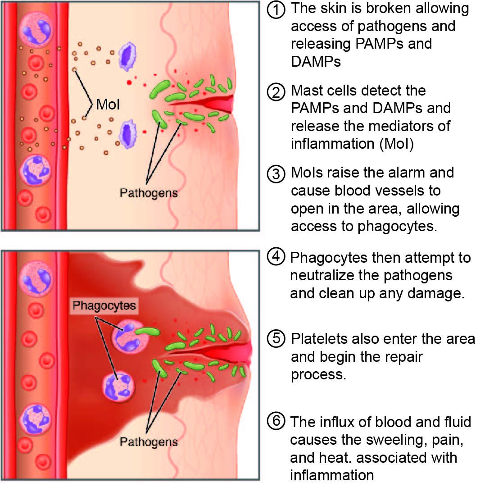
Inhaled corticosteroids: the backbone
Inhaled corticosteroids (ICS) — fluticasone, budesonide, beclomethasone, mometasone, ciclesonide — are the most effective anti-inflammatory drugs available for asthma and the foundation of every step of therapy above the mildest. They work at the level of gene transcription: suppressing inflammatory mediators, reducing eosinophils and mucosal edema, and — over time — restoring beta-2 receptor responsiveness so the rescue inhaler works better. That mechanism explains the single most important teaching point: an ICS is slow. It takes days to begin working and one to two weeks (sometimes longer) for full benefit, and it is useless in an acute attack. Patients must take it every day even when they feel perfectly well, which is precisely when adherence collapses.
Because the drug is delivered to the lung rather than swallowed, systemic effects are far smaller than with oral prednisone — but the drug that lands in the mouth still matters. The two classic local effects are oral candidiasis (thrush — white plaques, sore mouth) and dysphonia, a hoarse voice from steroid effect on the laryngeal muscles. Both are largely prevented by two habits: rinse the mouth and spit after every dose, and use a spacer. At high doses over long periods, systemic effects reappear — a small reduction in growth velocity in children (monitor height at visits), bone density loss, cataracts, and glaucoma — so we use the lowest dose that maintains control. In COPD, add one more: ICS use increases the risk of pneumonia.
The rest of the controller shelf
Combination inhalers put an ICS and a LABA in one device (fluticasone/salmeterol, budesonide/formoterol, fluticasone/vilanterol), which improves both control and adherence and guarantees the LABA is never taken alone. Triple therapy adds a LAMA in the same inhaler for severe disease.
Leukotriene modifiers are oral, which patients love. Montelukast blocks the leukotriene receptor; it is taken once daily in the evening, is helpful in patients with concurrent allergic rhinitis, exercise-induced bronchospasm, or aspirin-exacerbated respiratory disease — and it carries a boxed warning for serious neuropsychiatric events, including agitation, depression, nightmares, and suicidal thinking. Ask about mood and sleep at every visit, in children as well as adults, and tell families exactly what to watch for. Zafirlukast is similar; zileuton blocks leukotriene synthesis and requires liver enzyme monitoring. None of these is a rescue drug.
Cromolyn, a mast cell stabilizer, is purely prophylactic — it prevents mediator release and must be taken before exposure (dosed before exercise or a known allergen), never during symptoms. Biologics are for severe, poorly controlled disease and are given by injection in a monitored setting: omalizumab (anti-IgE) carries a boxed warning for anaphylaxis, so observe the patient after dosing and have epinephrine ready; mepolizumab (anti–IL-5) and benralizumab (anti–IL-5 receptor) and dupilumab (blocks the IL-4 receptor alpha subunit, so both IL-4 and IL-13 signaling) target eosinophilic and type-2 phenotypes. Finally, systemic corticosteroids — oral prednisone or IV methylprednisolone — are the workhorse of exacerbations. A short burst needs no taper; courses beyond roughly two weeks must be tapered to let the adrenal axis recover. Watch glucose in every diabetic patient you put on a steroid burst.
| Class | Prototype | Role | Nursing alert |
|---|---|---|---|
| Inhaled corticosteroid | Fluticasone, budesonide | Controller backbone — daily, asthma | Rinse and spit; use a spacer; thrush, hoarseness; not for an attack; monitor child growth |
| ICS + LABA | Fluticasone/salmeterol | Daily control when ICS alone is not enough | Still not rescue (unless a formoterol-based reliever regimen is ordered); same rinse rule |
| Leukotriene modifier | Montelukast | Oral add-on; asthma + allergic rhinitis | Boxed warning: neuropsychiatric events — ask about mood, sleep, agitation |
| 5-lipoxygenase inhibitor | Zileuton | Oral alternative | Monitor liver enzymes |
| Mast cell stabilizer | Cromolyn | Prophylaxis only — before exercise/allergen | Worthless once symptoms start; must be scheduled |
| Biologic | Omalizumab, mepolizumab | Severe, refractory asthma | Omalizumab: boxed warning — anaphylaxis; observe after injection, epinephrine available |
| Systemic corticosteroid | Prednisone | Exacerbation burst; severe disease | Hyperglycemia, infection risk, mood; taper if used beyond ~2 weeks |
Technique is the drug
An inhaler the patient cannot use correctly is a placebo with a copay, and studies consistently find that most patients — and a discouraging share of clinicians — get it wrong. Teach the metered-dose inhaler sequence explicitly, then have the patient demonstrate it back: shake the canister; breathe all the way out; seal the lips around the mouthpiece or spacer; press as you begin a slow, deep breath in; hold that breath about 10 seconds; wait roughly one minute between puffs. A spacer should be the default for any MDI — it removes the need for perfect hand-breath timing, puts more drug in the lung, and drops far less steroid on the throat. Dry powder inhalers reverse one rule: the breath in must be fast and forceful to break up the powder, and the patient must never exhale into the device, because humidity clumps the dose. Teach patients to track doses with the counter rather than the old float-the-canister trick, which does not work.
Peak flow monitoring gives the patient an objective number before symptoms get loud. After establishing a personal best, the zones are read like a traffic light: green is 80–100% of personal best (good control, continue), yellow is 50–79% (caution — take the rescue inhaler and follow the action plan), and red is below 50% (medical alert — rescue inhaler now and get help). Every asthma patient should leave with a written action plan that names their drugs by job, not just by color.
- ICS is the controller backbone in asthma — slow onset, taken daily even when well, never used as rescue.
- Prevent thrush and dysphonia with rinse-and-spit plus a spacer; high-dose long-term ICS adds growth, bone, cataract, glaucoma, and (in COPD) pneumonia risk.
- Montelukast carries a boxed warning for neuropsychiatric effects; omalizumab for anaphylaxis; zileuton needs LFT monitoring.
- MDI = slow deep breath with a spacer; DPI = fast forceful breath, never exhale into it. Peak flow zones: green 80–100%, yellow 50–79%, red under 50%.
Section 4Cough, cold & allergy drugs
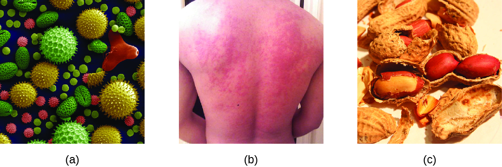
Antihistamines: two generations, one receptor
When an allergen cross-links IgE on a mast cell, the cell degranulates and dumps histamine, which acts on H1 receptors to produce the familiar package: itch, sneezing, runny nose, watery eyes, hives, and vasodilation. Antihistamines block H1. Two facts frame everything a nurse teaches about them. First, they block the receptor rather than remove histamine already bound — so they work far better taken before exposure than after symptoms peak. Second, antihistamines do not treat anaphylaxis. Epinephrine treats anaphylaxis; an antihistamine only softens the hives and itch afterward. Confusing those two has killed people.
First-generation agents — diphenhydramine, chlorpheniramine, hydroxyzine, promethazine — cross the blood-brain barrier freely and are strongly anticholinergic. They cause pronounced sedation (which is why diphenhydramine is quietly sold as a sleep aid) plus dry mouth, blurred vision, constipation, and urinary retention. They are on the Beers criteria as potentially inappropriate in older adults, where they contribute to confusion, falls, and retention; in young children they can produce paradoxical excitation instead of sleep. Two specific alarms: promethazine carries boxed warnings for severe tissue injury including gangrene when it extravasates or is given intra-arterially (dilute it, give it slowly into a large free-flowing line, stop instantly for burning or pain), and it is contraindicated under 2 years of age because of fatal respiratory depression.
Second-generation agents — loratadine, cetirizine, fexofenadine, levocetirizine — barely cross into the brain, so they are far less sedating and far less anticholinergic, dose once daily, and are the right choice for a person who has to drive, study, or work. Cetirizine is the most likely of the group to cause some drowsiness. A concrete counseling point: fexofenadine absorption drops substantially if taken with fruit juice (apple, orange, grapefruit) or too close to an antacid — take it with water. For allergic rhinitis specifically, the most effective drugs are not antihistamines at all but intranasal corticosteroids (fluticasone, mometasone, triamcinolone). Teach patients they need daily use for days before full effect, and to aim the spray away from the nasal septum — toward the same-side ear — to prevent epistaxis and, rarely, septal perforation.
Decongestants, antitussives, and the rest of the aisle
Decongestants are alpha-adrenergic agonists — acting chiefly at alpha-1 receptors — that vasoconstrict swollen nasal mucosa. Oral pseudoephedrine works but is systemic: it raises blood pressure and heart rate and causes insomnia and jitteriness, so it is cautioned in hypertension, coronary disease, hyperthyroidism, diabetes, BPH, and narrow-angle glaucoma, and it is kept behind the pharmacy counter because it can be diverted into methamphetamine manufacture. Oral phenylephrine replaced it on open shelves, but the evidence says it is essentially ineffective at approved oral doses — a fact worth knowing when a patient reports that "the cold medicine did nothing." Topical sprays (oxymetazoline, phenylephrine) work beautifully and carry the hardest rule in this section: no more than 3 days. Beyond that, stopping causes rebound congestion (rhinitis medicamentosa) worse than the original, and patients get trapped in a cycle of using the spray to treat the spray.
Antitussives suppress the cough reflex, which is appropriate for a dry, exhausting, sleep-wrecking cough and inappropriate for a wet, productive one — you do not want to stop a patient from clearing secretions. Dextromethorphan acts centrally; it is safe at label doses but has real abuse potential at high doses and can contribute to serotonin syndrome when combined with MAOIs, SSRIs, or linezolid. Codeine is an opioid antitussive with all the opioid baggage — sedation, constipation, respiratory depression — and a boxed warning: it is contraindicated in children under 12, and in anyone under 18 after tonsillectomy or adenoidectomy, because ultra-rapid CYP2D6 metabolizers convert it to morphine fast enough to stop breathing. Benzonatate is different: it numbs stretch receptors in the airway. It must be swallowed whole — chewing or sucking the capsule numbs the mouth and throat and risks choking — and even a few capsules can be fatal to a small child, so it goes somewhere locked.
Two more worth naming. Guaifenesin, an expectorant, thins secretions so a cough can move them; it only works if the patient drinks plenty of fluid, which is the entire teaching point. Acetylcysteine, a mucolytic, breaks the disulfide bonds in mucus — it smells strongly of rotten eggs, so warn the patient, and have suction available because it can loosen a large volume at once. (The same molecule, given IV or orally, is the antidote for acetaminophen overdose — a useful hook.) Finally, remember the pediatric rule: over-the-counter cough and cold combinations are not recommended in young children — contraindicated under 2 years and labeled against under 4 — because they carry real risk and have never shown benefit. Honey (over age 1), fluids, and humidified air are the honest advice.
| Class | Prototype | Key effect | Nursing alert |
|---|---|---|---|
| Antihistamine, 1st gen | Diphenhydramine | H1 block; crosses into CNS | Sedation + anticholinergic; Beers in elders; paradoxical excitation in kids; no driving |
| — promethazine | Promethazine | H1 block, antiemetic | Boxed: gangrene with extravasation; contraindicated under 2 years |
| Antihistamine, 2nd gen | Loratadine, cetirizine, fexofenadine | Peripheral H1 block | Minimal sedation; fexofenadine: not with fruit juice or antacids |
| Intranasal steroid | Fluticasone nasal | Best drug for allergic rhinitis | Daily use, days for effect; aim away from the septum → epistaxis |
| Decongestant, oral | Pseudoephedrine | Alpha-1 → nasal vasoconstriction | Raises BP/HR, insomnia; caution in HTN, CAD, hyperthyroid, BPH, glaucoma |
| Decongestant, topical | Oxymetazoline | Fast, potent nasal vasoconstriction | 3 days maximum — rebound congestion beyond that |
| Antitussive, central | Dextromethorphan | Suppresses cough reflex | Abuse potential; serotonin syndrome with MAOIs/SSRIs; not for a productive cough |
| Antitussive, opioid | Codeine | Central cough suppression | Boxed: contraindicated under 12, and under 18 post-tonsillectomy; sedation, constipation |
| Antitussive, local | Benzonatate | Numbs airway stretch receptors | Swallow whole — never chew; fatal to small children; store locked |
| Expectorant | Guaifenesin | Thins secretions | Only works with generous fluid intake |
| Mucolytic | Acetylcysteine | Breaks mucus disulfide bonds | Rotten-egg odor; have suction ready; also the acetaminophen antidote |
- Antihistamines block H1 and do not treat anaphylaxis — epinephrine does; they also work best taken before exposure.
- First-generation agents sedate and are anticholinergic (Beers in elders); second-generation agents (loratadine, cetirizine, fexofenadine) do not.
- Topical decongestants: 3 days maximum or rebound congestion; oral pseudoephedrine raises BP and HR.
- Benzonatate is swallowed whole, codeine is boxed-warning contraindicated under 12, and guaifenesin only works with fluids.
Section 5Eye & ear drops
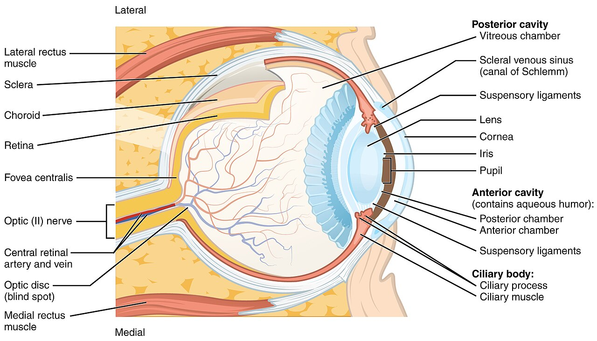
Glaucoma: a plumbing problem
The front of the eye continuously makes a clear fluid, aqueous humor, which nourishes the cornea and lens and then drains out through the angle where the iris meets the cornea. Intraocular pressure (IOP) is simply the balance between how fast fluid is made and how fast it leaves. In glaucoma, drainage cannot keep up, pressure rises, and the optic nerve is slowly strangled — painlessly, from the periphery inward, which is why it is called the silent thief of sight and why patients cannot feel whether their drops are working. In open-angle glaucoma (the common, chronic form) the drain is sluggish; in angle-closure glaucoma the iris physically blocks the angle, pressure spikes, and the patient presents with a red, rock-hard, agonizing eye, a fixed mid-dilated pupil, halos, headache, and vomiting. That is an emergency — vision is lost in hours, not months.
Since IOP is production minus outflow, every drug in the class does one of two things. Prostaglandin analogs — latanoprost, bimatoprost, travoprost — increase uveoscleral outflow, are first-line, and are dosed once daily at bedtime. Warn patients about the cosmetic effects, or they will stop the drug: permanent brown iris pigmentation, darkening of the eyelid skin, and longer, thicker lashes, sometimes in only one eye. Beta blockers — timolol — reduce aqueous production. They are the hidden danger in this chapter: a drop that drains down the tear duct is absorbed systemically without ever passing the liver, and topical timolol has caused bradycardia, hypotension, and life-threatening bronchospasm. Screen for asthma, COPD, heart block, and bradycardia before it is instilled, and teach punctal occlusion. Alpha-2 agonists (brimonidine) both reduce production and improve outflow; they are contraindicated under 2 years of age and used cautiously in older children, because they can cause profound CNS depression, bradycardia, and apnea in the very young. Carbonic anhydrase inhibitors — topical dorzolamide, oral acetazolamide — reduce production; they are sulfonamides (ask about sulfa allergy), and the oral form causes paresthesias, a metallic taste, potassium loss, and metabolic acidosis. Cholinergic miotics (pilocarpine) constrict the pupil to pull the iris out of the angle — still valuable in acute angle closure — and cause dim, blurry vision and brow ache. Netarsudil, a Rho kinase inhibitor, improves outflow and commonly reddens the eye.
| Class | Prototype | How it lowers IOP | Nursing alert |
|---|---|---|---|
| Prostaglandin analog | Latanoprost | Increases outflow (uveoscleral) | First-line, once daily at bedtime; permanent iris/lid darkening, lash growth — warn or they quit |
| Beta blocker | Timolol | Decreases aqueous production | Systemically absorbed: bradycardia, bronchospasm; screen asthma/COPD/heart block; punctal occlusion |
| Alpha-2 agonist | Brimonidine | Decreases production + increases outflow | Dry mouth, drowsiness; avoid in infants — CNS depression, apnea |
| Carbonic anhydrase inhibitor | Dorzolamide (topical), acetazolamide (oral) | Decreases production | Sulfa agents; oral: paresthesias, metallic taste, hypokalemia, metabolic acidosis |
| Cholinergic miotic | Pilocarpine | Miosis opens the drainage angle | Dim/blurred vision, brow ache; fall risk at night; used in acute angle closure |
| Rho kinase inhibitor | Netarsudil | Increases trabecular outflow | Conjunctival redness is common and expected |
Getting the drop where it belongs
A drop that lands on a cheek is a missed dose that the chart will record as given. Teach and perform the sequence deliberately. Wash hands and check the label for "ophthalmic." Have the patient sit or lie with the head tilted back and eyes looking up. Pull the lower lid down to form a pouch — the conjunctival sac — and instill one drop into it, holding the bottle about an inch above and never touching the tip to the eye, lashes, or fingers, which contaminates the bottle. Have the patient close the eye gently (not squeeze, which pumps the drug out) and apply punctal occlusion: light pressure on the inner corner near the nose for 1–2 minutes. This one maneuver keeps the drug in the eye and out of the bloodstream, and it is the difference between timolol treating an eye and timolol dropping a heart rate. The eye only holds about one drop's worth of volume, so a second drop of the same drug is waste. When two different drops are due, wait at least 5 minutes between them or the second washes out the first. Give solutions before suspensions, and always put ointments last — ointment blurs vision (so bedtime is ideal) and seals the surface against anything that follows. Contact lenses come out first; each patient gets their own bottle, never shared.
Otic drops follow their own rules, and the first one is absolute: ophthalmic drops may be used in the ear, but otic drops must never go in the eye. Ophthalmic preparations are sterile and formulated for eye tissue; otic ones are not, and will injure a cornea. Beyond that, warm the bottle to about body temperature by rolling it in your hands — cold fluid against the tympanic membrane stimulates the vestibular apparatus and causes dizziness, nausea, and vertigo. Straighten the canal by pulling the pinna up and back for adults and children over about 3, and down and back for infants and younger children, whose canals angle differently. Instill the drops against the side of the canal so air can escape, keep the patient lying on the unaffected side for 3–5 minutes, and if a cotton ball is used, place it loosely at the opening only — never pack it, or it absorbs the dose.
The drugs themselves are a short list. Ofloxacin otic and ciprofloxacin/dexamethasone treat otitis externa and infected tubes; the steroid component calms swelling and pain. Neomycin/polymyxin B/hydrocortisone is effective but ototoxic — it is contraindicated when the tympanic membrane is perforated or tubes are present, because neomycin reaching the middle ear can damage hearing permanently. Assess for perforation, drainage, or tubes before instilling anything, and if you are unsure, stop and ask. Carbamide peroxide softens cerumen by foaming; it is not an antibiotic and must not be used on a draining or perforated ear. And note that topical anesthetic ear drops are no longer an approved option in many settings — systemic analgesia is the safer route for ear pain.
- IOP = production minus outflow; latanoprost (first-line, bedtime) increases outflow, timolol and dorzolamide reduce production.
- Topical timolol is absorbed systemically — bradycardia and bronchospasm are real; screen for asthma/COPD and teach punctal occlusion.
- Eye drops go in the conjunctival sac, one drop, tip touches nothing, 5 minutes between different drops, ointments last.
- Otic: warm the drops; pinna up and back (adult) or down and back (young child); never put otic drops in an eye; neomycin-containing drops are contraindicated with a perforated eardrum.
The chapter in one breath
- The airway has two drug targets: bronchoconstriction (M3 constricts, beta-2 relaxes) and inflammation — which is why every patient carries two kinds of inhaler.
- Rescue means albuterol, in minutes; controller means an inhaled corticosteroid, over weeks. Mixing them up is a fatal error, not a vocabulary slip.
- Albuterol brings tremor, tachycardia, hypokalemia, and hyperglycemia; LABAs are never given alone in asthma; ipratropium/tiotropium block M3 and anchor COPD therapy.
- Theophylline has almost no margin — 5–15 mcg/mL, nausea and insomnia first, then arrhythmias and seizures; smoking and ciprofloxacin move the level hard.
- Inhaled corticosteroids demand daily use, rinse-and-spit, and a spacer; montelukast carries a neuropsychiatric boxed warning; technique and peak-flow zones (green/yellow/red) are the teaching.
- Antihistamines do not treat anaphylaxis; first-generation agents sedate and are Beers-listed; topical decongestants get 3 days before rebound; benzonatate is swallowed whole.
- Glaucoma drugs either cut aqueous production or open outflow; latanoprost is first-line, and topical timolol can bradycard or bronchospasm a systemic patient.
- Technique is the drug: conjunctival sac, one drop, punctal occlusion, 5 minutes between drops, ointment last — and warm otic drops with the pinna up and back in adults, down and back in young children.
ReferenceWords worth knowing
A quick reference for the terms in this chapter — skim it now, or circle back whenever a word trips you up.
- Airway hyperresponsiveness
- The twitchy, easily triggered state of chronically inflamed bronchial smooth muscle; the reason controllers reduce attacks.
- Aqueous humor
- The clear fluid made in the anterior eye and drained at the angle; its production-versus-outflow balance sets intraocular pressure.
- Beta-2 agonist
- A drug that stimulates beta-2 receptors on bronchial smooth muscle to produce bronchodilation, e.g., albuterol (short-acting) or salmeterol (long-acting).
- Bronchoconstriction
- Narrowing of the airway by contraction of bronchial smooth muscle, mediated by acetylcholine at M3 muscarinic receptors.
- Bronchodilator
- Any drug that relaxes bronchial smooth muscle and widens the airway — beta-2 agonists, antimuscarinics, and methylxanthines.
- Conjunctival sac
- The pouch formed by pulling down the lower eyelid; the correct target for an eye drop, never the cornea itself.
- Controller (maintenance) drug
- A scheduled daily drug that reduces airway inflammation over days to weeks, e.g., an inhaled corticosteroid; useless in an acute attack.
- Dysphonia
- Hoarseness or voice change; a local adverse effect of inhaled corticosteroids, reduced by a spacer and rinse-and-spit.
- Expectorant
- A drug such as guaifenesin that thins respiratory secretions so a cough can clear them; requires generous fluid intake to work.
- Glaucoma
- Optic nerve damage associated with elevated intraocular pressure; chronic open-angle disease is painless, while acute angle-closure is a sight-threatening emergency.
- Intraocular pressure (IOP)
- Pressure inside the eye, determined by aqueous humor production minus outflow; the modifiable target of every glaucoma drug.
- LABA
- Long-acting beta-2 agonist (salmeterol, formoterol); maintenance only, and never used as monotherapy in asthma.
- LAMA
- Long-acting muscarinic antagonist (tiotropium, umeclidinium); a once- or twice-daily maintenance bronchodilator and the backbone of COPD therapy.
- Methylxanthine
- A caffeine-related bronchodilator, chiefly theophylline; narrow therapeutic index with a target level of about 5–15 mcg/mL.
- Mucolytic
- A drug such as acetylcysteine that chemically breaks up thick mucus by cleaving disulfide bonds.
- Ototoxicity
- Drug-induced injury to hearing or balance; the reason neomycin-containing otic drops are contraindicated with a perforated eardrum.
- Peak expiratory flow
- The fastest speed a patient can blow out, measured against personal best: green 80–100%, yellow 50–79%, red below 50%.
- Punctal occlusion
- Gentle pressure on the inner corner of the closed eye for 1–2 minutes after a drop, keeping drug in the eye and out of systemic circulation.
- Rebound congestion (rhinitis medicamentosa)
- Worsening nasal congestion caused by topical decongestant use beyond about 3 days.
- Rescue (reliever) drug
- A fast-acting bronchodilator, prototypically albuterol, used for acute symptoms; it treats the spasm, not the inflammation.
- SABA
- Short-acting beta-2 agonist (albuterol); onset about 5 minutes, duration 4–6 hours — the rescue inhaler.
- Spacer
- A holding chamber attached to a metered-dose inhaler that removes the need for perfect timing, increases lung delivery, and reduces oropharyngeal steroid deposition.
Check yourself
Gastrointestinal Drugs
The gut is the one organ system your patients will tell you about without being asked. Heartburn, nausea, constipation, diarrhea — these complaints are so ordinary that it is easy to treat them casually, and that is exactly where nurses get into trouble. A proton pump inhibitor given after breakfast does almost nothing. An antidiarrheal given to the wrong patient can turn a survivable infection into toxic megacolon. An antiemetic pushed too fast into a small vein can cost a patient their hand. This chapter walks the gastrointestinal tract from the stomach to the colon, drug class by drug class, and keeps returning to the two questions that matter most at the bedside: when do I give this, and what am I watching for afterward.
By the end of this chapter you can
- Explain how the parietal cell makes acid and where PPIs, H2 blockers, and antacids each interrupt it.
- Time acid-suppressing and mucosal-protective drugs correctly, and name the long-term risks of chronic PPI therapy.
- Describe current Helicobacter pylori eradication regimens and the teaching that makes them succeed.
- Map the four inputs to the vomiting center and match each antiemetic class to the receptor it blocks.
- Compare laxative classes by mechanism and onset, and state when a laxative must not be given.
- Identify the patients in whom antidiarrheals are contraindicated, and explain why.
- Outline drug therapy for inflammatory bowel disease, including the screening required before a biologic.
- Prioritize nursing monitoring, teaching, and safety alerts for the major GI drug classes.
Section 1Acid and ulcer drugs
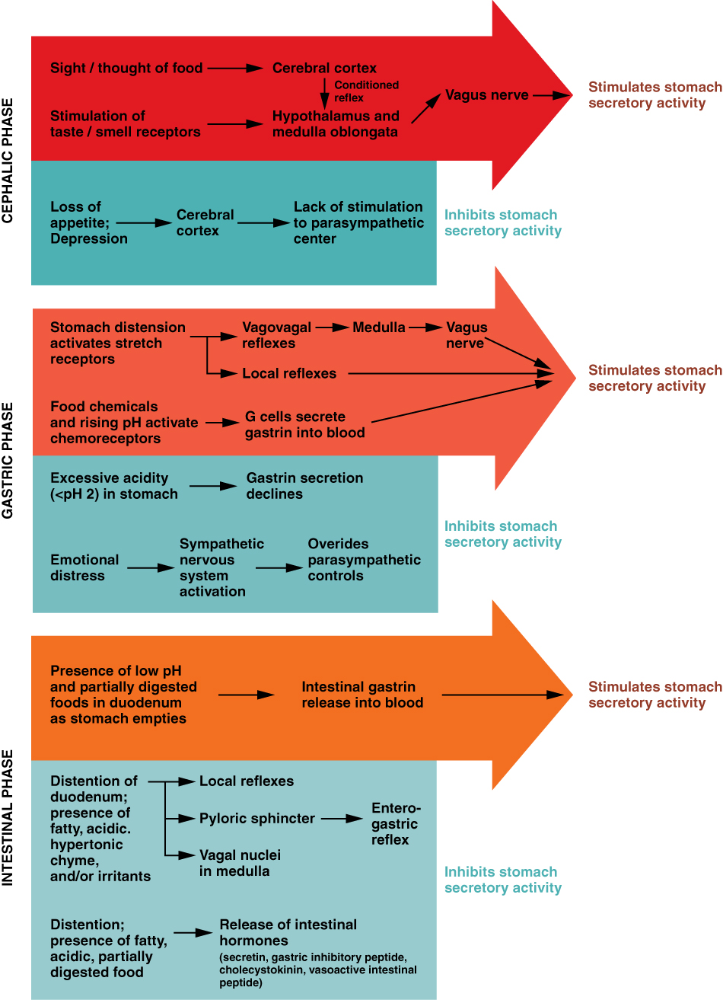
Why the stomach does not digest itself
The stomach lining is a standoff between two forces. On the attack: hydrochloric acid, pumped into the lumen by the parietal cell through an enzyme called the H+/K+-ATPase — the proton pump. Three signals turn that pump on: gastrin from G cells, histamine acting on H2 receptors, and acetylcholine from the vagus nerve acting on M3 receptors. Histamine is the amplifier; block it and the other two lose most of their punch.
On the defense: a layer of mucus, a cushion of bicarbonate underneath it, brisk mucosal blood flow, and prostaglandins that maintain all three. Damage happens when defense fails rather than when acid rises — which is why the two great causes of ulcers are Helicobacter pylori (which burrows into the mucus layer) and NSAIDs (which shut off the prostaglandins that build it). Understanding this explains an otherwise confusing fact: acid suppression heals ulcers, but it does not cure the cause.
Proton pump inhibitors: the strongest tool, and the most misused
Proton pump inhibitors (PPIs) — omeprazole, pantoprazole, esomeprazole, lansoprazole, rabeprazole, dexlansoprazole — shut down the pump itself, and they do it irreversibly. The cell must build new pumps to recover, which is why a once-daily dose suppresses acid for roughly 24 hours even though the drug clears from the blood in a couple of hours. They are the drugs of choice for erosive esophagitis, peptic ulcer disease, H. pylori regimens, NSAID ulcer prevention, and stress-ulcer prophylaxis in the ICU.
Timing is the single most important thing a nurse controls here. A PPI is a prodrug that only activates inside a pump that is actively secreting. If you give it to a fasting patient with dormant pumps, most of the dose is wasted. Give it 30–60 minutes before the first meal of the day — and if a patient tells you they take their omeprazole at bedtime with a snack, you have just found the reason their reflux never got better.
The long-term picture deserves respect. Chronic PPI use is associated with hypomagnesemia, vitamin B12 deficiency, iron malabsorption, increased Clostridioides difficile infection, community-acquired pneumonia, acute interstitial nephritis, and fracture of the hip, wrist, and spine. Stopping abruptly after months of therapy causes rebound acid hypersecretion — symptoms flare, the patient concludes they need the drug forever, and the cycle locks in. Taper instead. One interaction is worth memorizing: omeprazole and esomeprazole inhibit CYP2C19, the enzyme that activates clopidogrel, blunting its antiplatelet effect; pantoprazole is the preferred PPI in a patient on clopidogrel.
H2 blockers, antacids, and mucosal protectants
H2-receptor antagonists — famotidine, cimetidine, nizatidine — block histamine at the parietal cell. They work faster than PPIs but suppress less acid, and tolerance develops within days to weeks, so they are best for intermittent or nocturnal symptoms rather than as a long-term substitute for a PPI. (Ranitidine was withdrawn from the market in 2020 after NDMA contamination was found; do not expect to see it.) Famotidine is renally cleared — in kidney impairment or in an older adult, an unadjusted dose causes confusion, agitation, and delirium. Cimetidine is the outlier: a potent CYP450 inhibitor that raises levels of warfarin, phenytoin, and theophylline, and an antiandrogen that causes gynecomastia and impotence. It is rarely the right choice.
Antacids do not touch the pump — they chemically neutralize acid already present. Onset is minutes, duration is an hour or two, and the choice of cation determines the side effect: magnesium hydroxide causes diarrhea, aluminum hydroxide causes constipation (combination products pair them deliberately), calcium carbonate constipates and can cause milk-alkali syndrome, and sodium bicarbonate delivers a sodium load and systemic alkalosis. In renal failure, magnesium and aluminum accumulate. Antacids also bind other drugs — levothyroxine, tetracyclines, fluoroquinolones, iron — so separate them by 1–2 hours.
Sucralfate is a paste, not a blocker: in acid it polymerizes and sticks to the ulcer crater like a bandage. It needs acid to work and it binds anything nearby, so give it on an empty stomach, 1 hour before meals and at bedtime, and hold other oral drugs for 2 hours. Misoprostol, a prostaglandin E1 analog, replaces what NSAIDs removed and prevents NSAID ulcers — but it stimulates uterine contractions and is contraindicated in pregnancy. Confirm pregnancy status and teach reliable contraception before dispensing it.
| Class | Prototype | Key effect | Nursing alert |
|---|---|---|---|
| Proton pump inhibitor | Pantoprazole, omeprazole | Irreversibly blocks the H+/K+-ATPase; strongest acid suppression | 30–60 min before the first meal. Do not crush delayed-release forms. Watch Mg2+, B12, C. diff. Use pantoprazole with clopidogrel. |
| H2 blocker | Famotidine | Blocks histamine H2 on the parietal cell; faster onset, weaker effect | Reduce dose in renal impairment — confusion and delirium in older adults. Tolerance develops. |
| Antacid | Aluminum/magnesium hydroxide | Neutralizes existing acid; onset in minutes | Separate from other oral drugs by 1–2 h. Mag = diarrhea, Al = constipation; both accumulate in renal failure. |
| Mucosal protectant | Sucralfate | Forms a physical barrier over the ulcer bed | Empty stomach, 1 h before meals and at bedtime; separate other drugs by 2 h. Contains aluminum. |
| Prostaglandin analog | Misoprostol | Restores mucus and bicarbonate; prevents NSAID ulcers | Contraindicated in pregnancy — abortifacient. Diarrhea and cramping are common. |
| Bismuth compound | Bismuth subsalicylate | Coats mucosa, mildly antibacterial against H. pylori | Harmless black stool and black tongue — warn patients. It is a salicylate: avoid in children (Reye syndrome) and in aspirin allergy. |
Eradicating H. pylori
H. pylori causes most duodenal ulcers and a large share of gastric ulcers, and it is a recognized risk factor for gastric cancer — so eradication is not optional once it is found. Rising clarithromycin resistance has changed the recipe. Bismuth quadruple therapy — a PPI plus bismuth, tetracycline, and metronidazole for 10–14 days — is now the preferred first-line regimen in most settings, along with rifabutin triple therapy (omeprazole, amoxicillin, rifabutin). The older clarithromycin triple therapy (PPI, amoxicillin, clarithromycin) is reserved for regions with low resistance and patients with no prior macrolide exposure.
These regimens fail mostly for one reason: the patient stops taking them. Four drugs, several times a day, for two weeks, with a metallic taste and dark stools, in someone who feels better by day four. Your teaching is the intervention. Emphasize completing every dose, warn that metronidazole with alcohol causes a disulfiram-like reaction (flushing, vomiting, palpitations), that bismuth blackens the tongue and stool harmlessly, and that a follow-up breath or stool antigen test confirms cure at least 4 weeks after the antibiotics and bismuth finish — with the PPI held for 1–2 weeks before the test, because acid suppression suppresses the organism too and produces a false negative.
- The parietal cell proton pump is the final common path; PPIs block it irreversibly, H2 blockers block its histamine trigger, antacids neutralize acid downstream.
- PPIs are prodrugs activated by active pumps — give 30–60 minutes before the first meal, and taper rather than stop abruptly.
- Chronic PPI risks: hypomagnesemia, B12 deficiency, C. difficile, pneumonia, interstitial nephritis, fractures; use pantoprazole with clopidogrel.
- Bismuth quadruple therapy is first-line for H. pylori; adherence teaching — and the alcohol–metronidazole warning — is the nursing job.
Section 2Antiemetics

Four roads to the vomiting center
Vomiting is a reflex, coordinated by a network in the medulla usually called the vomiting center. It has four separate inputs, and every antiemetic class works by cutting one of those roads. Match the drug to the road and you will almost never pick the wrong agent.
The first road is the chemoreceptor trigger zone (CTZ), sitting in the area postrema on the floor of the fourth ventricle. It lies outside the blood–brain barrier, which makes it a chemical sensor for the bloodstream — it detects opioids, chemotherapy, anesthetics, uremia, and toxins. It is dense in dopamine D2, serotonin 5-HT3, and neurokinin-1 (NK1) receptors. The second road is the gut itself: chemotherapy and radiation damage enterochromaffin cells, which dump serotonin onto 5-HT3 receptors on vagal afferents — a signal that travels from the small bowel to the medulla in minutes. The third road is the vestibular apparatus, rich in histamine H1 and muscarinic receptors, which is why motion sickness responds to antihistamines and scopolamine but not to ondansetron. The fourth road is the cerebral cortex — anxiety, smells, memory — the source of anticipatory nausea, which is why a benzodiazepine is sometimes the right antiemetic.
The classes
| Class | Prototype | Key effect | Nursing alert |
|---|---|---|---|
| 5-HT3 antagonist | Ondansetron | Blocks serotonin at vagal afferents and CTZ; first-line for chemo and post-op nausea | QT prolongation — check ECG and K+/Mg2+; push IV slowly. Headache and constipation are common. Serotonin syndrome risk with other serotonergic drugs. |
| NK1 antagonist | Aprepitant | Blocks substance P; covers delayed chemo-induced nausea | CYP3A4 interactions — reduces oral contraceptive efficacy (backup method for 1 month), alters warfarin and dexamethasone dosing. |
| Dopamine D2 antagonist | Metoclopramide, prochlorperazine; promethazine (phenothiazine, mainly H1) | Blocks D2 in the CTZ; metoclopramide also speeds gastric emptying. Promethazine's antiemetic effect is largely H1 and antimuscarinic. | Extrapyramidal symptoms and, for metoclopramide, a boxed warning for tardive dyskinesia — limit to 12 weeks. Promethazine carries a boxed warning for severe tissue injury and gangrene on extravasation. |
| Antihistamine (H1) | Meclizine, dimenhydrinate | Blocks the vestibular road; motion sickness and vertigo | Sedation, dry mouth, urinary retention; confusion and falls in older adults (Beers criteria). Useless for chemo-induced nausea. |
| Anticholinergic | Scopolamine (transdermal) | Blocks muscarinic vestibular input; motion sickness prophylaxis | Apply behind the ear 4 h before travel, change every 72 h, wash hands afterward — drug on the fingers reaches the eye and dilates the pupil. |
| Corticosteroid | Dexamethasone | Adjunct that boosts every other antiemetic in chemo regimens | Hyperglycemia, insomnia, mood change; check glucose in diabetic patients. |
| Cannabinoid | Dronabinol | Refractory chemo-induced nausea; also stimulates appetite | Dysphoria, dizziness, sedation — poorly tolerated by older adults. Schedule III. |
| Benzodiazepine | Lorazepam | Blunts anticipatory nausea driven by the cortex | Sedation and fall risk; not an antiemetic on its own. |
Two special cases are worth knowing cold. In pregnancy, first-line pharmacologic therapy for nausea and vomiting is doxylamine plus pyridoxine (vitamin B6) — among the best-studied drugs in pregnancy — with ondansetron and metoclopramide as later options. And promethazine should be treated with the caution reserved for a high-alert drug: it is contraindicated in children under 2 years because of fatal respiratory depression, and if given IV it must be well diluted and infused slowly into a large, patent vein, because perivascular leak causes tissue necrosis severe enough to require amputation. Deep IM into a large muscle is safer.
What a nurse actually does
Prevention beats rescue every time. Chemotherapy antiemetics are given before the drug that causes the nausea, not after the patient is retching, and the regimen is matched to the emetogenic risk of the chemotherapy — commonly a 5-HT3 antagonist plus dexamethasone plus an NK1 antagonist for highly emetogenic protocols. Beyond dosing, assess what vomiting is doing to the body: loss of gastric contents means loss of hydrogen, chloride, and potassium, producing hypokalemic hypochloremic metabolic alkalosis and dehydration. Track intake and output, daily weight, skin turgor, orthostatic vital signs, and electrolytes. Protect the airway in anyone sedated or with reduced consciousness. And keep asking why — nausea is a symptom, and bowel obstruction, raised intracranial pressure, myocardial infarction, hypercalcemia, and diabetic ketoacidosis all present with vomiting that no antiemetic will fix.
- Four inputs drive vomiting: the CTZ (D2, 5-HT3, NK1), vagal gut afferents (5-HT3), the vestibular system (H1, muscarinic), and the cortex.
- Ondansetron is first-line for chemo and post-op nausea — watch QT, potassium, and magnesium; it does nothing for motion sickness.
- Metoclopramide carries a boxed warning for tardive dyskinesia (limit to 12 weeks); promethazine carries one for gangrene on extravasation.
- Vomiting causes hypokalemic hypochloremic metabolic alkalosis — treat the fluid and electrolytes, and always look for the underlying cause.
Section 3Laxatives and antidiarrheals
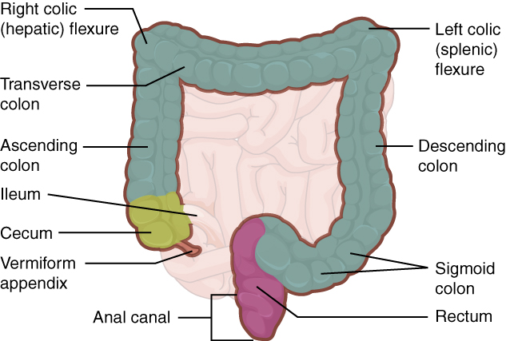
Laxatives: five ways to move stool
Stool consistency comes down to water and transit time. Every laxative either adds water, holds water, or hurries things along before water can be reabsorbed.
Bulk-forming agents — psyllium and methylcellulose (soluble fibers) and calcium polycarbophil (a synthetic water-holding polymer) — absorb water, swell, and stretch the bowel wall, which triggers peristalsis. They are among the safest classes and are appropriate for indefinite daily use, but they take 12–72 hours and they carry one real hazard: taken without enough fluid, they can swell into an esophageal or intestinal obstruction. Teach a full glass of water with every dose, and never give one to a patient who cannot swallow reliably.
Osmotic agents pull water into the lumen. Polyethylene glycol 3350 (PEG) is the workhorse for chronic constipation — well tolerated, non-absorbed, no cramping, and safe long-term. Lactulose is a non-absorbable sugar with a second job: in hepatic encephalopathy, colonic bacteria ferment it to acid, which traps ammonia as ammonium so it is excreted in stool. In that setting the dose is titrated to 2–3 soft stools per day, and a patient who is not stooling is a patient whose ammonia is climbing. Magnesium salts work fast but accumulate dangerously in renal impairment, and sodium phosphate preparations can cause severe electrolyte shifts and acute phosphate nephropathy — avoid them in older adults and anyone with kidney or heart disease.
Stimulant laxatives — senna, bisacodyl — irritate the enteric nerves directly, producing a bowel movement in 6–12 hours orally or 15–60 minutes by suppository. They cramp, and long-term use is associated with melanosis coli. Enteric-coated bisacodyl must not be crushed, and must not be taken within an hour of milk or antacids — raising gastric pH dissolves the coating early and causes gastric irritation. Docusate, a stool softener, is the most-ordered and least-effective laxative in the hospital; the evidence for it as monotherapy is weak, and its real role is paired with senna in opioid-induced constipation. Mineral oil lubricates, but risks lipoid pneumonia if aspirated and blocks absorption of fat-soluble vitamins.
Two newer groups matter. Secretagogues — lubiprostone (a chloride channel activator) and linaclotide/plecanatide (guanylate cyclase-C agonists) — make the intestine secrete fluid; linaclotide and plecanatide carry a boxed warning against use in children under 6 because of fatal dehydration in young animals. And PAMORAs — peripherally acting mu-opioid receptor antagonists such as methylnaltrexone, naloxegol, and naldemedine — are an elegant idea: they block the opioid receptors in the gut that cause constipation while staying out of the brain, so the patient keeps their pain control and gets their bowels back.
| Class | Prototype | Key effect / onset | Nursing alert |
|---|---|---|---|
| Bulk-forming | Psyllium | Absorbs water, adds bulk; 12–72 h | Full glass of water with every dose — obstruction risk without it. Safest for long-term use. |
| Osmotic | Polyethylene glycol 3350 | Draws water into the lumen; 1–3 days | First-line for chronic constipation. Lactulose is titrated to 2–3 soft stools/day in hepatic encephalopathy. |
| Saline osmotic | Magnesium hydroxide/citrate | Rapid osmotic pull; 30 min–6 h | Avoid in renal impairment — magnesium toxicity. Sodium phosphate risks phosphate nephropathy. |
| Stimulant | Senna, bisacodyl | Stimulates enteric nerves; 6–12 h oral | Cramping; do not crush enteric-coated bisacodyl or give within 1 h of milk/antacids. |
| Surfactant (softener) | Docusate sodium | Lets water enter stool; 1–3 days | Weak as monotherapy; use paired with senna for opioid-induced constipation. |
| Secretagogue | Lubiprostone, linaclotide | Triggers intestinal fluid secretion | Nausea (take lubiprostone with food). Linaclotide/plecanatide: boxed warning, contraindicated under age 6. |
| PAMORA | Methylnaltrexone, naloxegol | Blocks gut opioid receptors without reversing analgesia | Reserved for opioid-induced constipation; contraindicated in known or suspected bowel obstruction (perforation risk). |
One rule outranks all of the above: never give a laxative to a patient with undiagnosed abdominal pain, suspected bowel obstruction, or possible appendicitis. Stimulating peristalsis against a blockage or an inflamed appendix invites perforation. Rigid abdomen, absent bowel sounds, vomiting, no flatus — that patient needs an assessment, not a dose.
Antidiarrheals: slowing down, carefully
Loperamide is a mu-opioid agonist that acts on the gut and barely enters the brain at ordinary doses, which is why it is available over the counter. It is not harmless. Taken in the massive doses seen in opioid misuse, loperamide blocks cardiac sodium and potassium channels and causes QT prolongation, torsades de pointes, and cardiac arrest — the reason for an FDA warning and packaging limits. Reinforce the ceiling: 8 mg/day over the counter, 16 mg/day by prescription.
Diphenoxylate with atropine is a Schedule V opioid; the subtherapeutic atropine is there purely to make overdose unpleasant, so anticholinergic symptoms are the tell that someone took too much. Bismuth subsalicylate is mild and useful for traveler's diarrhea, with the salicylate cautions that come with it. Octreotide handles severe secretory diarrhea from carcinoid syndrome, VIPoma, or refractory chemotherapy-related diarrhea. Cholestyramine treats bile-acid diarrhea. And for most acute infectious diarrhea, the actual treatment is oral rehydration solution — water plus sodium plus glucose, exploiting the sodium–glucose cotransporter that keeps working even when the gut is inflamed.
Now the contraindication that shows up on every exam and, more importantly, at every bedside. Do not give an antimotility drug to a patient with bloody diarrhea, high fever, or suspected C. difficile. Diarrhea is how the body evacuates a toxin; stopping the motility keeps the toxin in contact with the mucosa and can precipitate toxic megacolon — a dilated, paralyzed, perforating colon. If a patient on antibiotics develops new watery diarrhea, the answer is a C. difficile test, contact precautions, soap-and-water hand hygiene (alcohol does not kill spores), and a call to the provider — not loperamide.
- Bulk-forming laxatives are the safest for chronic use but demand a full glass of water; PEG 3350 is first-line for chronic constipation.
- Lactulose in hepatic encephalopathy is titrated to 2–3 soft stools per day to trap and excrete ammonia.
- No laxative in undiagnosed abdominal pain, suspected obstruction, or possible appendicitis.
- No antimotility agent in bloody diarrhea, fever, or C. difficile — risk of toxic megacolon. High-dose loperamide causes torsades.
Section 4IBD and other GI drugs
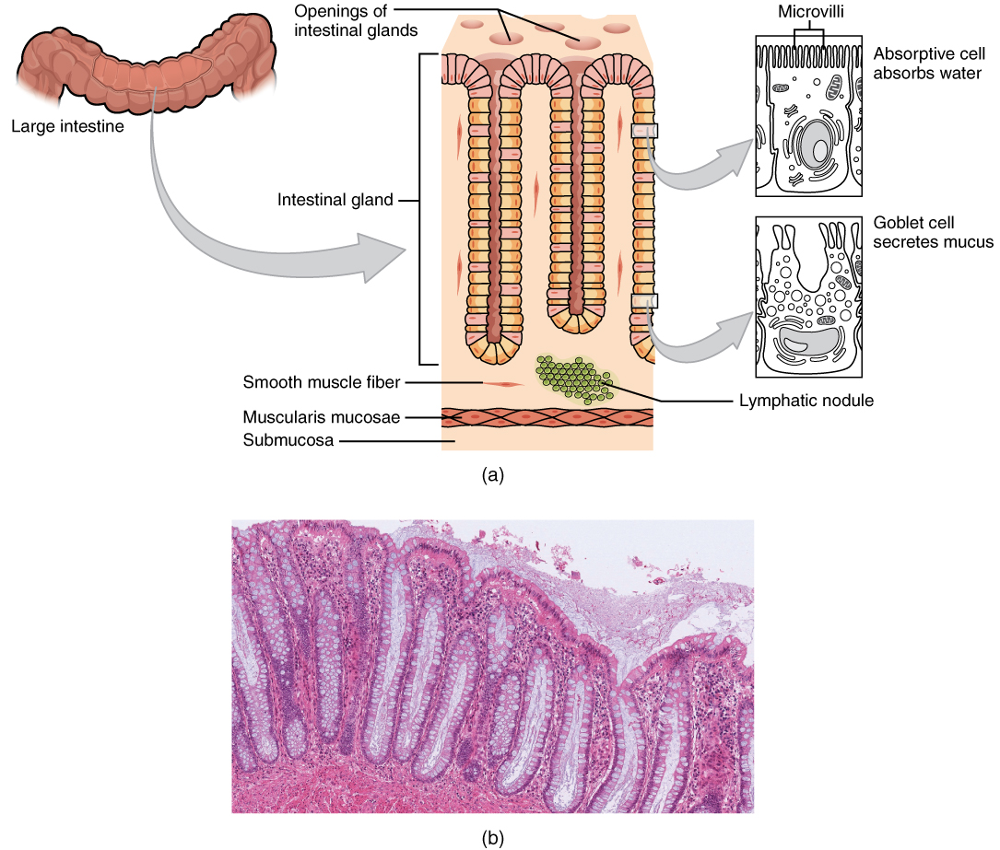
Inflammatory bowel disease
Inflammatory bowel disease (IBD) is chronic immune-mediated inflammation of the gut, and it comes in two shapes. Ulcerative colitis is continuous, superficial, and confined to the colon and rectum. Crohn disease is patchy and transmural and can strike anywhere from mouth to anus, which is why it causes fistulas, abscesses, and strictures. Therapy is built in two moves: induce remission with something fast, then maintain it with something safe enough for years. Steroids induce; they never maintain.
Aminosalicylates (5-ASA) are topical anti-inflammatories delivered to the bowel lumen. Mesalamine comes in oral delayed-release forms and, importantly, as enemas and suppositories — for proctitis, a suppository puts the drug exactly where the disease is with almost no systemic exposure. Sulfasalazine is a prodrug that colonic bacteria split into 5-ASA (the active half) and sulfapyridine (the half that causes most of the side effects): it is a sulfonamide, so ask about sulfa allergy; it stains urine, skin, and soft contact lenses orange-yellow; it causes reversible oligospermia; and it blocks folate absorption, so patients take folic acid alongside it. Mesalamine can be nephrotoxic — check renal function at baseline and periodically.
Corticosteroids break a flare. Budesonide is the clever one: extensive first-pass hepatic metabolism means it acts on the gut with far fewer systemic effects, making it attractive for mild-to-moderate ileal Crohn disease. Systemic prednisone or IV methylprednisolone handles bigger flares. Watch glucose, blood pressure, mood, and infection risk; taper rather than stop; and address bone protection early.
Immunomodulators hold remission. Azathioprine and 6-mercaptopurine require TPMT and NUDT15 testing before the first dose — a patient with low enzyme activity will develop profound, potentially fatal myelosuppression on a normal dose. Monitor CBC and liver enzymes, and know that pancreatitis and an increased lymphoma risk belong to this class. Methotrexate is used mainly in Crohn disease, with folic acid supplementation, weekly (never daily) dosing, and absolute contraindication in pregnancy.
Biologics changed the disease. Anti-TNF agents — infliximab (IV), adalimumab, certolizumab, golimumab — are highly effective and carry a boxed warning for serious infection and malignancy. Before the first dose, every patient is screened for latent tuberculosis (PPD or interferon-gamma release assay) and hepatitis B, because TNF blockade reactivates both. Live vaccines are contraindicated during therapy; get inactivated vaccines up to date beforehand. Newer agents are more targeted: vedolizumab blocks gut-specific integrin trafficking (so its infection risk is largely confined to the gut), ustekinumab hits IL-12/23, and risankizumab and mirikizumab hit IL-23. Oral JAK inhibitors — tofacitinib, upadacitinib — work quickly but carry a broad boxed warning for serious infection, malignancy, thrombosis, major cardiovascular events, and death.
| Class | Prototype | Key effect | Nursing alert |
|---|---|---|---|
| Aminosalicylate | Mesalamine, sulfasalazine | Topical gut anti-inflammatory; mild-to-moderate UC | Sulfasalazine: sulfa allergy, orange-yellow staining of urine and contact lenses, give folic acid. Mesalamine: monitor renal function. |
| Corticosteroid | Prednisone, budesonide | Induces remission in a flare — never for maintenance | Glucose, blood pressure, mood, infection, bone loss. Taper; budesonide has fewer systemic effects. |
| Immunomodulator | Azathioprine, 6-mercaptopurine | Steroid-sparing maintenance | Check TPMT/NUDT15 before the first dose. Monitor CBC and LFTs; pancreatitis and lymphoma risk. |
| Anti-TNF biologic | Infliximab, adalimumab | Induces and maintains remission; heals fistulas | Screen for latent TB and hepatitis B first. Boxed warning: serious infection, malignancy. No live vaccines. Monitor infusion reactions. |
| Anti-integrin | Vedolizumab | Gut-selective blockade of lymphocyte trafficking | Favored when systemic infection risk is a concern; onset is slower than anti-TNF. |
| JAK inhibitor | Tofacitinib, upadacitinib | Oral, rapid onset for ulcerative colitis | Boxed warning: infection, malignancy, thrombosis, MACE, death. Check lipids, CBC, and clot risk. |
The rest of the GI cabinet
Prokinetics speed a stomach that will not empty. Metoclopramide is the mainstay for diabetic gastroparesis — the same tardive dyskinesia warning applies, and the 12-week ceiling is not a suggestion. Erythromycin is borrowed from the antibiotic shelf because it agonizes motilin receptors, though tolerance develops within weeks.
Antispasmodics — dicyclomine, hyoscyamine — are anticholinergics that relax intestinal smooth muscle in irritable bowel syndrome. Their side effects are pure anticholinergic burden: dry mouth, blurred vision, urinary retention, constipation, and confusion in older adults. Other IBS agents include rifaximin, a non-absorbed antibiotic; eluxadoline, contraindicated after cholecystectomy or in heavy alcohol use because of pancreatitis risk; and alosetron, restricted to women with severe diarrhea-predominant IBS under a REMS program because it causes ischemic colitis.
Pancrelipase replaces the enzymes a fibrotic or resected pancreas no longer makes. The teaching is specific: take it with every meal and every snack, swallow the capsule whole, and if it must be opened, sprinkle the beads on a small amount of acidic soft food such as applesauce — alkaline foods dissolve the enteric coating and destroy the enzymes. Do not let the beads sit in the mouth (they irritate mucosa), and do not exceed the prescribed dose, since very high doses have been linked to fibrosing colonopathy. Ursodiol dissolves cholesterol gallstones and improves cholestatic liver disease. Orlistat, a lipase inhibitor used for weight management, causes oily stools and flatus with discharge and blocks absorption of vitamins A, D, E, and K — a supplement taken at a different time of day is standard.
- IBD therapy induces remission with steroids and maintains it with 5-ASAs, immunomodulators, or biologics — steroids never maintain.
- Sulfasalazine: sulfa allergy, orange-yellow staining, folic acid supplementation. Mesalamine: monitor kidneys.
- TPMT/NUDT15 before azathioprine; latent TB and hepatitis B screening before any anti-TNF biologic; no live vaccines on biologics.
- Pancrelipase goes with every meal and snack, capsule whole or sprinkled on acidic food only.
Section 5GI nursing care

Timing is the drug
More than any other body system, GI pharmacology is governed by the clock and by food. The same tablet given at the wrong hour is a different drug. Learn this table once and you will carry it for your whole career.
| Drug | When | Why |
|---|---|---|
| Proton pump inhibitor | 30–60 min before the first meal | It is a prodrug — it only activates in pumps that are actively secreting. |
| H2 blocker | With or after meals; at bedtime for nocturnal acid | Blunts the postprandial and overnight acid rise. |
| Antacid | 1–2 h after meals; separate from all other drugs by 1–2 h | Food buffers acid first; the antacid binds and blocks other drugs. |
| Sucralfate | 1 h before meals and at bedtime, empty stomach; other drugs 2 h apart | It needs acid to polymerize and it binds anything else present. |
| Pancrelipase | With every meal and every snack | The enzymes must be present when the food is. |
| Bulk laxative | Any time, with a full glass of water | Without fluid it swells into an obstruction. |
| Scopolamine patch | 4 h before travel, behind the ear, change q72h | Slow transdermal onset; wash hands afterward to avoid pupil dilation. |
| Chemotherapy antiemetics | Before the chemotherapy, on a schedule | Prevention is far more effective than rescue. |
Alongside timing sits formulation. Many GI drugs are delayed-release or enteric-coated — PPIs, bisacodyl, mesalamine, pancrelipase — and crushing them destroys them or dumps the entire dose at once. When a patient cannot swallow, do not improvise: check a do-not-crush reference, and ask the pharmacist for an alternative formulation. Some products have specific, approved workarounds (certain PPI capsules may be opened onto applesauce; certain PPI granules may be given through a tube in a specific diluent), but those are product-specific instructions, not general permission.
What to teach
Most GI drugs treat symptoms that lifestyle also treats, and the patient who changes both does far better than the patient who changes neither. For reflux: smaller meals, nothing to eat within three hours of lying down, the head of the bed raised 6–8 inches on blocks (extra pillows bend the abdomen and make reflux worse), weight loss, and honest conversation about tobacco, alcohol, caffeine, chocolate, peppermint, and late-night eating. For ulcers: no NSAIDs without a protective strategy, and if H. pylori was found, finish every dose. For constipation: fiber, fluid, movement, and a routine — the gastrocolic reflex is real, and sitting on the toilet 20 minutes after breakfast works better than most drugs. For anyone on a chronic laxative, name the goal out loud: a soft, comfortable stool, not a daily one. The belief that a bowel movement every day is mandatory drives an enormous amount of unnecessary laxative use.
Then teach the red flags, in plain language, and make sure the patient can repeat them back: black tarry stool or coffee-ground vomit (bleeding), bright red blood, trouble swallowing, unintended weight loss, vomiting that will not stop, severe or worsening abdominal pain, or new dyspepsia after age 60. Those symptoms mean investigation, not another antacid. Over-the-counter availability makes GI drugs feel trivial; part of your job is making clear that self-treating heartburn for months can mask something that needed a scope.
What to monitor
Watch the labs the drug touches. On chronic PPIs: magnesium (hypomagnesemia presents as tremor, tetany, arrhythmia, and refractory hypokalemia), vitamin B12, iron, and creatinine. On vomiting or diarrhea of any cause: potassium, chloride, bicarbonate, creatinine, intake and output, daily weight, and orthostatic vital signs — daily weight is the most honest fluid-balance number you have. On ondansetron, especially IV or combined with other QT-prolonging drugs: ECG, potassium, and magnesium. On sulfasalazine or azathioprine: CBC and liver enzymes. On methotrexate: LFTs and CBC. Before any anti-TNF: TB and hepatitis B screening. And on any patient at all: bowel sounds, abdominal distention, last bowel movement, and stool character — documented as a number and a description, not as the word "normal."
Finally, hold the safety alerts close, because these are the ones that hurt people. Promethazine IV causes gangrene on extravasation — dilute, run slowly, large vein, stop at the first report of burning; it is contraindicated under age 2. Metoclopramide causes tardive dyskinesia — screen for abnormal movements and respect the 12-week limit. Loperamide in high doses causes torsades. Antimotility drugs plus C. difficile equals toxic megacolon. Misoprostol plus pregnancy equals miscarriage. And any antiemetic or antihistamine with sedating properties is a fall risk in an older adult — put the bed low, the call light close, and the patient's expectations straight before you give it.
- Timing is the therapy: PPI before breakfast, sucralfate on an empty stomach, pancrelipase with food, antiemetics before chemo, antacids separated from everything.
- Do not crush delayed-release or enteric-coated GI drugs; ask the pharmacist for an alternative formulation.
- Teach red flags — melena, coffee-ground emesis, dysphagia, weight loss, new dyspepsia after 60 — and the lifestyle measures that work alongside the drug.
- Monitor Mg2+ and B12 on chronic PPIs, K+ and volume with vomiting or diarrhea, ECG with IV ondansetron, and TB/HBV before any biologic.
The chapter in one breath
- PPIs irreversibly block the parietal cell proton pump and must be given 30–60 minutes before the first meal; chronic use costs magnesium, B12, and infection resistance, and pantoprazole is the safe partner for clopidogrel.
- H2 blockers are faster and weaker with tolerance and renal dosing; antacids neutralize instantly, bind other drugs, and choose your side effect by cation; sucralfate is a bandage that needs acid and an empty stomach.
- Bismuth quadruple therapy is first-line for H. pylori, and adherence teaching — including the alcohol–metronidazole reaction — is what makes it work.
- Vomiting has four inputs: CTZ, vagal gut afferents, vestibular system, and cortex — match the antiemetic to the road, and give it before the trigger, not after.
- Metoclopramide (tardive dyskinesia), promethazine (extravasation gangrene), ondansetron (QT), and high-dose loperamide (torsades) are the GI drugs most likely to cause real harm.
- Bulk laxatives need a full glass of water, PEG is first-line for chronic constipation, lactulose is titrated to 2–3 soft stools daily in hepatic encephalopathy, and no laxative goes into an undiagnosed abdomen.
- Antimotility drugs are contraindicated in bloody or febrile diarrhea and in C. difficile — toxic megacolon is the price of stopping a protective reflex.
- IBD care means steroids to induce, something else to maintain, TPMT/NUDT15 before azathioprine, and TB and hepatitis B screening before any anti-TNF biologic.
ReferenceWords worth knowing
A quick reference for the terms in this chapter — skim it now, or circle back whenever a word trips you up.
- Aminosalicylate (5-ASA)
- A topical gut anti-inflammatory such as mesalamine or sulfasalazine, used mainly for mild-to-moderate ulcerative colitis.
- Antacid
- A base that chemically neutralizes acid already in the stomach; fast onset, short duration, and it binds other oral drugs.
- Antiemetic
- Any drug that prevents or relieves nausea and vomiting by blocking one of the four inputs to the vomiting center.
- Bulk-forming laxative
- Fiber or a water-holding polymer (psyllium, methylcellulose, calcium polycarbophil) that absorbs water and stretches the bowel; among the safest classes, but it must be taken with a full glass of water.
- Chemoreceptor trigger zone (CTZ)
- A region in the area postrema of the medulla that sits outside the blood–brain barrier and senses emetic chemicals in the blood; rich in D2, 5-HT3, and NK1 receptors.
- Delayed-release (enteric-coated)
- A formulation with a coating that dissolves past the stomach; crushing it destroys the drug or dumps the whole dose at once.
- Dyspepsia
- Upper abdominal discomfort, fullness, or burning; new-onset dyspepsia after age 60 is an alarm symptom, not a candidate for self-treatment.
- Gastroesophageal reflux disease (GERD)
- Symptomatic backflow of gastric contents into the esophagus; treated with acid suppression plus positional and dietary measures.
- H2-receptor antagonist
- A drug such as famotidine that blocks histamine at the parietal cell; faster but weaker than a PPI, with tolerance and renal dose adjustment.
- Hepatic encephalopathy
- Confusion caused by ammonia accumulating in liver failure; treated with lactulose titrated to 2–3 soft stools per day, often with rifaximin.
- Inflammatory bowel disease (IBD)
- Chronic immune-mediated bowel inflammation — ulcerative colitis (continuous, colonic, superficial) or Crohn disease (patchy, transmural, mouth to anus).
- Melena
- Black, tarry stool from digested blood, signaling upper GI bleeding; an urgent finding, never a medication side effect to shrug off (except harmless bismuth or iron darkening).
- Osmotic laxative
- An agent such as polyethylene glycol or lactulose that pulls water into the bowel lumen to soften stool.
- PAMORA
- Peripherally acting mu-opioid receptor antagonist (methylnaltrexone, naloxegol) that relieves opioid-induced constipation without reversing analgesia.
- Parietal cell
- The gastric cell that secretes hydrochloric acid through the H+/K+-ATPase, and intrinsic factor for B12 absorption.
- Peptic ulcer disease (PUD)
- A break in the gastric or duodenal mucosa, caused most often by H. pylori or NSAIDs rather than by excess acid alone.
- Prokinetic
- A drug such as metoclopramide that accelerates gastric emptying and gut transit.
- Proton pump inhibitor (PPI)
- A prodrug that irreversibly inhibits the parietal cell H+/K+-ATPase; the most potent acid suppressor, given before the first meal of the day.
- Quadruple therapy
- The preferred H. pylori regimen — a PPI plus bismuth, tetracycline, and metronidazole for 10–14 days.
- Rebound acid hypersecretion
- A surge of acid production after abrupt discontinuation of a long-term PPI; the reason to taper rather than stop.
- Stimulant laxative
- An agent such as senna or bisacodyl that irritates enteric nerves to trigger peristalsis; effective in 6–12 hours orally, with cramping.
- Sucralfate
- A drug that polymerizes in acid to form a protective paste over an ulcer; requires an empty stomach and separation from all other oral drugs.
Check yourself
Reproductive System Drugs
Almost none of these drugs cure a disease. They prevent a pregnancy, permit one, soften a menopause, restart a stalled labor, shrink a prostate, or restore an erection — and every one of them touches something a patient may find intensely private. That makes reproductive pharmacology unusual: the science is demanding and the conversation is delicate, and you have to be good at both at the same time. This chapter walks through the hormones and the drugs that mimic, block, or trick them, and then does what matters most — it names exactly what the nurse watches, teaches, and refuses to let slide. Two of the drugs in this chapter are on the high-alert list, one of them kills people who were given nitroglycerin in a chest-pain workup, and one is dangerous to a pregnant person who merely picks up a broken tablet.
By the end of this chapter you can
- Explain how estrogen and progestin prevent ovulation, and compare combined with progestin-only contraception.
- Identify the patients in whom estrogen-containing contraception is contraindicated because of clot risk, and teach the ACHES warning signs.
- Describe the role of hormone replacement therapy, why a uterus requires added progestin, and what the boxed warnings say.
- Explain how clomiphene induces ovulation and which adverse effect means stop the drug and call.
- Titrate and monitor oxytocin safely, recognize tachysystole, and state the emergency response.
- Compare tocolytics and describe magnesium sulfate monitoring and its antidote.
- Teach testosterone safety (including transfer risk) and explain why PDE-5 inhibitors plus nitrates can be fatal.
- Contrast alpha-1 blockers and 5-alpha reductase inhibitors in BPH, including onset, PSA effects, and pregnancy handling precautions.
Section 1Female hormones and contraception
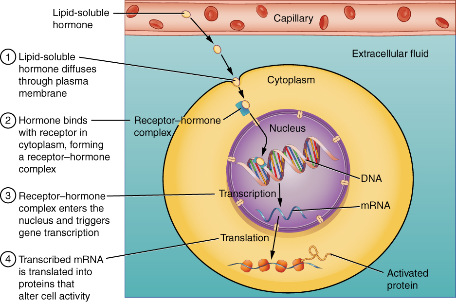
The two hormones behind almost everything in this section
Estrogen (the body's main one is estradiol) builds: it thickens the endometrium in the first half of the cycle, maintains bone density, keeps vaginal tissue plump and lubricated, and shapes the lipid panel favorably. Progesterone stabilizes: after ovulation it converts that proliferating endometrium into a quiet, secretory lining ready to receive an embryo, thickens cervical mucus into a plug, and calms uterine muscle. When progesterone falls, the lining sheds — that withdrawal is a period.
Both are steroid hormones, which explains a great deal of their pharmacology. Being lipid-soluble, they diffuse straight through the cell membrane and bind receptors inside the cell that then act on DNA. Effects therefore take days to build and days to fade — nobody feels a birth control pill work. It also explains why they are given orally at all: a synthetic tweak (adding an ethinyl group to make ethinyl estradiol) protects the molecule from first-pass destruction in the liver. That same liver pass is where the trouble starts, because the liver responds to oral estrogen by making more clotting factors.
How contraception actually works
A combined hormonal contraceptive contains a synthetic estrogen (almost always ethinyl estradiol) plus a progestin (norethindrone, levonorgestrel, norgestimate, drospirenone, and others). Steady hormone levels feed back on the hypothalamus and pituitary and flatten the mid-cycle LH surge. No surge, no ovulation. The progestin adds two backup layers: it thickens cervical mucus so sperm cannot swim through, and it thins the endometrium so implantation is unlikely. The estrogen's other job is unglamorous but important — it stabilizes the lining so the patient does not spot constantly.
A progestin-only method drops the estrogen entirely. The classic norethindrone "mini-pill" relies mostly on mucus and endometrial effects and suppresses ovulation only inconsistently, which is why it has an unforgiving three-hour window — more than three hours late is a missed dose, take it and use backup for 48 hours. A newer drospirenone-only pill has a friendlier 24-hour window. The injection, implant, and hormonal IUD are progestin-only too, and because the patient cannot forget them daily, they are far more effective in real use.
| Method | Prototype | Key effect | Nursing alert |
|---|---|---|---|
| Combined oral pill | Ethinyl estradiol + norethindrone / levonorgestrel | Blocks the LH surge; thickens mucus; thins endometrium | Contains estrogen — screen for clot risk; teach ACHES; same time daily |
| Transdermal patch | Norelgestromin + ethinyl estradiol | Weekly patch ×3, then a patch-free week | Higher estrogen exposure than pills — greater VTE risk; less effective at higher body weight; rotate sites, never the breast |
| Vaginal ring | Etonogestrel + ethinyl estradiol | In 3 weeks, out 1 week (or a 1-year reusable ring) | Still estrogen — same contraindications; may be out up to 3 h; no refrigeration hysteria, just teach the schedule |
| Progestin-only pill | Norethindrone 0.35 mg | Mucus + endometrium; inconsistent ovulation block | 3-hour window. Safe when estrogen is not — breastfeeding, migraine with aura, VTE history |
| Injection | Medroxyprogesterone acetate (DMPA) IM/SubQ every 13 weeks | Reliably suppresses ovulation | Boxed warning: bone mineral density loss with prolonged use — calcium, vitamin D, weight-bearing exercise; return delayed up to 10–18 months |
| Implant | Etonogestrel, 3 years, subdermal upper arm | Most effective reversible method | Irregular bleeding is the top reason for removal — say so before insertion, not after |
| Hormonal IUD | Levonorgestrel, 3–8 years | Local progestin; often stops periods entirely | Teach string checks; sudden severe pelvic pain or a positive pregnancy test needs same-day evaluation (ectopic) |
| Emergency contraception | Levonorgestrel 1.5 mg (OTC); ulipristal 30 mg (Rx); copper IUD | Delays or blocks ovulation; copper IUD is most effective | Not an abortifacient — it will not end an established pregnancy. Sooner is better; efficacy of levonorgestrel drops at higher body weight |
Clot risk, and the conversations that flow from it
This is the part of the chapter that saves lives. Oral estrogen passes the liver and pushes it to make more procoagulant factors while lowering some natural anticoagulants. The net result is roughly a three- to fourfold rise in venous thromboembolism risk — still a small absolute number in a healthy young person (and lower than the clot risk of pregnancy itself, which is worth saying out loud to a frightened patient), but not small at all once another risk factor stacks on top.
Estrogen-containing methods are contraindicated in a patient who smokes and is 35 or older, who has migraine with aura at any age, who has had a VTE or has a known thrombophilia, who has uncontrolled hypertension, who is less than 21 days postpartum, who has active breast cancer, who has lupus with antiphospholipid antibodies, or who has vascular complications of diabetes. Notice how many of these are things you learn only by asking. "Do your headaches come with flashing lights, zigzag lines, or a blind spot before the pain starts?" is a question that changes a prescription. For nearly all of these patients a progestin-only method is the answer, because it does not carry the estrogen clot risk. The one exception worth memorizing: current breast cancer contraindicates progestin-only methods too — the tumor may be hormone-responsive, so that patient needs a nonhormonal method (copper IUD, barrier, or sterilization), not a switch to the mini-pill.
Teach the ACHES warning signs and make the patient repeat them back: Abdominal pain (severe), Chest pain or shortness of breath, Headache (severe, sudden, or new with neuro symptoms), Eye problems (vision loss, blurring), Severe leg pain or swelling, especially one calf. Any of these means stop the pill and be seen today.
One more teaching point that gets mangled constantly: most antibiotics do not reduce contraceptive efficacy. The real offenders are strong CYP3A4 inducers — rifampin and rifabutin, carbamazepine, phenytoin, phenobarbital, primidone, higher-dose topiramate, some HIV protease inhibitors, and St. John's wort. They speed hormone metabolism and can drop levels below the contraceptive threshold. Ask about herbals by name; patients rarely volunteer them.
Hormone therapy at menopause
When the ovaries retire, estrogen falls and some people are miserable: hot flashes, night sweats, sleep destruction, vaginal dryness and painful sex (now called genitourinary syndrome of menopause), and accelerating bone loss. Menopausal hormone therapy is the most effective treatment for vasomotor symptoms that exists, and it is also the drug class the Women's Health Initiative made everyone afraid of. The honest modern position sits between the extremes: for a symptomatic patient under 60 or within 10 years of menopause with no contraindications, benefits generally outweigh risks; started later, the arithmetic flips.
The single rule you must never forget: a patient with a uterus needs a progestin. Unopposed estrogen drives the endometrium to proliferate without ever shedding, and that is a straight road to endometrial hyperplasia and cancer. If the uterus has been removed, estrogen alone is appropriate and actually carries a better risk profile. Systemic estrogen carries boxed warnings for endometrial cancer, cardiovascular events including stroke and VTE, probable dementia when started in older women, and (with added progestin) breast cancer. Give the lowest effective dose for the shortest reasonable time, and revisit the decision annually.
For a patient whose only complaint is vaginal dryness or dyspareunia, low-dose vaginal estrogen (cream, tablet, or ring) is a different animal: systemic absorption is minimal, it does not carry the same warnings in practice, and it usually does not require a progestin. Teach that it takes several weeks and that stopping means the symptoms return.
- Combined contraceptives work by flattening the LH surge (no ovulation), plus thick mucus and a thin endometrium.
- Estrogen raises clot risk — contraindicated with smoking at 35+, migraine with aura, VTE history, uncontrolled hypertension, early postpartum; use a progestin-only method instead.
- Teach ACHES; teach that CYP3A4 inducers (rifampin, several anticonvulsants, St. John's wort) — not ordinary antibiotics — can cause failure.
- In hormone therapy, a uterus means a progestin; DMPA's boxed warning is bone loss.
Section 2Fertility and pregnancy drugs
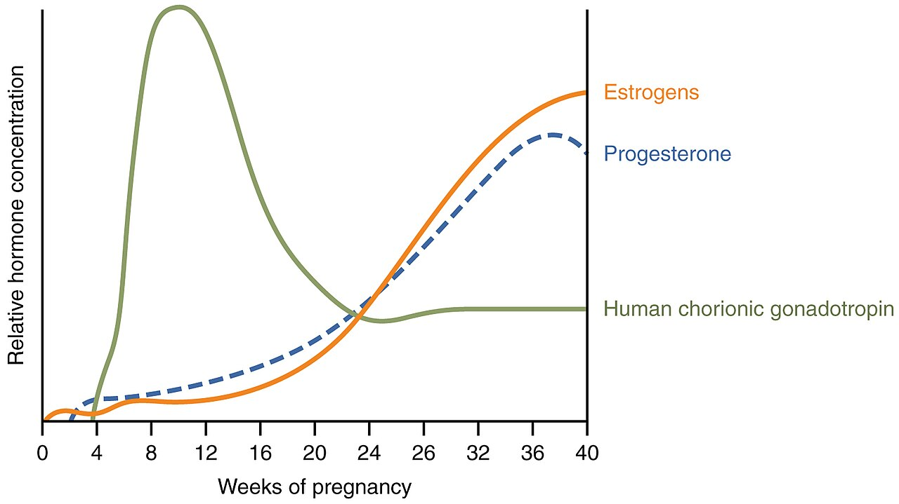
Making ovulation happen: clomiphene and its relatives
Clomiphene citrate is a lovely piece of pharmacologic trickery. It is a selective estrogen receptor modulator that blocks estrogen receptors in the hypothalamus. The hypothalamus, deprived of the estrogen signal it uses to know that estrogen exists, concludes that levels are low and increases GnRH pulses. The pituitary answers with more FSH and LH, follicles grow, and ovulation follows. It is usually taken for five days early in the cycle (commonly days 5 through 9), with ovulation expected roughly 5 to 10 days after the last tablet — timing the patient needs, because the drug does nothing if nobody knows when to try.
The adverse effects follow logically from "temporary chemical estrogen deficiency plus stimulated ovaries": hot flashes, mood swings, breast tenderness, abdominal bloating, and ovarian enlargement. Two matter more. Visual disturbances — blurring, floaters, light flashes, afterimages — mean stop the drug and report immediately; they are usually reversible but not always. And clomiphene raises the chance of multiple gestation to roughly 5 to 10 percent (mostly twins), which is a real conversation, not a footnote. Letrozole, an aromatase inhibitor borrowed from oncology, has quietly become first-line for ovulation induction in polycystic ovary syndrome — higher live-birth rates and fewer multiples than clomiphene.
When those fail, injectable gonadotropins (menotropins, follitropin alfa) stimulate the ovary directly and an hCG trigger finishes maturation and releases the egg. Their signature danger is ovarian hyperstimulation syndrome: ovaries swell, capillaries leak, and fluid pours into the abdomen and chest. Teach the patient to call for rapid weight gain (more than about 2 pounds a day), abdominal distension, severe pain, nausea and vomiting, decreased urine output, or shortness of breath. Severe OHSS is a hospitalization with a genuine thrombosis risk, not a bad week.
Oxytocin: the drug that demands a nurse
Oxytocin binds receptors on uterine smooth muscle and makes it contract. Receptor density climbs steeply toward term, which is why the same dose that does nothing at 20 weeks can hyperstimulate at 40. It is a high-alert medication — the kind where an error is more likely to cause serious harm — and it earns that label honestly, because there is no antidote and no way to un-ring the bell of a contraction that has already compressed the cord.
Give it as a dilute secondary (piggyback) infusion into a mainline IV, always on a programmable pump, connected at the port closest to the patient so it can be shut off instantly with minimal drug still in the line. Doses are ordered in milliunits per minute and titrated up slowly against contraction response. Postpartum, the goal flips: a much larger dose runs to clamp a boggy uterus down and stop atony-driven hemorrhage.
What you watch: contraction frequency, duration, intensity, and resting tone, plus the fetal heart rate pattern. Tachysystole means more than five contractions in 10 minutes averaged over 30 minutes — and if it comes with a nonreassuring FHR pattern, act. The sequence to have memorized: stop the oxytocin, reposition to left lateral, give an IV fluid bolus, give oxygen if indicated, notify the provider, and anticipate a tocolytic such as terbutaline to relax the uterus. Oxytocin also resembles ADH structurally, so prolonged high-dose infusions with hypotonic fluid can cause water intoxication — watch intake and output, headache, confusion, and falling sodium.
| Class | Prototype | Key effect | Nursing alert |
|---|---|---|---|
| Ovulation inducer (SERM) | Clomiphene citrate | Blocks hypothalamic estrogen receptors, raising FSH/LH | Visual changes = stop and report. Counsel on multiples and OHSS |
| Ovulation inducer (aromatase inhibitor) | Letrozole | Lowers estrogen synthesis, raising FSH — first-line in PCOS | Fewer multiples than clomiphene; still monitor for OHSS |
| Uterotonic (posterior pituitary) | Oxytocin | Contracts uterine smooth muscle; induces/augments labor; controls postpartum atony | HIGH ALERT. Pump + piggyback at the closest port. Tachysystole (>5/10 min) → stop the infusion, left lateral, fluids, O₂, notify. Watch for water intoxication |
| Uterotonic (ergot) | Methylergonovine | Sustained uterine contraction for postpartum hemorrhage | Check the BP first — contraindicated in hypertension and preeclampsia (severe vasoconstriction) |
| Uterotonic (prostaglandin) | Carboprost tromethamine | Powerful contraction for refractory atony | Contraindicated in asthma (bronchospasm). Expect fever, diarrhea, vomiting — premedicate |
| Cervical ripening / uterotonic | Misoprostol | Softens the cervix; also contracts the uterus | Do not use for ripening with a prior cesarean scar (rupture risk); teratogenic if given for other indications in pregnancy |
| Tocolytic (CCB) | Nifedipine | Relaxes uterine muscle — usual first-line to delay preterm birth | Watch for maternal hypotension, flushing, headache. Avoid combining with magnesium (neuromuscular blockade) |
| Tocolytic (beta-2 agonist) | Terbutaline | Relaxes the uterus; also rescues tachysystole | Short-term only — FDA warns against prolonged use (maternal cardiac events, death). Watch tachycardia, tremor, pulmonary edema, hyperglycemia |
| Tocolytic (NSAID) | Indomethacin | Inhibits prostaglandins — used briefly before 32 weeks | Fetal ductus arteriosus constriction and oligohydramnios — limit to about 48 hours |
| Anticonvulsant / neuroprotectant | Magnesium sulfate | Seizure prophylaxis in preeclampsia; fetal neuroprotection before 32 weeks | HIGH ALERT. Monitor DTRs, RR ≥12, urine output ≥30 mL/h, LOC. Antidote: calcium gluconate |
| Antenatal corticosteroid | Betamethasone | Accelerates fetal lung maturity (surfactant) | Two IM doses 24 h apart — the benefit is time-dependent, so give on schedule. Watch maternal glucose |
| Immune globulin | Rho(D) immune globulin | Prevents maternal Rh sensitization | At ~28 weeks and within 72 hours of birth of an Rh-positive infant, and after any sensitizing event |
Stopping labor, and the drug that watches the drug
Tocolytics buy time, not term. Nobody stays pregnant to 40 weeks because of nifedipine. The realistic goal is 48 hours — long enough for two doses of betamethasone to mature fetal lungs and long enough to transfer to a facility with a NICU. Framing it that way for a frightened patient is honest and oddly reassuring: we are not failing, we are buying the two days that matter most.
Magnesium sulfate deserves its own paragraph because it is the drug students most often get asked about and most often see. It is not really used as a tocolytic anymore; its jobs are preventing eclamptic seizures and protecting the preterm fetal brain. Magnesium is a CNS depressant, and toxicity climbs a predictable ladder: deep tendon reflexes disappear first, then respirations fall, then urine output drops, then cardiac arrest. That order is a gift — it means checking reflexes gives you warning long before anything catastrophic. Because magnesium is cleared renally, oliguria means the drug is accumulating. Keep calcium gluconate at the bedside; 1 gram IV displaces magnesium and reverses it.
- Clomiphene blocks hypothalamic estrogen receptors → more FSH/LH → ovulation; visual disturbances mean stop the drug; counsel on multiples and OHSS.
- Oxytocin is high-alert: pump, piggyback, milliunits/min, continuous contraction and FHR monitoring.
- Tachysystole is >5 contractions/10 min — stop the infusion, left lateral, fluids, oxygen, notify, consider terbutaline.
- Magnesium sulfate: watch DTRs, RR, urine output, LOC — reflexes vanish first; the antidote is calcium gluconate.
Section 3Male hormones and ED drugs
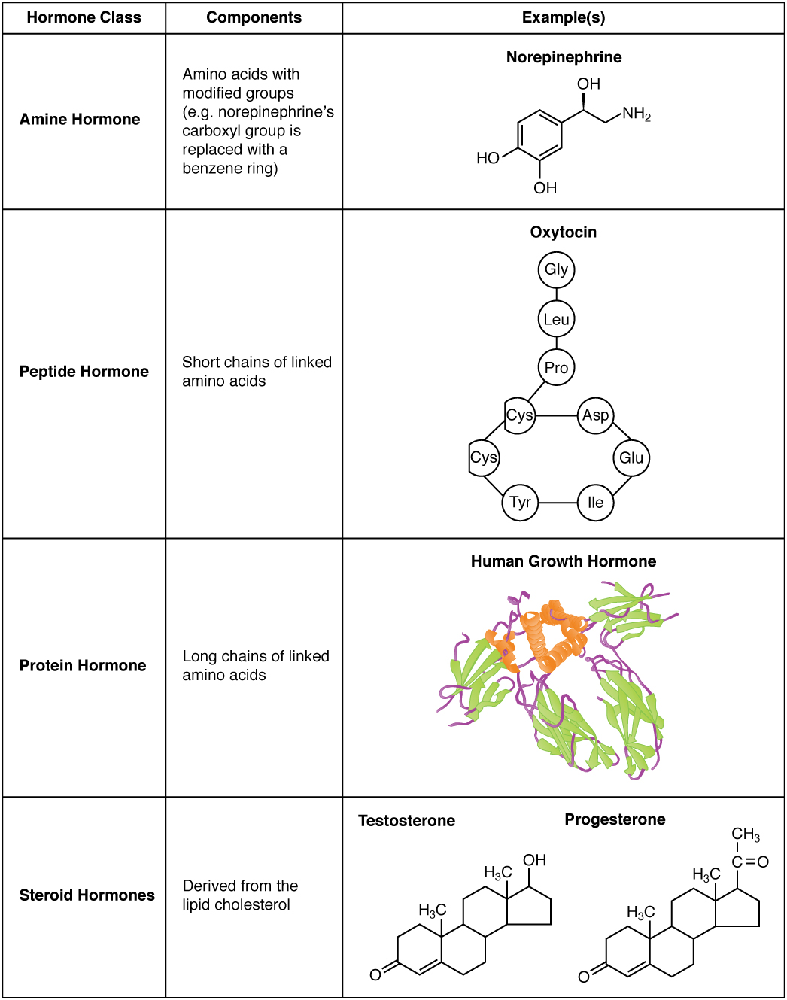
Testosterone: replacement, not enhancement
Testosterone is made mostly by the Leydig cells of the testes under LH control. It builds muscle and bone, drives libido and spermatogenesis, and produces the secondary sex characteristics. Give it as a drug and it is a Schedule III controlled substance in the United States, because it is widely misused for physique and performance.
The legitimate indication is confirmed hypogonadism — symptoms plus at least two low morning total testosterone levels — not "feeling tired at fifty." That distinction matters clinically, not moralistically: replacement in a man with normal testosterone offers no benefit while delivering the full adverse-effect profile and shutting down his own production.
Plain oral testosterone fails at the first pass through the liver, and the older 17-alpha-alkylated androgens that survived it were hepatotoxic — which is why the routes are creative. (Newer oral testosterone undecanoate capsules get around this by absorbing through the lymphatics rather than the portal vein; they must be taken with food and carry a boxed warning for blood pressure elevation.) Topical gels carry a boxed warning for secondary exposure — the drug transfers by skin contact and has virilized children and partners who simply hugged the patient. Teach it every single time: apply to shoulders, upper arms, or abdomen per the product, wash your hands immediately, let it dry, cover the site with clothing, and wash the area before skin-to-skin contact. Intramuscular cypionate or enanthate runs every 1 to 2 weeks and produces a peak-and-trough mood and energy roller coaster patients notice. Intramuscular undecanoate lasts about 10 weeks but requires a REMS program with a 30-minute in-office observation because of pulmonary oil microembolism and anaphylaxis. Patches, buccal tablets, nasal gel, and implanted pellets round out the list.
What the nurse monitors is specific and testable. Hematocrit — testosterone stimulates erythropoiesis, and a hematocrit climbing past roughly 54 percent means hold the drug and reassess, because hyperviscosity causes strokes. PSA and prostate exam at baseline and on follow-up; testosterone is contraindicated in known prostate or male breast cancer. Testosterone levels themselves, lipids, blood pressure, and symptoms of worsening sleep apnea. Expect acne, oily skin, edema, mood changes, testicular atrophy, and — the one patients are never told and must be — infertility, because exogenous testosterone suppresses the LH and FSH that drive sperm production. A man trying to conceive should not be on testosterone. It is also contraindicated in pregnancy and can virilize a female fetus.
PDE-5 inhibitors, and the interaction that kills
An erection is a plumbing event with a chemical trigger. Sexual stimulation releases nitric oxide in the corpus cavernosum; NO raises cGMP; cGMP relaxes arterial smooth muscle; blood floods in and compresses the outflow veins. The enzyme phosphodiesterase type 5 degrades cGMP and ends the event. PDE-5 inhibitors — sildenafil, tadalafil, vardenafil, avanafil — block that enzyme so cGMP persists and the erection is firmer and lasts. Critically, they amplify a signal, they do not create one: without sexual stimulation and NO release, nothing happens. Patients who expect an automatic result are disappointed and stop the drug, so say it plainly.
Now the part that must never be fumbled. Nitrates — nitroglycerin, isosorbide mononitrate or dinitrate, and the recreational inhaled "poppers" (amyl or butyl nitrite) — work by donating nitric oxide. Combine a drug that floods the system with NO and a drug that prevents cGMP breakdown, and you get profound, prolonged, refractory hypotension that does not respond well to fluids or pressors. People have died. This is an absolute contraindication, not a caution.
The scenario to burn in: a middle-aged man arrives with chest pain. The reflex is sublingual nitroglycerin. Ask about PDE-5 inhibitors first — and ask in a way that gets an honest answer, privately, without a spouse or an audience. Required intervals before a nitrate may be given: 24 hours after sildenafil, vardenafil, or avanafil; 48 hours after tadalafil, which is much longer-acting. Also ask about poppers, which patients do not think of as medication at all.
| Drug | Onset / duration | Key effect | Nursing alert |
|---|---|---|---|
| Sildenafil | ~30–60 min; ~4–6 h | PDE-5 inhibition; also approved, under a separate name and dose, for pulmonary arterial hypertension | Fatty meals delay onset. Bluish vision tinge (PDE-6 cross-effect). No nitrate for 24 h |
| Tadalafil | ~30–45 min; up to 36 h | Longest acting; also 2.5–5 mg daily for ED and/or BPH symptoms | No nitrate for 48 h — the long tail is the trap. Back pain and myalgia are common |
| Vardenafil | ~30–60 min; ~4–6 h | PDE-5 inhibition | QT prolongation — avoid with class IA/III antiarrhythmics. No nitrate for 24 h |
| Avanafil | ~15–30 min; ~6 h | Fastest onset, more PDE-5 selective | No nitrate for 24 h |
| Alprostadil | Minutes; ~1 h | Prostaglandin E1 — intracavernosal injection or urethral suppository; works without NO | An option when PDE-5 is contraindicated. Teach injection technique and the priapism rule |
| Testosterone | Route-dependent | Androgen replacement in confirmed hypogonadism | Schedule III. Gel transfer boxed warning. Monitor hematocrit, PSA, lipids; causes infertility |
The rest of the safety picture
PDE-5 inhibitors also stack with alpha-1 blockers (many of these patients are on tamsulosin or doxazosin for BPH) — both drop blood pressure, so start at the lowest dose, be sure the alpha blocker is already at a stable dose, and separate administration. Strong CYP3A4 inhibitors such as ritonavir, ketoconazole, itraconazole, and clarithromycin raise levels sharply and require dose reduction. Ordinary adverse effects — headache, facial flushing, dyspepsia, nasal congestion — are annoying, not dangerous.
Three things are emergencies, and patients must know them cold. Priapism: an erection lasting more than 4 hours needs the ED, because ischemic tissue becomes permanently fibrotic. NAION: sudden painless vision loss in one eye — stop the drug, go now. Sudden hearing loss, sometimes with tinnitus or dizziness — same rule. Finally, remember that sex is exercise; a man too cardiovascularly fragile to climb two flights of stairs needs a cardiology conversation before an ED prescription, not after.
- Testosterone is Schedule III, for confirmed hypogonadism only; monitor hematocrit (hold near 54%), PSA, lipids; it causes infertility.
- Topical testosterone has a boxed warning for transfer — wash hands, cover the site, wash before contact.
- PDE-5 inhibitors preserve cGMP and require sexual stimulation to work at all.
- Nitrates are absolutely contraindicated: hold 24 h after sildenafil/vardenafil/avanafil, 48 h after tadalafil; priapism >4 h, sudden vision loss, or sudden hearing loss are emergencies.
Section 4BPH drugs
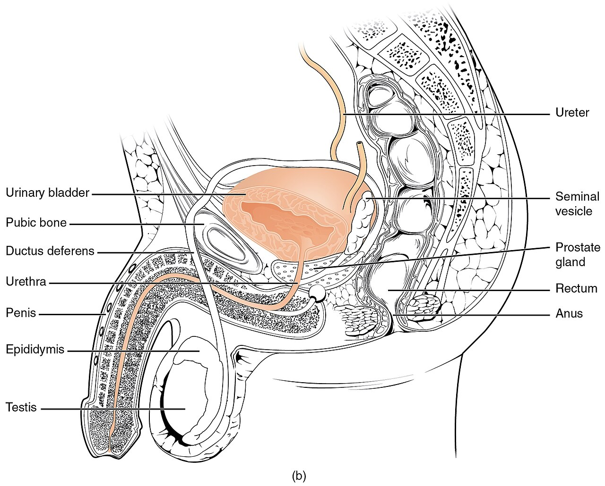
Why the prostate is a plumbing problem
The prostate encircles the urethra like a ring on a garden hose. With age it enlarges — benign prostatic hyperplasia, benign meaning not cancer, not meaning harmless. Symptoms come in two flavors: obstructive (weak stream, hesitancy, dribbling, incomplete emptying) and irritative (frequency, urgency, nocturia). Untreated, it can progress to recurrent UTIs, bladder stones, acute urinary retention, and kidney damage.
Two things narrow that urethra, and each has its own drug class. There is dynamic obstruction — smooth muscle tone in the prostate and bladder neck, held tight by alpha-1 adrenergic receptors — and static obstruction, the sheer bulk of glandular tissue grown under the influence of dihydrotestosterone. Relax the muscle and relief comes in days. Shrink the gland and relief comes in months. That difference in onset is the single most useful thing to teach a patient, because a man who expects finasteride to work by Friday will throw it away by Monday.
Alpha-1 blockers: fast relief, watch the blood pressure
Alpha-1 blockers relax smooth muscle at the bladder neck and prostate, widening the channel. Patients notice improvement within days. They split into two useful groups. The uroselective agents — tamsulosin, silodosin, and largely alfuzosin — target the alpha-1A receptors concentrated in the prostate and affect blood pressure comparatively little. The older nonselective agents — doxazosin, terazosin — also block alpha-1B receptors in blood vessels, so they lower blood pressure meaningfully. That is a bonus if the man also has hypertension and a liability if he does not.
The classic teaching point is the first-dose phenomenon: pronounced orthostatic hypotension and possible syncope with the first dose or after a dose increase. Give the first dose at bedtime, teach the patient to rise slowly and sit at the edge of the bed first, and put a fall-risk plan in place for an older adult. Two more counseling points matter. Retrograde ejaculation — semen going backward into the bladder, producing "dry" orgasm and cloudy urine — is common with tamsulosin and silodosin; it is harmless and reversible, but a man who is not warned will assume something is badly wrong. And intraoperative floppy iris syndrome: alpha blockers relax the iris dilator muscle and can make cataract surgery treacherous, sometimes years after the drug is stopped. Any patient on one of these must tell the ophthalmologist before eye surgery. Note what alpha blockers do not do: they do not shrink the prostate, do not slow disease progression, and do not change the PSA.
5-alpha reductase inhibitors: slow, real, and hazardous to a fetus
Inside prostate cells, the enzyme 5-alpha reductase converts testosterone into dihydrotestosterone, a far more potent androgen that is the actual growth signal for prostate tissue. Block that enzyme with finasteride or dutasteride and the gland shrinks by roughly 20 to 25 percent. This is the only class that changes the natural history — it reduces the risk of acute urinary retention and the need for surgery. The cost is patience: 3 to 6 months before meaningful symptom relief, and up to a year for the full effect. It works best in men with genuinely large prostates.
Two facts you cannot afford to get wrong. First, 5-alpha reductase inhibitors cut PSA roughly in half within 6 to 12 months. If nobody accounts for that, a prostate cancer hides behind a reassuring number. The clinical rule of thumb: double the PSA in a man who has been on the drug for at least six months, and investigate any rise from his new baseline. Document the drug next to the lab value.
Second, and this is the safety point of the whole section: these drugs are teratogenic. DHT drives development of the male external genitalia, so blocking it can feminize a male fetus. A pregnant person — or one who might become pregnant — must not handle crushed or broken finasteride tablets or leaking dutasteride capsules, because the drug is absorbed through skin. Intact, coated tablets are safe to handle. Neither drug should be crushed. Men on these drugs should not donate blood, so a pregnant recipient is never transfused with it — and the two deferral periods differ: at least 1 month after the last finasteride dose, but at least 6 months after the last dutasteride dose, because dutasteride's half-life is about 5 weeks and it lingers for months.
| Class | Prototype | Key effect | Nursing alert |
|---|---|---|---|
| Alpha-1 blocker, uroselective | Tamsulosin, silodosin | Relaxes prostatic/bladder-neck smooth muscle — relief in days; minimal BP effect | Retrograde ejaculation (harmless — warn first). IFIS — tell the eye surgeon. Still teach slow rising |
| Alpha-1 blocker, nonselective | Doxazosin, terazosin, alfuzosin | Same relief, plus a real drop in blood pressure | First-dose syncope — give at bedtime, rise slowly, fall precautions. Additive hypotension with PDE-5 inhibitors and antihypertensives |
| 5-alpha reductase inhibitor | Finasteride, dutasteride | Blocks testosterone → DHT; shrinks the gland ~20–25%; reduces retention and surgery | 3–6 months to work. Halves the PSA — double the value. Teratogenic: no handling of broken tablets by anyone pregnant; no blood donation (1 month after finasteride, 6 months after dutasteride) |
| Combination | Dutasteride + tamsulosin | Fast relief plus long-term shrinkage — best for large glands | Both alert sets apply at once |
| PDE-5 inhibitor | Tadalafil 5 mg daily | Improves BPH symptoms and ED together | Absolute nitrate contraindication still applies — 48 h. Additive hypotension with alpha blockers |
| Antimuscarinic / beta-3 agonist | Oxybutynin, tolterodine; mirabegron | Added for persistent urgency and frequency | Antimuscarinics can precipitate urinary retention — check post-void residual first; watch confusion in older adults |
Finally, the drugs to avoid. Over-the-counter decongestants containing pseudoephedrine or phenylephrine are alpha agonists — they tighten exactly the muscle you are trying to relax and can tip a man into acute retention. First-generation antihistamines such as diphenhydramine add anticholinergic bladder relaxation on top. Every cold-and-flu aisle contains both. Teach the patient to read labels and ask the pharmacist, because "it's just a decongestant" has sent many men to the emergency department with a Foley in their future. Saw palmetto, meanwhile, has repeatedly failed to beat placebo in good trials — do not argue about it, just make sure it is not replacing something that works.
- Alpha-1 blockers relax smooth muscle — relief in days; teach bedtime first dose, slow rising, retrograde ejaculation, and to warn the eye surgeon (IFIS).
- 5-alpha reductase inhibitors block testosterone→DHT and shrink the gland — 3–6 months, and they alone reduce retention and surgery.
- These drugs halve the PSA — double it after six months of therapy or a cancer can hide.
- They are teratogenic: pregnant persons must not handle broken tablets; no blood donation (1 month after finasteride, 6 months after dutasteride). Avoid decongestants and first-generation antihistamines in BPH.
Section 5Reproductive nursing care
Teaching: the drug only works if the conversation does
Reproductive drugs fail for social reasons more than pharmacologic ones. A pill missed because the schedule was never explained. A patch left off because nobody said it survives showering. An injection appointment skipped. A finasteride bottle thrown away at week three. A man who quietly stops tamsulosin because of a symptom he was too embarrassed to name. None of these are the molecule's fault.
So build the visit deliberately. Get privacy first — not the hallway, not with a partner or a parent in the room unless the patient explicitly wants them there. Ask permission before the sensitive questions and explain why you need the answer: "I need to ask about your sexual health because it changes which medication is safe for you — is now a good time?" Use plain words and let the patient use theirs; "does the semen come out?" beats "have you experienced retrograde ejaculation." Do not moralize about sexual activity, gender, number of partners, or substance use — a patient who feels judged withholds the popper history, and that history is the one that stops you from giving nitroglycerin. Finish with teach-back: not "any questions?" but "tell me what you'll do if you miss two pills."
The teaching points that carry the most weight, per class:
- Combined contraception — same time daily; missed-pill rules and 7 days of backup; ACHES; disclose smoking honestly; name your herbals; nausea fades in 2–3 months; spotting is common early and is not failure. It does not protect against sexually transmitted infection — condoms still matter.
- DMPA — the 13-week return date is not a suggestion; calcium, vitamin D, weight-bearing exercise for bone protection; fertility may take 10–18 months to return, so it is a poor choice if pregnancy is planned soon.
- Hormone therapy — a uterus means a progestin; report any postmenopausal bleeding, new leg swelling, chest pain, or neuro symptoms; this is a decision revisited yearly, not a lifetime prescription.
- Clomiphene — the timing is the therapy; stop and call for visual changes; call for rapid weight gain, bloating, or breathlessness (OHSS); multiples are a real possibility.
- Testosterone — hands washed, site covered, no skin contact until washed; expect infertility; report leg swelling, worsening snoring, or excessive sleepiness; keep the lab appointments, because the hematocrit is the point.
- PDE-5 inhibitors — sexual stimulation is required; no nitrates in any form including poppers; erection over 4 hours, sudden vision loss, or sudden hearing loss means the emergency department; a fatty meal delays sildenafil.
- Alpha blockers — first dose at bedtime; rise slowly; the dry orgasm is expected and harmless; tell the eye surgeon.
- 5-alpha reductase inhibitors — three to six months before you judge it; nobody pregnant touches a broken tablet; no blood donation (1 month after finasteride, 6 months after dutasteride); remind every clinician who draws your PSA that you take this.
Monitoring: what to measure and when to stop
| Drug | What you monitor | Act when |
|---|---|---|
| Combined contraceptive | Blood pressure, smoking status, migraine character, leg/chest symptoms | Any ACHES sign; new hypertension; aura appears → switch to progestin-only |
| Hormone therapy | Postmenopausal bleeding, breast exam/mammography, BP, VTE symptoms | Any bleeding after menopause — investigate before adjusting the dose |
| DMPA | Injection date, bone risk factors, weight | Reassess prolonged use; reinforce calcium, vitamin D, exercise |
| Clomiphene / gonadotropins | Vision, weight, abdominal girth, urine output, dyspnea | Visual change → stop. Rapid weight gain or breathlessness → evaluate for OHSS today |
| Oxytocin | Contraction frequency, duration, intensity, resting tone; FHR; I&O; sodium; LOC | Tachysystole or nonreassuring FHR → stop the infusion, left lateral, fluids, O₂, notify |
| Magnesium sulfate | DTRs, respiratory rate, urine output, LOC, magnesium level | Reflexes absent, RR <12, urine <30 mL/h → stop and give calcium gluconate |
| Terbutaline | Maternal HR, lung sounds, glucose, fetal HR | Maternal HR >120, chest pain, or crackles (pulmonary edema) → stop and notify |
| Methylergonovine | Blood pressure, uterine tone, bleeding | Hold and notify if hypertensive — do not give in preeclampsia |
| Testosterone | Hematocrit, PSA, testosterone level, lipids, BP, sleep apnea symptoms | Hematocrit near/over ~54% → hold; PSA rise → urology |
| PDE-5 inhibitor | Nitrate use (every single time), BP, cardiac capacity, alpha blocker doses | Any nitrate on board → do not give; erection >4 h → ED |
| Alpha-1 blocker | Orthostatic BP, dizziness, falls, urinary stream, post-void residual | Symptomatic orthostasis → hold, notify, fall precautions |
| 5-alpha reductase inhibitor | PSA (doubled), symptom score, mood, sexual function | PSA rising from the new baseline → workup, do not assume the drug |
Safety: the four places this chapter hurts people
High-alert drugs. Oxytocin and magnesium sulfate both sit on the high-alert list, meaning an error carries outsized risk. Treat them accordingly: an independent double-check of the drug, concentration, pump programming, and line at initiation and at every rate change; standardized concentrations; the secondary line into the port nearest the patient; and the antidote (calcium gluconate for magnesium) physically at the bedside, not "on the unit somewhere." Oxytocin has no antidote — your off switch is the whole treatment.
The nitrate question. Build it into every chest-pain assessment, every preoperative history, and every medication reconciliation for an adult male. Ask about ED drugs and about poppers, ask privately, and document the answer with a time. If the patient cannot answer — unconscious, confused — and the family cannot either, treat the ischemia with agents other than nitrates and write down why.
Teratogen handling. Finasteride and dutasteride are absorbed through skin from broken dosage forms. Never crush them. If a staff member who is or may be pregnant is passing them, that is a handling conversation, not a shrug. The same principle covers testosterone gel: an invisible film on a father's shoulder has virilized his toddler.
Confidentiality and dignity. Reproductive information is among the most sensitive in the chart. Do not discuss it in a hallway, at a nursing station, or on a speakerphone. Do not disclose contraception, fertility care, ED treatment, or gender-affirming therapy to family members without the patient's explicit permission. Offer a chaperone for intimate exams and document it. Use the patient's name and pronouns. These are not soft skills layered on top of the pharmacology — they are the mechanism by which you obtain the history that makes the pharmacology safe.
- Oxytocin and magnesium sulfate are high-alert: independent double-check, pump, standardized concentration, antidote at the bedside.
- Ask about nitrates and PDE-5 inhibitors (including poppers) before nitroglycerin — privately, every time, documented.
- Never crush finasteride or dutasteride; pregnant persons must not handle broken forms; testosterone gel transfers by touch.
- Privacy, plain language, non-judgment, and teach-back are what make the history — and therefore the safety — possible.
The chapter in one breath
- Combined contraceptives flatten the LH surge to block ovulation; the estrogen is what raises clot risk, so smokers over 35, migraine with aura, and VTE history get a progestin-only method instead. Teach ACHES.
- CYP3A4 inducers — rifampin, several anticonvulsants, St. John's wort — cause contraceptive failure; ordinary antibiotics do not. In menopausal hormone therapy, a uterus always means added progestin.
- Clomiphene tricks the hypothalamus into raising FSH and LH; visual disturbances mean stop the drug, and OHSS and multiple gestation are the counseling points.
- Oxytocin is high-alert: pump, piggyback, milliunits per minute; tachysystole means stop the infusion first, then left lateral, fluids, oxygen, notify.
- Magnesium sulfate toxicity climbs a predictable ladder — reflexes, then respirations, then urine output; the antidote is calcium gluconate. Tocolytics buy 48 hours for betamethasone, not a term pregnancy.
- Testosterone is Schedule III for confirmed hypogonadism; monitor hematocrit and PSA, expect infertility, and treat gel transfer as a boxed-warning-level teaching point.
- PDE-5 inhibitors plus nitrates equals lethal hypotension — hold nitrates 24 hours (sildenafil, vardenafil, avanafil) or 48 hours (tadalafil); priapism over 4 hours is an emergency.
- In BPH, alpha-1 blockers relax and relieve in days (orthostasis, retrograde ejaculation, IFIS), while 5-alpha reductase inhibitors shrink over 3–6 months, halve the PSA, and are teratogenic to handle.
ReferenceWords worth knowing
A quick reference for the terms in this chapter — skim it now, or circle back whenever a word trips you up.
- 5-alpha reductase inhibitor
- A drug (finasteride, dutasteride) that blocks testosterone-to-DHT conversion, shrinking the prostate over 3–6 months; halves the PSA and is teratogenic.
- ACHES
- The warning-sign mnemonic for estrogen-containing contraception: Abdominal pain, Chest pain, Headache, Eye problems, Severe leg pain. Any one means stop the drug and be evaluated.
- Alpha-1 blocker
- A drug that relaxes smooth muscle in the prostate and bladder neck (tamsulosin, doxazosin), relieving BPH symptoms within days without shrinking the gland.
- Benign prostatic hyperplasia (BPH)
- Age-related, non-cancerous enlargement of the prostate that compresses the urethra, producing obstructive and irritative urinary symptoms.
- Combined hormonal contraceptive
- A method containing both an estrogen (usually ethinyl estradiol) and a progestin; works chiefly by suppressing the LH surge.
- Dihydrotestosterone (DHT)
- The potent androgen made from testosterone by 5-alpha reductase; the growth signal for prostate tissue and the target of finasteride and dutasteride.
- Estrogen
- The steroid hormone (chiefly estradiol) that builds the endometrium, maintains bone and vaginal tissue, and — when given orally — raises hepatic clotting factor production.
- First-dose phenomenon
- Marked orthostatic hypotension or syncope after the first dose or a dose increase of an alpha-1 blocker; prevented by bedtime dosing and slow rising.
- Genitourinary syndrome of menopause
- Vaginal dryness, irritation, painful sex, and urinary symptoms from estrogen loss; often best treated with low-dose vaginal estrogen.
- High-alert medication
- A drug that carries a heightened risk of significant harm when used in error — oxytocin and magnesium sulfate are examples requiring independent double-checks.
- Intraoperative floppy iris syndrome (IFIS)
- Iris instability during cataract surgery caused by alpha-1 blockers, sometimes persisting long after the drug is stopped; the eye surgeon must be told.
- Menopausal hormone therapy
- Estrogen (plus a progestin if the uterus is intact) given for vasomotor and genitourinary symptoms of menopause; carries boxed warnings and is reassessed at least yearly.
- NAION
- Nonarteritic anterior ischemic optic neuropathy — sudden painless vision loss reported with PDE-5 inhibitors; stop the drug and seek care immediately.
- Ovarian hyperstimulation syndrome (OHSS)
- A complication of ovulation induction in which enlarged ovaries leak fluid into the abdomen and chest; signs include rapid weight gain, distension, low urine output, and dyspnea.
- Oxytocin
- The posterior pituitary hormone, given as a high-alert IV infusion in milliunits per minute, that contracts uterine smooth muscle to induce or augment labor and control postpartum atony.
- PDE-5 inhibitor
- A drug (sildenafil, tadalafil, vardenafil, avanafil) that blocks cGMP breakdown in the corpus cavernosum, amplifying an erection; absolutely contraindicated with nitrates.
- Priapism
- A prolonged erection lasting more than 4 hours; an emergency, because ischemic tissue becomes permanently fibrotic.
- Progestin
- A synthetic progesterone-like drug (norethindrone, levonorgestrel, drospirenone, medroxyprogesterone) that thickens cervical mucus, thins the endometrium, and protects the uterus from unopposed estrogen.
- Retrograde ejaculation
- Semen passing backward into the bladder rather than out the urethra, common with tamsulosin and silodosin; harmless, reversible, and alarming if not explained in advance.
- Tachysystole
- More than five uterine contractions in 10 minutes averaged over 30 minutes; with oxytocin the first intervention is to stop the infusion.
- Tocolytic
- A drug (nifedipine, terbutaline, indomethacin) given to delay preterm birth, realistically for about 48 hours — long enough for antenatal steroids and transfer.
- Venous thromboembolism (VTE)
- Deep vein thrombosis or pulmonary embolism; the risk that drives nearly every contraindication to estrogen-containing therapy.